Data Analytics
Shuai Huang & Houtao Deng
A Small Data Approach
Preface
This book is suitable for an introductory course of data analytics to help students understand some main statistical learning models, such as linear regression, logistic regression, tree models and random forests, ensemble learning, sparse learning, principal component analysis, kernel methods including the support vector machine and kernel regression, etc. Data science practice is a process that should be told as a story, rather than a one-time implementation of one single model. This process is a main focus of this book, with many course materials about exploratory data analysis, residual analysis, and flowcharts to develop and validate models and data pipelines.
There are \(10\) chapters. Except for Chapter 1, which gives an overview of the book, each chapter will introduce two or three techniques. For each technique, we will highlight the intuition and rationale behind it. We then articulate the intuition, use math to formulate the learning problem, and present the full version of the analytic formulation. We use R to implement the technique on both simulated or real-world datasets, present the analysis process (together with R code), show the dynamics in the analysis process, and comment on the results. Some Remarks are also made at the end of each chapter to enhance understanding of the techniques, reveal their different natures by other perspectives, reveal their limitations, and mention existing remedies to overcome these limitations.
There are three unique aspects to this book.
First, instructors will find many small datasets (i.e., consisting of 5—10 data points of 2—4 variables) in this book for models to be manually implemented by students using step-by-step process. The idea is to let students work out pencil solutions and then compare them with results obtained from established R packages. For example, a dataset with \(3\) data points and \(2\) predictors is used to illustrate how the shooting algorithm of LASSO could be implemented both on paper and in the R package glmnet. Another example is that, to understand the concept of the support vector machine (SVM), we use a dataset with \(4\) data points and \(2\) predictors to illustrate how the dual formulation of SVM could be solved manually. Furthermore, by this small dataset we help students see the connection between the computational algorithm with the geometric pattern of the data, i.e., the correspondence between the numeric solution with the so-called support vectors clearly visible in the scatterplot of the data.
Second, instructors will find graphical illustrations to explain some methods to students. These angles exploit connections between the methods; for example, the SVM is illustrated as a neural network; the kernel regression is introduced as a departure from the mindset of global models; and the logistic regression model is introduced as a few creative twists of the modeling process to apply the linear method for a binary classification problem, etc. On a larger scale, the connection between classic statistical models with machine learning algorithms is illustrated by focusing on the understanding of the iterative nature of the computational algorithms enabled by computers. We help students develop an eye for a method’s connection with other models that only appear to be different. This understanding will help us know a method’s strength and limitations, the importance of the context, and the assumptions we have carried in our data analysis.
Third, it is important for students to understand the storytelling component of data science. Data scientists tell stories every day. A story conveys a message, and a skillful data scientist must have the experience that the message changes its shape and meaning, depending on which model is used, how the model is tuned, or what part of the data is used. And some models have assumed a particular storytelling mode or structure. For example, we found hypothesis testing is a difficult concept for students to understand its essence, because it is a “negative” reading of data. It is not to translate what the data says, but to seek evidence from data against the null hypothesis we will need to come up with first. Examples as such will be found in the book to help students have a larger and deeper view of what they will learn.
Acknowledgments
The first draft of this book was written in the summer of 2017 to be used as the textbook for a new course about Data Analytics (IND E 498) in the Department of Industrial & Systems Engineering of the University of Washington-Seattle. The course participants were mostly senior undergraduate students and first-year graduate students who provided invaluable comments and feedback to improve the book. The authors also thank Ameer Hamza Shakur, Jingshuo Feng, Prof. Xiangyu Chang and his students for their generous help on some figures, R code, and a range of R/LaTex tools. We also thank the Alzheimer’s Disease Neuroimaging Initiative (ADNI, https://adni.loni.usc.edu/) for the data used in this book.
In writing this book, we owe great debt to many people who generously share their materials and codes online. During the three-year writing process, we tried our best to acknowledge and cite all the specific resources we have used, and we may still have missed a few. In online communities such as GitHub.com and stackoverflow.com and numerous personal websites/blogs, you can find free resources which can help you quickly start a new project. Most importantly, this book in its current form wouldn’t be possible without R and RStudio (https://www.rstudio.com), bookdown (https://bookdown.org/)1 Xie, Y., Bookdown: Authoring Books and Technical Documents with R Markdown, CRC Press, 2019., and the Tufte-LaTeX Developers.
Last, but not least, the authors would like to take this opportunity to thank their editor, John Kimmel, for his support and encouragement throughout the development of this book. The authors also would like to thank the anonymous reviewers who have given great comments and the project editor Michele Dimont and the copyeditor’s remarkable work to improve the book.
Chapter 1. Introduction
Who will benefit from this book?
Students who will find this book useful are those who have not systematically learned statistics or machine learning, but have had some exposure to basic statistical knowledge such as normal distribution, hypothesis testing, and are interested in finding data scientist jobs in a variety of areas. And practitioners with or without formal training in data science-related disciplines, who use data science in interdisciplinary areas, will find this book a useful addition. For example, I know a friend who learned statistics in college, more or less as applied mathematics that less emphasized data, computation, and storytelling, had found a remarkable resemblance between many data science methods with some concepts that she learned 20 years ago. She said if she could have a book that helps connect all the dots, and go through the materials with an easy-to-follow programming tool, it would help her move to a new field of work, as she is a physicist who is now working on genetics data.
We feel the same way. We have been working with medical doctors to diagnose surgical site infections using mobile phone images, with healthcare professionals to use hospital data to optimize the care process, with biologists and epidemiologists to understand the natural history of diseases, and with manufacturing companies to build Internet-of-Things, among others. The challenge of interdisciplinary collaboration is to cross boundaries and build new platforms. To embark on this adventure, a flexible understanding of our methods is important, as well as the skill of storytelling.
To help readers develop these skills, the style of the book highlights a combination of two aspects: technical concreteness and holistic thinking2 The chapters are named using different qualities of holistic thinking in decision-makings, including “Abstraction,” “Recognition,” “Resonance,” “Learning,” “Diagnosis,” “Scalability,” “Pragmatism,” and “Synthesis.”. Holistic thinking is the foundation of how we formulate problems and why we could trust our formulations, knowing that our formulations inevitably are only a partial representation of a real-world problem. Holistic thinking is also the foundation of communication between team members of different backgrounds. With a diverse team, things that make sense intuitively are important to build team-wide trust in decision-making. And technical concreteness is the springboard for us to jump into a higher awareness and understanding of the problem to make holistic decisions.
To begin our journey, first, let’s look at the big picture, the data analytics pipeline.
Overview of a data analytics pipeline
A typical data analytics pipeline consists of several major pillars. In the example shown in Figure 1, it has four pillars: sensor and devices, data preprocessing and feature engineering, feature selection and dimension reduction, and modeling and data analysis. While this is not the only way to present the diverse data pipelines in the real world, these pipelines more or less resemble this architecture.
Figure 1: Overview of a data analytics pipeline
The pipeline starts with a real-world problem, for which we are not sure about the underlying system/mechanism, but we are able to characterize the system by defining some variables. Then, we could develop sensors and devices to acquire measurements of these variables3 These measurements, we call data, are objective evidences that we can use to explore the statistical principles or mechanistic laws regulating the system behaviors.. Before analyzing the data and building models, there is a step for data preprocessing and feature engineering. For example, some signals acquired by sensors are not interpretable or not easily compatible with human perceptions, such as the signal acquired by MRI scanning machines in the Fourier space. Data preprocessing also refers to removal of outliers or imputation of missing data, detection and removal of redundant features, to name a few. After data preprocessing, we may conduct feature selection and dimension reduction to distill or condense signals in the data and reduce noise. Finally, we conduct modeling and data analysis on the prepared dataset to gain knowledge and build models of the real-world system4 Prediction models are quite common, but other models for decision-makings, such as system modeling, monitoring, intervention, and control, can be built as well..
This book focuses on the last two pillars of this pipeline, the modeling, data analysis, feature selection, and dimension reduction methods. But it is helpful to keep in mind the big picture of a data analytics pipeline. Because in practice, it takes a whole pipeline to make things work.
Topics in a nutshell
Specific techniques that will be introduced in this book are shown below.
Data models (i.e., regression-based techniques)
Chapter 2: Linear regression, least squares estimation, hypothesis testing, R-squared, First Derivative Test, connection with experimental design, data-generating mechanism, history of adventures in understanding errors, exploratory data analysis (EDA)
Chapter 3: Logistic regression, generalized least squares estimation, iterative reweighted least squares (IRLS) algorithm, ranking (formulated as a regression problem)
Chapter 4: Bootstrap, data resampling, nonparametric hypothesis testing, nonparametric confidence interval estimation
Chapter 5: Overfitting and underfitting, limitation of R-squared, training dataset and testing dataset, random sampling, K-fold cross-validation, the confusion matrix, false positive and false negative, the Receiver Operating Characteristics (ROC) curve, the law of errors, how data scientists work with clients
Chapter 6: Residual analysis, normal Q-Q plot, Cook’s distance, leverage, multicollinearity, heterogeneity, clustering, Gaussian mixture model (GMM), the Expectation-Maximization (EM) algorithm, Jensen Inequality
Chapter 7: Support Vector Machine (SVM), generalize data versus memorize data, maximum margin, support vectors, model complexity and regularization, primal-dual formulation, quadratic programming, KKT condition, kernel trick, kernel machines, SVM as a neural network model
Chapter 8: LASSO, sparse learning, \(L_1\)-norm and \(L_2\)-norm regularization, Ridge regression, feature selection, shooting algorithm, Principal Component Analysis (PCA), eigenvalue decomposition, scree plot
Chapter 9: Kernel regression as generalization of linear regression model, local smoother regression model, k-nearest neighbor (KNN) regression model, conditional variance regression model, heteroscedasticity, weighted least squares estimation, model extension and stacking
Chapter 10: Deep learning, neural network, activation function, model primitives, convolution, max pooling, convolutional neural network (CNN)
Algorithmic models (i.e., tree-based techniques)
Chapter 2: Decision tree, entropy, information gain (IG), node splitting, pre- and post-pruning, empirical error, generalization error, pessimistic error by binomial approximation, greedy recursive splitting
Chapter 3: System monitoring reformulated as classification problem, real-time contrasts method (RTC), design of monitoring statistics, sliding window, anomaly detection, false alarm
Chapter 4: Random forest, Gini index, weak classifiers, the probabilistic mechanism about why random forests can create a strong classifier out of many weak classifiers, importance score, partial dependency plot
Chapter 5: Out-of-bag (OOB) error in random forest
Chapter 6: Residual analysis, clustering by random forests
Chapter 7: Ensemble learning, Adaboost, analysis of ensemble learning from statistical, computational, and representational perspectives
Chapter 10: Automations of pipelines, integration of tree models, feature selection, and regression models in
inTrees, random forest as a rule generator, rule extraction, pruning, selection, and summarization, confidence and support of rules, variable interactions, rule-based prediction
In this book, we will use lower case letters, e.g., \(x\), to represent scalars, bold face, lower case letters, e.g., \(\boldsymbol{x}\), to represent vectors, and bold face, upper case letters, e.g., \(\boldsymbol{X}\), to represent matrices.
Chapter 2. Abstraction: Regression & Tree Models
Overview
Chapter 2 is about Abstraction. It concerns how we model and formulate a problem using specific mathematical models. Abstraction is powerful. It begins with identification of a few main entities from the problem, and continues to characterize their relationships. Then we focus on the study of these interconnected entities as a pure mathematical system. Consequences can be analytically established within this abstracted framework, while a phenomenon in a concerned context could be identified as special instances, or manifestations, of the abstracted model. In other words, by making abstraction of a real-world problem, we free ourselves from the application context that is usually unbounded and not well defined.
People often adopt a blackbox view of a real-world problem, as shown in Figure 2. There is one (or more) key performance metrics of the system, called the output variable5 Denoted as \(y\), e.g., the yield of a chemical process, the mortality rate of an ICU, the GDP of a nation, etc., and there is a set of input variables6 Denoted as \(x_{1}, x_{2}, \ldots, x_{p}\); also called predictors, covariates, features, and, sometimes, factors. that may help us predict the output variable. These variables are the few main entities identified from the problem, and how the input variables impact the output variable is one main type of relationship we develop models to characterize.
Figure 2: The blackbox nature of many data science problems

These relationships are usually unknown, due to our lack of understanding of the system. It is not always plausible or economically feasible to develop a Newtonian style characterization of the system7 I.e., using differential equations.. Thus, statistical models are needed. They collect data from this blackbox system and build models to characterize the relationship between the input variables and the output variable. Generally, there are two cultures for statistical modeling8 Breiman, L., * Statistical Modeling: The Two Cultures,* Statistical Science, Volume 16, Issue 3, 199-231, 2001.: One is the data modeling culture, while another is the algorithmic modeling culture. Linear regression models are examples of the data modeling culture; decision tree models are examples of the algorithmic modeling culture.
Two goals are shared by the two cultures: (1) to understand the relationships between the predictors and the output, and (2) to predict the output based on the predictors. The two also share some common criteria to evaluate the success of their models, such as the prediction performance. Another commonality they share is a generic form of their models
\[\begin{equation} y=f(\boldsymbol{x})+\epsilon, \tag{1} \end{equation}\]
where \(f(\boldsymbol{x})\) reflects the signal part of \(y\) that can be ascertained by knowing \(\boldsymbol{x}\), and \(\epsilon\) reflects the noise part of \(y\) that remains uncertain even when we know \(x\). To better illustrate this, we could annotate the model form in Eq. (1) as9 An interesting book about the antagonism between signal and noise: Silver, N., The Signal and the Noise: Why So Many Predictions Fail–but Some Don’t, Penguin Books, 2015. The author’s prediction model, however, failed to predict Donald Trump’s victory of the 2016 US Election.
\[\begin{equation} \underbrace{y}_{data} = \underbrace{f(\boldsymbol{x})}_{signal} + \underbrace{\epsilon}_{noise}, \tag{2} \end{equation}\]
The two cultures differ in their ideas about how to model these two parts. A brief illustration is shown in Table 1.
Table 1: Comparison between the two cultures of models
| \(f(\boldsymbol{x})\) | \(\epsilon\) | Ideology | |
|---|---|---|---|
| Data Modeling | Explicit form (e.g., linear regression). | Statistical distribution (e.g., Gaussian). | Imply Cause and effect; uncertainty has a structure. |
| Algorithmic Modeling | Implicit form (e.g., tree model). | Rarely modeled as structured uncertainty; taken as meaningless noise. | More focus on prediction; to fit data rather than to explain data. |
An illustration of the data modeling, using linear regression model, is shown in Figure 3. To develop such a model, we need efforts in two endeavors: the modeling of the signal, and the modeling of the noise (also called errors). It was probably the modeling of the errors, rather than the modeling of the signal, that eventually established a science: Statistics10 Errors, as the name suggests, are embarrassment to a theory that claims to be rational. Errors are irrational, like a crack on the smooth surface of rationality. But rationally, if we could find a law of errors, we then find the law of irrationality. With that, once again rationality trumps irrationality, and the crack is sealed..

Figure 3: Illustration of the ideology of data modeling, i.e., data is used to calibrate, or, estimate, the parameters of a pre-specified mathematical structure
One only needs to take a look at the beautiful form of the normal distribution (and notice the name as well) to have an impression of its grand status as the law of errors. Comparing with other candidate forms that historically were its competitors, this concentrated, symmetrical, round and smooth form seems a more rational form that a law should take, i.e., see Figure 4.

Figure 4: Hypothesized laws of errors, including the normal distribution (also called the Gaussian distribution, developed by Gauss in 1809) and some of its old rivalries
The \(\epsilon\) in Eq. (1) is often called the error term, noise term, or residual term. \(\epsilon\) is usually modeled as a Gaussian distribution with mean as \(0\). The mean has to be \(0\); otherwise, it contradicts with the name error. \(f(\boldsymbol{x})\) is also called the model of the mean structure11 To see that, notice that \(\mathrm{E}{(y)} = \mathrm{E}{[f(\boldsymbol{x}) + \epsilon]} = \mathrm{E}{[f(\boldsymbol{x})]} + \mathrm{E}{[\epsilon]}\). Since \(\mathrm{E}{(\epsilon)} = 0\) and \(f(\boldsymbol{x})\) is not a random variable, we have \(\mathrm{E}{(y)} = f(\boldsymbol{x})\). Thus, \(f(\boldsymbol{x})\) essentially predicts the mean of the output variable..
Regression models
Rationale and formulation
Let’s consider a simple regression model, where there is only one predictor \(x\) to predict the outcome \(y\). Linear regression model assumes a linear form of \(f(x)\)
\[\begin{equation} f(x)=\beta_{0}+\beta_{1} x , \tag{3} \end{equation}\]
where \(\beta_0\) is called the intercept, and \(\beta_1\) is called the slope. Both are also called regression coefficients, or more generally, parameters.
And \(\epsilon\) is modeled as a normal distribution12 I.e., could be other types of distributions, but normal distribution is the norm. with mean \(0\),
\[\begin{equation} \epsilon \sim N\left(0, \sigma_{\varepsilon}^{2}\right), \tag{4} \end{equation}\]
where \(\sigma_{\varepsilon}^{2}\) is the variance of the error.
For any given value of \(x\), we know the model of \(y\) is
\[\begin{equation} y = \beta_{0}+\beta_{1}x + \epsilon. \tag{5} \end{equation}\]
As Figure 5 reveals, in linear regression model, \(y\) is not modeled as a numerical value, but as a distribution. In other words, \(y\) itself is treated as a random variable. Its distribution’s mean is modeled by \(x\) and the variance is inherited from \(\epsilon\). Knowing the value of \(x\) helps us to determine the location of this distribution, but not the shape—the shape is always fixed.
Figure 5: In a linear regression model, \(y\) is modeled as a distribution as well
To make a prediction of \(y\) for any given \(x\), \(\beta_{0}+\beta_{1}x\) comes as a natural choice. It is too natural that it is often unnoticed or unquestioned. Nonetheless, to predict a random variable, using its mean is the “best” choice, but it is not the only possibility, as Figure 5 reveals that \(y\) itself is a random variable, and to predict a random variable, we could also use a confidence interval instead of a point estimate. It depends on what you’d like to predict. If the goal is to predict what is the most likely value for \(y\) given \(x\), then the best guess is \(\beta_{0}+\beta_{1}x\).13 An important job for statisticians is to prove some ideas are our best choices, i.e., by showing that these choices are optimal decisions under some specific conditions (accurately defined by mathematical terms). It is often that intuitions come before proofs, so many theories are actually developed retrospectively.
There are more assumptions that have been made to enable the model in Eq. (5).
- There is a linear relationship between \(x\) and \(y\). And this linear relationship remains the same for all the values of \(x\). This is often referred to as a global relationship between \(x\) and \(y\). Sometimes this assumption is considered strong, e.g., as shown in Figure ??, in drug research it is often found that the dose (\(x\)) is related to the effect of the drug (\(y\)) in a varying manner that depends on the value of \(x\). Still, from Figure ?? we can see that the linear line captures an essential component in the relationship between \(x\) and \(y\), providing a good statistical approximation. Regression models that capture locality in the relationship between \(x\) and \(y\) are introduced in Chapter 9.
- The model acknowledges a degree of unpredictability of \(y\). Eq. (5) indicates that \(y\) is generated by a combination of the signal (i.e., \(\beta_{0}+\beta_{1}x\)) and the noise (i.e., \(\epsilon\)). Since we could never predict noise, we compute a metric called R-squared to quantify the predictability of a model
\[\begin{equation} \text{R-squared} = \frac{\sigma_{y}^{2}-\sigma_{\varepsilon}^{2}}{\sigma_{y}^{2}}. \tag{6} \end{equation}\] Here, \(\sigma_{y}^{2}\) is the variance of \(y\). The R-squared ranges from \(0\) (zero predictability) to \(1\) (perfect predictability).
- The significance of \(x\) in predicting \(y\), and the accuracy of \(x\) in predicting \(y\), are two different concepts. A predictor \(x\) could be inadequate in predicting \(y\), i.e., the R-squared could be as low as \(0.1\), but it still could be statistically significant. In other words, the relation between \(x\) and \(y\) is not strong, but it is not spurious either. This often happens in social science research and education research projects. Some scenarios are shown in Figure 6.
Figure 6: Significance vs. accuracy
- The noise is usually modeled as a normal distribution, but this assumption could be relaxed. A detailed discussion about how to check the normality assumption in data analysis can be found in Chapter 5.
Theory and method
Parameter estimation. To estimate a model is to estimate its parameters, i.e., for the model shown in Eq. (5), unknown parameters include \(\beta_{0}\), \(\beta_{1}\), and \(\sigma_{\varepsilon}^{2}\). Usually, we estimate the regression coefficients first. Then, as shown in Figure 3, errors could be computed, and further, \(\sigma_{\varepsilon}^{2}\) could be estimated14 I.e., as a standard practice of sample variance estimation by taking the residuals (i.e., \(\epsilon_1\), \(\epsilon_2\) and \(\epsilon_3\)) as samples of the population of error..
A training dataset is collected to estimate the parameters. The basic idea is that the best estimate should lead to a line, as shown in Figure 3, that fits the training data as close as possible. To quantify this quality of fitness of a line, two principles are shown in Figure 7: one based on perpendicular offset (left), while another one based on vertical offset (right). History of statistics has chosen the vertical offset as a more favorable approach, since it leads to tractability in analytic forms15 When there were no computers yet, analytic tractability was, and still is, held as a sacred quality of a model..
Figure 7: Two principles to fit a linear regression model: (left) perpendicular offsets; (right) vertical offsets. The distances between the dots (the training data) with the line (the trained model) provide a quantitative metric of how well the model fits the data.

The principle of minimizing vertical offsets leads to the least-squares estimation of linear regression models. We can exercise the least squares estimation using the simple regression model shown in Eq. (5). The objective, based on the principle suggested in Figure 7 (right), is to find the line that minimizes the sum of the squared of the vertical derivations of the observed data points from the line.
Suppose that we have collected \(N\) data points, denoted as, \(\left(x_{n}, y_{n}\right)\) for \(n=1,2, \dots, N\).16 Data is paired, i.e., \(y_{n}\) corresponds to \(x_{n}\). For each data point, i.e., the \(n_{th}\) data point, the residual \(\epsilon_{n}\) is defined as
\[\begin{equation} \epsilon_{n} = y_{n}-\left(\beta_{0}+\beta_{1} x_{n}\right). \tag{7} \end{equation}\]
Then, we define the sum of the squared of the vertical derivations of the observed data points from the line as
\[\begin{equation} l\left(\beta_{0}, \beta_{1}\right)=\sum_{n=1}^{N}\epsilon_{n}^2. \tag{8} \end{equation}\]
Plugging Eq. (7) in Eq. (8) we have
\[\begin{equation} l\left(\beta_{0}, \beta_{1}\right)=\sum_{n=1}^{N}\left[y_{n}-\left(\beta_{0}+\beta_{1} x_{n}\right)\right]^{2}. \tag{9} \end{equation}\]
To estimate \(\beta_{0}\) and \(\beta_{1}\) is to minimize this least squares loss function \(l\left(\beta_{0}, \beta_{1}\right)\). This is an unconstrained continuous optimization problem. We take derivatives of \(l\left(\beta_{0}, \beta_{1}\right)\) regarding the two parameters and set them to be zero, to derive the estimation equations—this is a common practice of the First Derivative Test, illustrated in Figure 8.
Figure 8: Illustration of the First Derivative Test in optimization, i.e., the optimal solution would lead the first derivative to be zero. It is widely used in statistics and machine learning to find optimal solutions of some model formulations. More applications of this technique can be found in later chapters.
\[ \frac{\partial l\left(\beta_{0}, \beta_{1}\right)}{\partial \beta_{0}}=-2 \sum_{n=1}^{N}\left[y_{n}-\left(\beta_{0}+\beta_{1} x_{n}\right)\right]=0, \] \[ \frac{\partial l\left(\beta_{0}, \beta_{1}\right)}{\partial \beta_{1}}=-2 \sum_{n=1}^{N} x_{n}\left[y_{n}-\left(\beta_{0}+\beta_{1} x_{n}\right)\right]=0. \]
These two could be rewritten in a more succinct way
\[ \left[ \begin{array}{cc}{N} & {\sum_{n=1}^{N} x_{n}} \\ {\sum_{n=1}^{N} x_{n}} & {\sum_{n=1}^{N} x_{n}^{2}}\end{array}\right] \left[ \begin{array}{c}{\beta_{0}} \\ {\beta_{1}}\end{array}\right]=\left[ \begin{array}{c}{\sum_{n=1}^{N} y_{n}} \\ {\sum_{n=1}^{N} x_{n} y_{n}}\end{array}\right]. \]
We solve these two equations and derive the estimators of \(\beta_{0}\) and \(\beta_{1}\), denoted as \(\hat{\beta}_{0}\) and \(\hat{\beta}_{1}\), respectively, as
\[\begin{equation} \begin{aligned} &\hat{\beta}_{1}=\frac{\sum_{n=1}^{N}\left(x_{n}-\overline{x}\right)\left(y_{n}-\overline{y}\right)}{\sum_{n=1}^{N} x_{n}^{2}-N \overline{x}^{2}}, \\ &\hat{\beta}_{0}= \overline{y} - \hat{\beta}_{1} \overline{x}. \end{aligned} \tag{10} \end{equation}\]
where \(\overline{x}\) and \(\overline{y}\) are the sample mean of the two variables, respectively.
There is a structure hidden inside Eq. (10). Note that the estimator \(\hat{\beta}_{1}\) can be rewritten as
\[\begin{equation} \hat{\beta}_{1}=\frac{\sum_{n=1}^{N}\left(x_{n}-\overline{x}\right)\left(y_{n}-\overline{y}\right)}{N-1} \Big/ \frac{\sum_{n=1}^{N} x_{n}^{2}-N \overline{x}^{2}}{N-1}, \tag{11} \end{equation}\]
and note that the sample variance of \(x\) is defined as
\[ \operatorname{var}(x)=\frac{\sum_{n=1}^{N} x_{n}^{2}-N \overline{x}^{2}}{N-1}, \]
while the numerator in Eq. (11) is called the sample covariance17 The covariance is a measure of the joint variability of two random variables. Denoted as \(\operatorname{cov}(x, y)\), the larger the covariance, the stronger the two variables interact..
Thus, we can rewrite the estimators of \(\beta_{1}\) and \(\beta_{0}\) as
\[\begin{equation} \begin{aligned} &\hat{\beta}_{1}=\frac{\operatorname{cov}(x, y)}{\operatorname{var}(x)}, \\ &\hat{\beta}_{0} = \overline{y} - \hat{\beta}_{1} \overline{x}. \end{aligned} \tag{12} \end{equation}\]
A small data example. Let’s practice the estimation method using a simple example. The dataset is shown in Table 2.
Table 2: An example dataset
| \(x\) | \(1\) | \(3\) | \(3\) | \(5\) | \(5\) | \(6\) | \(8\) | \(9\) |
|---|---|---|---|---|---|---|---|---|
| \(y\) | \(2\) | \(3\) | \(5\) | \(4\) | \(6\) | \(5\) | \(7\) | \(8\) |
Following Eq. (10) we can get \(\beta_0 = -1.0714\) and \(\beta_1 = 1.2143\). The R codes to verify your calculation are shown below.
# Simple example of regression with one predictor
data = data.frame(rbind(c(1,2),c(3,3),c(3,5),
c(5,4),c(5,6),c(6,5),
c(8,7),c(9,8)))
colnames(data) = c("Y","X")
str(data)
lm.YX <- lm(Y ~ X, data = data)
summary(lm.YX)Extension to multivariate regression model. Consider a more general case where there are more than one predictor
\[\begin{equation} y=\beta_{0}+\sum_{i=1}^{p} \beta_{i} x_{i}+\varepsilon. \tag{13} \end{equation}\]
To fit this multivariate linear regression model with \(p\) predictors, we collect \(N\) data points, denoted as
\[ \boldsymbol{y}=\left[ \begin{array}{c}{y_{1}} \\ {y_{2}} \\ {\vdots} \\ {y_{N}}\end{array}\right], \text { } \boldsymbol{X}=\left[ \begin{array}{ccccc}{1} & {x_{11}} & {x_{21}} & {\cdots} & {x_{p 1}} \\ {1} & {x_{12}} & {x_{22}} & {\cdots} & {x_{p 2}} \\ {\vdots} & {\vdots} & {\vdots} & {\vdots} & {\vdots} \\ {1} & {x_{1 N}} & {x_{2 N}} & {\cdots} & {x_{p N}}\end{array}\right]. \]
where \(\boldsymbol{y} \in R^{N \times 1}\) denotes for the \(N\) measurements of the outcome variable, and \(\boldsymbol{X} \in R^{N \times(p+1)}\) denotes for the data matrix that includes the \(N\) measurements of the \(p\) input variables and the intercept term, \(\beta_{0}\), i.e., the first column of \(\boldsymbol{X}\) corresponds to \(\beta_{0}\).18 Again, the data is paired, i.e., \(y_{n}\) corresponds to \(\boldsymbol{x}_n\) that is the \(n_{th}\) row of the matrix \(\boldsymbol{X}\).
To estimate the regression coefficients in Eq. (13), again, we use the least squares estimation method. The first step is to calculate the sum of the squared of the vertical derivations of the observed data points from “the line”19 Here, actually, a hyperplane.. Following Eq. (7), we can define the residual as
\[\begin{equation} \epsilon_{n} = y_n - \left(\beta_{0}+\sum_{i=1}^{p} \beta_{i} x_{in}\right). \tag{14} \end{equation}\]
Then, following Eq. (8), the sum of the squared of the vertical derivations of the observed data points from “the line” is
\[\begin{equation} l\left(\beta_{0}, ..., \beta_{p}\right)=\sum_{n=1}^{N}\epsilon_{n}^2. \tag{15} \end{equation}\]
This is again an unconstrained continuous optimization problem, that could be solved by the same procedure we have done for the simple linear regression model. Here, we show how a vector-/matrix-based representation of this derivation process could make things easier.
Let’s write up the regression coefficients and residuals in vector forms as
\[ \boldsymbol{\beta}=\left[ \begin{array}{c}{\beta_{0}} \\ {\beta_{1}} \\ {\vdots} \\ {\beta_{p}}\end{array}\right], \text { and } \boldsymbol{\varepsilon}=\left[ \begin{array}{c}{\varepsilon_{1}} \\ {\varepsilon_{2}} \\ {\vdots} \\ {\varepsilon_{N}}\end{array}\right]. \]
Here, \(\boldsymbol{\beta} \in R^{(p+1) \times 1}\) denotes for the regression parameters and \(\boldsymbol{\varepsilon} \in R^{N \times 1}\) denotes for the \(N\) residuals which are assumed to follow a normal distribution with mean as zero and variance as \(\sigma_{\varepsilon}^{2}\).
Then, based on Eq. (14), we rewrite \(\boldsymbol{\varepsilon}\) as \[ \boldsymbol{\varepsilon} = \boldsymbol{y} - \boldsymbol{X} \boldsymbol{\beta}. \]
Eq. (15) could be rewritten as
\[\begin{equation} l(\boldsymbol{\beta})=(\boldsymbol{y}-\boldsymbol{X} \boldsymbol{\beta})^{T}(\boldsymbol{y}-\boldsymbol{X} \boldsymbol{\beta}). \tag{16} \end{equation}\]
To estimate \(\boldsymbol{\beta}\) is to solve the optimization problem
\[ \min _{\boldsymbol{\beta}}(\boldsymbol{y}-\boldsymbol{X} \boldsymbol{\beta})^{T}(\boldsymbol{y}-\boldsymbol{X} \boldsymbol{\beta}). \]
To solve this problem, we can take the gradients of the objective function regarding \(\boldsymbol{\beta}\) and set them to be zero
\[ \frac{\partial(\boldsymbol{y}-\boldsymbol{X} \boldsymbol{\beta})^{T}(\boldsymbol{y}-\boldsymbol{X} \boldsymbol{\beta})}{\partial \boldsymbol{\beta}}=0, \]
which gives rise to the equation
\[ \boldsymbol{X}^{T}(\boldsymbol{y}-\boldsymbol{X} \boldsymbol{\beta})=0. \]
This leads to the least squares estimator of \(\boldsymbol{\beta}\) as
\[\begin{equation} \widehat{\boldsymbol{\beta}}=\left(\boldsymbol{X}^{T} \boldsymbol{X}\right)^{-1} \boldsymbol{X}^{T} \boldsymbol{y}. \tag{17} \end{equation}\]
A resemblance can be easily detected between the estimator in Eq. (17) with Eq. (12), by noticing that \(\boldsymbol{X}^{T} \boldsymbol{y}\) reflects the correlation20 I.e., corresponds to \(\operatorname{cov}(x, y)\). between predictors and output, and \(\boldsymbol{X}^{T} \boldsymbol{X}\) reflects the variability21 I.e., corresponds to \(\operatorname{var}(x)\). of the predictors.
Eq. (17) may come as a surprise to some readers. The regression coefficients, \(\boldsymbol{\beta}\), by their definition, are supposed to only characterize the relationship between \(\boldsymbol{x}\) and \(y\). However, from Eq. (17), it is clear that the variability of \(\boldsymbol{x}\) matters. This is not a contradiction. \(\boldsymbol{\beta}\) and \(\widehat{\boldsymbol{\beta}}\) are two different entities: \(\boldsymbol{\beta}\) is a theoretical concept, while \(\widehat{\boldsymbol{\beta}}\) is a statistical estimate. Statisticians have established theories22 E.g, interested readers may read this book: Ravishanker, N. and Dey, D.K., A First Course in Linear Model Theory, Chapman & Hall/CRC, 2001. to study how well \(\widehat{\boldsymbol{\beta}}\) estimates \(\boldsymbol{\beta}\). From Eq. (17), it is clear that where we observe the linear system23 I.e., from which \(\boldsymbol{x}\) we take measurement of \(y\)’s. matters to the modeling of the system. This is one main motivation of the area called the Design of Experiments that aims to identify the best locations of \(\boldsymbol{x}\) from which we collect observations of the outcome variable, in order to achieve the best parameter estimation results.
By generalizing the result in Figure 5 on the multivariate regression, we can see that \(\boldsymbol{y}\) is a random vector24 “MVN” stands for Multivariate Normal Distribution. See Appendix for background knowledge on MVN.,
\[\begin{equation} \boldsymbol{y} \sim \text{MVN}\left(\boldsymbol{X}^{T}\boldsymbol{\beta},\sigma_{\varepsilon}^{2} \boldsymbol{I}\right). \end{equation}\]
And \(\widehat{\boldsymbol{\beta}}\), as shown in Eq. (17), is essentially a function of \(\boldsymbol{y}\). Thus, \(\widehat{\boldsymbol{\beta}}\) is a random vector as well. In other words, \(\widehat{\boldsymbol{\beta}}\) has a distribution. Because of the normality of \(\boldsymbol{y}\), \(\widehat{\boldsymbol{\beta}}\) is also distributed as a normal distribution.
The mean of \(\widehat{\boldsymbol{\beta}}\) is \(\boldsymbol{\beta}\), because
And the covariance matrix of \(\widehat{\boldsymbol{\beta}}\) is
Because
\[ \operatorname{cov}(\boldsymbol{y}) = \sigma_{\varepsilon}^{2} \boldsymbol{I}, \]
we have
\[ \operatorname{cov}(\widehat{\boldsymbol{\beta}}) = \sigma_{\varepsilon}^{2}\left(\boldsymbol{X}^{T} \boldsymbol{X}\right)^{-1}. \]
Thus, we have derived that
\[\begin{equation} \boldsymbol{y} \sim \text{MVN}\left(\boldsymbol{X}^{T}\boldsymbol{\beta},\sigma_{\varepsilon}^{2} \boldsymbol{I}\right) \Rightarrow \widehat{\boldsymbol{\beta}} \sim \text{MVN}\left[\boldsymbol{\beta},\sigma_{\varepsilon}^{2} \left(\boldsymbol{X}^{T} \boldsymbol{X}\right)^{-1}\right]. \tag{18} \end{equation}\]
For each individual parameter \(\beta_i\), we can infer that
\[\begin{equation} \hat{\beta}_{i} \sim N\left(\beta_{i}, \frac{\sigma_{\varepsilon}^{2}}{\boldsymbol{x}_{i}^T \boldsymbol{x}_{i}}\right) \tag{19} \end{equation}\]
Hypothesis testing of regression parameters. Eq. (19) lays the foundation for developing hypothesis testing of the regression parameters.
A hypothesis testing begins with a null hypothesis, e.g.,
\[ H_{0} : \beta_{i}=0. \]
 Figure 9: The distribution of \(\hat{\beta}_{i}\)
Figure 9: The distribution of \(\hat{\beta}_{i}\)
If the null hypothesis is true, then based on Eq. (19), we have
\[\begin{equation} \hat{\beta}_{i} \sim N\left(0, \frac{\sigma_{\varepsilon}^{2}}{\boldsymbol{x}_{i}^T \boldsymbol{x}_{i}}\right). \tag{20} \end{equation}\]
This distribution is shown in Figure 9. It is a graphical display of the possibilities of the values of \(\hat{\beta}_{i}\) that we may observe, if \(H_{0}\) is true.
Then we can derive further implications. Based on Figure 9, we could define a range of \(\hat{\beta}_{i}\) that we believe as most plausible25 Note that I use the word “plausible” instead of “possible.” Any value is always possible, according to Eq. (20). But the possibility is not equally distributed, as shown in Figure 9. Some values are more possible than others.. In other words, if the null hypothesis is true, then it is normal to see \(\hat{\beta}_{i}\) in this range. This thought leads to Figure 10. This is what is supposed to be, if the null hypothesis is true. And any value outside of this range is considered as a result of rare chance, noise, or abnormality. We define a level of probability that represents our threshold of rare chance. We coin this threshold level as \(\alpha\).
Figure 10: The framework of hypothesis testing
With the threshold level \(\alpha\), we conclude that any value of \(\hat{\beta}_{i}\) that falls outside of the range is unlikely. If we see \(\hat{\beta}_{i}\) falls outside of the range, we reject the null hypothesis \(H_{0}\), based on the conflict between “what is supposed to be” and “what happened to be.”26 I.e., what we have assumed in \(H_{0}\) is what is supposed to be, and what we have observed in data is what happened to be. This framework is shown in Figure 10.
Hypothesis testing is a decision made with risks. We may be wrong: even if the null hypothesis is true, there is still a small probability, \(\alpha\), that we may observe \(\hat{\beta}_{i}\) falls outside of the range. But this is not a blind risk. It is a different kind of risk: we have scientifically derived the risk, understood it well, and accepted the risk as a cost.
R Lab
In this section, we illustrate step-by-step a pipeline of R codes to use the linear regression model in real-world data analysis. Real-world data analysis is challenging. The real-world means objectivity, but the real-worldliness suggests subjectivity. The purpose of the R codes in this book serves a similar function as a diving coach who dives into the water to show how the action should be done, but the real-worldliness can only be felt if you also dive into the water and feel the thrill by yourself. Our data analysis examples try to preserve a certain degree of the real-worldliness that embodies both statistical regularities and realistic irregularities27 Prof. George Box once said, “all models are wrong, some are useful.”. Only the challenge in many real applications is that the boundary between the statistical regularities and realistic irregularities is unclear and undefined.
Having said that, making informed decisions by drawing from rigorous theories, while at the same time, maintaining a critical attitude about theory, are both needed in practices of data analytics.
Here, our data is from a study of Alzheimer’s disease28 Data were obtained from the Alzheimer’s Disease Neuroimaging Initiative (ADNI) database (http://adni.loni.usc.edu). The ADNI was launched in 2003 as a public-private partnership, led by Principal Investigator Michael W. Weiner, MD. The primary goal of ADNI has been to test whether serial magnetic resonance imaging (MRI), positron emission tomography (PET), other biological markers, and clinical and neuropsychological assessment can be combined to measure the progression of mild cognitive impairment (MCI) and early Alzheimer’s disease (AD). that collected some demographics, genetic, and neuroimaging variables from hundreds of subjects. The goal of this dataset is to use these predictors to predict some outcome variables, e.g., one is called the Mini-Mental State Examination (MMSCORE), which is a clinical score for determining Alzheimer’s disease. It ranges from \(1\) to \(30\), while \(25\) to \(30\) is normal, \(20\) to \(24\) suggests mild dementia, \(13\) to \(20\) suggests moderate dementia, and less than \(12\) indicates severe dementia.
The 5-Step R Pipeline. We start with a pipeline of conducting linear regression analysis in R with 5 steps. Please keep in mind that these 5 steps are not a fixed formula: it is a selection of the authors to make it simple.
Step 1 loads the data into the R work environment.
# Step 1 -> Read data into R workstation
# RCurl is the R package to read csv file using a link
library(RCurl)
url <- paste0("https://raw.githubusercontent.com",
"/analyticsbook/book/main/data/AD.csv")
AD <- read.csv(text=getURL(url))
# str(AD)Step 2 is for data preprocessing. This is a standard chunk of code, and it will be used again in future chapters. As this is the first time we see it, here, let’s break it into several pieces. The first piece is to create your X matrix (predictors) and Y vector (outcome variable). The use of X for predictors and Y for outcome are common practice.
# Step 2 -> Data preprocessing.
# Remove variable DX_bl
AD <- AD[ , -which(names(AD) %in% c("DX_bl"))]
# Pick up the first 15 variables for predictors
X <- AD[,1:15]
# Pick up the variable MMSCORE for outcome
Y <- AD$MMSCOREThen, we make a data.frame to enclose both the predictors and outcome variable together. Many R functions presume the data are packaged in this way.
data <- data.frame(X,Y)
names(data)[16] <- c("MMSCORE")Then, we split the data into two parts29 Usually, there is a client who splits the data for you, sends you the training data only, and withholds the testing data. When you submit your model trained on the training data, the client could verify your model using the testing data. Here, even the dataset we are working on is already the training data, we still split this nominal training data into halves and use one half as the actual training data and the other half as the testing data. Why do we do so? Please see Chapter 5.. We name the two parts as training data and testing data, respectively. The training data is to fit the model. The testing data is excluded from the model training: it will be used to test the model after the final model has been selected using the training data solely.
set.seed(1) # generate the same random sequence
# Create a training data (half the original data size)
train.ix <- sample(nrow(data),floor( nrow(data)/2) )
data.train <- data[train.ix,]
# Create a testing data (half the original data size)
data.test <- data[-train.ix,]Step 3 builds up a linear regression model. We use the lm() function to fit the regression model30 Use lm() for more information..
# Step 3 -> Use lm() function to build a full
# model with all predictors
lm.AD <- lm(MMSCORE ~ ., data = data.train)
summary(lm.AD)The result is shown in below
## Call:
## lm(formula = MMSCORE ~ ., data = data.train)
##
## Residuals:
## Min 1Q Median 3Q Max
## -6.3662 -0.8555 0.1540 1.1241 4.2517
##
## Coefficients:
## Estimate Std. Error t value Pr(>|t|)
## (Intercept) 17.93920 2.38980 7.507 1.16e-12 ***
## AGE 0.02212 0.01664 1.329 0.185036
## PTGENDER -0.11141 0.22077 -0.505 0.614280
## PTEDUCAT 0.16943 0.03980 4.257 2.96e-05 ***
## FDG 0.65003 0.17836 3.645 0.000328 ***
## AV45 -1.10136 0.62510 -1.762 0.079348 .
## HippoNV 7.66067 1.68395 4.549 8.52e-06 ***
## e2_1 -0.26059 0.36036 -0.723 0.470291
## e4_1 -0.42123 0.24192 -1.741 0.082925 .
## rs3818361 0.24991 0.21449 1.165 0.245120
## rs744373 -0.25192 0.20787 -1.212 0.226727
## rs11136000 -0.23207 0.21836 -1.063 0.288926
## rs610932 -0.11403 0.21906 -0.521 0.603179
## rs3851179 0.16251 0.21402 0.759 0.448408
## rs3764650 0.47607 0.24428 1.949 0.052470 .
## rs3865444 -0.34550 0.20559 -1.681 0.094149 .
## ---
## Signif. codes: 0 ‘***’ 0.001 ‘**’ 0.01 ‘*’ 0.05 ‘.’ 0.1 ‘ ’ 1
##
## Residual standard error: 1.63 on 242 degrees of freedom
## Multiple R-squared: 0.3395, Adjusted R-squared: 0.2986
## F-statistic: 8.293 on 15 and 242 DF, p-value: 3.575e-15Step 4 is model selection. There are many variables that are not significant, i.e., their p-values are larger than \(0.05\). The step() function is used for automatic model selection31 Use help(step) for more information., i.e., it implements a brute-force approach to identify the best combinations of variables in a linear regression model.
# Step 4 -> use step() to automatically delete
# all the insignificant variables
# Automatic model selection
lm.AD.reduced <- step(lm.AD, direction="backward", test="F")And the final model the step() function identifies is
## Step: AIC=259.92
## MMSCORE ~ PTEDUCAT + FDG + AV45 + HippoNV + e4_1 + rs744373 +
## rs3764650 + rs3865444
##
## Df Sum of Sq RSS AIC F value Pr(>F)
## <none> 658.95 259.92
## - rs744373 1 6.015 664.96 260.27 2.2728 0.132934
## - AV45 1 7.192 666.14 260.72 2.7176 0.100511
## - e4_1 1 8.409 667.36 261.19 3.1774 0.075882 .
## - rs3865444 1 8.428 667.38 261.20 3.1848 0.075544 .
## - rs3764650 1 10.228 669.18 261.90 3.8649 0.050417 .
## - FDG 1 40.285 699.24 273.23 15.2226 0.000123 ***
## - PTEDUCAT 1 44.191 703.14 274.67 16.6988 5.913e-05 ***
## - HippoNV 1 53.445 712.40 278.04 20.1954 1.072e-05 ***
## ---
## Signif. codes: 0 ‘***’ 0.001 ‘**’ 0.01 ‘*’ 0.05 ‘.’ 0.1 ‘ ’ 1It can be seen that the predictors that are kept in the final model are all significant. Also, the R-squared is \(0.3228\) using the \(8\) selected predictors. This is not bad comparing with the R-squared, \(0.3395\), when all the \(15\) predictors are used (we call this model the full model).
We compare the full model with the final model using the F-test that is implemented in anova().
anova(lm.AD.reduced,lm.AD)The returned result, shown below, implies that it is statistically indistinguishable between the two models (p-value of the F-test is \(0.529\)). The model lm.AD.reduced provides an equally good explanation of the data as the full model does, but lm.AD.reduced is more economic. The principle of Occam’s razor32 “Other things being equal, simpler explanations are generally better than more complex ones,” is the basic idea of Occam’s razor. Albert Einstein was also quoted with a similar expression: “Everything should be made as simple as possible, but no simpler.” would consider the model lm.AD.reduced more in favor.
## Analysis of Variance Table
##
## Model 1: MMSCORE ~ PTEDUCAT + FDG + AV45 + HippoNV +
## e4_1 + rs744373 + rs3764650 + rs3865444
## Model 2: MMSCORE ~ AGE + PTGENDER + PTEDUCAT + FDG + AV45 +
## HippoNV + e2_1 + e4_1 + rs3818361 + rs744373 + rs11136000 +
## rs610932 + rs3851179 + rs3764650 + rs3865444
## Res.Df RSS Df Sum of Sq F Pr(>F)
## 1 249 658.95
## 2 242 642.73 7 16.218 0.8723 0.529Step 5 makes prediction. We can use the function predict()33 predict(obj, data) which is a function you can find in many R packages. It usually has two main arguments: obj is the model, and data is the data points you want to predict on. Note that, here, we test the model (that was trained on training data) on the testing data. After gathering the predictions, we use the function cor() to measure how close are the predictions with the true outcome values of the testing data. The higher the correlation, the better the predictions.
# Step 5 -> Predict using your linear regession model
pred.lm <- predict(lm.AD.reduced, data.test)
# For regression model, you can use correlation to measure
# how close your predictions with the true outcome
# values of the data points
cor(pred.lm, data.test$MMSCORE)Beyond the 5-Step Pipeline. The Exploratory Data Analysis (EDA) is a practical toolbox that consists of many interesting and insightful methods and tools, mostly empirical and graphical. The idea of EDA was promoted by some statisticians34 E.g., John W. Tukey was a statistician whose career was known to be an advocate of EDA. See his book: Exploratory Data Analysis, Addison-Wesley Publishing Co., 1977.. The EDA could be used before and after we have built the model. For example, a common practice of EDA is to draw the scatterplots to see how potentially the predictors can predict the outcome variable.
# Scatterplot matrix to visualize the relationship
# between outcome variable with continuous predictors
library(ggplot2)
# install.packages("GGally")
library(GGally)
# draw the scatterplots and also empirical
# shapes of the distributions of the variables
p <- ggpairs(AD[,c(16,1,3,4,5,6)],
upper = list(continuous = "points"),
lower = list(continuous = "cor"))
print(p)
library(ggplot2)
qplot(factor(PTGENDER),
MMSCORE, data = AD,geom=c("boxplot"), fill = factor(PTGENDER))Figure 11 presents the continuous predictors.
Figure 11: Scatterplots of the continuous predictors versus outcome variable
For the other predictors which are binary, we can use a boxplot, which is shown in Figure 12.
Figure 12: Boxplots of the binary predictors versus outcome variable
In what follows we show another case of EDA.
Consider the relationship between MMSCORE and PTEDUCAT, and find a graphical way to investigate if the predictor, AGE, mediates the relationship between MMSCORE and PTEDUCAT. One way to do so is to color the data points in the scatterplot (i.e., the color corresponds to the numerical scale of AGE). The following R codes generate Figure 13.
# How to detect interaction terms
# by exploratory data analysis (EDA)
require(ggplot2)
p <- ggplot(AD, aes(x = PTEDUCAT, y = MMSCORE))
p <- p + geom_point(aes(colour=AGE), size=2)
# p <- p + geom_smooth(method = "auto")
p <- p + labs(title="MMSE versus PTEDUCAT")
print(p)
 Figure 13: Scatterplots of
Figure 13: Scatterplots of MMSCORE versus PTEDUCAT
It looks like that the relationship between MMSCORE and PTEDUCAT indeed changes according to different levels of AGE. While this is subtle, we change the strategy and draw two more figures, i.e., we draw the same scatterplot on two levels of AGE, i.e., AGE < 60 and AGE > 80. The following R codes generate Figure 14.
p <- ggplot(AD[which(AD$AGE < 60),],
aes(x = PTEDUCAT, y = MMSCORE))
p <- p + geom_point(size=2)
p <- p + geom_smooth(method = lm)
p <- p + labs(title="MMSE versus PTEDUCAT when AGE < 60")
print(p)p <- ggplot(AD[which(AD$AGE > 80),],
aes(x = PTEDUCAT, y = MMSCORE))
p <- p + geom_point(size=2)
p <- p + geom_smooth(method = lm)
p <- p + labs(title="MMSE versus PTEDUCAT when AGE > 80")
print(p)
Figure 14: Scatterplots of MMSCORE versus PTEDUCAT when (left) AGE < 60 or (right) AGE > 80

Figure 14 shows that the relationship between MMSCORE and PTEDUCAT changes dramatically according to different levels of AGE. In other words, it means that the way the predictor PTEDUCAT impacts the outcome MMSCORE is not simply additive as a regular linear regression model would suggest. Rather, the relationship between the two is modified by AGE. This discovery suggests a different mechanism underlying the three variables, as demonstrated in Figure 15.
We then add an interaction term into the regression model
# fit the multiple linear regression model
# with an interaction term: AGE*PTEDUCAT
lm.AD.int <- lm(MMSCORE ~ AGE + PTGENDER + PTEDUCAT
+ AGE*PTEDUCAT, data = AD)
summary(lm.AD.int)We can see that this interaction term is significant.
Figure 15: Different data-generating mechanisms: (left) additive relationships between predictors and outcome; (right) additive relationships and interaction
##
## Call:
## lm(formula = MMSCORE ~ AGE + PTGENDER
## + PTEDUCAT + AGE * PTEDUCAT,
## data = AD)
##
## Residuals:
## Min 1Q Median 3Q Max
## -8.2571 -0.9204 0.5156 1.4219 4.2975
##
## Coefficients:
## Estimate Std. Error t value Pr(>|t|)
## (Intercept) 40.809411 5.500441 7.419 4.93e-13 ***
## AGE -0.202043 0.074087 -2.727 0.00661 **
## PTGENDER -0.470951 0.187143 -2.517 0.01216 *
## PTEDUCAT -0.642352 0.336212 -1.911 0.05662 .
## AGE:PTEDUCAT 0.011083 0.004557 2.432 0.01534 *
## ---
## Signif. codes: 0 '***' 0.001 '**' 0.01 '*' 0.05 '.' 0.1 ' ' 1
##
## Residual standard error: 2.052 on 512 degrees of freedom
## Multiple R-squared: 0.07193, Adjusted R-squared: 0.06468
## F-statistic: 9.92 on 4 and 512 DF, p-value: 9.748e-08Tree models
Rationale and formulation
While the linear regression model is a typical data modeling method, the decision tree model represents a typical method in the category of algorithmic modeling35 The two types of modeling cultures are discussed in Table 1.. The linear regression model, given its many origins and implications, builds a model based on a mathematical characterization of the data-generating mechanism, which emphasizes an analytic understanding of the underlying system and how the data is generated from this system36 I.e., Eq. (3) explains how \(y\) is impacted by \(x\), and Eq. (4) explains how the rest of \(y\) is impacted by a random force. This is illustrated in Figure 16.. This pursuit of “mechanism” is sometimes too much to ask for if we know little about the physics but only the data, since understanding the mechanism of a problem needs experimental science and profound insights. And this pursuit of “mechanism” limits the applicability of a data modeling method when the data don’t seem to follow the data-generating mechanism prescribed by the model.
 Figure 16: The data-generating mechanism of a simple linear regression model
Figure 16: The data-generating mechanism of a simple linear regression model
For example, Table 3 shows a dataset that has \(6\) observations, with two predictors, Weather and Day of week (Dow), and an outcome variable, Play. Assume that this is a dataset collected by a causal dog walker whose routine includes a sports field.
Table 3: Example of a dataset where a decision tree has a home game
| ID | Weather | Dow (day of weak) | Play |
|---|---|---|---|
| 1 | Rainy | Saturday | No |
| 2 | Sunny | Saturday | Yes |
| 3 | Windy | Tuesday | No |
| 4 | Sunny | Saturday | Yes |
| 5 | Sunny | Monday | No |
| 6 | Windy | Saturday | No |
It is hard to imagine that, for this dataset, how we can denote the two predictors as \(x_1\) and \(x_2\) and connect it with the outcome variable \(y\) in the form of Eq. (13), i.e.,
\[\begin{equation*} \begin{aligned} &\text{*Yes*} = \beta_0 + \beta_1 \text{*Rainy*} + \beta_2 \text{*Tuesday*} + \epsilon? \end{aligned} \end{equation*}\]
For this dataset, decision tree is a natural fit. As shown in Figure 17, a decision tree contains a root node, inner nodes, and decision nodes (i.e., the shaded leaf nodes of the tree in Figure 17). For any data point to reach its prediction, it starts from the root node, follows the splitting rules alongside the arcs to travel through inner nodes, then finally reaches a decision node. For example, consider the data point “Weather = Sunny, Dow = Saturday,” it starts with the root node, “Weather = Sunny?” then goes to inner node “Dow = Saturday?” then reaches the decision node as the left child node of the inner node “Dow = Saturday?” So the decision is “Play = Yes.”
Figure 17: Example of a decision tree model
Compare with data modeling methods that hope to build a characterization of the data-generating mechanism, algorithmic modeling methods such as the decision tree mimic heuristics in human reasoning. It is challenging, while unnecessary, to write up a model of algorithmic modeling in mathematical forms as the one shown in Eq. (13). Algorithmic modeling methods are more semantics-oriented, and more focused on patterns detection and description.
Theory/Method
Decision trees could be generated by manual inspection of the data. The one shown in Figure 17 could be easily drawn with a few inspection of the 6 data points in Table 3. Automatic algorithms have been developed that can take a dataset as input and generate a decision tree as output. We can see from Figure 17 that a key element of a decision tree is the splitting rules that guide a data point to travel through the inner nodes to reach a final decision node (i.e., to reach a decision).
A splitting rule is defined by a variable and the set of values the variable is allowed to take, e.g., in “Weather = Sunny?” “Weather” is the variable and “Sunny” is the set of value. The variable used for splitting is referred to as the splitting variable, and the set of value is referred to as the splitting value.
We start with the root node. Possible splitting rules are
“Weather = Sunny?”
“Dow = Saturday?”
“Dow = Monday?”
“Dow = Tuesday?”
Each of the splitting rules will lead to a different root node. Two examples are shown in Figure 18. Which one should we use?
Figure 18: Example of two root nodes
To help us decide on which splitting rule is the best, the concepts entropy of data and information gain (IG) are needed.
Entropy and information gain (IG). We can use the concept entropy to measure the homogeneity of the data points in a node of the decision tree. It is defined as
\[\begin{equation} e = \sum\nolimits_{i=1,\cdots,K}-P_i\log _{2} P_i. \tag{21} \end{equation}\]
where \(K\) represents the number of classes of the data points in the node37 E.g., in Table 3, there are \(K=2\) classes, Yes and No., and \(P_i\) is the proportion of data points that belong to the class \(i\). The entropy \(e\) is defined as zero when the data points in the node all belong to one single class38 What is more deterministic than this case?. And \(e = 1\) is the maximum value for the entropy of a dataset, i.e., try an example with two classes, where \(P_1 = 0.5\) and \(P_2 = 0.5\).39 What is more uncertain than this case?
A node that consists of data points that are dominated by one class (i.e., entropy is small) is ready to be made a decision node. If it still has a large entropy, splitting it into two child nodes could help reduce the entropy. Thus, to further split a node, we look for the best splitting rule that can maximize the entropy reduction. This entropy reduction can be measured by IG, which is the difference of entropy of the parent node and the average entropy of the two child nodes weighted by their number of data points. It is defined as
\[\begin{equation} IG = e_s - \sum\nolimits_{i=1,2} w_i e_i. \tag{22} \end{equation}\]
Here, \(e_s\) is the entropy of the parent node, \(e_i\) is the entropy of the child node \(i\), and \(w_i\) is the number of data points in the child node \(i\) divided by the number of data points in the parent node.
For example, for the left tree in Figure 18, using the definition of entropy in Eq. (21), the entropy of the root node is calculated as
\[-\frac{4}{6} \log _2 \frac{4}{6} - \frac{2}{6}\log _2 \frac{2}{6}=0.92.\]
The entropy of the left child node (“Weather = Sunny”) is
\[-\frac{2}{3} \log _2 \frac{2}{3} - \frac{1}{3} \log _2 \frac{1}{3}=0.92.\]
The entropy of the right child node (“Weather != Sunny”) is \(0\) since all three data points (ID = \(1,3,6\)) belong to the same class.
Then, using the definition of IG in Eq. (22), the IG for the splitting rule “Weather = Sunny” is
\[IG = 0.92 - \frac{3}{6} \times 0.92 - \frac{3}{6} \times 0=0.46.\]
For the tree in Figure 18 (right), the entropy of the left child node (“Dow = Saturday”) is
\[-\frac{2}{4} \log _2 \frac{2}{4} - \frac{2}{4} \log _2 \frac{2}{4} = 1.\]
The entropy of the right child node (“Dow != Saturday”) is \(0\) since the two data points (ID = 3,5) belong to the same class.
Thus, the IG for the splitting rule “Dow = Saturday” is
\[IF=0.92-\frac{4}{6} \times 1 - \frac{2}{6} \times 0=0.25.\]
As the IG for the splitting rule “Weather = Sunny” is higher, the left tree in Figure 18 is a better choice to start the tree.
Recursive partitioning. The splitting process discussed above could be repeatedly used, until there is no further need to split a node, i.e., the node contains data points from one single class, which is ideal and almost would never happen in reality; or the node has reached the minimum number of data points40 It is common to assign a minimum number of data points to prevent the tree-growing algorithm to generate too tiny leaf nodes. This is to prevent “overfitting.” Elaborated discussion of overfitting will be provided in Chapter 5.. This repetitive splitting process is called recursive partitioning.
For instance, the left child node in the tree shown in Figure 18 (left) with data points (ID = \(2,4,5\)) still has two classes, and can be further split by selecting the next best splitting rule. The right child node has only one class and becomes a decision node labeled with the decision “Play = No.”
This greedy approach, like other greedy optimization approaches, is easy to use. One limitation of greedy approches is that they may find local optimal solutions instead of global optimal solutions. The optimal choice we made in choosing between the two alternatives in Figure 18 is a local optimal choice, and all later nodes of the final tree model are impacted by our decision made on the root node. The optimal root node doesn’t necessarily lead to the optimal tree41 In other words, an optimal tree is the optimal one among all the possible trees, so an optimal root node won’t necessarily lead to an optimal tree..
An illustration of the risk of getting stuck in a local optimal solution of greedy optimization approaches is shown in Figure 19. Where the algorithm gets started matters to where it ends up. For this reason, decision tree algorithms are often sensitive to data, i.e., it is not uncommon that a slight change of the dataset may cause a considerable change of the topology of the decision tree.
Figure 19: A greedy optimization approach starts its adventure from an initial solution. Here, \(x_1\), \(x_2\), \(x_3\) are different initial solutions of \(3\) usages of the optimization approach, and \(3\) optimal solutions are found, while only one of them is globally optimal.
Tree pruning. To enhance the robustness of the decision tree learned by data-driven approaches such as the recursive partitioning, pruning methods could be used to cut down some unstable or insignificant branches. There are pre-pruning and post-pruning methods. Pre-pruning stops growing a tree when a pre-defined criterion is met. For example, one can set the depth of a tree (i.e., the depth of a node is the number of edges from the node to the tree’s root node; the depth of a tree is the maximum depth of its leaf nodes), or the minimum number of data points at the leaf nodes. These approaches need prior knowledge, and they may not necessarily reflect the characteristics of the particular dataset. More data-dependent approaches can be used. For example, we may set a minimum IG threshold to stop growing a tree when the IG is below the threshold. This may cause another problem, i.e., a small IG at an internal node does not necessarily mean its potential child nodes can only have smaller IG values. Therefore, pre-pruning can cause over-simplified trees and thus underfitted tree models. In other words, it may be too cautious.
In contrast, post-pruning prunes a tree after it is fully grown. A fully grown model aggressively spans the tree, i.e., by setting the depth of the tree as a large number. To pursue a fully grown tree is to mitigate the risk of underfit. The cost is that it may overfit the data, so post-pruning is needed. Post-pruning starts from the bottom of the tree. If removing an inner node (together with all the descendant nodes) does not increase the error significantly, then it should be pruned. The question is how to evaluate the significance of the increase of error42 Interested readers may find the discussion in the Remarks section useful..
We will refer readers to Chapter 5 for understanding more about concepts such as empirical error and generalization error. Understanding the difference between them is a key step towards maturity in data analytics. Like the difference between money and currency, the difference will be obvious to you as long as you have seen the difference.
Extensions and other considerations.
In our data example in Table 3 we only have categorical variables, so candidate splitting rules could be defined relatively easier. For a continuous variable, one approach to identify candidate splitting rules is to order the observed values first, and then, use the average of each pair of consecutive values for splitting.
If the outcome variable is continuous, we can use the variance of the outcome variable to measure the “entropy” of a node, i.e.,
\[v= \sum\nolimits_{n=1}\nolimits^N \left(\bar y - y_n\right)^2 ,\]
where \(y_{n=1,\cdots,N}\) are the values of the outcome variable in the node, and \(\bar y\) is the average of the outcome variable. And the information gain can be calculated similarly.
- Both pre-pruning and post-pruning are useful in practices, and it is hard to say which one is better than the other. There is a belief that post-pruning can often outperform pre-pruning. A better procedure is to use cross-validation43 Details are given in Chapter 5.. A popular pre-pruning parameter used in the R package
rpartiscp, i.e., it sets a value such that all splits need to improve the IG by at least a factor ofcpto be approved. This pre-pruning strategy works well in many applications.
R Lab
The 6-Step R Pipeline. We use DX_bl as the outcome variable that is binary44 In DX_bl, 0 denotes normal subjects; 1 denotes diseased subjects.. We use other variables (except ID, TOTAL13 and MMSCORE) to predict DX_bl.
Step 1 loads the needed R packages and data into the workspace.
# Key package for decision tree in R:
# rpart (for building the tree);
# rpart.plot (for drawing the tree)
library(RCurl)
library(rpart)
library(rpart.plot)
# Step 1 -> Read data into R workstation
url <- paste0("https://raw.githubusercontent.com",
"/analyticsbook/book/main/data/AD.csv")
data <- read.csv(text=getURL(url))
Step 2 is about data preprocessing.
# Step 2 -> Data preprocessing
# Create your X matrix (predictors) and
# Y vector (outcome variable)
X <- data[,2:16]
Y <- data$DX_bl
# The following code makes sure the variable "DX_bl"
# is a "factor".
Y <- paste0("c", Y)
# This line is to "factorize" the variable "DX_bl".
# It denotes "0" as "c0" and "1" as "c1",
# to highlight the fact that
# "DX_bl" is a factor variable, not a numerical variable
Y <- as.factor(Y) # as.factor is to convert any variable
# into the format as "factor" variable.
# Then, we integrate everything into a data frame
data <- data.frame(X,Y)
names(data)[16] = c("DX_bl")
set.seed(1) # generate the same random sequence
# Create a training data (half the original data size)
train.ix <- sample(nrow(data),floor( nrow(data)/2) )
data.train <- data[train.ix,]
# Create a testing data (half the original data size)
data.test <- data[-train.ix,]
 Figure 20: The unpruned decision tree to predict
Figure 20: The unpruned decision tree to predict DX_bl
Step 3 is to use the rpart() function in the R package rpart to build the decision tree.
# Step 3 -> use rpart to build the decision tree.
tree <- rpart(DX_bl ~ ., data = data.train)Step 4 is to use the prp() function to plot the decision tree45 prp() is a capable function. It has many arguments to specify the details of how the tree should be drawn. Use help(prp) to see details.
# Step 4 -> draw the tree
prp(tree, nn.cex = 1)And the decision tree is shown in Figure 20.
Step 5 is to prune the tree using the R function prune(). Remember that the parameter cp controls the model complexity46 A larger cp leads to a less complex tree..
Let us try cp \(= 0.03\). This leads to a decision tree as shown in Figure 21.
# Step 5 -> prune the tree
tree <- prune(tree,cp=0.03)
prp(tree,nn.cex=1)
Figure 21: The pruned decision tree model to predict DX_bl of the AD data with cp = 0.03
Step 6 is to evaluate the trained model by predicting the testing data.
# Step 6 -> Predict using your tree model
pred.tree <- predict(tree, data.test, type="class")And we can evaluate the prediction performance using error rate.
# The following line calculates the prediction error
# rate (a number from 0 to 1) for a binary classification problem
err.tree <- length(which(pred.tree !=
data.test$DX_bl))/length(pred.tree)
# 1) which(pred.tree != data$DX_bl) identifies the locations
# of the incorrect predictions;
# 2) length(any vector) returns the length of that vector;
# 3) thus, the ratio of incorrect prediction over the total
# prediction is the prediction error
print(err.tree)Remarks
Statistical model vs. causal model
People unconsciously interprets a regression model as a causal model. When an unconscious interpretation is stated, it seems absurd and untrue, but it is fair to say that the line between a statistical model and a causal model is often blurred. We cannot blame ourselves for falling for this temptation before we have had a chance to see it through a critical lens, since both models share the same representation: an asymmetric form where predictors are on one side of the equation and the outcome is on the other side. Plus, the concept of significance is no less confusing: a common misinterpretation is to treat the statistical significance of a predictor as evidence of causal significance in the application context. The fact is that statistical significance doesn’t imply that the relationship between the predictor and the outcome variable is causal.
To see this, in what follows we will show an example that the statistical significance of a variable would disappear when some other variables are added into the model. Still using the AD dataset, we fit a regression model using the variable AGE only.
lm.AD.age <- lm(MMSCORE ~ AGE, data = AD)
summary(lm.AD.age)And the result is shown below.
##
## Call:
## lm(formula = MMSCORE ~ AGE, data = AD)
##
## Residuals:
## Min 1Q Median 3Q Max
## -8.7020 -0.9653 0.6948 1.6182 2.5447
##
## Coefficients:
## Estimate Std. Error t value Pr(>|t|)
## (Intercept) 30.44147 0.94564 32.191 <2e-16 ***
## AGE -0.03333 0.01296 -2.572 0.0104 *
## ---
## Signif. codes: 0 '***' 0.001 '**' 0.01 '*' 0.05 '.' 0.1 ' ' 1
##
## Residual standard error: 2.11 on 515 degrees of freedom
## Multiple R-squared: 0.01268, Adjusted R-squared: 0.01076
## F-statistic: 6.614 on 1 and 515 DF, p-value: 0.0104The predictor, AGE, is significant since its p-value is \(0.0104\).
Now let’s include more demographics variables into the model.
# fit the multiple linear regression model
# with more than one predictor
lm.AD.demo <- lm(MMSCORE ~ AGE + PTGENDER + PTEDUCAT,
data = AD)
summary(lm.AD.demo)And the result is shown below.
##
## Call:
## lm(formula = MMSCORE ~ AGE +
## PTGENDER + PTEDUCAT, data = AD)
##
## Residuals:
## Min 1Q Median 3Q Max
## -8.4290 -0.9766 0.5796 1.4252 3.4539
##
## Coefficients:
## Estimate Std. Error t value Pr(>|t|)
## (Intercept) 27.70377 1.11131 24.929 < 2e-16 ***
## AGE -0.02453 0.01282 -1.913 0.0563 .
## PTGENDER -0.43356 0.18740 -2.314 0.0211 *
## PTEDUCAT 0.17120 0.03432 4.988 8.35e-07 ***
## ---
## Signif. codes: 0 '***' 0.001 '**' 0.01 '*' 0.05 '.' 0.1 ' ' 1
##
## Residual standard error: 2.062 on 513 degrees of freedom
## Multiple R-squared: 0.0612, Adjusted R-squared: 0.05571
## F-statistic: 11.15 on 3 and 513 DF, p-value: 4.245e-07Now we can see that the predictor AGE is on the boardline of significance with a p-value \(0.0563\). The other predictors, PTGENDER and PTEDUCAT, are significant. The reason that the predictor AGE is now no longer significant is an interesting phenomenon, but it is not unusual in practice that a significant predictor becomes insignificant when other variables are included or excluded^[This is because of the statistical dependence of the estimation of the predictors. Remember that \(\beta\) and \(\hat{\beta}\) are two different entities. In the ground truth the two regression coefficients, \(\beta_i\) and \(\beta_j\), may be independent with each other, but \(\hat{\beta}_i\) and \(\hat{\beta}_j\) could still be correlated.
As we have known that
\[ \operatorname{cov}(\widehat{\boldsymbol{\beta}})=\sigma_{\epsilon}^{2}\left(\boldsymbol{X}^{T} \boldsymbol{X}\right)^{-1}, \]
as long as \(\boldsymbol{X}^{T} \boldsymbol{X}\) is not an identity matrix, the estimators of the regression parameters are dependent in a complicated and data-dependant way. Due to this reason, we need to be cautious about how to interpret the estimated regression parameters, as they are interrelated constructs.].
One strategy to mitigate this problem is to explore your data from every possible angle, and try out different model formulations. The goal of your data analysis is not to get a final conclusive model that dictates the rest of the analysis process. The data analysis is an exploratory and dynamic process, i.e., as you see, the dynamic interplay of the variables, how they impact each others’ significance in predicting the outcome, is something you could only obtain by analyzing the data in an exploratory and dynamic way. The fact that a model fits the data well and passes the significance test only means that there is nothing significant in the data that is found to be against the model. The goodness-of-fit of the data doesn’t mean that the data says this model is the only causal model and other models are impossible.
Design of experiments
Related to this issue of “statistical model vs. causal model,” the design of experiments (DOE) is a discipline which provides systematic data collection procedures to render the regression model as a causal model. How this could be done demands a lengthy discussion and illustration47 Interested readers may start with this book: Goos, P. and Jones, B., Optimal Design of Experiments: A Case Study Approach, Wiley, 2011.. Here, we briefly review its foundation to see why it has the connection with a linear regression model.
We have seen in Eq. (18) that the uncertainty of \(\widehat{\boldsymbol{\beta}}\) comes from two sources, the noise in the data that is encoded in \(\sigma_{\epsilon}^{2}\), and the structure of \(\boldsymbol{X}\). \(\sigma_{\epsilon}^{2}\) reflects essential uncertainty inherent in the system, but \(\boldsymbol{X}\) is about how we collect the data. Thus, experimental design methods seek to optimize the structure of \(\boldsymbol{X}\) such that the uncertainty of \(\widehat{\boldsymbol{\beta}}\) could be minimized.
For example, suppose that there are three predictors. Let’s consider the following structure of \(\boldsymbol{X}\)
\[ \boldsymbol{X}=\left[ \begin{array}{lll}{1} & {0} & {0} \\ {0} & {1} & {0} \\ {0} & {0} & {1} \end{array}\right]. \]
It can be seen that, with this structure, the variance of \(\widehat{\boldsymbol{\beta}}\) is48 \(\boldsymbol{I}\) is the identity matrix. Here, \(\boldsymbol{I}_3 = \left[ \begin{array}{lll}{1} & {0} & {0} \\ {0} & {1} & {0} \\ {0} & {0} & {1} \end{array}\right].\)
\[cov(\hat{\boldsymbol{\beta}})=\sigma_{\epsilon}^2\boldsymbol{I}_3.\]
In other words, we can draw two main observations. First, the estimations of the regression parameters are now independent, given that their correlations are zero. Second, the variances of the estimated regression parameters are the same. Because of these two traits, this data matrix \(\boldsymbol X\) is ideal and adopted in DOE to create factorial designs. For a linear regression model built on a dataset with such a data matrix, adding or deleting variables from the regression model will not result in changes of the estimations of other parameters.
The pessimistic error estimation in post-pruning
Let’s look at the tree in Figure 22. It has one root node, one inner node, and three leaf nodes. The target for tree pruning, for this example, is the inner node. In other words, should we prune the inner node and its subsequent child nodes?
 Figure 22: An example of tree pruning using pessimistic error
Figure 22: An example of tree pruning using pessimistic error
We have mentioned that if the improvement on error is not significant, we should prune the node. Let’s denote the empirical error rate49 Empirical error is derived based on the training data. as \(\hat e\). The reason we give the notation a hat is because it is only an estimate of an underlying parameter, the true error \(e\). \(\hat e\) is usually smaller than \(e\), and thus, it is considered to be optimistic. To create a fairer estimate of \(e\), the pessimistic error estimation approach is used for tree pruning.
The pessimistic error estimation, like a regression model, builds on a hypothesized data-generating mechanism. Here, the data is the errors we observed from the training data. A data point can be either correctly or wrongly classified, and we can view the probability of being wrongly classified as a Bernoulli trial, while the parameter of this Bernoulli trial, commonly denoted as \(p\), is \(e\). If we denote the total number of errors we have observed on the \(n\) data points as \(d\), we can derive that \(d\) is distributed as a binomial distribution. We can write this data-generating mechanism as
\[ d \sim Bino\left(n, e\right). \]
Since \(n\) is usually large, we can use the normal approximation for the binomial distribution
\[ d \sim N\left(ne, ne(1-e)\right). \]
As \(\hat e = d/n\), we have
\[ \hat e \sim N\left(e, \frac{e(1-e)}{n}\right). \]
Skipping further derivations (more assumptions are imposed, indeed, to derive the following conclusion), we can derive the confidence interval of \(e\) as
\[\hat e - z_{\alpha/2} \sqrt{\frac{\hat{e}(1-\hat{e})}{n}} \leq e \leq \hat{e} +z_{\alpha/2} \sqrt{\frac{\hat{e}(1-\hat{e})}{n}}.\]
The upper bound of the interval, \(\hat{e} +z_{\alpha/2} \sqrt{\frac{\hat{e}(1-\hat{e})}{n}}\), is named as the pessimistic error. The tree pruning methods that use the pessimistic error are motivated by a conservative perspective.
The pessimistic error depends on three values: \(\alpha\), which is often set to be \(0.25\) so that \(z_{\alpha/2}=1.15\); \(\hat e\), which is the training error rate; and \(n\), which is the number of data points at the node50 The pessimistic error is larger with a smaller \(n\), an estimation method that accounts for the sample size..
Now let’s revisit Figure 22.
First, let’s derive the pessimistic errors for the two child nodes of the inner node. The empirical error rate for the left child node is \(\hat e = \frac{9}{19}=0.4737\). For the pessimistic error, we can get that
\[\hat{e} +z_{\alpha/2} \sqrt{\frac{\hat{e}(1-\hat{e})}{n}} = 0.4737 + 1.15\sqrt{\frac{0.4737(1-0.4737)}{19}}=0.605.\]
With this error rate, for a node with \(19\) data points, the total misclassified data points can be \(mp=0.605\times 19=11.5\).
For the right child node, the empirical error rate is \(\hat e = \frac{9}{20}=0.45\). For the pessimistic error, we can get that
\[\hat{e} +z_{\alpha/2} \sqrt{\frac{\hat{e}(1-\hat{e})}{n}} = 0.45 + 1.15\sqrt{\frac{0.45(1-0.45)}{20}}=0.578.\]
With this error rate, for a node with \(20\) data points, the total misclassified data points can be \(mp=0.578\times 20=11.56\).
Thus, if we keep this branch, the total misclassified data points would be \(mp=11.5+11.56=23.06\).
Figure 23: The pruned tree of Figure 22
Now let’s evaluate the alternative: to cut the branch. This means the inner node will become a decision node, as shown in Figure 23. We will label the new decision node as C1, since \(20\) of the included data points are labeled as C1, while \(19\) are labeled as C2. The empirical error rate \(e\) is \(\hat e = \frac{19}{39}=0.4871\). For the pessimistic error, we can get that
\[\hat{e} +z_{\alpha/2} \sqrt{\frac{\hat{e}(1-\hat{e})}{n}} = 0.4871 + 1.15\sqrt{\frac{0.4871(1-0.4871)}{39}}=0.579.\]
With this error rate, for a dataset with 39 data points, the total misclassified data points can be \(mp=0.579\times 39=22.59\). This is what would happen if we prune the tree. As \(22.59 < 23.06\), pruning is a better decision.
The pruned tree is shown in Figure 23. A complete post-pruning method will continue to consider further pruning: now consider pruning the child nodes of the root node. Following the process outlined above, the would-be misclassified data points based on the pessimistic error rate at the root node is \(22.92\), and the total misclassified instances based on the pessimistic error rate from its child nodes is \(22.59+0=22.59\). Pruning the child nodes would lead to increased error. Thus, no further pruning is needed: the child nodes are kept and the final tree consists of three nodes.
Exercises
Table 4: Dataset for building a linear regression model
| ID | \(x_1\) | \(x_2\) | \(y\) |
|---|---|---|---|
| \(1\) | \(-0.15\) | \(-0.48\) | \(0.46\) |
| \(2\) | \(-0.72\) | \(-0.54\) | \(-0.37\) |
| \(3\) | \(1.36\) | \(-0.91\) | \(-0.27\) |
| \(4\) | \(0.61\) | \(1.59\) | \(1.35\) |
| \(5\) | \(-1.11\) | \(0.34\) | \(-0.11\) |
Here let’s consider the dataset in Table 4. Let’s build a linear regression model, i.e., \[ y = \beta_{0}+\beta_{1}x_1 +\beta_{2}x_2 + \epsilon, \] and \[ \epsilon \sim N\left(0, \sigma_{\varepsilon}^{2}\right). \] and calculate the regression parameters \(\beta_{0},\beta_{1},\beta_{2}\) manually.
Follow up the data on Q1. Use the R pipeline to build the linear regression model. Compare the result from R and the result by your manual calculation.
Read the following output in R.
## Call:
## lm(formula = y ~ ., data = data)
##
## Residuals:
## Min 1Q Median 3Q Max
## -0.239169 -0.065621 0.005689 0.064270 0.310456
##
## Coefficients:
## Estimate Std. Error t value Pr(>|t|)
## (Intercept) 0.009124 0.010473 0.871 0.386
## x1 1.008084 0.008696 115.926 <2e-16 ***
## x2 0.494473 0.009130 54.159 <2e-16 ***
## x3 0.012988 0.010055 1.292 0.200
## x4 -0.002329 0.009422 -0.247 0.805
## ---
## Signif. codes: 0 '***' 0.001 '**' 0.01 '*' 0.05 '.' 0.1 ' ' 1
##
## Residual standard error: 0.1011 on 95 degrees of freedom
## Multiple R-squared: 0.9942, Adjusted R-squared: 0.994
## F-statistic: 4079 on 4 and 95 DF, p-value: < 2.2e-16(a) Write the fitted regression model. (b) Identify the significant variables. (c) What is the R-squared of this model? Does the model fit the data well? (d) What would you recommend as the next step in data analysis?
Consider the dataset in Table 5. Build a decision tree model by manual calculation. To simplify the process, let’s only try three alternatives for the splits: \(x_1\geq0.59\), \(x_1\geq0.37\), and \(x_2\geq0.35\).
Table 5: Dataset for building a decision tree
| ID | \(x_1\) | \(x_2\) | \(y\) |
|---|---|---|---|
| \(1\) | \(0.22\) | \(0.38\) | No |
| \(2\) | \(0.58\) | \(0.32\) | Yes |
| \(3\) | \(0.57\) | \(0.28\) | Yes |
| \(4\) | \(0.41\) | \(0.43\) | Yes |
| \(5\) | \(0.6\) | \(0.29\) | No |
| \(6\) | \(0.12\) | \(0.32\) | Yes |
| \(7\) | \(0.25\) | \(0.32\) | Yes |
| \(8\) | \(0.32\) | \(0.38\) | No |
Follow up on the dataset in Q5. Use the R pipeline for building a decision tree model. Compare the result from R and the result by your manual calculation.
Use the
mtcarsdataset in R, select the variablempgas the outcome variable and other variables as predictors, run the R pipeline for linear regression, and summarize your findings.Use the
mtcarsdataset in R, select the variablempgas the outcome variable and other variables as predictors, run the R pipeline for decision tree, and summarize your findings. Another dataset is to use theirisdataset, select the variableSpeciesas the outcome variable (i.e., to build a classification tree).Design a simulated experiment to evaluate the effectiveness of the
lm()in R. For instance, you can simulate \(100\) samples from a linear regression model with \(2\) variables, \[ y = \beta_{1}x_1 +\beta_{2}x_2 + \epsilon, \] where \(\beta_{1} = 1\), \(\beta_{2} = 1\), and \[ \epsilon \sim N\left(0, 1\right). \] You can simulate \(x_1\) and \(x_2\) using the standard normal distribution \(N\left(0, 1\right)\). Runlm()on the simulated data, and see how close the fitted model is with the true model.Follow up on the experiment in Q9. Let’s add two more variables \(x_3\) and \(x_4\) into the dataset but still generate \(100\) samples from a linear regression model from the same underlying model \[ y = \beta_{1}x_1 +\beta_{2}x_2 + \epsilon, \] where \(\beta_{1} = 1\), \(\beta_{2} = 1\), and \[ \epsilon \sim N\left(0, 1\right). \] In other words, \(x_3\) and \(x_4\) are insignificant variables. You can simulate \(x_1\) to \(x_4\) using the standard normal distribution \(N\left(0, 1\right)\). Run
lm()on the simulated data, and see how close the fitted model is with the true model.
 Figure 24: The true model for simulation experiment in Q12
Figure 24: The true model for simulation experiment in Q12
Follow up on the experiment in Q10. Run
rpart()on the simulated data, and see how close the fitted model is with the true model.Design a simulated experiment to evaluate the effectiveness of the
rpart()in R packagerpart. For instance, you can simulate \(100\) samples from a tree model as shown in Figure 24, runrpart()on the simulated data, and see how close the fitted model is with the true model.
Chapter 3. Recognition: Logistic Regression & Ranking
Overview
Chapter 3 is about Recognition. This is an important skill in real-world practices of data analytics. It is to recognize the same abstracted form embedded in different real-world problems. No matter how different the problem looks, we hope to leverage existing models and solutions that have been proven effective for the forms that are recognizable in the problem. This is why we say the same model/theory could be applied in multiple areas51 Another practical metaphor is: a model is a hammer, and applications are nails..
This is not to say that a real-world problem is equivalent to an abstracted problem. A dialectic thinking is needed here to understand the relationship between a real-world problem and its reduced form, an abstracted formulation. On one hand, for a real-world problem to be real-world, it always has something that exceeds the boundary of a reduced form. On the other hand, for a real-world problem to be solvable, it has to have some kinds of forms.
Many operations researchers believe that being able to recognize these abstracted forms holds the key to solve real-world problems effectively52 Some said, formulation is an art; and a good formulation contributes more than \(50\%\) in solving the problem.. For some abstracted forms, indeed we have studied them well and are confident to provide a sense of “closure.” It takes a sense of closure to conclude that we have solved a real-world problem, or at least we have reached the best solution as far as our knowledge permits. And we have established criteria to evaluate how well we have solved these abstract forms. Those are the territories where we have surveyed in detail and in depth. If to solve a real-world problem is to battle a dragon in its lair, recognition is all about paving the way for the dragon to follow the bread crumbs so that we can battle it in a familiar battlefield.
Logistic regression model
Rationale and formulation
 Figure 25: Direct application of linear regression on binary outcome, i.e., illustration of Eq. (23) on a one-predictor problem where \(x\) is the dose of a treatment and \(y\) is the binary outcome variable.
Figure 25: Direct application of linear regression on binary outcome, i.e., illustration of Eq. (23) on a one-predictor problem where \(x\) is the dose of a treatment and \(y\) is the binary outcome variable.
Linear regression models are introduced in Chapter 2 as a tool to predict a continuous response using a few input variables. In some applications, the response variable is a binary variable that denotes two classes. For example, in the AD dataset, we have a variable called DX_bl that encodes the diagnosis information of the subjects, i.e., 0 denotes normal, while 1 denotes diseased.
We have learned about linear regression models to connect the input variables with the outcome variable. It is natural to wonder if the linear regression framework could still be useful here. If we write the regression equation
\[\begin{equation} \text{The goal: } \underbrace{y}_{\text{Binary}}=\underbrace{\beta_{0}+\sum_{i=1}^{p} \beta_{i} x_{i}+\varepsilon.}_{\text{Continuous and unbounded}} \tag{23} \end{equation}\]
Something doesn’t make sense. The reason is obvious: the right-hand side of Eq. (23) is continuous without bounds, while the left hand side of the equation is a binary variable. A graphical illustration is shown in Figure 25. So we have to modify this equation, either the right-hand side or the left-hand side.
Since we want it to be a linear model, it is better not to modify the right-hand side. So look at the left-hand side. Why we have to stick with the natural scale of \(y\)? We could certainly work out a more linear-model-friendly scale. For example, instead of predicting \(y\), how about predicting the probability \(Pr(y=1|\boldsymbol{x})\)? If we know \(Pr(y=1|\boldsymbol{x})\), we can certainly convert it to the scale of \(y\).53 I.e., if \(Pr(y=1|\boldsymbol{x}) \geq 0.5\), we conclude \(y = 1\); otherwise, \(y=0\).
Thus, we consider the following revised goal
\[\begin{equation} \text{Revised goal: } \underbrace{Pr(y=1|\boldsymbol{x})}_{\text{Continuous but bounded}}=\underbrace{\beta_{0}+\sum_{i=1}^{p} \beta_{i} x_{i}+\varepsilon.}_{\text{Continuous and unbounded}} \tag{24} \end{equation}\]
Changing our outcome variable from \(y\) to \(Pr(y=1|\boldsymbol{x})\) is a good move, since \(Pr(y=1|\boldsymbol{x})\) is on a continuous scale. However, as it is a probability, it has to be in the range of \([0,1]\). We need more modifications to make things work.
If we make a lot of modifications and things barely work, we may have lost the essence. What is the essence of the linear model that we would like to leverage in this binary prediction problem? Interpretability—sure, the linear form seems easy to understand, but as we have pointed out in Chapter 2, this interpretability comes with a price, and we need to be cautious when we draw conclusions about the linear model, although there are easy conventions for us to follow. On the other hand, it would sound absurd if we dig into the literature and found there had been no linear model for binary classification problems. Linear model is the baseline of the data analytics enterprise. It is the starting point of our data analytics adventure. That is how important it is.
Back to the business to modify the linear formalism for a binary classification problem. Now our outcome variable is \(Pr(y=1|\boldsymbol{x})\), and we realize it still doesn’t match with the linear form \(\beta_0+\sum_{i=1}^p \beta_i x_i\). What is the essential task here? If we put the puzzle in a context, it may give us some hints. For example, if our goal is to predict the risk of Alzheimer’s disease for subjects who are aged \(65\) years or older, we have known the average risk from recent national statistics is \(8.8\%\). Now if we have a group of individuals who are aged 65 years or older, we could make a risk prediction for them as a group, i.e., 8.8%. But this is not the best we could do for each individual. We could examine an individual’s characteristics such as the gene APOE54 APOE polymorphic alleles play a major role in determining the risk of Alzheimer’s disease (AD): individuals carrying the \(\epsilon4\) allele are at increased risk of AD compared with those carrying the more common \(\epsilon3\) allele, whereas the \(\epsilon2\) allele decreases risk. and see if an individual has higher (or lower) risk than the average. Now comes the inspiration: what if we can rank the risk of the individuals based on their characteristics, can it help with the final goal that is to predict the outcome variable \(y\)?
Figure 26: Application of the logistic function on binary outcome
Now we look closer into the idea of a linear form, and we realize it is more useful in ranking the possibilities rather than directly being eligible probabilities.
\[\begin{equation} \text{Revised goal: } Pr(y=1|\boldsymbol{x})\propto\beta_0+\sum_{i=1}^p\, \beta_i x_i. \tag{25} \end{equation}\]
In other words, a linear form can make a comparison of two inputs, say, \(\boldsymbol{x}_i\) and \(\boldsymbol{x}_j\), and evaluates which one leads to a higher probability of \(Pr(y=1|\boldsymbol{x})\).
It is fine that we use the linear form to generate numerical values that rank the subjects. We just need one more step to transform those ranks into probabilities. Statisticians have found that the logistic function is suitable here for the transformation
\[\begin{equation} Pr(y=1|\boldsymbol{x}) = \frac{1}{1+e^{-\left(\beta_0+\sum\nolimits_{i=1}\nolimits^{p}\, \beta_i x_i\right)}}. \tag{26} \end{equation}\]
Figure 26 shows that the logistic function indeed provides a better fit of the data than the linear function as shown in Figure 25.
Eq. (26) can be rewritten as Eq. (27)
\[\begin{equation} \log {\frac{Pr(y=1|\boldsymbol{x})}{1-Pr(y=1|\boldsymbol{x})}}=\beta_0+\sum\nolimits_{i=1}\nolimits^{p}\beta_i x_i. \tag{27} \end{equation}\]
This is the so-called logistic regression model. The name stems from the transformation of \(Pr(y=1|\boldsymbol{x})\) used here, i.e., the \(\log \frac{Pr(y=1|\boldsymbol{x})}{1-Pr(y=1|\boldsymbol{x})}\), which is the logistic transformation that has been widely used in many areas such as physics and signal processing.
Note that we have mentioned that we can predict \(y=1\) if \(Pr(y=1|\boldsymbol{x})\geq0.5\), and \(y=0\) if \(Pr(y=1|\boldsymbol{x})<0.5\). While \(0.5\) seems naturally a cut-off value here, it is not necessarily optimal in every application. We could use the techniques discussed in Chapter 5 such as cross-validation to decide what is the optimal cut-off value in practice.
 Figure 27: Illustration of the discretization process, e.g., two categories (\(0.0-0.1\) and \(0.1-0.2\)) of \(x\) are shown
Figure 27: Illustration of the discretization process, e.g., two categories (\(0.0-0.1\) and \(0.1-0.2\)) of \(x\) are shown
Visual inspection of data. How do we know that our data could be characterized using a logistic function?
We can discretize the predictor \(x\) in Figure 26 into a few categories, compute the empirical estimate of \(Pr(y=1|x)\) in each category, and create a new data table. This procedure is illustrated in Figure 27.
Suppose that we discretize the data in Figure 26 and obtain the result as shown in Table 6.
Table 6: Example of a result after discretization
| Level of \(x\) | \(1\) | \(2\) | \(3\) | \(4\) | \(5\) | \(6\) | \(7\) | \(8\) |
|---|---|---|---|---|---|---|---|---|
| \(Pr(y=1\)|\(x)\) | \(0.00\) | \(0.04\) | \(0.09\) | \(0.20\) | \(0.59\) | \(0.89\) | \(0.92\) | \(0.99\) |
Then, we revise the scale of the \(y\)-axis of Figure 26 to be \(Pr(y=1|x)\), and create Figure 28. It could be seen that the empirical curve does fit the form of Eq. (26).
Figure 28: Revised scale of the \(y\)-axis of Figure 26, i.e., illustration of Eq. (26)
Theory and method
We collect data to estimate the regression parameters of the logistic regression in Eq. (27). Denote the sample size as \(N\). \(\boldsymbol{y} \in R^{N \times 1}\) denotes the \(N\) measurements of the outcome variable, and \(\boldsymbol{X} \in R^{N \times (p+1)}\) denotes the data matrix that includes the \(N\) measurements of the \(p\) input variables plus the dummy variable for the intercept coefficient \(\beta_0\). As in a linear regression model, \(\boldsymbol{\beta}\) is the column vector form of the regression parameters.
The likelihood function. The likelihood function evaluates how well a given set of parameters fit the data55 The least squares loss function we derived in Chapter 2 could also be derived based on the likelihood function of a linear regression model.. The likelihood function has a specific definition, i.e., the conditional probability of the data conditional on the given set of parameters. Here, the dataset is \(D = \left \{\boldsymbol{X}, \boldsymbol{y} \right\}\), so the likelihood function is defined as \(Pr(D | \boldsymbol{\beta})\). It could be broken down into \(N\) components56 Note that, it is assumed that \(D\) consists of \(N\) independent data points.
\[ Pr(D | \boldsymbol{\beta}) = \prod\nolimits_{n=1}\nolimits^{N}Pr(\boldsymbol{x}_n, {y_n} | \boldsymbol{\beta}). \]
For data point \((\boldsymbol{x}_n, {y_n})\), the conditional probability \(Pr(\boldsymbol{x}_n, {y_n} | \boldsymbol{\beta})\) is
\[\begin{equation} Pr(\boldsymbol{x}_n, {y_n} | \boldsymbol{\beta})=\begin{cases} p(\boldsymbol{x}_n), & if \, y_n = 1 \\ 1-p(\boldsymbol{x}_n), & if \, y_n = 0. \\ \end{cases} \end{equation}\]
Here, \(p(\boldsymbol{x}_n) = Pr(y=1|\boldsymbol{x})\).
A succinct form to represent these two scenarios together is
\[Pr(\boldsymbol{x}_n, {y_n} | \boldsymbol{\beta}) = p(\boldsymbol{x}_n)^{y_n}\left[1-p(\boldsymbol{x}_n)\right]^{1-y_n}.\]
Then we can generalize this to all the \(N\) data points, and derive the complete likelihood function as
\[ Pr(D | \boldsymbol{\beta})=\prod\nolimits_{n=1}\nolimits^{N}p(\boldsymbol{x}_n)^{y_n}\left[1-p(\boldsymbol{x}_n)\right]^{1-y_n}. \]
It is common to write up its log-likelihood function, defined as \(l(\boldsymbol \beta) = \log Pr(D | \boldsymbol{\beta})\), to turn products into sums
\[l(\boldsymbol \beta)=\sum\nolimits_{n=1}\nolimits^N\, \left \{ y_n \log p(\boldsymbol{x}_n)+(1-y_n)\log [1-p(\boldsymbol{x}_n)]\right\}.\]
By plugging in the definition of \(p(\boldsymbol{x}_n)\), this could be further transformed into
\[\begin{equation} \begin{split} l(\boldsymbol \beta) = \sum\nolimits_{n=1}\nolimits^N -\log \left(1+e^{\beta_0+\sum\nolimits_{i=1}\nolimits^p\, \beta_i x_{ni}} \right) - \\ \sum\nolimits_{n=1}\nolimits^N y_n(\beta_0+\sum\nolimits_{i=1}\nolimits^p\, \beta_i x_{ni}). \end{split} \tag{28} \end{equation}\]
Note that, for any probabilistic model57 A probabilistic model has a joint distribution for all the random variables concerned in the model. Interested readers can read this comprehensive book: Koller, D. and Friedman, N., Probabilistic Graphical Models: Principles and Techniques, The MIT Press, 2009., we could derive the likelihood function in one way or another, in a similar fashion as we have done for the logistic regression model.
Algorithm. Eq. (28) provides the objective function of a maximization problem, i.e., the parameter that maximizes \(l(\boldsymbol \beta)\) is the best parameter. Theoretically, we could use the First Derivative Test to find the optimal solution. The problem here is that there is no closed-form solution found if we directly apply the First Derivative Test.
Instead, the Newton-Raphson algorithm is commonly used to optimize the log-likelihood function of the logistic regression model. It is an iterative algorithm that starts from an initial solution, continues to seek updates of the current solution using the following formula
\[\begin{equation} \boldsymbol \beta^{new} = \boldsymbol \beta^{old} - (\frac{\partial^2 l(\boldsymbol \beta)}{\partial \boldsymbol \beta \partial \boldsymbol \beta^T})^{-1} \frac{\partial l(\boldsymbol \beta)}{\partial \boldsymbol \beta}. \tag{29} \end{equation}\]
Here, \(\frac{\partial l(\boldsymbol \beta)}{\partial \boldsymbol \beta}\) is the gradient of the current solution, that points to the direction following which we should increment the current solution to improve on the objective function. On the other hand, how far we should go along this direction is decided by the step size factor, defined as \((\frac{\partial^2 l(\boldsymbol \beta)}{\partial \boldsymbol \beta \partial \boldsymbol \beta^T})^{-1}\). Theoretical results have shown that this formula could converge to the optimal solution. An illustration is given in Figure 29.
Figure 29: Illustration of the gradient-based optimization algorithms that include the Newton-Raphson algorithm as an example. An algorithm starts from an initial solution (e.g., \(x_0\) and \(x_0'\) are two examples of initial solutions in the figure), uses the gradient to find the direction, and moves the solution along that direction with the computed step size, until it finds the optimal solution \(x^*\).

The Newton-Raphson algorithm presented in Eq. (29) is general. To apply it in a logistic regression model, since we have an explicit form of \(l(\boldsymbol \beta)\), we can derive the gradient and step size as shown below
\[\begin{align*} \frac{\partial l(\boldsymbol{\beta})}{\partial \boldsymbol{\beta}} &= \sum\nolimits_{n=1}^{N}\boldsymbol{x}_n\left[y_n -p(\boldsymbol{x}_n)\right], \\ \frac{\partial^2 l(\boldsymbol{\beta})}{\partial \boldsymbol{\beta} \partial \boldsymbol{\beta}^T} &= -\sum\nolimits_{n=1}^N \boldsymbol{x}_n\boldsymbol{x}_n^T p(\boldsymbol{x}_n)\left[1-p(\boldsymbol{x}_n)\right]. \end{align*}\]
A certain structure can be revealed if we rewrite it in matrix form58 \(\boldsymbol{p}(\boldsymbol{x})\) is a \(N\times1\) column vector of \(p(\boldsymbol{x}_n)\), and \(\boldsymbol{W}\) is a \(N\times N\) diagonal matrix with the \(n^{th}\) diagonal element as \(p(\boldsymbol{x}_n )\left[1-p(\boldsymbol{x}_n)\right]\).
\[\begin{align} \frac{\partial l(\boldsymbol{\beta})}{\partial \boldsymbol{\beta}} = \boldsymbol{X}^T\left[\boldsymbol{y}-\boldsymbol{p}(\boldsymbol{x})\right], \\ \frac{\partial^2 l(\boldsymbol{\beta})}{\boldsymbol{\beta} \boldsymbol{\beta}^T} = -\boldsymbol{X}^T\boldsymbol{W}\boldsymbol{X}. \tag{30} \end{align}\]
Plugging Eq. (30) into the updating formula as shown in Eq. (29), we can derive a specific formula for logistic regression
\[\begin{align} &\boldsymbol{\beta}^{new} = \boldsymbol{\beta}^{old} + (\boldsymbol{X}^T\boldsymbol{WX})^{-1}\boldsymbol{X}^T\left[ \boldsymbol{y}-\boldsymbol{p}(\boldsymbol{x}) \right], \\ & = (\boldsymbol{X}^T\boldsymbol{WX})^{-1}\boldsymbol{X}^T\boldsymbol{W} \left(\boldsymbol{X}\boldsymbol{\beta}^{old}+\boldsymbol{W}^{-1} \left[ \boldsymbol{y} - \boldsymbol{p}(\boldsymbol{x})\right] \right), \\ & = (\boldsymbol{X}^T\boldsymbol{WX})^{-1}\boldsymbol{X}^T\boldsymbol{Wz}. \tag{31} \end{align}\]
Here, \(\boldsymbol{z}=\boldsymbol{X}\boldsymbol{\beta}^{old} + \boldsymbol{W}^{-1}(\boldsymbol{y} - \boldsymbol{p}(\boldsymbol{x}))\).
Putting all these together, a complete flow of the algorithm is shown below
Initialize \(\boldsymbol{\beta}.\)59 I.e., use random values for \(\boldsymbol{\beta}\).
Compute \(\boldsymbol{p}(\boldsymbol{x}_n)\) by its definition: \(\boldsymbol{p}(\boldsymbol{x}_n )=\frac{1}{1+e^{-(\beta_0+\sum_{i=1}^p\, \beta_i x_{ni})}}\) for \(n=1,2,\ldots,N\).
Compute the diagonal matrix \(\boldsymbol{W}\), with the \(n^{th}\) diagonal element as \(\boldsymbol{p}\left(\boldsymbol{x}_{n}\right)\left[1-\boldsymbol{p}\left(\boldsymbol{x}_{n}\right)\right]\) for \(n=1,2,…,N\).
Set \(\boldsymbol{z}\) as \(= \boldsymbol{X} \boldsymbol{\beta}+\boldsymbol{W}^{-1}[\boldsymbol{y}-\boldsymbol{p}(\boldsymbol{x})]\).
Set \(\boldsymbol{\beta} = \left(\boldsymbol{X}^{T} \boldsymbol{W X}\right)^{-1} \boldsymbol{X}^{T} \boldsymbol{W} \boldsymbol{z}\).
If the stopping criteria60 A common stopping criteria is to evaluate the difference between two consecutive solutions, i.e., if the Euclidean distance between the two vectors, \(\boldsymbol{\beta}^{new}\) and \(\boldsymbol{\beta}^{old}\), is less than \(10^{-4}\), then it is considered no difference and the algorithm stops. is met, stop; otherwise, go back to step 2.
Generalized least squares estimator. The estimation formula as shown in Eq. (31) resembles the generalized least squares (GLS) estimator of a regression model, where each data point \((\boldsymbol{x}_n,y_n)\) is associated with a weight \(w_n\). This insight revealed by the Newton-Raphson algorithm suggests a new perspective to look at the logistic regression model. The updating formula shown in Eq. (31) suggests that, in each iteration of parameter updating, we actually solve a weighted regression model as
\[\boldsymbol{\beta}^{new} \leftarrow \mathop{\arg\min}_{\boldsymbol{\beta}} (\boldsymbol{z}-\boldsymbol{X}\boldsymbol \beta)^T\boldsymbol{W}(\boldsymbol{z}-\boldsymbol{X}\boldsymbol{\beta}).\]
For this reason, the algorithm we just introduced is also called the Iteratively Reweighted Least Squares (IRLS) algorithm. \(\boldsymbol{z}\) is referred to as the adjusted response.
R Lab
In the AD dataset, the variable DX_bl encodes the diagnosis information, i.e.,0 denotes normal while 1 denotes diseased. We build a logistic regression model using DX_bl as the outcome variable.
The 7-Step R Pipeline. Step 1 is to import data into R.
# Step 1 -> Read data into R workstation
# RCurl is the R package to read csv file using a link
library(RCurl)
url <- paste0("https://raw.githubusercontent.com",
"/analyticsbook/book/main/data/AD.csv")
AD <- read.csv(text=getURL(url))
# str(AD)Step 2 is for data preprocessing.
# Step 2 -> Data preprocessing
# Create your X matrix (predictors) and Y vector (outcome variable)
X <- AD[,2:16]
Y <- AD$DX_bl
# The following code makes sure the variable "DX_bl" is a "factor".
# It denotes "0" as "c0" and "1" as "c1", to highlight the fact
# that "DX_bl" is a factor variable, not a numerical variable.
Y <- paste0("c", Y)
# as.factor is to convert any variable into the
# format as "factor" variable.
Y <- as.factor(Y)
# Then, we integrate everything into a data frame
data <- data.frame(X,Y)
names(data)[16] = c("DX_bl")
set.seed(1) # generate the same random sequence
# Create a training data (half the original data size)
train.ix <- sample(nrow(data),floor( nrow(data)/2) )
data.train <- data[train.ix,]
# Create a testing data (half the original data size)
data.test <- data[-train.ix,]Step 3 is to use the function glm() to build a logistic regression model61 Typehelp(glm) in R Console to learn more of the function..
# Step 3 -> Use glm() function to build a full model
# with all predictors
logit.AD.full <- glm(DX_bl~., data = data.train,
family = "binomial")
summary(logit.AD.full)And the result is shown below
## Call:
## glm(formula = DX_bl ~ ., family = "binomial", data = data.train)
##
## Deviance Residuals:
## Min 1Q Median 3Q Max
## -2.4250 -0.3645 -0.0704 0.2074 3.1707
##
## Coefficients:
## Estimate Std. Error z value Pr(>|z|)
## (Intercept) 43.97098 7.83797 5.610 2.02e-08 ***
## AGE -0.07304 0.03875 -1.885 0.05945 .
## PTGENDER 0.48668 0.46682 1.043 0.29716
## PTEDUCAT -0.24907 0.08714 -2.858 0.00426 **
## FDG -3.28887 0.59927 -5.488 4.06e-08 ***
## AV45 2.09311 1.36020 1.539 0.12385
## HippoNV -38.03422 6.16738 -6.167 6.96e-10 ***
## e2_1 0.90115 0.85564 1.053 0.29225
## e4_1 0.56917 0.54502 1.044 0.29634
## rs3818361 -0.47249 0.45309 -1.043 0.29703
## rs744373 0.02681 0.44235 0.061 0.95166
## rs11136000 -0.31382 0.46274 -0.678 0.49766
## rs610932 0.55388 0.49832 1.112 0.26635
## rs3851179 -0.18635 0.44872 -0.415 0.67793
## rs3764650 -0.48152 0.54982 -0.876 0.38115
## rs3865444 0.74252 0.45761 1.623 0.10467
## ---
## Signif. codes: 0 ‘***’ 0.001 ‘**’ 0.01 ‘*’ 0.05 ‘.’ 0.1 ‘ ’ 1
##
## (Dispersion parameter for binomial family taken to be 1)
##
## Null deviance: 349.42 on 257 degrees of freedom
## Residual deviance: 139.58 on 242 degrees of freedom
## AIC: 171.58
##
## Number of Fisher Scoring iterations: 7Step 4 is to use the step() function for model selection.
# Step 4 -> use step() to automatically delete
# all the insignificant
# variables
# Also means, automatic model selection
logit.AD.reduced <- step(logit.AD.full, direction="both",
trace = 0)
summary(logit.AD.reduced)## Call:
## glm(formula = DX_bl ~ AGE + PTEDUCAT + FDG + AV45 + HippoNV +
## rs3865444, family = "binomial", data = data.train)
##
## Deviance Residuals:
## Min 1Q Median 3Q Max
## -2.38957 -0.42407 -0.09268 0.25092 2.73658
##
## Coefficients:
## Estimate Std. Error z value Pr(>|z|)
## (Intercept) 42.68795 7.07058 6.037 1.57e-09 ***
## AGE -0.07993 0.03650 -2.190 0.02853 *
## PTEDUCAT -0.22195 0.08242 -2.693 0.00708 **
## FDG -3.16994 0.55129 -5.750 8.92e-09 ***
## AV45 2.62670 1.18420 2.218 0.02655 *
## HippoNV -36.22215 5.53083 -6.549 5.79e-11 ***
## rs3865444 0.71373 0.44290 1.612 0.10707
## ---
## Signif. codes: 0 ‘***’ 0.001 ‘**’ 0.01 ‘*’ 0.05 ‘.’ 0.1 ‘ ’ 1
##
## (Dispersion parameter for binomial family taken to be 1)
##
## Null deviance: 349.42 on 257 degrees of freedom
## Residual deviance: 144.62 on 251 degrees of freedom
## AIC: 158.62
##
## Number of Fisher Scoring iterations: 7You may have noticed that some variables included in this model are actually not significant.
Step 4 compares the final model selected by the step() function with the full model.
# Step 4 continued
anova(logit.AD.reduced,logit.AD.full,test = "LRT")
# The argument, test = "LRT", means that the p-value
# is derived via the Likelihood Ratio Test (LRT).And we can see that the two models are not statistically different, i.e., p-value is \(0.8305\).
Step 5 is to evaluate the overall significance of the final model62 Step 4 compares two models. Step 5 tests if a model has a lack-of-fit with data. A model could be better than another, but it is possible that both of them fit the data poorly..
# Step 5 -> test the significance of the logistic model
# Test residual deviance for lack-of-fit
# (if > 0.10, little-to-no lack-of-fit)
dev.p.val <- 1 - pchisq(logit.AD.reduced$deviance,
logit.AD.reduced$df.residual)And it can be seen that the model shows no lack-of-fit as the p-value is \(1\).
dev.p.val## [1] 1Step 6 is to use your final model for prediction. We can do so using the predict() function.
# Step 6 -> Predict on test data using your
# logistic regression model
y_hat <- predict(logit.AD.reduced, data.test)Step 7 is to evaluate the prediction performance of the final model.
# Step 7 -> Evaluate the prediction performance of
# your logistic regression model
# (1) Three main metrics for classification: Accuracy,
# Sensitivity (1- False Positive),
# Specificity (1 - False Negative)
y_hat2 <- y_hat
y_hat2[which(y_hat > 0)] = "c1"
# Since y_hat here is the values from the linear equation
# part of the logistic regression model, by default,
# we should use 0 as a cut-off value (only by default,
# not optimal though), i.e., if y_hat < 0, we name it
# as one class, and if y_hat > 0, it is another class.
y_hat2[which(y_hat < 0)] = "c0"
library(caret)
# confusionMatrix() in the package "caret" is a powerful
# function to summarize the prediction performance of a
# classification model, reporting metrics such as Accuracy,
# Sensitivity (1- False Positive),
# Specificity (1 - False Negative), to name a few.
library(e1071)
confusionMatrix(table(y_hat2, data.test$DX_bl))
# (2) ROC curve is another commonly reported metric for
# classification models
library(pROC)
# pROC has the roc() function that is very useful here
plot(roc(data.test$DX_bl, y_hat),
col="blue", main="ROC Curve")
 Figure 30: The ROC curve of the final model
Figure 30: The ROC curve of the final model
Results are shown below. We haven’t discussed the ROC curve yet, which will be a main topic in Chapter 5. At this moment, remember that a model with a ROC curve that has a larger Area Under the Curve (AUC) is a better model. And a model whose ROC curve ties with the diagonal straight line (as shown in Figure 30) is equivalent with random guess.
## y_hat2 c0 c1
## c0 117 29
## c1 16 97
##
## Accuracy : 0.8263
## 95% CI : (0.7745, 0.8704)
## No Information Rate : 0.5135
## P-Value [Acc > NIR] : < 2e-16
##
## Kappa : 0.6513
##
## Mcnemar's Test P-Value : 0.07364
##
## Sensitivity : 0.8797
## Specificity : 0.7698
## Pos Pred Value : 0.8014
## Neg Pred Value : 0.8584
## Prevalence : 0.5135
## Detection Rate : 0.4517
## Detection Prevalence : 0.5637
## Balanced Accuracy : 0.8248
##
## 'Positive' Class : c0 Model uncertainty. The \(95 \%\) confidence interval (CI) of the regression coefficients can be derived, as shown below
## coefficients and 95% CI
cbind(coef = coef(logit.AD.reduced), confint(logit.AD.reduced))Results are
## coef 2.5 % 97.5 %
## (Intercept) 42.68794758 29.9745022 57.88659748
## AGE -0.07993473 -0.1547680 -0.01059348
## PTEDUCAT -0.22195425 -0.3905105 -0.06537066
## FDG -3.16994212 -4.3519800 -2.17636447
## AV45 2.62670085 0.3736259 5.04703489
## HippoNV -36.22214822 -48.1671093 -26.35100122
## rs3865444 0.71373441 -0.1348687 1.61273264Prediction uncertainty. As in linear regression, we could derive the variance of the estimated regression coefficients \(\operatorname{var}(\hat{\boldsymbol{\beta}})\); then, since \(\boldsymbol{\hat{y}} = \boldsymbol{X} \hat{\boldsymbol{\beta}}\), we can derive \(\operatorname{var}(\boldsymbol{\hat{y}})\)63 The linearity assumption between \(\boldsymbol{x}\) and \(y\) enables the explicit characterization of this chain of uncertainty propagation.. Skipping the technical details, the \(95\%\) CI of the predictions are obtained using the R code below
# Remark: how to obtain the 95% CI of the predictions
y_hat <- predict(logit.AD.reduced, data.test, type = "link",
se.fit = TRUE)
# se.fit = TRUE, is to get the standard error in the predictions,
# which is necessary information for us to construct
# the 95% CI of the predictions
data.test$fit <- y_hat$fit
data.test$se.fit <- y_hat$se.fit
# We can readily convert this information into the 95% CIs
# of the predictions (the way these 95% CIs are
# derived are again, only in approximated sense).
# CI for fitted values
data.test <- within(data.test, {
# added "fitted" to make predictions at appended temp values
fitted = exp(fit) / (1 + exp(fit))
fit.lower = exp(fit - 1.96 * se.fit) / (1 +
exp(fit - 1.96 * se.fit))
fit.upper = exp(fit + 1.96 * se.fit) / (1 +
exp(fit + 1.96 * se.fit))
})Odds ratio. The odds ratio (OR) quantifies the strength of the association between two events, A and B. It is defined as the ratio of the odds of A in the presence of B and the odds of A in the absence of B, or equivalently due to symmetry.
If the OR equals \(1\), A and B are independent;
If the OR is greater than \(1\), the presence of one event increases the odds of the other event;
If the OR is less than \(1\), the presence of one event reduces the odds of the other event.
A regression coefficient of a logistic regression model can be converted into an odds ratio, as done in the following codes.
## odds ratios and 95% CI
exp(cbind(OR = coef(logit.AD.reduced),
confint(logit.AD.reduced)))The odds ratios and their \(95\%\) CIs are
## OR 2.5 % 97.5 %
## (Intercept) 3.460510e+18 1.041744e+13 1.379844e+25
## AGE 9.231766e-01 8.566139e-01 9.894624e-01
## PTEDUCAT 8.009520e-01 6.767113e-01 9.367202e-01
## FDG 4.200603e-02 1.288128e-02 1.134532e-01
## AV45 1.382807e+01 1.452993e+00 1.555605e+02
## HippoNV 1.857466e-16 1.205842e-21 3.596711e-12
## rs3865444 2.041601e+00 8.738306e-01 5.016501e+00Exploratory Data Analysis (EDA). EDA essentially conceptualizes the analysis process as a dynamic one, sometimes with a playful tone64 And it is probably because of this conceptual framework, EDA happens to use a lot of figures to explore the data. Figures are rich in information, some are not easily generalized into abstract numbers. EDA could start with something simple. For example, we can start with a smaller model rather than throw everything into the analysis.
Let’s revisit the data analysis done in the 7-step R pipeline and examine a simple logistic regression model with only one predictor, FDG.
# Fit a logistic regression model with FDG
logit.AD.FDG <- glm(DX_bl ~ FDG, data = AD, family = "binomial")
summary(logit.AD.FDG)##
## Call:
## glm(formula = DX_bl FDG, family = "binomial", data = AD)
##
## Deviance Residuals:
## Min 1Q Median 3Q Max
## -2.4686 -0.8166 -0.2758 0.7679 2.7812
##
## Coefficients:
## Estimate Std. Error z value Pr(>|z|)
## (Intercept) 18.3300 1.7676 10.37 <2e-16 ***
## FDG -2.9370 0.2798 -10.50 <2e-16 ***
## ---
## Signif. codes: 0 '***' 0.001 '**' 0.01 '*' 0.05 '.' 0.1 ' ' 1
##
## (Dispersion parameter for binomial family taken to be 1)
##
## Null deviance: 711.27 on 516 degrees of freedom
## Residual deviance: 499.00 on 515 degrees of freedom
## AIC: 503
##
## Number of Fisher Scoring iterations: 5It can be seen that the predictor FDG is significant, as the p-value is \(<2e-16\) that is far less than \(0.05\). On the other hand, although there is no R-Squared in the logistic regression model, we could observe that, out of the total deviance of \(711.27\), \(711.27 - 499.00 = 212.27\) could be explained by FDG.
This process could be repeated for every variable in order to have a sense of what are their marginal contributions in explaining away the variation in the outcome variable. This practice, which seems dull, is not always associated with an immediate reward. But it is not uncommon in practice, particularly when we have seen in Chapter 2 that, in regression models, the regression coefficients are interdependent, the regression models are not causal models, and, when you throw variables into the model, they may generate interactions just like chemicals, etc. Looking at your data from every possible angle is useful to conduct data analytics.
Back to the simple model that only uses one variable, FDG. To understand better how well it predicts the outcome, we can draw figures to visualize the predictions. First, let’s get the predictions and their \(95\%\) CI values.
logit.AD.FDG <- glm(DX_bl ~ FDG, data = data.train,
family = "binomial")
y_hat <- predict(logit.AD.FDG, data.test, type = "link",
se.fit = TRUE)
data.test$fit <- y_hat$fit
data.test$se.fit <- y_hat$se.fit
# CI for fitted values
data.test <- within(data.test, {
# added "fitted" to make predictions at appended temp values
fitted = exp(fit) / (1 + exp(fit))
fit.lower = exp(fit - 1.96 * se.fit) / (1 + exp(fit - 1.96 *
se.fit))
fit.upper = exp(fit + 1.96 * se.fit) / (1 + exp(fit + 1.96 *
se.fit))
})Figure 31: Boxplots of the predicted probabilities of diseased, i.e., the \(Pr(y=1|\boldsymbol{x})\)
We then draw Figure 31 using the following script.
# Use Boxplot to evaluate the prediction performance
require(ggplot2)
p <- qplot(factor(data.test$DX_bl), data.test$fit, data = data.test,
geom=c("boxplot"), fill = factor(data.test$DX_bl)) +
labs(fill="Dx_bl") +
theme(text = element_text(size=25))Figure 31 indicates that the model can separate the two classes significantly (while not being good enough). It gives us a global presentation of the prediction. We can draw another figure, Figure 32, to examine more details, i.e., look into the “local” parts of the predictions to see where we can improve.
library(ggplot2)
newData <- data.test[order(data.test$FDG),]
newData$DX_bl = as.numeric(newData$DX_bl)
newData$DX_bl[which(newData$DX_bl==1)] = 0
newData$DX_bl[which(newData$DX_bl==2)] = 1
newData$DX_bl = as.numeric(newData$DX_bl)
p <- ggplot(newData, aes(x = FDG, y = DX_bl))
# predicted curve and point-wise 95\% CI
p <- p + geom_ribbon(aes(x = FDG, ymin = fit.lower,
ymax = fit.upper), alpha = 0.2)
p <- p + geom_line(aes(x = FDG, y = fitted), colour="red")
# fitted values
p <- p + geom_point(aes(y = fitted), size=2, colour="red")
# observed values
p <- p + geom_point(size = 2)
p <- p + ylab("Probability") + theme(text = element_text(size=18))
p <- p + labs(title =
"Observed and predicted probability of disease")
print(p)Figure 32: Predicted probabilities (the red curve) with their 95% CIs (the gray area) versus observed outcomes in data (the dots above and below)
Figure 32 shows that the model captures the relationship between FDG with DX_bl with a smooth logit curve, and the prediction confidences are fairly small (evidenced by the tight 95% CIs). On the other hand, it is also obvious that the single-predictor model does well on the two ends of the probability range (i.e., close to \(0\) or \(1\)), but not in the middle range where data points from the two classes could not be clearly separated.
We can add more predictors to enhance its prediction power. To decide on which predictors we should include, we can visualize the relationships between the predictors with the outcome variable. For example, continuous predictors could be presented in Boxplot to see if the distribution of the continuous predictor is different across the two classes, i.e., if it is different, it means the predictor could help separate the two classes. The following R codes generate Figure 33.
Figure 33: Boxplots of the continuous predictors in the two classes

# install.packages("reshape2")
require(reshape2)
data.train$ID <- c(1:dim(data.train)[1])
AD.long <- melt(data.train[,c(1,3,4,5,6,16,17)],
id.vars = c("ID", "DX_bl"))
# Plot the data using ggplot
require(ggplot2)
p <- ggplot(AD.long, aes(x = factor(DX_bl), y = value))
# boxplot, size=.75 to stand out behind CI
p <- p + geom_boxplot(size = 0.75, alpha = 0.5)
# points for observed data
p <- p + geom_point(position = position_jitter(w = 0.05, h = 0),
alpha = 0.1)
# diamond at mean for each group
p <- p + stat_summary(fun = mean, geom = "point", shape = 18,
size = 6, alpha = 0.75, colour = "red")
# confidence limits based on normal distribution
p <- p + stat_summary(fun.data = "mean_cl_normal",
geom = "errorbar", width = .2, alpha = 0.8)
p <- p + facet_wrap(~ variable, scales = "free_y", ncol = 3)
p <- p + labs(title =
"Boxplots of variables by diagnosis (0 - normal; 1 - patient)")
print(p)Figure 33 shows that some variables, e.g., FDG and HippoNV, could separate the two classes significantly. Some variables, such as AV45 and AGE, have less prediction power, but still look promising. Note these observations cautiously, since these figures only show marginal relationship among variables65 Boxplot is nice but it cannot show synergistic effects among the variables..
 Figure 34: Boxplots of the predicted probabilities of diseased, i.e., the \(Pr(y=1|\boldsymbol{x})\)
Figure 34: Boxplots of the predicted probabilities of diseased, i.e., the \(Pr(y=1|\boldsymbol{x})\)
Figure 34 shows the boxplot of the predicted probabilities of diseased made by the final model identified in Step 4 of the 7-step R pipeline. This figure is to be compared with Figure 31. It indicates that the final model is much better than the model that only uses the predictor FDG alone.
Ranking problem by pairwise comparison
Rationale and formulation
In recent years, we have witnessed a growing interest in estimating the ranks of a list of items. This same problem could be found in a variety of applications, such as the online advertisement of products on Amazon or movie recommendation by Netflix. These problems could be analytically summarized as: given a list of items denoted by \(\boldsymbol{M}=\left\{M_{1}, M_{2}, \ldots, M_{p}\right\}\), what is the rank of the items (denoted by \(\boldsymbol{\phi}=\left\{\phi_{1}, \phi_{2}, \ldots, \phi_{p}\right\}\))?66 Here, \(\boldsymbol{\phi}\) is a vector of real values, i.e., the larger the \(\phi_i\), the higher the rank of \(M_i\).
To obtain ranking of items, comparison data (either by domain expert or users) is often collected, e.g., a pair of items in \(M\), let’s say, \(M_i\) and \(M_j\), will be pushed to the expert/user who conducts the comparison to see if \(M_i\) is better than \(M_j\); then, a score, denoted as \(y_k\), will be returned, i.e., a positive \(y_k\) indicates that the expert/user supports that \(M_i\) is better than \(M_j\), while a negative \(y_k\) indicates the opposite. Note that the larger the \(y_k\), the stronger the support.
Denote the expert/user data as \(\boldsymbol y\), which is a vector and consists of the set of pairwise comparisons. The question is to estimate the ranking \(\boldsymbol \phi\) based on \(\boldsymbol y\).
Theory and method
It looks like an unfamiliar problem, but a surprise recognition was made in the paper67 Osting, B., Brune, C. and Osher, S. Enhanced statistical rankings via targeted data collection. Proceedings of the 30 International Conference on Machine Learning (ICML), 2013. that the underlying statistical model is a linear regression model. This indicates that we can use the rich array of methods in linear regression framework to solve many problems in ranking.
To see that, first, we need to make explicit the relationship between the parameter to be estimated (\(\boldsymbol \phi\)) and the data (\(\boldsymbol y\)). For the \(k^{th}\) comparison that involves items \(M_i\) and \(M_j\), we could assume that \(y_k\) is distributed as
\[\begin{equation} y_{k} \sim N\left(\phi_{i}-\phi_{j}, \sigma^{2} / w_{k}\right). \tag{32} \end{equation}\]
This assumes that if the item \(M_i\) is more (or less) important than the item \(M_j\), we will expect to see positive (or negative) values of \(y_k\). \(\sigma^2\) encodes the overall accuracy level of the expert/user knowledge68 More knowledgeable expert/user will have smaller \(\sigma^2\).. Expert/user could also provide their confidence level on a particular comparison, encoded in \(w_k\)69 When this information is lacking, we could simply assume \(w_k=1\) for all the comparison data..
Following this line, we illustrate how we could represent the comparison data in a more compact matrix form. This is shown in Figure 35.
Figure 35: The data structure and its analytic formulation underlying the pairwise comparison. Each node is an item in \(M\), while each arc represents a comparison of two items

The matrix \(\boldsymbol B\) shown in Figure 35 is defined as
\[\boldsymbol{B}_{k j}=\left\{\begin{array}{cc}{1} & {\text { if } j=h e a d(k)} \\ {-1} & {\text { if } j=\operatorname{tail}(k)} \\ {0} & {\text { otherwise }}\end{array}\right.\]
Here, \(j=tail(k)\) if the \(k^{th}\) comparison is asked in the form as “if \(M_i\) is better than \(M_j\)” (i.e., denoted as \(M_i\rightarrow M_j\)); otherwise, \(j=head(k)\) for a question asked in the form as \(M_j\rightarrow M_i\).
Based on the definition of \(\boldsymbol B\), we rewrite Eq. (32) as
\[\begin{equation} y_k = \sum_{i=1}^{p} \phi_{i} \boldsymbol{B}_{ki} + \varepsilon_k, \tag{33} \end{equation}\]
where the distribution of \(\epsilon_k\) is
\[\begin{equation} \epsilon_k \sim N\left(0, \sigma^{2}/w_k \right). \tag{34} \end{equation}\]
Putting Eq. (33) in matrix form, we can derive that \[\boldsymbol{y} \sim N\left(\boldsymbol{B} \boldsymbol{\phi}, \sigma^{2} \boldsymbol{W}^{-1}\right).\]
where \(\boldsymbol W\) is the diagonal matrix of elements \(w_k\) for \(k=1,2,…,K\).
Using the framework developed in Chapter 2,70 Here, the estimation of \(\boldsymbol \phi\) is a generalized least squares problem. we could derive the estimator of \(\boldsymbol \phi\) as
\[\widehat{\boldsymbol{\phi}}=\left(\boldsymbol{B}^{T} \boldsymbol{W} \boldsymbol{B}\right)^{-1} \boldsymbol{B}^{T} \boldsymbol{W} \boldsymbol{y}.\]
Statistical process control using decision tree
A fundamental problem in statistical process control (SPC) is illustrated in Figure 36: given a sequence of observations of a variable that represents the temporal variability of a process, is this process stable?
 Figure 36: A fundamental problem in statistical process control
Figure 36: A fundamental problem in statistical process control
SPC is built on a creative application of the statistical distribution theory. A distribution model represents a stable process—that is the main premise of SPC—while also allots a calculated proportion to chance outliers. An illustration is shown in Figure 37 (left).
Figure 37: (Left) The use of a distribution model to represent a stable process; and (right) the basic idea of a control chart

A further invention of SPC is to convert a distribution model, a static object, into a temporal chart, the so-called control chart, as shown in Figure 37 (right). A control chart has the upper and lower control limits, and a center line. It is interesting to note that Figure 37 (left) also provides a graphical illustration of how hypothesis testing works, and Figure 37 (right) illustrates the concept of control chart. The two build on the same foundation and differ in perspectives: one is horizontal and the other vertical.
A control chart is used to monitor a process. A reference data is collected to draw the control limits and the center line. Then, new data will be continuously collected over time and drawn in the chart, as shown in Figure ??.
{r f3-spcintro4, echo=FALSE,out.width="80%", fig.align='center', fig.margin=FALSE, fig.cap=" A control chart, built on a reference data (i.e., $x_1$-$x_8$), is used to monitor future data (i.e., $x_9$-$x_{12}$). An alarm is issued when $x_{12}$ is found to be *out of the control limit*. " } knitr::include_graphics('graphics/3_spcintro4.png',dpi = 300)
Because of this dependency of SPC on distribution models, a considerable amount of interest has been focused on extending it for applications where the data could not be characterized by a distribution. Along this endeavor, how to leverage decision tree models71 Remember that the decision tree models can deal with complex datasets such as mixed types of variables, as discussed in Chapter 2. for SPC purposes has been an interesting research problem.
Rationale and formulation
One such interesting framework is proposed to cast the process monitoring problem shown in Figure ?? as a classification problem: the reference data presumably collected from a stable process represents one class, while the online data collected after the reference data represents another class. If the two classes could be significantly separated, an alarm should be issued. Otherwise, if there is no change in the stable process, the two data sets must come from the same distribution, then it will be difficult to classify the two data sets. This will result in a large classification error.
In other words, the classification error is an indicator that we can monitor72 While process monitoring sounds straightforward, the real challenge sometimes lies in the question about what to monitor, and how..
Here we introduce the real-time contrasts method (RTC). The key idea of RTC is to have a sliding window, with length of \(L\), that includes the most recent data points to be compared with the reference data. We label the reference data as one class, and the data points in the sliding window as another class. We track the classification error to monitor the process.
We illustrate the RTC method through a simple problem. The collected data for monitoring is shown in Table 7. The reference data is \(\{1,2\}\).
Table 7: Example of an online dataset with \(4\) time points
| Data ID | \(1\) | \(2\) | \(3\) | \(4\) |
|---|---|---|---|---|
| Value | \(2\) | \(1\) | \(3\) | \(3\) |
To monitor the process, we use a window size of \(2\). This means the first monitoring action takes place at the time when the \(2^{nd}\) data point is collected. The reference dataset, \(\{1,2\}\), is labeled as class \(0\), and the two online data points, \(\{2,1\}\), are labeled as class \(1\). As these two datasets are identical, the classification error rate is as large as 0.5. No alarm is issued.
At the next time point, the sliding window now includes data points \(\{1,3\}\). A classification rule “if value \(\leq 2\), class \(0\); else, class \(1\)” would achieve the best classification error rate as \(0.25\). An alarm probably should be issued.
At the next time point, the sliding window includes data points \(\{3,3\}\). The same classification rule “if value \(\leq 2\), class \(0\); else, class \(1\)” can classify all examples correctly with error rate of \(0\). An alarm should be issued.
We see that the classification error rate is a monitoring statistic to guide the triggering of alerts. It is also useful to use the probability estimates of the data points as the monitoring statistic. In other words, the sum of the probability estimates from all data points in the sliding window can be used for monitoring, which is defined as
\[p_{t}=\frac{\sum_{i=1}^{w} \hat{p}_{1}\left(x_{i}\right)}{w}.\]
Here, \(\boldsymbol x_i\) is the \(i^{th}\) data point in the sliding window, \(w\) is the window size, and \(\hat{p}_1(\boldsymbol x_i)\) is the probability estimate of \(\boldsymbol x_i\) belonging to class \(1\). At each time point in monitoring, we can obtain a \(p_t\). Following the tradition of control chart, we could chart the time series of \(p_t\) and observe the patterns to see if alerts should be triggered.
R Lab
We have coded the RTC method into a R function, Monitoring(), as shown below, to give an example about how to write self-defined function in R. This function takes two datasets as input: the first is the reference data, data0, and the second is the online data points, data.real.time. The window size should also be provided in wsz. And we use a classification method named random forest73 More details are in Chapter 4. to build a classifier. The Monitoring() function returns a few monitoring statistics for each online data point, and a score of each variable that represents how likely the variable is responsible for the process change.
library(dplyr)
library(tidyr)
library(randomForest)
library(ggplot2)
theme_set(theme_gray(base_size = 15) )
# define monitoring function. data0: reference data;
# data.real.time: real-time data; wsz: window size
Monitoring <- function( data0, data.real.time, wsz ){
num.data.points <- nrow(data.real.time)
stat.mat <- NULL
importance.mat <- NULL
for( i in 1:num.data.points ){
# at the start of monitoring, when real-time data size is
# smaller than the window size, combine the real-time
# data points and random samples from the reference data
# to form a data set of wsz
if(i<wsz){
ssfr <- wsz - i
sample.reference <- data0[sample(nrow(data0),
ssfr,replace = TRUE), ]
current.real.time.data <- rbind(sample.reference,
data.real.time[1:i,,drop=FALSE])
}else{
current.real.time.data <- data.real.time[(i-wsz+
1):i,,drop=FALSE]
}
current.real.time.data$class <- 1
data <- rbind( data0, current.real.time.data )
colnames(data) <- c(paste0("X",1:(ncol(data)-1)),
"Class")
data$Class <- as.factor(data$Class)
# apply random forests to the data
my.rf <- randomForest(Class ~ .,sampsize=c(wsz,wsz), data=data)
# get importance score
importance.mat <- rbind(importance.mat, t(my.rf$importance))
# get monitoring statistics
ooblist <- my.rf[5]
oobcolumn=matrix(c(ooblist[[1]]),2:3)
ooberrornormal= (oobcolumn[,3])[1]
ooberrorabnormal=(oobcolumn[,3])[2]
temp=my.rf[6]
p1vote <- mean(temp$votes[,2][(nrow(data0)+1):nrow(data)])
this.stat <- c(ooberrornormal,ooberrorabnormal,p1vote)
stat.mat <- rbind(stat.mat, this.stat)
}
result <- list(importance.mat = importance.mat,
stat.mat = stat.mat)
return(result)
}To demonstrate how to use Monitoring(), let’s consider a \(2\)-dimensional process with two variables, \(x_1\) and \(x_2\). We simulate the reference data that follow a normal distribution with mean of \(0\) and standard deviation of \(1\). The online data come from two distributions: the first \(100\) data points are sampled from the same distribution as the reference data, while the second \(100\) data points are sampled from another distribution (i.e., the mean of \(x_2\) changes to \(2\)). We label the reference data with class \(0\) and the online data with class \(1\).
# data generation
# sizes of reference data, real-time data without change,
# and real-time data with changes
length0 <- 100
length1 <- 100
length2 <- 100
# 2-dimension
dimension <- 2
# reference data
data0 <- rnorm( dimension * length0, mean = 0, sd = 1)
# real-time data with no change
data1 <- rnorm( dimension * length2, mean = 0, sd = 1)
# real-time data different from the reference data in the
# second the variable
data2 <- cbind( V1 = rnorm( 1 * length1, mean = 0, sd = 1),
V2 = rnorm( 1 * length1, mean = 2, sd = 1) )
# convert to data frame
data0 <- matrix(data0, nrow = length0, byrow = TRUE) %>%
as.data.frame()
data1 <- matrix(data1, nrow = length2, byrow = TRUE) %>%
as.data.frame()
data2 <- data2 %>% as.data.frame()
# assign variable names
colnames( data0 ) <- paste0("X",1:ncol(data0))
colnames( data1 ) <- paste0("X",1:ncol(data1))
colnames( data2 ) <- paste0("X",1:ncol(data2))
# assign reference data with class 0 and real-time data with class 1
data0 <- data0 %>% mutate(class = 0)
data1 <- data1 %>% mutate(class = 1)
data2 <- data2 %>% mutate(class = 1)
# real-time data consists of normal data and abnormal data
data.real.time <- rbind(data1,data2)
 Figure 38: Scatterplot of the reference dataset and the first \(100\) online data points; both data come from the process under normal condition
Figure 38: Scatterplot of the reference dataset and the first \(100\) online data points; both data come from the process under normal condition
Figure 38 shows the scatterplot of the reference dataset and the first \(100\) online data points. It can be seen that the two sets of data points are similar.
data.plot <- rbind( data0, data1 ) %>% mutate(class = factor(class))
ggplot(data.plot, aes(x=X1, y=X2, shape = class, color=class)) +
geom_point(size=3)Figure 39 shows the scatterplot of the reference dataset and the second \(100\) online data points.
data.plot <- rbind( data0, data2 ) %>% mutate(class = factor(class))
ggplot(data.plot, aes(x=X1, y=X2, shape = class,
color=class)) + geom_point(size=3)Figure 39: Scatterplot of the reference dataset and the second \(100\) online data points that come from the process under abnormal condition
Now we apply the RTC method. A window size of \(10\) is used. The error rates of the two classes and the probability estimates of the data points over time are shown in Figure 40 drawn by the following R code.
wsz <- 10
result <- Monitoring( data0, data.real.time, wsz )
stat.mat <- result$stat.mat
importance.mat <- result$importance.mat
# plot different monitor statistics
stat.mat <- data.frame(stat.mat)
stat.mat$id <- 1:nrow(stat.mat)
colnames(stat.mat) <- c("error0","error1","prob","id")
stat.mat <- stat.mat %>% gather(type, statistics, error0,
error1,prob)
ggplot(stat.mat,aes(x=id,y=statistics,color=type)) +
geom_line(linetype = "dashed") + geom_point() +
geom_point(size=2)Figure 40: (Left) Chart of the monitoring statistics over time. Three monitoring statistics are shown: error0 denotes the error rate in Class \(0\), error1 denotes the error rate in Class \(1\), and prob denotes the probability estimates of the data points; (right) chart of the importance score of the two variables
We have known that the process shift happened on \(x_2\) after the \(100^{th}\) data point—and that is exactly when a good monitoring statistic should signal the process change. Check Figure 40 (left) and draw your observation.
As the two classes are separated, we could check which variables are significant. The importance scores of the two variables obtained by the random forest model are shown in Figure 40 (right) drawn by the following R code.
# plot importance scores for diagnosis
importance.mat <- data.frame(importance.mat)
importance.mat$id <- 1:nrow(importance.mat)
colnames(importance.mat) <- c("X1","X2","id")
importance.mat <- importance.mat %>%
gather(variable, importance,X1,X2)
ggplot(importance.mat,aes(x=id,y=importance,
color=variable)) + geom_line(linetype = "dashed") +
geom_point(size=2)Figure 40 (right) shows that the scores of \(x_2\) significantly increase after the \(100^{th}\) data point. This indicates that \(x_2\) is responsible for the process change, which is true.
Let’s consider a \(10\)-dimensional dataset with \(x_1\)-\(x_{10}\). We still simulate \(100\) reference data points of each variable from a normal distribution with mean \(0\) and variance \(1\). We use the same distribution to draw the first \(100\) online data points. Then, we draw the second \(100\) online data points with two variables, \(x_9\) and \(x_{10}\), whose means changed from \(0\) to \(2\).
# 10-dimensions, with 2 variables being changed from
# the normal condition
dimension <- 10
wsz <- 5
# reference data
data0 <- rnorm( dimension * length0, mean = 0, sd = 1)
# real-time data with no change
data1 <- rnorm( dimension * length1, mean = 0, sd = 1)
# real-time data different from the reference data in the
# second the variable
data2 <- c( rnorm( (dimension - 2) * length2, mean = 0, sd = 1),
rnorm( (2) * length2, mean = 20, sd = 1))
# convert to data frame
data0 <- matrix(data0, nrow = length0, byrow = TRUE) %>%
as.data.frame()
data1 <- matrix(data1, nrow = length1, byrow = TRUE) %>%
as.data.frame()
data2 <- matrix(data2, ncol = 10, byrow = FALSE) %>%
as.data.frame()
# assign reference data with class 0 and real-time data
# with class 1
data0 <- data0 %>% mutate(class = 0)
data1 <- data1 %>% mutate(class = 1)
data2 <- data2 %>% mutate(class = 1)
# real-time data consists of normal data and abnormal data
data.real.time <- rbind(data1,data2)Figure 41: (Left) Chart of the monitoring statistics over time. Three monitoring statistics are shown: error0 denotes the error rate in Class \(0\), error1 denotes the error rate in Class \(1\), and prob denotes the probability estimates of the data points; (right) chart of the importance score of the variables


Figure 41 (left) shows that all the monitoring statistics change after the \(101^{th}\) time point, and the variables’ scores in Figure 41 (right) indicate the change is due to \(x_9\) and \(x_{10}\), which is true. The following R codes generated Figure 41 (left).
result <- Monitoring( data0, data.real.time, wsz )
stat.mat <- result$stat.mat
importance.mat <- result$importance.mat
# plot different monitor statistics
stat.mat <- data.frame(stat.mat)
stat.mat$id <- 1:nrow(stat.mat)
colnames(stat.mat) <- c("error0","error1","prob","id")
stat.mat <- stat.mat %>% gather(type, statistics, error0,
error1,prob)
ggplot(stat.mat,aes(x=id,y=statistics,color=type))+
geom_line(linetype = "dashed") + geom_point() +
geom_point(size=2)The following R codes generated Figure 41 (right).
# plot importance scores for diagnosis
importance.mat <- data.frame(importance.mat)
importance.mat$id <- 1:nrow(importance.mat)
# colnames(importance.mat) <- c("X1","X2","id")
importance.mat <- importance.mat %>%
gather(variable, importance,X1:X10)
importance.mat$variable <- factor( importance.mat$variable,
levels = paste0( "X", 1:10))
# levels(importance.mat$variable) <- paste0( "X", 1:10 )
ggplot(importance.mat,aes(x=id,y=importance,color=
variable)) + geom_line(linetype = "dashed") +
geom_point(size=2)Remarks
More about the logistic function
Like the linear regression model, Eq. (27) seems like one model that explains all the data points74 We have mentioned that a model with this trait is called a global model.. This observation is good, but we may easily overlook its subtle complexity. As shown in Figure 42, the logistic regression model is able to encapsulate a complex relationships between \(x\) (the dose) with \(y\) (the response to treatment) as one succinct mathematical form. This is remarkable, probably unusual, and unmistakably beautiful.
 Figure 42: The three regions of the logistic function
Figure 42: The three regions of the logistic function
And the regression coefficients flexibly tune the exact shape of the logistic function for each dataset, as shown in Figure 43.
On the other hand, the logistic function is not the only choice. There are some other options, i.e., Chester Ittner Bliss used the cumulative normal distribution function to perform the transformation and called his model the probit regression model. There is an interesting discussion of this piece of history in statistics in Chapter 9 of the book75 Cramer, J.S., Logit Models from Economics and Other Fields, Cambridge University Press, 2003..
 Figure 43: Three examples of the logistic function
Figure 43: Three examples of the logistic function
Does the logistic function make sense? — An EDA approach
Figure 28 outlines the main premise of the logistic regression model. It remains unknown whether or not this is a practical assumption. Here, we show how we could evaluate this assumption in a specific dataset. Let’s use the AD dataset and pick up the predictor, HippoNV, and the outcome variable DX_bl.
First, we create a data table like the one shown in Table 6. We discretize the continuous variable HippoNV into distinct levels, and compute the prevalence of AD incidences within each level (i.e., the \(Pr(y=1|x)\)). The following R code serves this data processing purpose.
# Create the frequency table in accordance of categorization
# of HippoNV
temp = quantile(AD$HippoNV,seq(from = 0.05, to = 0.95,
by = 0.05))
AD$HippoNV.category <- cut(AD$HippoNV, breaks=c(-Inf,
temp, Inf))
tempData <- data.frame(xtabs(~DX_bl + HippoNV.category,
data = AD))
tempData <- tempData[seq(from = 2, to =
2*length(unique(AD$HippoNV.category)),
by = 2),]
summary(xtabs(~DX_bl + HippoNV.category, data = AD))
tempData$Total <- colSums(as.matrix(xtabs(~DX_bl +
HippoNV.category,data = AD)))
tempData$p.hat <- 1 - tempData$Freq/tempData$Total
tempData$HippoNV.category = as.numeric(tempData$HippoNV.category)
str(tempData)We use the str() function to visualize the data we have converted: \(20\) levels of HippoNV have been created, denoted by the variable HippoNV.category; Total denotes the total number of subjects within each level; and p.hat denotes the proportion of the diseased subjects within each level (i.e., the \(Pr(y=1|x)\)).
str(tempData)
## 'data.frame': 20 obs. of 5 variables:
## $ DX_bl : Factor w/ 2 levels "0","1": 2 2 2 2 2 2 ...
## $ HippoNV.category: num 1 2 3 4 5 6 7 8 9 10 ...
## $ Freq : int 24 25 25 21 22 15 17 17 19 11 ...
## $ Total : num 26 26 26 26 26 25 26 26 26 34 ...
## $ p.hat : num 0.0769 0.0385 0.0385 0.1923 0.1538We draw a scatterplot of HippoNV.category versus p.hat, as shown in Figure 44. We also use the loess method, which is a nonparametric smoothing method76 Related methods will be introduced in Chapter 9., to fit a smooth curve of the scatter data points. Figure 44 exhibits a similar pattern as Figure 28. This provides an empirical justification of the use of the logistic regression model in this dataset.
 Figure 44: The empirical relationship between
Figure 44: The empirical relationship between HippoNV and DX_bl takes a shape as the logistic function
# Draw the scatterplot of HippoNV.category
# versus the probability of normal
library(ggplot2)
p <- ggplot(tempData, aes(x = HippoNV.category, y = p.hat))
p <- p + geom_point(size=3)
p <- p + geom_smooth(method = "loess")
p <- p + labs(title ="Empirically observed probability of normal"
, xlab = "HippoNV")
print(p)Regression vs. tree models
A decision tree model draws a distinct type of decision boundary, as illustrated in Figure 45. Think about how a tree is built: at each node, a split is implemented based on one single variable, and in Figure 45 the classification boundary is either parallel or perpendicular to one axis.
Figure 45: Illustration of a decision tree model for a binary classification problem (i.e., the solid circles and empty squares represent data points from two classes), built on two predictors (i.e., \(x_1\) and \(x_2\)); (left) is the scatterplot of the data overlaid with the decision boundary of the decision tree model, which is shown in the (right)

This implies that, when applying a decision tree to a dataset with linear relationship between predictors and outcome variables, it may not be an optimal choice. In the following example, we simulate a dataset and apply a decision tree and a logistics regression model to the data, respectively. The training data, and the predicted classes for each data point from the logistic regression and decision models are shown in Figures 46, 47 and 48, respectively. It can be seen that the classification boundary from the logistics regression model is linear, while the one from the decision tree is parallel to the axis. Decision tree is not able to capture the linear relationship in the data. The R code for this experiment is shown in below.
 Figure 46: Scatterplot of the generated dataset
Figure 46: Scatterplot of the generated dataset
 Figure 47: Decision boundary captured by a logistic regression model
Figure 47: Decision boundary captured by a logistic regression model
require(rpart)
ndata <- 2000
X1 <- runif(ndata, min = 0, max = 1)
X2 <- runif(ndata, min = 0, max = 1)
data <- data.frame(X1,X2)
data <- data %>% mutate( X12 = 0.5 * (X1 - X2), Y =
ifelse(X12>=0,1,0))
ix <- which( abs(data$X12) <= 0.05)
data$Y[ix] <- ifelse(runif( length(ix)) < 0.5, 0, 1)
data <- data %>% select(-X12) %>% mutate(Y =
as.factor(as.character(Y)))
ggplot(data,aes(x=X1,y=X2,color=Y))+geom_point()
linear_model <- glm(Y ~ ., family = binomial(link = "logit"),
data = data)
tree_model <- rpart( Y ~ ., data = data)
pred_linear <- predict(linear_model, data,type="response")
pred_tree <- predict(tree_model, data,type="prob")[,1]
data_pred <- data %>% mutate(pred_linear_class =
ifelse(pred_linear <0.5,0,1)) %>%mutate(pred_linear_class =
as.factor(as.character(pred_linear_class)))%>%
mutate(pred_tree_class = ifelse( pred_tree <0.5,0,1)) %>%
mutate( pred_tree_class =
as.factor(as.character(pred_tree_class)))
ggplot(data_pred,aes(x=X1,y=X2,color=pred_linear_class))+
geom_point()
ggplot(data_pred,aes(x=X1,y=X2,color=pred_tree_class))+
geom_point()
 Figure 48: Decision boundary captured by the tree model
Figure 48: Decision boundary captured by the tree model
Can we use a tree model for regression?
The answer is yes. There is nothing preventing us from modifying the tree-learning process as we have presented in Chapter 2 for predicting continuous outcome. You only need to modify the IG, i.e., to create a similar counterpart for continuous outcomes.
Without going into further technical details, we present the modified 6-step R pipeline for a regression tree.
# AGE, PTGENDER and PTEDUCAT are used as the
# predictor variables.
# MMSCORE (a numeric value) is the outcome.
# Step 1: read data into R
url <- paste0("https://raw.githubusercontent.com",
"/analyticsbook/book/main/data/AD.csv")
AD <- read.csv(text=getURL(url))
# Step 2: data preprocessing
X <- AD[,2:16]
Y <- AD$MMSCORE
data <- data.frame(X,Y)
names(data)[16] <- c("MMSCORE")
# Create a training data (half the original data size)
train.ix <- sample(nrow(data),floor( nrow(data)/2) )
data.train <- data[train.ix,]
# Create a testing data (half the original data size)
data.test <- data[-train.ix,]
# Step 3: build the tree
# for regression problems, use method="anova"
tree_reg <- rpart( MMSCORE ~ ., data.train, method="anova")
# Step 4: draw the tree
require(rpart.plot)
prp(tree_reg, nn.cex=1)
# Step 5 -> prune the tree
tree_reg <- prune(tree_reg,cp=0.03)
prp(tree_reg,nn.cex=1)
# Step 6 -> Predict using your tree model
pred.tree <- predict(tree_reg, data.test)
cor(pred.tree, data.test$MMSCORE)
#For regression model, you can use correlation
# to measure how close are your predictions
# with the true outcome values of the data points
Figure 49: Decision tree to predict MMSCORE using PTEDUCAT and AGE
The learned tree is shown in Figure 49. In the EDA analysis shown in Chapter 2, it has been shown that the relationship between MMSCORE and PTEDUCAT changes substantially according to different levels of AGE. Here shows the decision tree can also capture the interaction between PTEDUCAT, AGE and MMSCORE.
Exercises
Data analysis
- Consider the case that, in building linear regression models, there is a concern that some data points may be more important (or more trustable). For these cases, it is not uncommon to assign a weight to each data point. Denote the weight for the \(i^{th}\) data point as \(w_i\). An example is shown in Table 8, as the last column, e.g., \(w_1=1\), \(w_2=2\), \(w_5=3\).
Table 8: Dataset for building a weighted linear regression model
| ID | \(x_1\) | \(x_2\) | \(y\) | \(w\) |
|---|---|---|---|---|
| \(1\) | \(-0.15\) | \(-0.48\) | \(0.46\) | \(1\) |
| \(2\) | \(-0.72\) | \(-0.54\) | \(-0.37\) | \(2\) |
| \(3\) | \(1.36\) | \(-0.91\) | \(-0.27\) | \(2\) |
| \(4\) | \(0.61\) | \(1.59\) | \(1.35\) | \(1\) |
| \(5\) | \(-1.11\) | \(0.34\) | \(-0.11\) | \(3\) |
We still want to estimate the regression parameters in the least-squares framework. Follow the process of the derivation of the least-squares estimator as shown in Chapter 2, and propose your new estimator of the regression parameters.
Follow up the weighted least squares estimator derived in Q1, please calculate the regression parameters of the regression model using the data shown in Table 8.
Follow up the dataset in Q1. Use the R pipeline for linear regression on this data (set up the weights in the
lm()function). Compare the result from R and the result by your manual calculation.Consider the dataset in Table 5. Use the R pipeline for building a logistic regression model on this data.
Consider the model fitted in Q4. Suppose that now there are two new data points as shown in Table 9. Please use the fitted model to predict on these two data points and fill in the table.
Table 9: Two test data points
| ID | \(x_1\) | \(x_2\) | \(y\) |
|---|---|---|---|
| \(9\) | \(0.25\) | \(0.18\) | |
| \(10\) | \(0.08\) | \(1.12\) |
Use the dataset
PimaIndiansDiabetes2in themlbenchR package, run the R pipeline for logistic regression on it, and summarize your findings.Follow up on the simulation experiment in Q12 in Chapter 2. Apply
glm()on the simulated data to build a logistic regression model, and comment on the result.
Chapter 4. Resonance: Bootstrap & Random Forests
Overview
Chapter 4 is about Resonance. It is how we work with computers to exploit its remarkable power in conducting iterations and repetitive tasks which human beings find burdensome to do. This capacity of computers enables applications of modern optimization algorithms which underlie many data analytics models. This capacity also makes it realistic to use statistical techniques that don’t require analytic tractability.
Figure 50: Iterations from a pendulum
Figure 51: Iterations that form a spiral
Decomposing a computational task into repetitive subtasks needs skillful design. The subtasks should be identical in their mathematical forms, so if they differ from each other they only differ in their specific parametric configurations. A subtask should also be easy to solve, and sometimes there is even closed-form solution. These subtasks may or may not be carried out in a sequential manner, but as a whole, they move things forward—solving a problem. Not all repetitions move things forward, e.g., two types of repetitions are shown in Figures 50 and 51.
Comparing with the divide-and-conquer that is more of a spatial nature, here, repetition is more of a temporal nature, and effective designs of repetitions need the power of resonance between the repetitions. If they are carried out in a sequential manner, they do not depend on each other logically like in a deduction sequence; and if one subtask is only solved suboptimally, as a whole they move forward towards an optimal solution.
A particular invention that has played a critical role in many data analytic applications is the Bootstrap. Building on the idea of Bootstrap, Random Forest was invented in 2001,77 Breiman, L., Random Forests. Machine Learning, Volume 45, Issue 1, Pages 5-32, 2001. after that came countless Ensemble Learning methods78 See Chapter 7..
How bootstrap works
Rationale and formulation
There are multiple perspectives to look at Bootstrap. One perspective that has been well studied in the seminar book79 Efron, B. and Tibshirani, R.J., * An Introduction to the Bootstrap.* Chapman & Hall/CRC, 1993. is to treat Bootstrap as a simulation of the sampling process. As we know, sampling refers to the idea that we could draw samples again and again from the same population. Many statistical techniques make sense only when we put them in the framework of sampling80 When statistics gained its scientific foundation and a modern appeal, there was also the rise of mass production that introduced human beings into a mechanical world populated with endless repetitive movements of machines and processes, as dramatized in Charlie Chaplin’s movies.. For example, in hypothesis testing, when the Type 1 Error (a.k.a., the \(\alpha\)) is set to be \(0.05\), it means that if we are able to repeat for multiple times the data collection, computation of statistics, and hypothesis testing, on average we will reject the null hypothesis \(5\%\) of the times even when the null hypothesis is true.
For many statistical models, the analytic tractability of the sampling process lays the foundation to study their behavior and performance. When there were no computers, analytical tractability had been (and still is) one main factor that determines the “fate” of a statistical model—i.e., if we haven’t found an analytical tractable formulation to study the model considering its sampling process, it is hard to convince statisticians that the model is valid81 E.g., without the possibility (even the possibility is probably only theoretical) of infinite repetition of the same process, the concept \(\alpha\) in hypothesis testing will lose its ground of being something tangible.. Nonetheless, there have been good statistical models that have no rigorous mathematical formulations, yet they are effective in applications. It may take years for us to find a mathematical framework to establish these models as rigorous approaches.
As a remedy, Bootstrap exploits the power of computers to simulate the sampling process. Figure 52 provides a simple illustration of its idea. The input of a Bootstrap algorithm is a dataset, which provides a representation of the underlying population. As the dataset is considered to be an representational equivalent of the underlying population, sampling from the underlying population could be approximated by resampling from the dataset. As shown in Figure 52, we could generate any number of Bootstrapped datasets by randomly drawing samples (with or without replacement, both have been useful) from the dataset. The idea is simple and effective.
Figure 52: A demonstration of the Bootstrap process

The conceptual power of Bootstrap. A good model has a concrete procedure of operations. That is what it does. There is also a conceptual-level perspective that concerns a model regarding what it is.
 Figure 53: A demonstration of the sampling process
Figure 53: A demonstration of the sampling process
A sampling process is conventionally—or conveniently—conceived as a static snapshot, as shown in Figure 53. The data points are pictured as silhouettes of apples, to highlight the psychological tendency we all share that we too often focus on the samples (the fruit) rather than the sampling process (the tree). This view is not entirely wrong, but it is a reduced view and it is easy for this fact to slip below the level of consciousness. We often take the apples as an absolute fact and forget that they are only historic coincidence: they are a representation of the apple tree (here, corresponds to the concept population); they themselves are not the apple tree.
Figure 54: A demonstration of the dynamic view of Bootstrap. The tree is drawn using http://mwskirpan.com/FractalTree/.
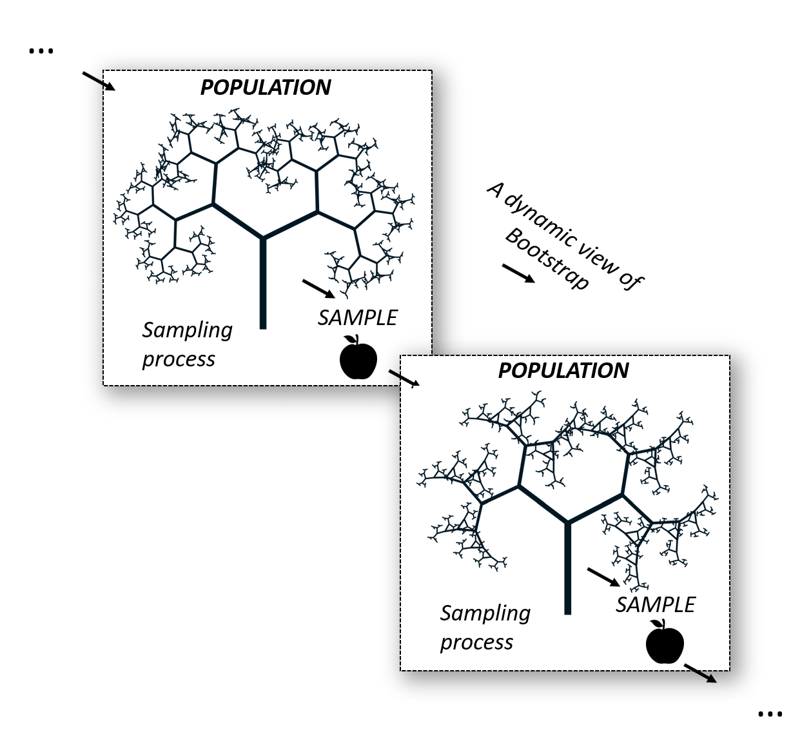The Bootstrap starts from what we have forgotten. Not to study an apple as an apple, it studies the process of how an apple is created, the process of apple-ing. Bearing this objective in mind, an apple is no longer empirical, now it is a general apple. It bears the genetics of apple that is shared by all apples and conceives the possibility of an apple tree. This is the power of the Bootstrap on the conceptual level. As illustrated in Figure 54, it now animates the static snapshot shown in Figure 53 and recovers the dynamic process. It creates resonance among the snapshots, and the resonance completes the big picture and enlarges our conceptual view of the problem.
Theory and method
Let’s consider the estimator of the mean of a normal population. A random variable \(X\) follows a normal distribution, i.e., \(X \sim N\left(\mu, \sigma^{2}\right)\). For simplicity, let’s assume that we have known the variance \(\sigma^{2}\). We want to estimate the mean \(\mu\). What we need to do is to randomly draw a few samples from the distribution. Denote these samples as \(x_{1}, x_{2}, \ldots, x_{N}\). To estimate \(\mu\) , it seems natural to use the average of the samples, denoted as \(\overline{x}=\frac{1}{N} \sum_{n=1}^{N} x_{i}\). We use \(\overline{x}\) as an estimator of \(\mu\), i.e., \(\hat{\mu}=\overline{x}\).
Figure 55: A sampling process that concerns \(x\) (upper) and an enlarged view of the sampling process that concerns both \(x\) and \(\hat{\mu}\) (bottom)
A question arises, how good is \(\overline{x}\) to be an estimator of \(\mu\)?
Obviously, if \(\overline{x}\) is numerically close to \(\mu\), it is a good estimator. The problem is, for a particular dataset, we don’t know what is \(\mu\). And even if we know \(\mu\), we need to have criteria to tell us how close is close enough. On top of all these considerations, common sense tells us that \(\overline{x}\) itself is a random variable that is subject to uncertainty. To evaluate this uncertainty and get a general sense of how closely \(\overline{x}\) estimates \(\mu\), a brute-force approach is to repeat the physical experiment many times. But this is not necessary. In this particular problem, where \(X\) follows a normal distribution, we could circumvent the physical burden (i.e., of repeating the experiments) via mathematical derivation. Since \(X\) follows a normal distribution, we could derive that \(\overline{x}\) is another normal distribution, i.e., \(\overline{x} \sim N\left(\mu, \sigma^{2} / N\right)\). Then we know that \(\overline{x}\) is an unbiased estimator, since \(E(\overline{x})=\mu\). Also, we know that the larger the sample size, the better the estimation of \(\mu\) by \(\overline{x}\), since the variance of the estimator is \(\sigma^{2} / N\).82 In this case, the sampling process includes (1) drawing samples from the distribution; and (2) estimating \(\mu\) using \(\overline{x}\). Illustration is shown in Figure 55. The sampling process is a flexible concept, depending on what variables are under study.
Figure 56: The (nonparametric) Bootstrap scheme to computationally evaluate the sampling distribution of \(\overline{x}\)

When Bootstrap is needed. Apparently, knowing the analytic form of \(\overline{x}\) is the key in the example shown above to circumvent the physical need of sampling. And the analytic tractability originates from the condition that \(X\) follows normal distribution. For many other estimators that we found analytically intractable, Bootstrap provides a computational remedy that enables us to investigate their properties, because it computationally mimics the physical sampling process.
For example, while the distribution of \(X\) is unknown, we could follow the Bootstrap scheme illustrated in Figure 56 to evaluate the sampling distribution of \(\overline{x}\). For any bootstrapped dataset, we can calculate the \(\overline{x}\) and obtain a “sample” of \(\overline{x}\), denoted as \(\overline{x}_i\). Figure 56 only illustrates three cases, while in practice usually thousands of bootstrapped datasets are drawn. After we have the “samples” of \(\overline{x}\), we can draw the distribution of \(\overline{x}\) and present it as shown in Figure 56. Although we don’t know the distribution’s analytic form, we have its numerical representation stored in a computer.
The Bootstrap scheme illustrated in Figure 56 is called nonparametric Bootstrap, since no parametric model is used to mediate the process83 Put simply, a parametric model is a model with an explicit mathematical form that is calibrated by parameters.. This is not the only way through which we can conduct Bootstrap. For example, a parametric Bootstrap scheme is illustrated in Figure 57 to perform the same task, i.e., to study the sampling distribution of \(\overline{x}\). The difference between the nonparametric Bootstrap scheme in Figure 56 and the parametric Bootstrap scheme in Figure 57 is that, when generating new samples, the nonparametric Bootstrap uses the original dataset as the representation of the underlying population, while the parametric Bootstrap uses a fitted distribution model.
Figure 57: The (parametric) Bootstrap scheme to computationally evaluate the sampling distribution of \(\overline{x}\)

Bootstrap for regression model. We show another example about how Bootstrap could be used. In Chapter 2, we showed that we can derive the explicit distribution of the estimated regression parameters84 Recall that, to derive this distribution, a few assumptions are needed: the Gaussian assumption of the error term, and the linear assumptions between predictors and outcome variable.. Here, we introduce another approach, based on the idea of Bootstrap, to compute an empirical distribution of the estimated regression parameters.
The first challenge we encounter is the ambiguity of “population” here. Unlike in the parameter estimation examples shown in Figure 56, here, a regression model involves three entities, the predictors \(\boldsymbol{x}\), the outcome variable \(y\), and the error term \(\epsilon\). It depends on how we define the “population” to decide how Bootstrap could be used85 Remember that, Bootstrap is a computational procedure to mimic the sampling process from a population. So, when you deal with a problem, you need to determine first what is the population..
A variety of options could be obtained. Below are some examples.
[Option 1.] We could simply resample the data points (i.e., the (\(\boldsymbol{x}_n\),\(y_n\)) pairs) following the nonparametric Bootstrap scheme shown in Figure 56. For each sampled dataset, we fit a regression model and obtain the fitted regression parameters.
[Option 2.] We could fix the \(\boldsymbol{x}\), and only sample for \(y\).86 In this way we implicitly assume that the uncertainty of the dataset mainly comes from \(y\). To sample \(y\), we draw samples using a fitted conditional distribution model \(P(y|\boldsymbol{x})\).87 We could use kernel density estimation approaches, which are not introduced in this book. Interested readers could explore the R package
kdensityand read the monograph by Silverman, B.W., Density Estimation for Statistics and Data Analysis, Chapman & Hall/CRC, 1986. A related method, called Kernel regression model, can be found in Chapter 9. Then, for each sampled dataset, we fit a regression model and obtain the fitted parameters.[Option 3.] We could simulate new samples of \(\boldsymbol{x}\) using the nonparametric Bootstrap method on the samples of \(\boldsymbol{x}\) only. Then, for the new samples of \(\boldsymbol{x}\), we draw samples of \(y\) using the fitted conditional distribution model \(P(y|\boldsymbol{x})\). This is a combination of the nonparametric and parametric Bootstrap methods. Then, for each sampled dataset, we can fit a regression model and obtain the fitted regression parameters.
Via either option, we could obtain an empirical distribution of the estimated regression parameter and compute a curve like the one shown in Figure 56. For instance, suppose we repeat this process \(10,000\) times. We can obtain \(10,000\) sets of estimated regression parameters, then we can use these samples to evaluate the sampling distribution of the regression parameters. We can also see if the parameters are significantly different from \(0\), and derive their \(95\%\) confidence intervals.
The three options above are just some examples88 Options 1 and 3 both define the population as the joint distribution of \(\boldsymbol{x}\) and \(y\), but differ in the ways to draw samples. Option 2 defines the population as \(P(y|\boldsymbol{x})\) only.. As a more complicated model than simple parametric estimation in distribution fitting, how to conduct Bootstrap on regression models (and other complex models such as time series models or decision tree models) is a challenging problem.
R Lab
4-Step R Pipeline. Step 1 is to load the dataset into the R workspace.
# Step 1 -> Read data into R workstation
# RCurl is the R package to read csv file using a link
library(RCurl)
url <- paste0("https://raw.githubusercontent.com",
"/analyticsbook/book/main/data/AD.csv")
AD <- read.csv(text=getURL(url))Step 2 is to implement Bootstrap on a model. Here, let’s implement Bootstrap on the parameter estimation problem for normal distribution fitting. We obtain results using both the analytic approach and the Bootstrapped approach, so we could evaluate how well the Bootstrap works.
Specifically, let’s pick up the variable HippoNV, and estimate its mean for the normal subjects89 Recall that we have both normal and diseased populations in our dataset.. Assuming that the variable HippoNV is distributed as a normal distribution, we could use the fitdistr() function from the R package MASS to estimate the mean and standard derivation, as shown below.
# Step 2 -> Decide on the statistical operation
# that you want to "Bootstrap" with
require(MASS)
fit <- fitdistr(AD$HippoNV, densfun="normal")
# fitdistr() is a function from the package "MASS".
# It can fit a range of distributions, e.g., by using the argument,
# densfun="normal", we fit a normal distribution.The fitdistr() function returns the estimated parameters together with their standard derivation90 Here, the standard derivation of the estimated parameters is derived based on the assumption of normality of HippoNV. This is a theoretical result, in contrast with the computational result by Bootstrap shown later., and the \(95\%\) CI of the estimated mean.
fit
## mean sd
## 0.471662891 0.076455789
## (0.003362522) (0.002377662)
lower.bound = fit$estimate[1] - 1.96 * fit$sd[2]
upper.bound = fit$estimate[1] + 1.96 * fit$sd[2]
## lower.bound upper.bound
## 0.4670027 0.4763231 Step 3 implements the nonparametric Bootstrap scheme91 The one shown in Figure 56., as an alternative approach, to obtain the \(95\%\) CI of the estimated mean.
# Step 3 -> draw R bootstrap replicates to
# conduct the selected statistical operation
R <- 10000
# Initialize the vector to store the bootstrapped estimates
bs_mean <- rep(NA, R)
# draw R bootstrap resamples and obtain the estimates
for (i in 1:R) {
resam1 <- sample(AD$HippoNV, length(AD$HippoNV),
replace = TRUE)
# resam1 is a bootstrapped dataset.
fit <- fitdistr(resam1 , densfun="normal")
# store the bootstrapped estimates of the mean
bs_mean[i] <- fit$estimate[1]
}Here, \(10,000\) replications are simulated by the Bootstrap method. The bs_mean is a vector of \(10,000\) elements to record all the estimated mean parameter in these replications. These \(10,000\) estimated parameters could be taken as a set of samples.
Step 4 is to summarize the Bootstrapped samples, i.e., to compute the \(95\%\) CI of the estimated mean, as shown below.
# Step 4 -> Summarize the results and derive the
# bootstrap confidence interval (CI) of the parameter
# sort the mean estimates to obtain quantiles needed
# to construct the CIs
bs_mean.sorted <- sort(bs_mean)
# 0.025th and 0.975th quantile gives equal-tail bootstrap CI
CI.bs <- c(bs_mean.sorted[round(0.025*R)],
bs_mean.sorted[round(0.975*R+1)])
CI.bs
## lower.bound upper.bound
## 0.4656406 0.4778276 It is seen that the \(95\%\) CI by Bootstrap is close to the \(95\%\) CI in the theoretical result. This shows the validity and efficacy of the Bootstrap method to evaluate the uncertainty of a statistical operation92 Bootstrap is as good as the theoretical method, but it doesn’t require to know the variable’s distribution. The cost it pays for this robustness is its computational overhead. In this example, the computation is light. For some other cases, the computation could be burdensome, i.e., when the dataset becomes big, or the statistical model itself has been computationally demanding..
Beyond the 4-step Pipeline. While the estimation of the mean of HippoNV is a relatively simple operation, in what follows, we consider a more complex statistical operation, the comparison of the mean parameters of HippoNV across the two classes, normal and diseased.
To do so, the following R code creates a temporary dataset for this purpose.
tempData <- data.frame(AD$HippoNV,AD$DX_bl)
names(tempData) = c("HippoNV","DX_bl")
tempData$DX_bl[which(tempData$DX_bl==0)] <- c("Normal")
tempData$DX_bl[which(tempData$DX_bl==1)] <- c("Diseased")We then use ggplot() to visualize the two distributions by comparing their histograms.
p <- ggplot(tempData,aes(x = HippoNV, colour=DX_bl))
p <- p + geom_histogram(aes(y = ..count.., fill=DX_bl),
alpha=0.5,position="identity")
print(p)The result is shown in Figure 58. It could be seen that the two distributions differ from each other. To have a formal evaluation of this impression, the following R code shows how the nonparametric Bootstrap method can be implemented here.
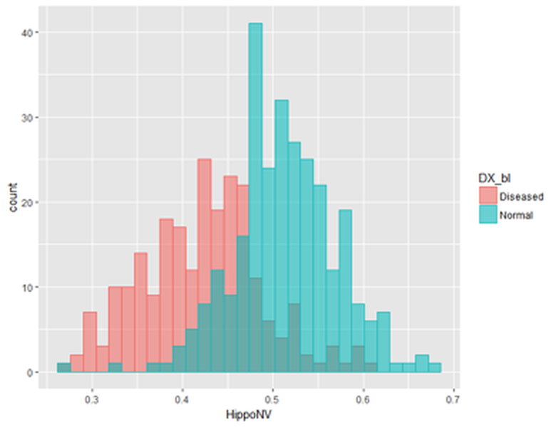
Figure 58: Histograms of HippoNV in the normal and diseased groups
# draw R bootstrap replicates
R <- 10000
# init location for bootstrap samples
bs0_mean <- rep(NA, R)
bs1_mean <- rep(NA, R)
# draw R bootstrap resamples and obtain the estimates
for (i in 1:R) {
resam0 <- sample(tempData$HippoNV[which(tempData$DX_bl==
"Normal")],length(tempData$HippoNV[which(tempData$DX_bl==
"Normal")]),replace = TRUE)
fit0 <- fitdistr(resam0 , densfun="normal")
bs0_mean[i] <- fit0$estimate[1]
resam1 <- sample(tempData$HippoNV[which(tempData$DX_bl==
"Diseased")],
length(tempData$HippoNV[which(tempData$DX_bl==
"Diseased")]),replace = TRUE)
fit1 <- fitdistr(resam1 , densfun="normal")
bs1_mean[i] <- fit1$estimate[1]
}
bs_meanDiff <- bs0_mean - bs1_mean
# sort the mean estimates to obtain bootstrap CI
bs_meanDiff.sorted <- sort(bs_meanDiff)
# 0.025th and 0.975th quantile gives equal-tail bootstrap CI
CI.bs <- c(bs_meanDiff.sorted[round(0.025*R)],
bs_meanDiff.sorted[round(0.975*R+1)])
CI.bs
 Figure 59: Histogram of the estimated mean difference of
Figure 59: Histogram of the estimated mean difference of HippoNV in the two groups by Bootstrap with \(10,000\) replications
The \(95\%\) CI of the difference of the two mean parameters is
CI.bs
## [1] 0.08066058 0.10230428The following R code draws a histogram of the bs_meanDiff to give us visual information about the Bootstrapped estimation of the mean difference, which is shown in Figure 59. The difference is statistically significant.
## Plot the bootstrap distribution with CI
# First put data in data.frame for ggplot()
dat.bs_meanDiff <- data.frame(bs_meanDiff)
library(ggplot2)
p <- ggplot(dat.bs_meanDiff, aes(x = bs_meanDiff))
p <- p + geom_histogram(aes(y=..density..))
p <- p + geom_density(alpha=0.1, fill="white")
p <- p + geom_rug()
# vertical line at CI
p <- p + geom_vline(xintercept=CI.bs[1], colour="blue",
linetype="longdash")
p <- p + geom_vline(xintercept=CI.bs[2], colour="blue",
linetype="longdash")
title = "Bootstrap distribution of the estimated mean
difference of HippoNV between normal and diseased"
p <- p + labs(title =title)
print(p)We can also apply Bootstrap on linear regression. In Chapter 2 we have fitted a regression model of MMSCORE and presented the analytically derived standard derivation of the estimated regression parameters93 I.e., as shown in Eq. (19).. Here, we show that we could use Bootstrap to compute the \(95\%\) CI of the regression parameters as well.
First, we fit a linear regression model.
# Fit a regression model first, for comparison
tempData <- data.frame(AD$MMSCORE,AD$AGE, AD$PTGENDER, AD$PTEDUCAT)
names(tempData) <- c("MMSCORE","AGE","PTGENDER","PTEDUCAT")
lm.AD <- lm(MMSCORE ~ AGE + PTGENDER + PTEDUCAT, data = tempData)
sum.lm.AD <- summary(lm.AD)
# Age is not significant according to the p-value
std.lm <- sum.lm.AD$coefficients[ , 2]
lm.AD$coefficients[2] - 1.96 * std.lm[2]
lm.AD$coefficients[2] + 1.96 * std.lm[2]The fitted regression model is
##
## Call:
## lm(formula = MMSCORE AGE + PTGENDER + PTEDUCAT,
## data = tempData)
##
## Residuals:
## Min 1Q Median 3Q Max
## -8.4290 -0.9766 0.5796 1.4252 3.4539
##
## Coefficients:
## Estimate Std. Error t value Pr(>|t|)
## (Intercept) 27.70377 1.11131 24.929 < 2e-16 ***
## AGE -0.02453 0.01282 -1.913 0.0563 .
## PTGENDER -0.43356 0.18740 -2.314 0.0211 *
## PTEDUCAT 0.17120 0.03432 4.988 8.35e-07 ***
## ---
## Signif. codes: 0 '***' 0.001 '**' 0.01 '*' 0.05
## '.' 0.1 ' ' 1
##
## Residual standard error: 2.062 on 513 degrees of freedom
## Multiple R-squared: 0.0612, Adjusted R-squared: 0.05571
## F-statistic: 11.15 on 3 and 513 DF, p-value: 4.245e-07
## Lower bound Upper bound
## [1] -0.04966834 0.000600785Then, we follow Option 1 to conduct Bootstrap for the linear regression model.
# draw R bootstrap replicates
R <- 10000
# init location for bootstrap samples
bs_lm.AD_demo <- matrix(NA, nrow = R, ncol =
length(lm.AD_demo$coefficients))
# draw R bootstrap resamples and obtain the estimates
for (i in 1:R) {
resam_ID <- sample(c(1:dim(tempData)[1]), dim(tempData)[1],
replace = TRUE)
resam_Data <- tempData[resam_ID,]
bs.lm.AD_demo <- lm(MMSCORE ~ AGE + PTGENDER + PTEDUCAT,
data = resam_Data)
bs_lm.AD_demo[i,] <- bs.lm.AD_demo$coefficients
}The bs_lm.AD_demo records the estimated regression parameters in the \(10,000\) replications. The following R code shows the \(95\%\) CI of AGE by Bootstrap.
bs.AGE <- bs_lm.AD_demo[,2]
# sort the mean estimates of AGE to obtain bootstrap CI
bs.AGE.sorted <- sort(bs.AGE)
# 0.025th and 0.975th quantile gives equal-tail
# bootstrap CI
CI.bs <- c(bs.AGE.sorted[round(0.025*R)],
bs.AGE.sorted[round(0.975*R+1)])
CI.bsIt is clear that the 95\(\%\) CI of AGE includes \(0\) in the range. This is consistent with the result by t-test that shows the variable AGE is insignificant (i.e., p-value\(=0.0563\)). We can also see that the \(95\%\) CI by Bootstrap is close to the \(95\%\) CI by theoretical result.
CI.bs
## Lower bound Upper bound
## [1] -0.053940482 0.005090523
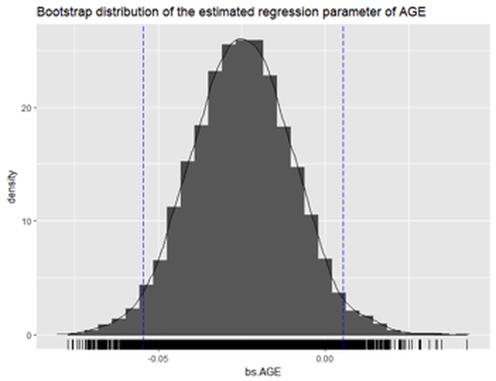
Figure 60: Histogram of the estimated regression parameter of AGE by Bootstrap with \(10,000\) replications
The following R codes draw a histogram of the Bootstrapped estimation of the regression parameter of AGE to give us a visual examination about the Bootstrapped estimation, which is shown in Figure 60.
## Plot the bootstrap distribution with CI
# First put data in data.frame for ggplot()
dat.bs.AGE <- data.frame(bs.AGE.sorted)
library(ggplot2)
p <- ggplot(dat.bs.AGE, aes(x = bs.AGE))
p <- p + geom_histogram(aes(y=..density..))
p <- p + geom_density(alpha=0.1, fill="white")
p <- p + geom_rug()
# vertical line at CI
p <- p + geom_vline(xintercept=CI.bs[1], colour="blue",
linetype="longdash")
p <- p + geom_vline(xintercept=CI.bs[2], colour="blue",
linetype="longdash")
title <- "Bootstrap distribution of the estimated
regression parameter of AGE"
p <- p + labs(title = title)
print(p)We can also see the \(95\%\) CI of PTEDUCAT as shown below, which is between \(0.1021189\) and \(0.2429209\). This is also close to the the \(95\%\) CI by theoretical result. Also, t-test also shows the variable PTEDUCAT is significant (i.e., p-value is \(8.35e-07\)).
bs.PTEDUCAT <- bs_lm.AD_demo[,4]
# sort the mean estimates of PTEDUCAT to obtain
# bootstrap CI
bs.PTEDUCAT.sorted <- sort(bs.PTEDUCAT)
# 0.025th and 0.975th quantile gives equal-tail
# bootstrap CI
CI.bs <- c(bs.PTEDUCAT.sorted[round(0.025*R)],
bs.PTEDUCAT.sorted[round(0.975*R+1)])
CI.bs
CI.bs
## [1] 0.1021189 0.2429209
 Figure 61: Histogram of the estimated regression parameter of
Figure 61: Histogram of the estimated regression parameter of PTEDUCAT by Bootstrap with \(10,000\) replications
The following R code draws a histogram (i.e., Figure 61) of the Bootstrapped estimation of the regression parameter of PTEDUCAT.
## Plot the bootstrap distribution with CI
# First put data in data.frame for ggplot()
dat.bs.PTEDUCAT <- data.frame(bs.PTEDUCAT.sorted)
library(ggplot2)
p <- ggplot(dat.bs.PTEDUCAT, aes(x = bs.PTEDUCAT))
p <- p + geom_histogram(aes(y=..density..))
p <- p + geom_density(alpha=0.1, fill="white")
p <- p + geom_rug()
# vertical line at CI
p <- p + geom_vline(xintercept=CI.bs[1], colour="blue",
linetype="longdash")
p <- p + geom_vline(xintercept=CI.bs[2], colour="blue",
linetype="longdash")
title <- "Bootstrap distribution of the estimated regression
parameter of PTEDUCAT"
p <- p + labs(title = title )
print(p)Random forests
Rationale and formulation
Randomness has a productive dimension, depending on how you use it. For example, a random forest (RF) model consists of multiple tree models that are generated by a creative use of two types of randomness. One, each tree is built on a randomly selected set of samples by applying Bootstrap on the original dataset. Two, in building each tree, a randomly selected subset of features is used to choose the best split. Figure 62 shows this scheme of random forest.
 Figure 62: How random forest uses Bootstrap to grow decision trees
Figure 62: How random forest uses Bootstrap to grow decision trees
Random forest has gained superior performances in many applications, and it (together with its variants) has been a winning approach in some data competitions over the past years. While it is not necessary that an aggregation of many models would lead to better performance than its constituting parts, random forest works because of a number of reasons. Here we use an example to show when the random forest, as a sum, is better than its parts (i.e., the decision trees).
The following R code generates a dataset with two predictors and an outcome variable that has two classes. As shown in Figure 63 (left), the two classes are separable by a linear boundary.
# This is a script for simulation study
rm(list = ls(all = TRUE))
require(rpart)
require(dplyr)
require(ggplot2)
require(randomForest)
ndata <- 2000
X1 <- runif(ndata, min = 0, max = 1)
X2 <- runif(ndata, min = 0, max = 1)
data <- data.frame(X1, X2)
data <- data %>% mutate(X12 = 0.5 * (X1 - X2),
Y = ifelse(X12 >= 0, 1, 0))
data <- data %>% select(-X12) %>% mutate(Y =
as.factor(as.character(Y)))
ggplot(data, aes(x = X1, y = X2, color = Y)) + geom_point() +
labs(title = "Data points")Figure 63: (Left) A linearly separable dataset with two predictors; (middle) the decision boundary of a decision tree model; (right) the decision boundary of a random forest model
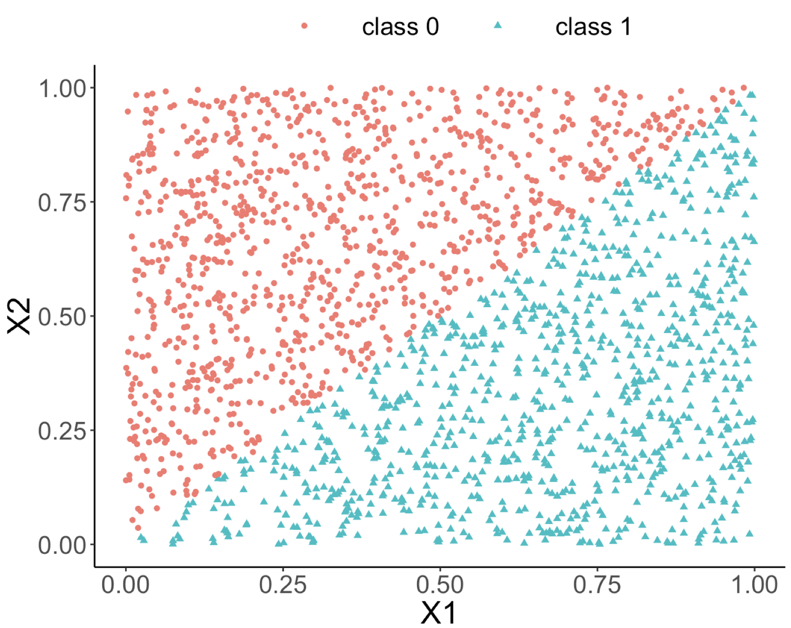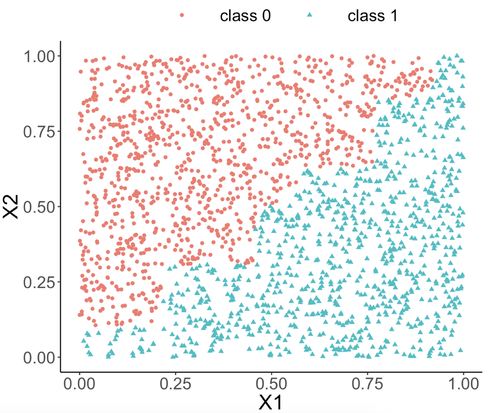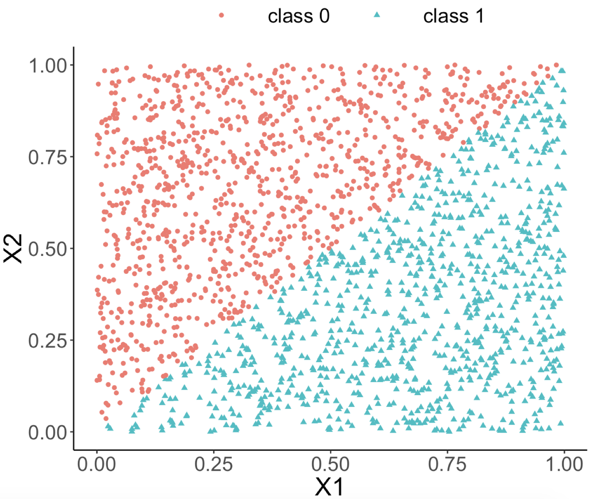Both random forest and decision tree models are applied to the dataset. The classification boundaries of both decision tree and random forest models are shown in Figures 63 (middle) and (right), respectively.
rf_model <- randomForest(Y ~ ., data = data)
tree_model <- rpart(Y ~ ., data = data)
pred_rf <- predict(rf_model, data, type = "prob")[, 1]
pred_tree <- predict(tree_model, data, type = "prob")[, 1]
data_pred <- data %>% mutate(pred_rf_class = ifelse(pred_rf <
0.5, 0, 1)) %>% mutate(pred_rf_class =
as.factor(as.character(pred_rf_class))) %>%
mutate(pred_tree_class = ifelse(pred_tree <
0.5, 0, 1)) %>% mutate(pred_tree_class =
as.factor(as.character(pred_tree_class)))
ggplot(data_pred, aes(x = X1, y = X2,
color = pred_tree_class)) +
geom_point() + labs(title = "Classification boundary from
a single decision tree")
ggplot(data_pred, aes(x = X1, y = X2,
color = pred_rf_class)) +
geom_point() + labs(title = "Classification bounday from
random forests")We can see from Figure 63 (middle) that the classification boundary generated by the decision tree model has a difficult to approximate linear boundary. There is an inherent limitation of a tree model to fit smooth boundaries due to its box-shaped nature resulting from its use of rules to segment the data space for making predictions. In contrast, the classification boundary of the random forest model is smoother than the one of the decision tree, and it can provide better approximation of complex and nonlinear classification boundaries.
Having said that, this is not the only reason why the random forest model is remarkable. After all, many models can model linear boundary, and it is actually not the random forests’ strength. The remarkable thing about a random forest is its capacity, as a tree-based model, to actually model linear boundary. It shows its flexibility, adaptability, and learning capacity to characterize complex patterns in a dataset. Let’s see more details to understand how it works.
Theory and method
Like a decision tree, the learning process of random forests follows the algorithmic modeling framework. It uses an organized set of heuristics, rather than a mathematical characterization. We present the process of building random forest models using a simple example with a small dataset shown in Table 10 that has two predictors, \(x_1\) and \(x_2\), and an outcome variable with two classes.
Table 10: Example of a dataset
| ID | \(x_1\) | \(x_2\) | Class |
|---|---|---|---|
| \(1\) | \(1\) | \(1\) | \(C0\) |
| \(2\) | \(1\) | \(0\) | \(C1\) |
| \(3\) | \(0\) | \(1\) | \(C1\) |
| \(4\) | \(0\) | \(0\) | \(C0\) |
As shown in Figure 62, each tree is built on a resampled dataset that consists of data instances randomly selected from the original data set94 I.e., often with the same sample size as the original dataset and is called sampling with replacement.. As shown in Figure 64, the first resampled dataset includes data instances (represented by their IDs) \(\{1,1,3,4\}\) and is used for building the first tree. The second resampled dataset includes data instances \(\{2,3,4,4\}\) and is used for building the second tree. This process repeats until a specific number of trees is built.
 Figure 64: Examples of bootstrapped datasets from the dataset shown in Table 10
Figure 64: Examples of bootstrapped datasets from the dataset shown in Table 10
The first tree begins with the root node that contains data instances \(\{1,1,3,4\}\). As introduced in Chapter 2, we recursively split a node into two child nodes to reduce impurity (i.e., measured by entropy). This greedy recursive splitting process is also used to build each decision tree in a random forest model. A slight variation is that, in the R package randomForest, the Gini index is used to measure impurity instead of entropy.
The Gini index for a data set is defined as95 \(C\) is the number of classes of the outcome variable, and \(p_{c}\) is the proportion of data instances that come from the class \(c\).
\[ \operatorname{Gini} =\sum_{c=1}^{C} p_{c}\left(1-p_{c}\right). \]
The Gini index plays the same role as the entropy (more details could be found in the Remarks section). Similar as the information gain (IG), the Gini gain can be defined as
\[\nabla \operatorname{Gini} = \operatorname{Gini}_s - \sum\nolimits_{i=1,\cdots,n} w_i \operatorname{Gini}_i.\]
Here, \(\operatorname{Gini}_s\) is the Gini index at the node to be split; \(w_{i}\) and \(\operatorname{Gini}_{i}\), are the proportion of samples and the Gini index at the \(i^{th}\) children node, respectively.
 Figure 65: root node split using \(x_{1}=0\)
Figure 65: root node split using \(x_{1}=0\)
Let’s go back to the first tree that begins with the root node containing data instances \(\{1,1,3,4\}\). There are three instances that are associated with the class \(C0\) (thus, \(p_0 = \frac{3}{4}\)), one instance with \(C1\) (thus, \(p_1 = \frac{1}{4}\)). The Gini index of the root node is calculated as
\[ \frac{3}{4} \times \frac{1}{4}+\frac{1}{4} \times \frac{3}{4}=0.375. \]
To split the root node, candidates of splitting rules are:
[Rule 1:] \(x_{1}=0 \text { versus } x_{1} \neq 0\).
[Rule 2:] \(x_{2}=0 \text { versus } x_{2} \neq 0\).
The decision tree model introduced in Chapter 2 would evaluate each of the possible splitting rules, and select the one that yields the maximum Gini gain to split the node. However, for random forests, it randomly selects the variables for splitting a node96 In general, for a dataset with \(p\) variables, \(\sqrt{p}\) variables are randomly selected for splitting.. In our example, as there are two variables, we assume that \(x_{1}\) is randomly selected for splitting the root node. Thus, \(x_{1}=0\) is used for splitting the root node which generates the decision tree model as shown in Figure 65.
 Figure 66: second split using \(x_{2}=0\)
Figure 66: second split using \(x_{2}=0\)
The Gini gain for the split shown in Figure 65 can be calculated as
\[ 0.375-0.5 \times 0-0.5 \times 0.5=0.125. \]
The right node in the tree shown in Figure 65 has reached a perfect state of homogeneity97 Which is, in practice, a rare phenomenon.. The left node, however, contains two instances \(\{3,4\}\) that are associated with two classes. We further split the left node. Assume that this time \(x_{2}\) is randomly selected. The left node can be further split as shown in Figure 66.
All nodes cannot be split further. The final tree model is shown in Figure 67, while each leaf node is labeled with the majority class of the instances in the node, such that they become decision nodes.
 Figure 67: tree model trained
Figure 67: tree model trained
Applying the decision tree in Figure 67 to the \(4\) data points as shown in Table 10, we can get the predictions as shown in Table 11. The error rate is \(25\%\).
Table 11: Example of a dataset
| ID | \(x_1\) | \(x_2\) | Class | Prediction |
|---|---|---|---|---|
| \(1\) | \(1\) | \(1\) | \(C0\) | \(C0\) |
| \(2\) | \(1\) | \(0\) | \(C1\) | \(C0\) |
| \(3\) | \(0\) | \(1\) | \(C1\) | \(C1\) |
| \(4\) | \(0\) | \(0\) | \(C0\) | \(C1\) |
Similarly, the second, third, …, and the \(m^{th}\) trees can be built. Usually, in random forest models, tree pruning is not needed. Rather, we use a parameter to control the depth of the tree models to be created (i.e., use the parameter nodesize in randomForest).
When a random forest model is built, to make a prediction for a data point, each tree makes a prediction, then all the predictions are combined; e.g., for continuous outcome variable, the average of the predictions is used as the final prediction; for classification outcome variable, the class that wins majority among all trees is the final prediction.
R Lab
The 5-Step R Pipeline. Step 1 and Step 2 get data into your R work environment and make appropriate preprocessing.
# Step 1 -> Read data into R workstation
# RCurl is the R package to read csv file using a link
library(RCurl)
url <- paste0("https://raw.githubusercontent.com",
"/analyticsbook/book/main/data/AD.csv")
AD <- read.csv(text=getURL(url))
# str(AD)# Step 2 -> Data preprocessing
# Create your X matrix (predictors) and Y vector
# (outcome variable)
X <- AD[,2:16]
Y <- AD$DX_bl
Y <- paste0("c", Y)
Y <- as.factor(Y)
# Then, we integrate everything into a data frame
data <- data.frame(X,Y)
names(data)[16] = c("DX_bl")
# Create a training data (half the original data size)
train.ix <- sample(nrow(data),floor( nrow(data)/2) )
data.train <- data[train.ix,]
# Create a testing data (half the original data size)
data.test <- data[-train.ix,]Step 3 uses the R package randomForest to build your random forest model.
# Step 3 -> Use randomForest() function to build a
# RF model
# with all predictors
library(randomForest)
rf.AD <- randomForest( DX_bl ~ ., data = data.train,
ntree = 100, nodesize = 20, mtry = 5)
# Three main arguments to control the complexity
# of a random forest modelDetails for the three arguments in randomForest: The ntree is the number of trees98 The more trees, the more complex the random forest model is.. The nodesize is the minimum sample size of leaf nodes99 The larger the sample size in leaf nodes, the less depth of the trees; therefore, the less complex the random forest model is.. The mtry is a parameter to control the degree of randomness when your RF model selects variables to split nodes100 For classification, the default value of mtry is \(\sqrt{p}\), where \(p\) is the number of variables; for regression, the default value of mtry is \(p/3\)..
Step 4 is prediction. We use the predict() function
# Step 4 -> Predict using your RF model
y_hat <- predict(rf.AD, data.test,type="class")Step 5 evaluates the prediction performance of your model on the testing data.
# Step 5 -> Evaluate the prediction performance of your RF model
# Three main metrics for classification: Accuracy,
# Sensitivity (1- False Positive), Specificity (1 - False Negative)
library(caret)
confusionMatrix(y_hat, data.test$DX_bl)The result is shown below. It is an information-rich object101 To learn more about an R object, function, and package, please check out the online documentation that is usually available for an R package that has been released to the public. For example, for the confusionMatrix in the R package caret, check out this link: https://www.rdocumentation.org/packages/caret/versions/6.0-84/topics/confusionMatrix. Some R packages also come with a journal article published in the Journal of Statistical Software. E.g., for caret, see Kuhn, M., Building predictive models in R using the caret package, Journal of Statistical Software, Volume 28, Issue 5, 2018, http://www.jstatsoft.org/article/view/v028i05/v28i05.pdf..
## Confusion Matrix and Statistics
##
## Reference
## Prediction c0 c1
## c0 136 31
## c1 4 88
##
## Accuracy : 0.8649
## 95% CI : (0.8171, 0.904)
## No Information Rate : 0.5405
## P-Value [Acc > NIR] : < 2.2e-16
##
## Kappa : 0.7232
##
## Mcnemar's Test P-Value : 1.109e-05
##
## Sensitivity : 0.9714
## Specificity : 0.7395
## Pos Pred Value : 0.8144
## Neg Pred Value : 0.9565
## Prevalence : 0.5405
## Detection Rate : 0.5251
## Detection Prevalence : 0.6448
## Balanced Accuracy : 0.8555
##
## 'Positive' Class : c0 We can also draw the ROC curve
# ROC curve is another commonly reported metric
# for classification models
library(pROC)
# pROC has the roc() function that is very useful here
y_hat <- predict(rf.AD, data.test,type="vote")
# In order to draw ROC, we need the intermediate prediction
# (before RF model binarize it into binary classification).
# Thus, by specifying the argument type="vote", we can
# generate this intermediate prediction. y_hat now has
# two columns, one corresponds to the ratio of votes the
# trees assign to one class, and the other column is the
# ratio of votes the trees assign to another class.
main = "ROC Curve"
plot(roc(data.test$DX_bl, y_hat[,1]),
col="blue", main=main)And we can have the ROC curve as shown in Figure 68.
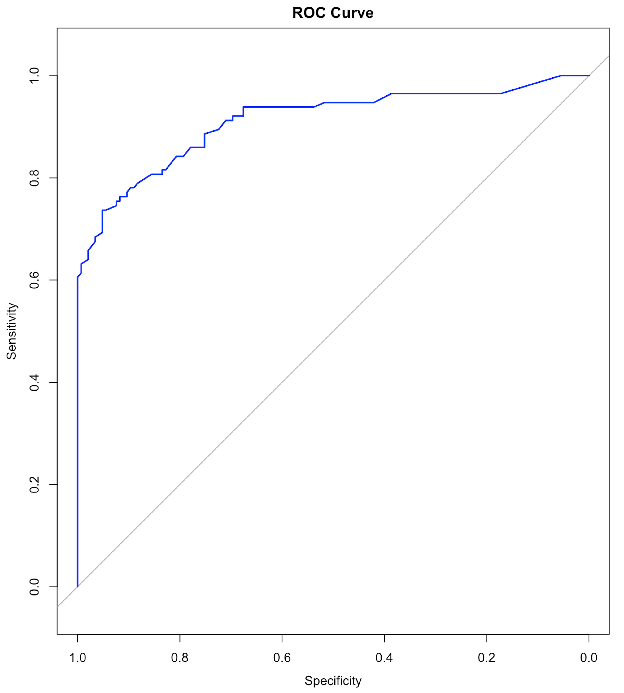 Figure 68: ROC curve of the RF model
Beyond the 5-Step R Pipeline. Random forests are complex models that have many parameters to be tuned. In Chapter 2 and Chapter 3 we have used the step() function for automatic model selection for regression models. Part of the reason this is possible for regression models is that model selection for regression models largely concerns variable selection only. For decision tree and random forest models, the model selection concerns not only variable selection, but also many other aspects, such as the depth of the tree, the number of trees, and the degree of randomness that would be used in model training. This makes the model selection for tree models a craft. An individual’s experience and insights make a difference, and some may find a better model, even the same package is used on the same dataset to build models102 There is often an impression that a good model is built by a good pipeline, like this 5-step pipeline. This impression is a reductive view, since it only looks at the final stage of data analytics. Like manufacturing, when the process is mature and we are able to see the rationale behind every detail of the manufacturing process, we may lose sight of those alternatives that had been considered, experimented, then discarded (or withheld) for various reasons..
To see how these parameters impact the models, we conduct some experiments. The number of trees is one of the most important parameters of random forests that we’d like to be tuned well. We can build different random forest models by tuning the parameter ntree in randomForest. For each selection of the number of trees, we first randomly split the dataset into training and testing datasets, then train the model on the training dataset, and evaluate its performance on the testing dataset. This process of data splitting, model training, and testing is repeated \(100\) times. We can use boxplots to show the overall performance of the models. Results are shown in Figure 69.
 Figure 69: Error v.s. number of trees in a random forest model
Figure 69: Error v.s. number of trees in a random forest model
library(rpart)
library(dplyr)
library(tidyr)
library(ggplot2)
require(randomForest)
library(RCurl)
set.seed(1)
theme_set(theme_gray(base_size = 15))
url <- paste0("https://raw.githubusercontent.com",
"/analyticsbook/book/main/data/AD.csv")
data <- read.csv(text=getURL(url))
target_indx <- which(colnames(data) == "DX_bl")
data[, target_indx] <-
as.factor(paste0("c", data[, target_indx]))
rm_indx <- which(colnames(data) %in% c("ID", "TOTAL13",
"MMSCORE"))
data <- data[, -rm_indx]
results <- NULL
for (itree in c(1:9, 10, 20, 50, 100, 200, 300, 400, 500,
600, 700)) {
for (i in 1:100) {
train.ix <- sample(nrow(data), floor(nrow(data)/2))
rf <- randomForest(DX_bl ~ ., ntree = itree, data =
data[train.ix, ])
pred.test <- predict(rf, data[-train.ix, ], type = "class")
this.err <- length(which(pred.test !=
data[-train.ix, ]$DX_bl))/length(pred.test)
results <- rbind(results, c(itree, this.err))
}
}
colnames(results) <- c("num_trees", "error")
results <- as.data.frame(results) %>%
mutate(num_trees = as.character(num_trees))
levels(results$num_trees) <- unique(results$num_trees)
results$num_trees <- factor(results$num_trees,
unique(results$num_trees))
ggplot() + geom_boxplot(data = results, aes(y = error,
x = num_trees)) + geom_point(size = 3)It can be seen in Figure 69 that when the number of trees is small, particularly, less than \(10\), the improvement on prediction performance of random forest is substantial with trees added. However, the error rates become stable after the number of trees reaches \(100\).
Next, let’s consider the number of features (i.e., use the parameter mtry in the function randomForest). Here, \(100\) trees are used. For each number of features, again, following the process we have used in the experiment with the number of trees, we draw the boxplots in Figure 70.
 Figure 70: Error v.s. number of features in a random forest model
Figure 70: Error v.s. number of features in a random forest model
It can be seen that the error rates are not significantly different when the number of features changes.
library(rpart)
library(dplyr)
library(tidyr)
library(ggplot2)
require(randomForest)
library(RCurl)
set.seed(1)
theme_set(theme_gray(base_size = 15))
url <- paste0("https://raw.githubusercontent.com",
"/analyticsbook/book/main/data/AD.csv")
data <- read.csv(text=getURL(url))
target_indx <- which(colnames(data) == "DX_bl")
data[, target_indx] <- as.factor(
paste0("c", data[, target_indx]))
rm_indx <- which(colnames(data) %in% c("ID", "TOTAL13",
"MMSCORE"))
data <- data[, -rm_indx]
nFea <- ncol(data) - 1
results <- NULL
for (iFeatures in 1:nFea) {
for (i in 1:100) {
train.ix <- sample(nrow(data), floor(nrow(data)/2))
rf <- randomForest(DX_bl ~ ., mtry = iFeatures, ntree = 100,
data = data[train.ix,])
pred.test <- predict(rf, data[-train.ix, ], type = "class")
this.err <- length(which(pred.test !=
data[-train.ix, ]$DX_bl))/length(pred.test)
results <- rbind(results, c(iFeatures, this.err))
}
}
colnames(results) <- c("num_features", "error")
results <- as.data.frame(results) %>%
mutate(num_features = as.character(num_features))
levels(results$num_features) <- unique(results$num_features)
results$num_features <- factor(results$num_features,
unique(results$num_features))
ggplot() + geom_boxplot(data = results, aes(y = error,
x = num_features)) + geom_point(size = 3)
 Figure 71: Error v.s. node size in a random forest model
Figure 71: Error v.s. node size in a random forest model
Further, we experiment with the minimum node size (i.e., use the parameter nodesize in the function randomForest), that is, the minimum number of instances at a node. Boxplots of their performances are shown in Figure 71.
library(dplyr)
library(tidyr)
library(ggplot2)
require(randomForest)
library(RCurl)
set.seed(1)
theme_set(theme_gray(base_size = 15))
url <- paste0("https://raw.githubusercontent.com",
"/analyticsbook/book/main/data/AD.csv")
data <- read.csv(text=getURL(url))
target_indx <- which(colnames(data) == "DX_bl")
data[, target_indx] <- as.factor(paste0("c", data[, target_indx]))
rm_indx <- which(colnames(data) %in% c("ID", "TOTAL13",
"MMSCORE"))
data <- data[, -rm_indx]
results <- NULL
for (inodesize in c(1, 2, 3, 4, 5, 6, 7, 8, 9, 10, 20, 30,
40, 50, 60, 70, 80,90, 100)) {
for (i in 1:100) {
train.ix <- sample(nrow(data), floor(nrow(data)/2))
rf <- randomForest(DX_bl ~ ., ntree = 100, nodesize =
inodesize, data = data[train.ix,])
pred.test <- predict(rf, data[-train.ix, ], type = "class")
this.err <- length(which(pred.test !=
data[-train.ix, ]$DX_bl))/length(pred.test)
results <- rbind(results, c(inodesize, this.err))
# err.rf <- c(err.rf, length(which(pred.test !=
# data[-train.ix,]$DX_bl))/length(pred.test) )
}
}
colnames(results) <- c("min_node_size", "error")
results <- as.data.frame(results) %>%
mutate(min_node_size = as.character(min_node_size))
levels(results$min_node_size) <- unique(results$min_node_size)
results$min_node_size <- factor(results$min_node_size,
unique(results$min_node_size))
ggplot() + geom_boxplot(data = results, aes(y = error,
x = min_node_size)) + geom_point(size = 3)Figure 71 shows that the error rates start to rise when the minimum node size equals 40. And the error rates are not substantially different when the minimum node size is less than 40. All together, these results provide information for us to select models.
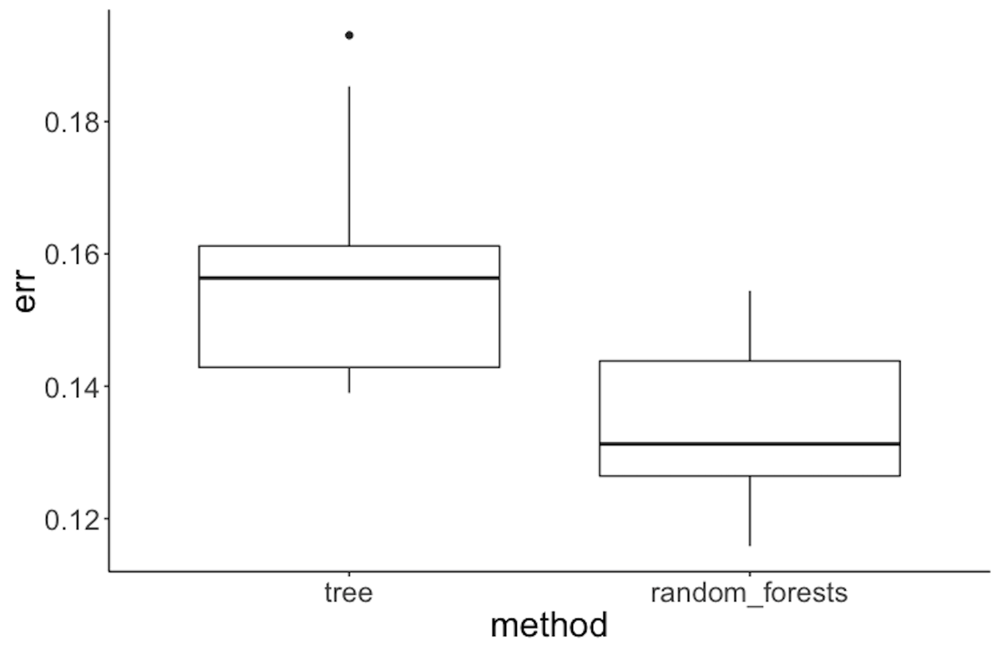 Figure 72: Performance of random forest v.s. tree model on the Alzheimer’s disease data
To compare random forest with decision tree, we can also follow a similar process, i.e., half of the dataset is used for training and the other half for testing. This process of splitting data, training the model on training data, and testing the model on testing data is repeated \(100\) times, and boxplots of the errors from decision trees and random forests are plotted in Figure 72 using the following R code.
library(rpart)
library(dplyr)
library(tidyr)
library(ggplot2)
library(RCurl)
require(randomForest)
set.seed(1)
theme_set(theme_gray(base_size = 15))
url <- paste0("https://raw.githubusercontent.com",
"/analyticsbook/book/main/data/AD.csv")
data <- read.csv(text=getURL(url))
target_indx <- which(colnames(data) == "DX_bl")
data[, target_indx] <- as.factor(paste0("c", data[, target_indx]))
rm_indx <- which(colnames(data) %in%
c("ID", "TOTAL13", "MMSCORE"))
data <- data[, -rm_indx]
err.tree <- NULL
err.rf <- NULL
for (i in 1:100) {
train.ix <- sample(nrow(data), floor(nrow(data)/2))
tree <- rpart(DX_bl ~ ., data = data[train.ix, ])
pred.test <- predict(tree, data[-train.ix, ], type = "class")
err.tree <- c(err.tree, length(
which(pred.test != data[-train.ix, ]$DX_bl))/length(pred.test))
rf <- randomForest(DX_bl ~ ., data = data[train.ix, ])
pred.test <- predict(rf, data[-train.ix, ], type = "class")
err.rf <- c(err.rf, length(
which(pred.test != data[-train.ix, ]$DX_bl))/length(pred.test))
}
err.tree <- data.frame(err = err.tree, method = "tree")
err.rf <- data.frame(err = err.rf, method = "random_forests")
ggplot() + geom_boxplot(
data = rbind(err.tree, err.rf), aes(y = err, x = method)) +
geom_point(size = 3)Figure 72 shows that the error rates of decision trees are higher than those for random forests, indicating that random forest is a better model here.
Remarks
The Gini index versus the entropy
The Gini index plays the same role as the entropy. To see that, the following R code plots the Gini index and the entropy in a binary class problem103 A binary class problem has two nominal parameters, \(p_{1}\) and \(p_{2}\). Because \(p_{2}\) equals \(1-p_{1}\), it is actually a one-parameter system, such that we can visualize how the Gini index and the entropy changes according to \(p_{1}\), as shown in Figure 73.. Their similarity is evident as shown in Figure 73.
The following R scripts package the Gini index and entropy as two functions.
entropy <- function(p_v) {
e <- 0
for (p in p_v) {
if (p == 0) {
this_term <- 0
} else {
this_term <- -p * log2(p)
}
e <- e + this_term
}
return(e)
}gini <- function(p_v) {
e <- 0
for (p in p_v) {
if (p == 0) {
this.term <- 0
} else {
this.term <- p * (1 - p)
}
e <- e + this.term
}
return(e)
}The following R script draws Figure 73.
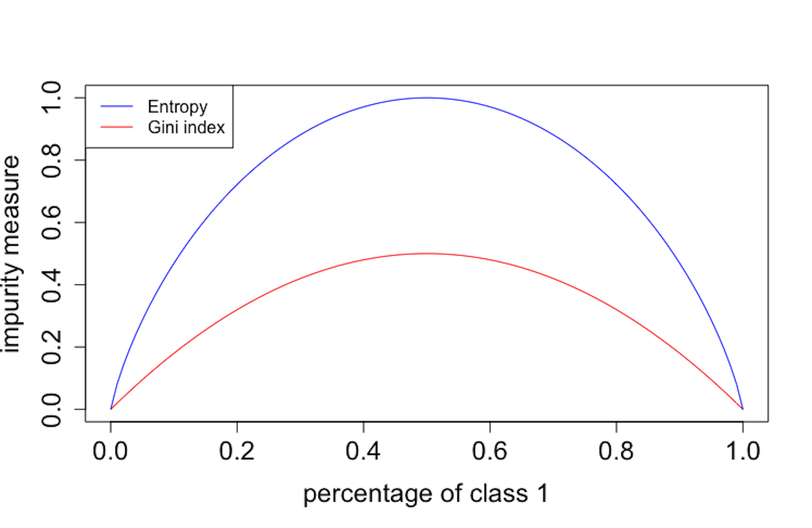 Figure 73: Gini index vs. entropy
entropy.v <- NULL
gini.v <- NULL
p.v <- seq(0, 1, by = 0.01)
for (p in p.v) {
entropy.v <- c(entropy.v, (entropy(c(p, 1 - p))))
gini.v <- c(gini.v, (gini(c(p, 1 - p))))
}
plot(p.v, gini.v, type = "l", ylim = c(0, 1),
xlab = "percentage of class 1",col = "red",
ylab = "impurity measure", cex.lab = 1.5,
cex.axis = 1.5, cex.main = 1.5,cex.sub = 1.5)
lines(p.v, entropy.v, col = "blue")
legend("topleft", legend = c("Entropy", "Gini index"),
col = c("blue", "red"), lty = c(1, 1), cex = 0.8)It can be seen in Figure 73 that the two impurity measures are similar. Both reach minimum, i.e., \(0\), when all the data instances belong to the same class, and they reach maximum when there are equal numbers of data instances for the two classes. In practice, they produce similar trees.
Why random forests work
A random forest model is inspirational because it shows that randomness, usually considered as a troublemaker, has a productive dimension. This seems to be counterintuitive. An explanation has been pointed out in numerous literature that the random forests, together with other models that are called ensemble learning models, could make a group of weak models come together to form a strong model.
For example, consider a random forest model with \(100\) trees. Each tree is a weak model and its accuracy is \(0.6\). Assume that the trees are independent104 I.e., the predictions of one tree provide no hint to guess the predictions of another tree., with \(100\) trees the probability of the random forest model to predict correctly on any data point is \(0.97\), i.e.,
\[ \sum_{k=51}^{100} C(n, k) \times 0.6^{k} \times 0.4^{100-k} = 0.97. \]
This result is impressive, but don’t forget the assumption of the independence between the trees. This assumption does not hold in reality in a strict sense; i.e., ideally, we hope to have an algorithm that can find many good models that perform well and are all different; but, if we build many models using one dataset, these models would more or less resemble each other. Particularly, when we solely focus on models that can achieve optimal performance, it is often that the identified models end up more or less the same. Responding to this dilemma, randomness (i.e., the use of Bootstrap to randomize choices of data instances and the use of random feature selection for building trees) is introduced into the model-building process to create diversity of the models. The dynamics between the degree of randomness, the performance of each individual model, and their difference, should be handled well. To develop the craft, you may have many practices and focus on driving this dynamics towards a collective good.
Variable importance by random forests
 Figure 74: Tree #1
Figure 74: Tree #1
Recall that a random forest model consists of decision trees that are defined by splits on some variables. The splits provide information about variables’ importance. To explain this, consider the data example shown in Table 12.
Table 12: Example of a dataset
| ID | \(x_1\) | \(x_2\) | \(x_3\) | \(x_4\) | Class |
|---|---|---|---|---|---|
| \(1\) | \(1\) | \(1\) | \(0\) | \(1\) | \(C0\) |
| \(2\) | \(0\) | \(0\) | \(0\) | \(1\) | \(C1\) |
| \(3\) | \(1\) | \(1\) | \(1\) | \(1\) | \(C1\) |
| \(4\) | \(0\) | \(0\) | \(1\) | \(1\) | \(C1\) |
Assume that a random forest model with two trees (i.e., shown in Figures 74 and 75) is built on the dataset.
At split 1, the Gini gain for \(x_1\) is:
\[0.375-0.5\times0-0.5\times0.5 = 0.125.\]
At split 2, the Gini gain for \(x_3\) is:
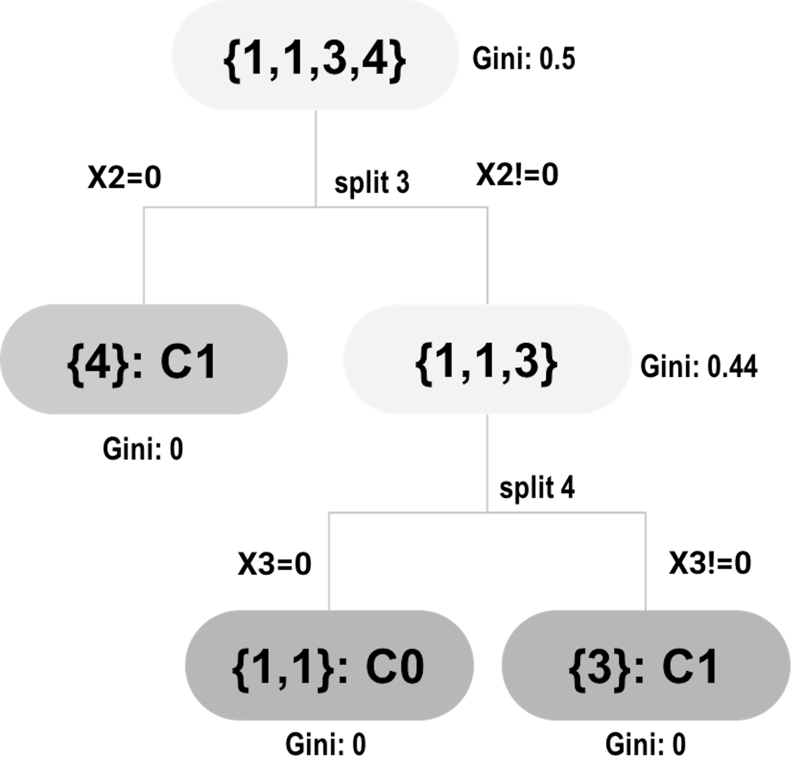 Figure 75: Tree #2
\[0.5-0.5\times0-0.5\times0 = 0.5.\]
At split 3, the Gini gain for \(x_2\) is
\[0.5-0.25\times0 + 0.75\times0.44 = 0.17.\]
At split 4, the Gini gain for \(x_3\) is
\[0.44-0.5\times0 + 0.5\times0 = 0.44.\]
Table 13 summarizes the contributions of the variables in the splits. The total contribution can be used as the variable’s importance score.
Table 13: Contributions of the variables in the splits
| ID of splits | \(x_1\) | \(x_2\) | \(x_3\) | \(x_4\) |
|---|---|---|---|---|
| \(1\) | \(0.125\) | \(0\) | \(0\) | \(0\) |
| \(2\) | \(0\) | \(0\) | \(0.5\) | \(0\) |
| \(3\) | \(0\) | \(0.17\) | \(0\) | \(0\) |
| \(4\) | \(0\) | \(0\) | \(0.44\) | \(0\) |
| \(Total\) | \(0.125\) | \(0.17\) | \(0.94\) | \(0\) |
The variable’s importance score helps us identify the variables that have strong predictive values. The approach to obtain the variable’s importance score is simple and effective, but it is not perfect. For example, if we revisit the example shown in Table 12, we may notice that \(x_1\) and \(x_2\) are identical. What does this suggest to you105 Interested readers may read this article: Deng, H. and Runger, G., Gene selection with guided regularized random forest, Pattern Recognition, Volume 46, Issue 12, Pages 3483-3489, 2013.?
Partial dependency plot
Variable importance scores indicate whether a variable is informative in predicting the outcome variable. It does not provide information about how the outcome variable is influenced by the variables. Partial dependency plot can be used to visualize the relationship between a predictor and the outcome variable, averaged on other predictors.
Figure 76: Partial dependency plots of variables in random forests
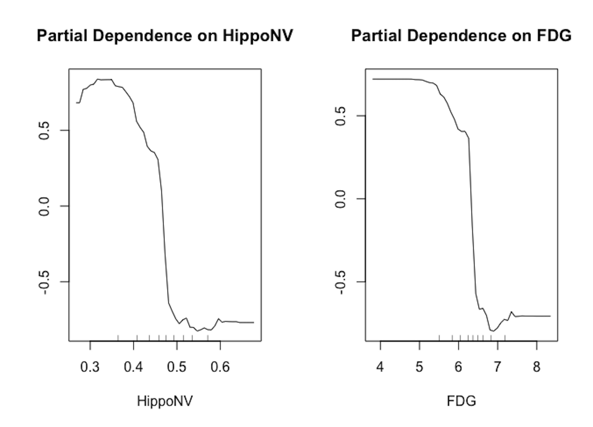We draw in Figure 76 the partial dependency plots of two variables on the AD dataset. It is clear that the relationships between the outcome variable with both predictors are significant. And the orientation of both relationships is visualized by the plots.
# Draw the partial dependency plots of variables in random forests
randomForest::partialPlot(rf, data, HippoNV, "1")
randomForest::partialPlot(rf, data, FDG, "1")Exercises
Continue the example in the 4-step R pipeline R lab in this chapter that estimated the mean and standard derivation of the variable
HippoNVof the AD dataset. Use the same R pipeline to evaluate the uncertainty of the estimation of the standard derivation of the variableHippoNVof the AD dataset. Report its \(95\%\) CI.Use the R pipeline for Bootstrap to evaluate the uncertainty of the estimation of the coefficient of a logistic regression model. Report the \(95\%\) CI of the estimated coefficients.
Figure 77: A random forest model with \(2\) trees

- Consider the data in Table 14. Assume that two trees were built on it, as shown in Figure 77. (a) Calculate the Gini index of each node of both trees; and (b) estimate the importance scores of the three variables in this RF model.
Table 14: Dataset for Q3
| ID | \(x_1\) | \(x_2\) | \(x_3\) | Class |
|---|---|---|---|---|
| \(1\) | \(1\) | \(0\) | \(1\) | \(C0\) |
| \(2\) | \(0\) | \(0\) | \(1\) | \(C1\) |
| \(3\) | \(1\) | \(1\) | \(1\) | \(C1\) |
| \(4\) | \(0\) | \(1\) | \(1\) | \(C1\) |
Figure 78: A random forest model with \(3\) trees
- A random forest model with \(3\) trees is built, as shown in Figure 78. Use this model to predict on the data in Table 15.
Table 15: Dataset for Q4
| ID | \(x_1\) | \(x_2\) | \(x_3\) | Class |
|---|---|---|---|---|
| \(1\) | \(2\) | \(-0.5\) | \(0.5\) | |
| \(2\) | \(0.8\) | \(-1.1\) | \(0.1\) | |
| \(3\) | \(1.2\) | \(-0.3\) | \(0.9\) |
- Follow up on the simulation experiment in Q9 in Chapter 2. Apply random forest with \(100\) trees (by setting
ntree = 100) on the simulated data and comment on the result.
Chapter 5. Learning (I): Cross-validation & OOB
Overview
The question of learning in data analytics concerns whether or not the model has learned from the data. To understand this, let’s look at a few dilemmas.
Dilemma 1. Let’s consider the prediction of a disease. Hired by the Centers of Disease Control and Prevention (CDC), a data scientist built a prediction model (e.g., a logistic regression model) using tens of thousands of patient’ data collected over several years, and the model’s prediction accuracy was \(90\%\). Isn’t this a good model?
Then we are informed that this is a rare disease, and national statistics has shown that only 0.001\(\%\) of the population of the United States have this disease. This contextual knowledge changes our perception of the \(90\%\) prediction accuracy dramatically. Consider a trivial model that simply predicts all the cases as negative (i.e., no disease), wouldn’t this trivial model achieve a prediction accuracy as high as \(99.999\%\)?106 Moral of the story: context matters.
Dilemma 2. Now let’s look at another example. Some studies pointed out that bestsellers could be reasonably predicted by computers based on the book’s content. These studies collected a number of books, some were bestsellers (i.e., based on The New York Times book-selling rank). They extracted features from these books, such as some thematic features and linguistic patterns that could be measured by words use and frequency, and trained prediction models with these features as predictors and the bestseller/non-bestseller as a binary outcome. The model achieved an accuracy between 70% to 80%. This looks promising. The problem is that, e.g., in the dataset, you may see that about 30% of the books were bestsellers.
Statistics show that in recent years there could have been more than one million new books published each year. How many of them would make The New York Times bestseller list? Maybe \(0.01\%\) or fewer. So the dataset collected for training the data is not entirely representative of the population. And in fact, this is another rare-disease-like situation107 Moral of the story: how the dataset is collected also matters..
Dilemma 3. As we have mentioned in Chapter 2, the R-squared measures the goodness-of-fit of a regression model. Let’s revisit the definition of the R-squared
\[ \text{R-squared} = \frac{\sigma_{y}^{2}-\sigma_{\varepsilon}^{2}}{\sigma_{y}^{2}}. \]
We can see that the denominator is always fixed, no matter how we change the regression model; while the numerator could only decrease if more variables are put into the model, even if these new variables have no relationship with the outcome variable. In other words, with more variables in the model, even if the residuals are not reduced, at worst they remain the same108 For a more formal discussions about the technical limitations of R-squared, e.g., a good starting point is: Kvalseth, T.O., Cautionary Note about \(R^2\), The American Statistician, Volume 39, Issue 4, Pages 279-285, 1985..
Further, the R-squared is impacted by the variance of the predictors as well. As the regression model is
\[ y = \boldsymbol{x} \boldsymbol{\beta} +\epsilon, \]
it is known that the variance of \(y\) is the variance of \(\operatorname{var}(y) = \boldsymbol{\beta}^{T} \operatorname{var}(x)\boldsymbol{\beta} + \operatorname{var}(\epsilon)\). The R-squared can be rewritten as
\[ R^{2} = \frac{\boldsymbol{\beta}^{T} \operatorname{var}(\boldsymbol{x})\boldsymbol{\beta}}{\boldsymbol{\beta}^{T} \operatorname{var}(\boldsymbol{x})\boldsymbol{\beta} + \operatorname{var}(\epsilon)}. \]
Thus, the R-squared is not only impacted by how well \(\boldsymbol{x}\) can predict \(y\), but also by the variance of \(\boldsymbol{x}\) as well109 Moral of the story: a model’s performance metric could be manipulated under “legal” terms..
Cross-validation
Rationale and formulation
Performance metrics, such as accuracy and R-squared, are context-dependent (Dilemma 1), data-dependent (Dilemma 2), and vulnerable to conscious or unconscious manipulations (Dilemma 3). These limitations make them relative metrics. They are not the absolutes that we can rely on to evaluate models in a universal fashion in all contexts.
So, what should be the universal and objective criteria to evaluate the learning performance of a model?
To answer this question, we need to understand the concepts, underfit, good fit, and overfit.
Figure 79: Three types of model performance
Figure 79 shows three models to fit the same dataset that has two classes of data points. The first model is a linear model110 E.g., \(f_1(x)=\beta_{0}+\beta_{1} x_{1}+\beta_{2} x_{2}\). that yields a straight line as the decision boundary. Obviously, many data points are misclassified when using a linear decision boundary. Some curvature is needed to bend the decision boundary, so we introduce some second order terms and an interaction term of the two predictors to create another model111 E.g., \(f_2(x)=\beta_{0}+\beta_{1} x_{1}+\beta_{2} x_{2}+\beta_{11} x_{1}^{2}+\beta_{22} x_{2}^{2}+\beta_{12} x_{1} x_{2}\).. The decision boundary is shown in Figure 79 (middle). This improved model still could not classify the two classes completely. More interaction terms112 E.g., \(f_3(\boldsymbol{x})=\beta_{0}+\beta_{1} x_{1}+\beta_{2} x_{2}+\beta_{11} x_{1}^{2}+\beta_{22} x_{2}^{2}+\beta_{12} x_{1} x_{2}+\beta_{112} x_{1}^{2} x_{2}+\beta_{122} x_{1} x_{2}^{2}+\cdots\). are introduced into the model. The decision boundary is shown in Figure 79 (right).
Now \(100\%\) prediction accuracy could be achieved. A sense of suspicion should arise: is this too good to be true?
What we have seen in Figure 79, on the positive side, is the capacity we can develop to fit a dataset113 Fit a dataset is not necessarily model a dataset. Beginners may need time to develop a sense to see the difference between the two.. On the other hand, what is responsible for the sense of suspicion of “too good to be true” is that we didn’t see a validation process at work.
Recall a general assumption of data modeling is114 I.e., Eq. (2) in Chapter 2.
\[\begin{equation*} \underbrace{y}_{data} = \underbrace{f(\boldsymbol{x})}_{signal} + \underbrace{\epsilon}_{noise}, \end{equation*}\]
where noise is unpredictable. Bearing this framework in mind, we revisit the three models in Figure 79, which from left to right illustrate underfit, good fit, and overfit, respectively. A model called underfitted means it fails to incorporate some pattern of the signal in the dataset. A model called overfitted means it allows the noise to affect the model115 Noise, by definition, only happens by accident. While the model, by definition, is to generalize the constancy, i.e., the signal, of the data rather than its unrepeatable randomness.. A dataset could be randomly generated, but the mechanism of generating the randomness116 I.e., like a distribution model. is a constancy. The model in the middle panel of Figure 79 is able to maintain a balance: it captures the structural constancy in the data to form the model, while resisting the noise and refusing to let them bend its decision boundary.
In summary, Figure 79 illustrates that:
Overfit: Complexity of the model > complexity of the signal;
Good fit: Complexity of the model = complexity of the signal;
Underfit: Complexity of the model < complexity of the signal.
In practice, however, the ultimate dilemma is we don’t know what to expect: how much variability in the data comes from the signal or the noise? A sense of proportion always matters, and methods such as cross-validation come to our rescue.
 Figure 80: The hold-out method
Figure 80: The hold-out method
Theory/Method
In what follows, a few approaches that help us to identify the model with good fit (i.e., the one shown in Figure 79 (middle), \(f_2(x)\)) are introduced. These approaches share the same goal: to train a model on the training data and make sure the learned model would succeed on an unseen testing dataset.
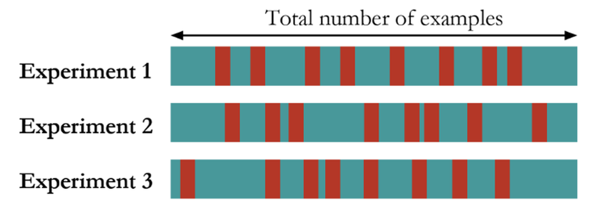 Figure 81: The random sampling method
The first approach is the hold-out method. As shown in Figure 80, the hold-out method randomly divides a given dataset into two parts. The model is trained on the training data only, while its performance is evaluated on the testing data. For instance, for the three models shown in Figure 79, each of them will be trained on the training dataset and will have their regression coefficients estimated. Then, the learned models will be evaluated on the testing data. The model that has the best performance on the testing data will be selected as the final model.
Another approach called random sampling repeats this random division many times, as shown in Figure 81. Each time, the model training and selection only uses the training dataset, and the model evaluation only uses the testing dataset. The performance of the models on the three experiments could be averaged and the model that has the best average performance is selected.
 Figure 82: The K-fold cross-validation method (here, \(K=4\))
Figure 82: The K-fold cross-validation method (here, \(K=4\))
The K-fold cross-validation is a mix of the random sampling method and the hold-out method. It first divides the dataset into \(K\) folds of equal sizes. Then, it trains a model using any combination of \(K-1\) folds of the dataset, and tests the model using the remaining one-fold of the dataset. As shown in Figure 82, the model training and testing process is repeated \(K\) times. The performance of the models on the \(K\) experiments could be averaged and the model that has the best average performance is selected.
These approaches can be used for evaluating a model’s performance in a robust way. They are also useful when we’d like to choose among model types117 E.g., decision tree vs. linear regression. or model formulations118 E.g., model 1: \(y=\beta_{0}+\beta_{1} x_1\); vs. model 2: \(y=\beta_{0}+\beta_{1} x_1+\beta_{2} x_2\).. While the model type and the model formulation is settled, for example, suppose that we have determined to use linear regression and the model formulation \(y=\beta_{0}+\beta_{1} x_1+\beta_{2} x_2\), these methods could be used to evaluate the performance of this single model. It is not uncommon that in real data analysis, these cross-validation and sampling methods are used in combination and serve different stages of the analysis process.
R Lab
The 4-Step R Pipeline. Step 1 and Step 2 are standard procedures to get data into R and further make appropriate preprocessing.
# Step 1 -> Read data into R workstation
library(RCurl)
url <- paste0("https://raw.githubusercontent.com",
"/analyticsbook/book/main/data/AD.csv")
AD <- read.csv(text=getURL(url))
# Step 2 -> Data preprocessing
# Create your X matrix (predictors) and Y vector
# (outcome variable)
X <- AD[,2:16]
Y <- AD$MMSCORE
data <- data.frame(X,Y)
names(data)[16] <- c("MMSCORE")Step 3 creates a list of models to be evaluated and compared with119 Linear regression: we often compare models using different predictors; Decision tree: we often compare models with different depths; Random forests: we often compare models with a different number of trees, a different depth of individual trees, or a different number of features to be randomly picked up to split the nodes..
# Step 3 -> gather a list of candidate models
# Use linear regression model as an example
model1 <- "MMSCORE ~ ."
model2 <- "MMSCORE ~ AGE + PTEDUCAT + FDG + AV45 + HippoNV +
rs3865444"
model3 <- "MMSCORE ~ AGE + PTEDUCAT"
model4 <- "MMSCORE ~ FDG + AV45 + HippoNV"Step 4 uses the \(10\)-fold cross-validation to evaluate the models and find out which one is the best. The R code is shown below and is divided into two parts. The first part uses the sample() function to create random split of the dataset into \(10\) folds.
# Step 4 -> Use 10-fold cross-validation to evaluate all models
# First, let me use 10-fold cross-validation to evaluate the
# performance of model1
n_folds = 10
# number of fold (the parameter K in K-fold cross validation)
N <- dim(data)[1] # the sample size, N, of the dataset
folds_i <- sample(rep(1:n_folds, length.out = N))
# This randomly creates a labeling vector (1 X N) for
# the N samples. For example, here, N = 16, and
# I run this function and it returns
# the value as 5 4 4 10 6 7 6 8 3 2 1 5 3 9 2 1.
# That means, the first sample is allocated to the 5th fold,
# the 2nd and 3rd samples are allocated to the 4th fold, etc.The second part shows how we evaluate the models. We only show the code for two models, as the script for evaluating each model is basically the same.
# Evaluate model1
# cv_mse aims to make records of the mean squared error
# (MSE) for each fold
cv_mse <- NULL
for (k in 1:n_folds) {
test_i <- which(folds_i == k)
# In each iteration of the 10 iterations, remember, we use one
# fold of data as the testing data
data.train <- data[-test_i, ]
# Then, the remaining 9 folds' data form our training data
data.test <- data[test_i, ]
# This is the testing data, from the ith fold
lm.AD <- lm(model1, data = data.train)
# Fit the linear model with the training data
y_hat <- predict(lm.AD, data.test)
# Predict on the testing data using the trained model
true_y <- data.test$MMSCORE
# get the true y values for the testing data
cv_mse[k] <- mean((true_y - y_hat)^2)
# mean((true_y - y_hat)^2): mean squared error (MSE).
# The smaller this error, the better your model is
}
mean(cv_mse)
# Then, evaluate model2
cv_mse <- NULL
# cv_mse aims to make records of the mean squared error (MSE)
# for each fold
for (k in 1:n_folds) {
test_i <- which(folds_i == k)
# In each iteration of the 10 iterations, remember,
# we use one fold of data as the testing data
data.train <- data[-test_i, ]
# Then, the remaining 9 folds' data form our training data
data.test <- data[test_i, ]
# This is the testing data, from the ith fold
lm.AD <- lm(model2, data = data.train)
# Fit the linear model with the training data
y_hat <- predict(lm.AD, data.test)
# Predict on the testing data using the trained model
true_y <- data.test$MMSCORE
# get the true y values for the testing data
cv_mse[k] <- mean((true_y - y_hat)^2)
# mean((true_y - y_hat)^2): mean squared error (MSE).
# The smaller this error, the better your model is
}
mean(cv_mse)
# Then, evaluate model3 ...
# Then, evaluate model4 ...The result is shown below.
## [1] 3.17607
## [1] 3.12529
## [1] 4.287637
## [1] 3.337222We conclude that model2 is the best one, as it achieves the minimum mean squared error (MSE).
Simulation Experiment. How do we know the cross-validation could identify a good model, i.e., the one that neither overfits nor underfits the data? Let’s design a simulation experiment to study the performance of cross-validation120 A large portion of the R script in this subsection was modified from malanor.net, now no longer an active site..
The purpose of the experiment is two-fold: (1) to show that the cross-validation can help us mitigate the model selection problem, and (2) to show that R is not just a tool for implementing data analysis methods, but also an experimental tool to gain first-hand experience of any method’s practical performance.
Our experiment has a clearly defined metric to measure the complexity of the signal. We resort to the spline models121 A good tutorial:
Eilers, P. and Marx, B., Splines, Knots, and Penalties, Computational statistics, Volume 2, Issue 6, Pages 637-653, 2010. that could be loosely put into the category of regression models, which have a precise mechanism to tune a model’s complexity, i.e., through the parameter of degree of freedom (df). For simplicity, we simulate a dataset with one predictor and one outcome variable. In R, we use the ns() function to simulate the spline model.
The outcome is a nonlinear curve122 Here, we use the B-spline basis matrix for natural cubic splines to create a nonlinear curve. This topic is beyond the scope of this book.. We use the degree of freedom (df) parameter in the ns() function to control the complexity of the curve, i.e., the larger the df, the more “nonlinear” the curve. As this curve is the signal of the data, we also simulate noise through a Gaussian distribution using the rnorm() function.
# Write a simulator to generate dataset with one predictor and
# one outcome from a polynomial regression model
seed <- rnorm(1)
set.seed(seed)
gen_data <- function(n, coef, v_noise) {
eps <- rnorm(n, 0, v_noise)
x <- sort(runif(n, 0, 100))
X <- cbind(1,ns(x, df = (length(coef) - 1)))
y <- as.numeric(X %*% coef + eps)
return(data.frame(x = x, y = y)) }The following R codes generate the scattered grey data points and the true model as shown in Figure 83.
# install.packages("splines")
require(splines)
## Loading required package: splines
# Simulate one batch of data, and see how different model
# fits with df from 1 to 50
n_train <- 100
coef <- c(-0.68,0.82,-0.417,0.32,-0.68)
v_noise <- 0.2
n_df <- 20
df <- 1:n_df
tempData <- gen_data(n_train, coef, v_noise)
x <- tempData[, "x"]
y <- tempData[, "y"]
# Plot the data
x <- tempData$x
X <- cbind(1, ns(x, df = (length(coef) - 1)))
y <- tempData$y
plot(y ~ x, col = "gray", lwd = 2)
lines(x, X %*% coef, lwd = 3, col = "black")
Figure 83: The simulated data from a nonlinear regression model with B-spline basis matrix (df=4), and various fitted models with different degrees of freedom

We then fit the data with a variety of models, starting from df=1123 I.e., corresponds to the linear model. to df=20124 I.e., a very complex model.. The fitted curves are overlaid onto the scattered data points in Figure 83. It can be seen that the linear model obviously underfits the data, as it lacks the flexibility to characterize the complexity of the signal sufficiently. The model that has (df=20) overfits the data, evidenced by its complex shape. It tries too hard to fit the local patterns, i.e., by all the turns and twists of its curve, while the local patterns were mostly induced by noise125 A model that tries too hard to fit the training data by absorbing its noise into its shape will not perform well on future unseen testing data, since the particular noise in the training data would not appear in the testing data—if a noise repeats itself, it is not noise anymore but signal..
# Fit the data using different models with different
# degrees of freedom (df)
fit <- apply(t(df), 2, function(degf) lm(y ~ ns(x, df = degf)))
# Plot the models
plot(y ~ x, col = "gray", lwd = 2)
lines(x, fitted(fit[[1]]), lwd = 3, col = "darkorange")
lines(x, fitted(fit[[4]]), lwd = 3, col = "dodgerblue4")
# lines(x, fitted(fit[[10]]), lwd = 3, col = "darkorange")
lines(x, fitted(fit[[20]]), lwd = 3, col = "forestgreen")
legend(x = "topright", legend = c("True function",
"Linear fit (df = 1)", "Best model (df = 4)",
"Overfitted model (df = 15)","Overfitted model (df = 20)"),
lwd = rep(3, 4), col = c("black", "darkorange", "dodgerblue4",
"forestgreen"), text.width = 32, cex = 0.6)Note that, in this example, we have known that the true model has df=4. In reality, we don’t have this knowledge. It is dangerous to keep increasing the model complexity to aggressively pursue better prediction performance on the training data. To see the danger, let’s do another experiment.
First, we use the following R code to generate a testing data from the same distribution of the training data.
# Generate test data from the same model
n_test <- 50
xy_test <- gen_data(n_test, coef, v_noise)Then, we fit a set of models from linear (df=1) to (df=20) using the training dataset. And we compute the prediction errors of these models using the training dataset and testing dataset separately. This is done by the following R script.
# Compute the training and testing errors for each model
mse <- sapply(fit, function(obj) deviance(obj)/nobs(obj))
pred <- mapply(function(obj, degf) predict(obj, data.frame(x =
xy_test$x)),fit, df)
te <- sapply(as.list(data.frame(pred)),
function(y_hat) mean((xy_test$y - y_hat)^2))
Figure 84: Prediction errors of the models (from (df\(=0\)) to (df\(=20\))) on the training dataset and testing data

We further present the training and testing errors of the models in Figure 84, by running the R script below.
# Plot the errors
plot(df, mse, type = "l", lwd = 2, col = gray(0.4),
ylab = "Prediction error",
xlab = "The degrees of freedom (logged) of the model",
ylim = c(0.9*min(mse), 1.1*max(mse)), log = "x")
lines(df, te, lwd = 2, col = "orange3")
points(df[1], mse[1], col = "palegreen3", pch = 17, cex = 1.5)
points(df[1], te[1], col = "palegreen3", pch = 17, cex = 1.5)
points(df[which.min(te)], mse[which.min(te)], col = "darkorange",
pch = 16, cex = 1.5)
points(df[which.min(te)], te[which.min(te)], col = "darkorange",
pch = 16,cex = 1.5)
points(df[15], mse[15], col = "steelblue", pch = 15, cex = 1.5)
points(df[15], te[15], col = "steelblue", pch = 15, cex = 1.5)
legend(x = "top", legend = c("Training error", "Test error"),
lwd = rep(2, 2), col = c(gray(0.4), "orange3"), text.width = 0.3,
cex = 0.8)Figure 84 shows that the prediction error on the training dataset keeps decreasing with the increase of the df. This is consistent with our theory, and this only indicates a universal phenomenon that a more complex model can fit the training data better. On the other hand, we could observe that the testing error curve shows a U-shaped curve, indicating that an optimal model126 I.e., the dip location on the U-shaped curve is where the optimal df could be found. exists in this range of the model complexity.
As this is an observation made on one dataset that was randomly generated, we should repeat this experiment multiple times to see if our observation is robust. The following R code repeats this experiment \(100\) times and presents the results in Figure 85.
# Repeat the above experiments in 100 times
n_rep <- 100
n_train <- 50
coef <- c(-0.68,0.82,-0.417,0.32,-0.68)
v_noise <- 0.2
n_df <- 20
df <- 1:n_df
xy <- res <- list()
xy_test <- gen_data(n_test, coef, v_noise)
for (i in 1:n_rep) {
xy[[i]] <- gen_data(n_train, coef, v_noise)
x <- xy[[i]][, "x"]
y <- xy[[i]][, "y"]
res[[i]] <- apply(t(df), 2,
function(degf) lm(y ~ ns(x, df = degf)))
}
# Compute the training and test errors for each model
pred <- list()
mse <- te <- matrix(NA, nrow = n_df, ncol = n_rep)
for (i in 1:n_rep) {
mse[, i] <- sapply(res[[i]],
function(obj) deviance(obj)/nobs(obj))
pred[[i]] <- mapply(function(obj, degf) predict(obj,
data.frame(x = xy_test$x)),res[[i]], df)
te[, i] <- sapply(as.list(data.frame(pred[[i]])),
function(y_hat) mean((xy_test$y - y_hat)^2))
}
# Compute the average training and test errors
av_mse <- rowMeans(mse)
av_te <- rowMeans(te)
# Plot the errors
plot(df, av_mse, type = "l", lwd = 2, col = gray(0.4),
ylab = "Prediction error",
xlab = "The degrees of freedom (logged) of the model",
ylim = c(0.7*min(mse), 1.4*max(mse)), log = "x")
for (i in 1:n_rep) {
lines(df, te[, i], col = "lightyellow2")
}
for (i in 1:n_rep) {
lines(df, mse[, i], col = gray(0.8))
}
lines(df, av_mse, lwd = 2, col = gray(0.4))
lines(df, av_te, lwd = 2, col = "orange3")
points(df[1], av_mse[1], col = "palegreen3", pch = 17, cex = 1.5)
points(df[1], av_te[1], col = "palegreen3", pch = 17, cex = 1.5)
points(df[which.min(av_te)], av_mse[which.min(av_te)],
col = "darkorange", pch = 16, cex = 1.5)
points(df[which.min(av_te)], av_te[which.min(av_te)],
col = "darkorange", pch = 16, cex = 1.5)
points(df[20], av_mse[20], col = "steelblue", pch = 15, cex = 1.5)
points(df[20], av_te[20], col = "steelblue", pch = 15, cex = 1.5)
legend(x = "center", legend = c("Training error", "Test error"),
lwd = rep(2, 2), col = c(gray(0.4), "darkred"),
text.width = 0.3, cex = 0.85)
 Figure 85: Prediction errors of the models (from
Figure 85: Prediction errors of the models (from df\(=0\) to df\(=20\)) on the training dataset and testing dataset of \(100\) replications. The two highlighted curves represent the mean curves of the \(100\) replications of the training and testing error curves, respectively
Again, we can see that the training error keeps decreasing when the model complexity increases, while the testing error curve has a U-shape. The key to identify the best model complexity is to locate the lowest point on the U-shaped error curve obtained from a testing dataset.
These experiments show that we need a testing dataset to evaluate the model to guide the model selection. Suppose you don’t have a testing dataset. The essence of a testing dataset is that it is not used for training the model. So you create one. What the hold-out, random sampling, and cross-validation approaches really do is use the training dataset to generate an estimate of the error curve that is supposed to be obtained from a testing dataset127 See Figure 92 and its associated text in the Remarks section for more discussion..
To see that, let’s consider a scenario that there are \(200\) samples, and a client has split them into two parts, i.e., a training dataset with \(100\) samples and a testing dataset with another \(100\) samples. The client only sent the training dataset to us. So we use the \(10\)-fold cross-validation on the training dataset, using the following R code, to evaluate the models (df from \(0\) to \(20\)).
# Cross-validation
set.seed(seed)
n_train <- 100
xy <- gen_data(n_train, coef, v_noise)
x <- xy$x
y <- xy$y
fitted_models <- apply(t(df), 2,
function(degf) lm(y ~ ns(x, df = degf)))
mse <- sapply(fitted_models,
function(obj) deviance(obj)/nobs(obj))
n_test <- 100
xy_test <- gen_data(n_test, coef, v_noise)
pred <- mapply(function(obj, degf)
predict(obj, data.frame(x = xy_test$x)),
fitted_models, df)
te <- sapply(as.list(data.frame(pred)),
function(y_hat) mean((xy_test$y - y_hat)^2))
n_folds <- 10
folds_i <- sample(rep(1:n_folds, length.out = n_train))
cv_tmp <- matrix(NA, nrow = n_folds, ncol = length(df))
for (k in 1:n_folds) {
test_i <- which(folds_i == k)
train_xy <- xy[-test_i, ]
test_xy <- xy[test_i, ]
x <- train_xy$x
y <- train_xy$y
fitted_models <- apply(t(df), 2, function(degf) lm(y ~
ns(x, df = degf)))
x <- test_xy$x
y <- test_xy$y
pred <- mapply(function(obj, degf) predict(obj,
data.frame(ns(x, df = degf))),
fitted_models, df)
cv_tmp[k, ] <- sapply(as.list(data.frame(pred)),
function(y_hat) mean((y - y_hat)^2))
}
cv <- colMeans(cv_tmp)Then we can visualize the result in Figure 86 (the R script is shown below). Note that, in Figure 86, we overlay the result of the \(10\)-fold cross-validation (based on the \(100\) training samples) with the prediction error on the testing dataset to get an idea about how closely the \(10\)-fold cross-validation can approximate the testing error curve128 Remember that, in practice, we will not have access to the testing data, but we want our model to succeed on the testing data, i.e., to obtain the lowest error on the testing error curve. Thus, using cross-validation to mimic this testing procedure based on our training data is a “rehearsal.”.
# install.packages("Hmisc")
require(Hmisc)
plot(df, mse, type = "l", lwd = 2, col = gray(0.4),
ylab = "Prediction error",
xlab = "The degrees of freedom (logged) of the model",
main = paste0(n_folds,"-fold Cross-Validation"),
ylim = c(0.8*min(mse), 1.2*max(mse)), log = "x")
lines(df, te, lwd = 2, col = "orange3", lty = 2)
cv_sd <- apply(cv_tmp, 2, sd)/sqrt(n_folds)
errbar(df, cv, cv + cv_sd, cv - cv_sd, add = TRUE,
col = "steelblue2", pch = 19,
lwd = 0.5)
lines(df, cv, lwd = 2, col = "steelblue2")
points(df, cv, col = "steelblue2", pch = 19)
legend(x = "topright",
legend = c("Training error", "Test error",
"Cross-validation error"),
lty = c(1, 2, 1), lwd = rep(2, 3),
col = c(gray(0.4), "darkred", "steelblue2"),
text.width = 0.4, cex = 0.85)
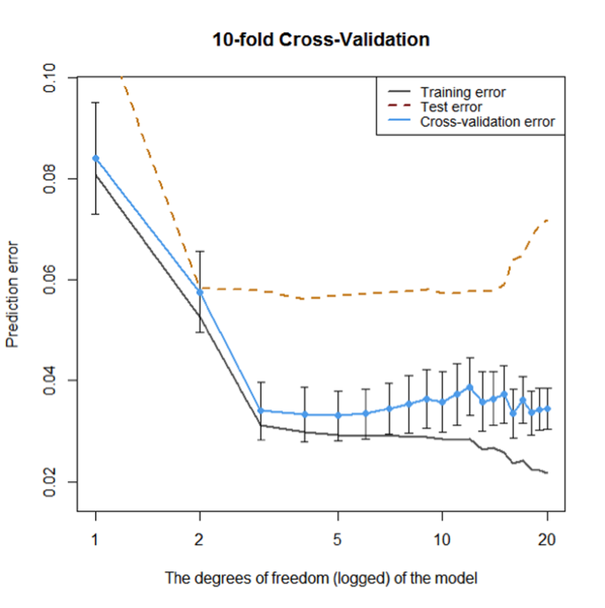
Figure 86: Prediction errors of the models (from df\(=0\) to df\(=20\)) on the training dataset without cross-validation, on the training dataset using \(10\)-fold cross-validation, and testing data of \(100\) samples, respectively
Overall, Figure 86 shows that the \(10\)-fold cross-validation could generate fair evaluation of the models just like an independent and unseen testing dataset. Although its estimation of the error is smaller than the error estimation on the testing dataset, they both point towards the same range of model complexity that will neither overfit nor underfit the data.
Out-of-bag error in random forests
The random forest model provides a concept named out-of-bag error that plays a similar role as the hold-out method. Let’s revisit how it works.
Rationale and formulation
Suppose that we have a training dataset of \(5\) instances (IDs as \(1,2,3,4,5\)). A random forest model with \(3\) trees is built. The \(3\) Bootstrapped datasets are shown in Table 16.
Table 16: Three trees and the bootstrapped datasets
| Tree | Bootstrap |
|---|---|
| \(1\) | \(1,1,4,4,5\) |
| \(2\) | \(2,3,3,4,4\) |
| \(3\) | \(1,2,2,5,5\) |
Since Bootstrap randomly selects samples from the original dataset to form Bootstrapped datasets, some data points in the original dataset may not show up in the Bootstrapped datasets. These data points are called out-of-bag samples (OOB) samples. For instance, for the random forest model that corresponds to Table 16, the OOB samples for each tree are shown in Table 17.
Table 17: Out-of-bag (OOB) samples
| Tree | OOB samples |
|---|---|
| \(1\) | \(2,3\) |
| \(2\) | \(1,5\) |
| \(3\) | \(3,4\) |
The data points that are not used in training a tree could be used to test the tree. The errors on the OOB samples are called the out-of-bag errors. The OOB error can be calculated after a random forest model has been built, which seems to be computationally easier than cross-validation. An example to compute the OOB errors is shown in Table 18.
Table 18: Out-of-bag (OOB) errors
| Data ID | True label | Tree \(1\) | Tree \(2\) | Tree \(3\) |
|---|---|---|---|---|
| \(1\) | \(C1\) | \(C1\) | ||
| \(2\) | \(C2\) | \(C1\) | ||
| \(3\) | \(C2\) | \(C2\) | \(C2\) | |
| \(4\) | \(C1\) | \(C1\) | ||
| \(5\) | \(C2\) | \(C2\) |
We can see that, as the data instance (ID = \(1\)) is not used in training Tree \(2\), we can use Tree \(2\) to predict on this data instance, and we see that it correctly predicts the class as \(C1\). Similarly, Tree \(1\) is used to predict on data instance (ID = \(2\)), and the prediction is wrong. Overall, the OOB error of the random forest model is \(1/6\).
Theory and method
The OOB error provides a computationally convenient approach to evaluate the random forest model without using a testing dataset or a cross-validation procedure. A technical concern is whether this idea can scale up. In other words, are there enough OOB samples to ensure that the OOB error is a fair and robust performance metric?
Recall that, for a random forest model with \(K\) trees, each tree is built on a Bootstrapped dataset from the original training dataset \(D\). There are totally \(K\) Bootstrapped datasets, denoted as \(B_{1,} B_{2}, \ldots, B_{K}\).
Usually, the size of each Bootstrapped dataset is the same size (denoted as \(N\)) as the training dataset \(D\). Each data point in the Bootstrapped dataset is randomly and independently selected. Therefore, the probability of a data point from the training dataset \(D\) missing from a Bootstrapped dataset is129 Because there are \(N\) independent trials of random selection, for a data point not to be selected, it has to be missed \(N\) times. And the probability for “not to be selected” is \(\left(1-\frac{1}{N}\right)\).
\[\left(1-\frac{1}{N}\right)^{N}.\]
When \(N\) is sufficiently large, we have
\[\lim _{N \rightarrow \infty}\left(1-\frac{1}{N}\right)^{N}=e^{-1} \approx 0.37.\]
Therefore, roughly \(37\%\) of the data points from \(D\) are not contained in a Bootstrapped dataset \(B_i\), and thus, not used for training the tree \(i\). These excluded data points are the OOB samples for the tree \(i\).
As there are \(37\%\) of probability that a data point is not used for training a tree, we can infer that, on average, a data point is not used for training about \(37\%\) of the trees130 Note that the assumption is the Bootstrapped dataset has the same size as the original dataset, and the sampling is with replacement.. In other words, for each data point, in theory \(37\%\) of the trees are trained without this data point. This is a sizeable amount of data points, ensuring that the OOB error could be a stable and accurate evaluation of the model’s performance on future unseen testing data.
R Lab
We design a numeric study to compare the OOB error with the error obtained by a validation procedure and the error estimated on the training dataset. The three types of error rates are plotted in Figure 87.
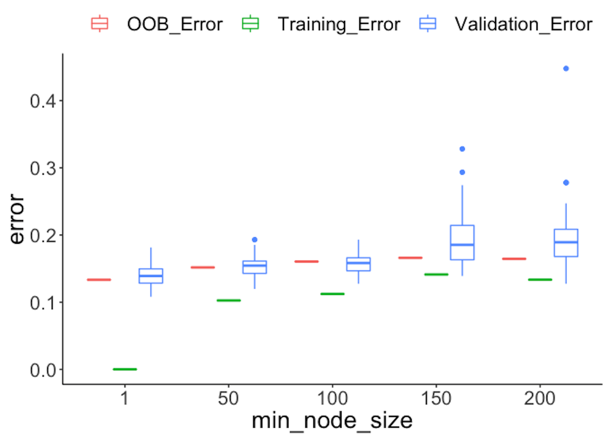 Figure 87: Comparison of different types of error rates
First, we split the dataset into two halves: one for training and one for testing.
library(dplyr)
library(tidyr)
library(ggplot2)
require(randomForest)
set.seed(1)
library(RCurl)
url <- paste0("https://raw.githubusercontent.com",
"/analyticsbook/book/main/data/AD.csv")
data <- read.csv(text = getURL(url))
target_indx <- which(colnames(data) == "DX_bl")
data[, target_indx] <- as.factor(paste0("c", data[, target_indx]))
rm_indx <- which(colnames(data) %in% c("ID", "TOTAL13", "MMSCORE"))
data <- data[, -rm_indx]
para.v <- c(1, 50, 100, 150, 200)
results <- NULLThen, we build a set of random forest models by tuning the parameter nodesize, and obtain the OOB errors of the models.
# OOB error
for (ipara in para.v) {
rf <- randomForest(DX_bl ~ ., nodesize = ipara, data = data)
# nodesize = inodesize
results <- rbind(results, c("OOB_Error",
ipara, mean(rf$err.rate[, "OOB"])))
}We also use the random sampling method to evaluate the errors of the models.
# Validation error
for (ipara in para.v) {
for (i in 1:50) {
train.ix <- sample(nrow(data), floor(nrow(data)/2))
rf <- randomForest(DX_bl ~ ., nodesize = ipara,
data = data[train.ix,
])
pred.test <- predict(rf, data[-train.ix, ], type = "class")
this.err <- length(
which(pred.test != data[-train.ix, ]$DX_bl))/length(pred.test)
results <- rbind(results, c("Validation_Error", ipara, this.err))
}
}Then, we obtain the training errors of the models.
# Training error
for (ipara in para.v) {
rf <- randomForest(DX_bl ~ ., nodesize = ipara, data = data)
# nodesize = inodesize
pred <- predict(rf, data, type = "class")
this.err <- length(which(pred != data$DX_bl))/length(pred)
results <- rbind(results, c("Training_Error", ipara, this.err))
}
colnames(results) <- c("type", "min_node_size", "error")
results <- as.data.frame(results)
results$error = as.numeric(as.character(results$error))
results$min_node_size <- factor(results$min_node_size,
unique(results$min_node_size))
ggplot() + geom_boxplot(data = results,
aes(y = error, x = min_node_size,
color = type)) +
geom_point(size = 3)Figure 87 shows that the OOB error rates are reasonably aligned with the testing error rates, while the training error rates are deceptively smaller.
The following R code conducts another numeric experiment to see if the number of trees impacts the OOB errors. In particular, we compare \(50\) trees with \(500\) trees, with their OOB errors plotted in Figure 88. On the other hand, we also observe that by increasing the number of trees, the OOB error decreases. This phenomenon is not universal (i.e., it is not always observed in all the datasets), but it does indicate the limitation of the OOB error: it is not as robust as the random sampling or cross-validation methods in preventing overfitting. But overall, the idea of OOB is inspiring.
para.v <- c(1, 50, 100, 150, 200)
results <- NULL
# OOB error with 500 trees
for (ipara in para.v) {
rf <- randomForest(DX_bl ~ ., nodesize = ipara, ntree = 500,
data = data)
# nodesize = inodesize
results <- rbind(results, c("OOB_Error_500trees", ipara,
mean(rf$err.rate[,"OOB"])))
}
# OOB error with 50 trees
for (ipara in para.v) {
rf <- randomForest(DX_bl ~ ., nodesize = ipara, ntree = 50,
data = data) # nodesize = inodesize
results <- rbind(results, c("OOB_Error_50trees", ipara,
mean(rf$err.rate[,"OOB"])))
}
colnames(results) <- c("type", "min_node_size", "error")
results <- as.data.frame(results)
results$error = as.numeric(as.character(results$error))
results$min_node_size <- factor(results$min_node_size,
unique(results$min_node_size))
ggplot() + geom_boxplot(data = results,
aes(y = error, x = min_node_size,
fill = type)) +
geom_bar(stat = "identity",position = "dodge")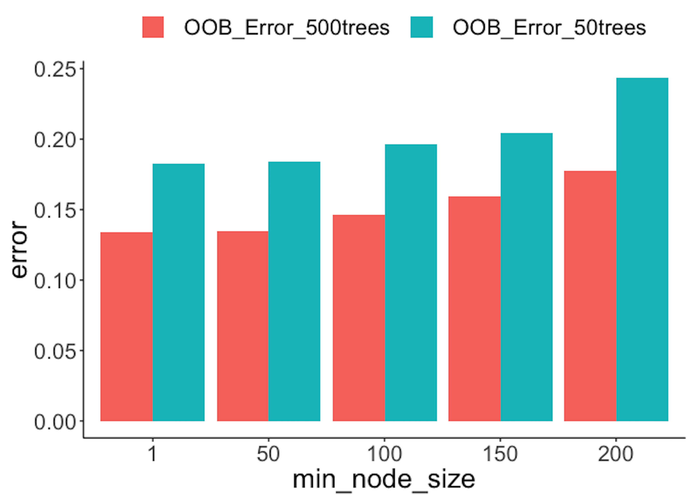 Figure 88: OOB error rates from random forests with a different number of trees
Remarks
The “law” of learning errors
We have seen the R-squared could be manipulated to become larger, i.e., by adding into the model with more variables even if these variables are not predictive. This bug is not a special trait of the linear regression model only. The R-squared by its definition is computed based on the training data, and therefore, is essentially a training error. For any model that offers a flexible degree of complexity (e.g., examples are shown in Table 19), its training error could be decreased if we make the model more complex.
Table 19: The complexity parameters of some models
| Model | Complexity parameter |
|---|---|
| Linear regression | Number of variables |
| Decision tree | Depth of tree |
| Random forest |
Figure 89: A much more complex decision tree model than the one in Figure 45; (left) the tree model perfectly fits the training data; (right) the tree performs poorly on the testing data
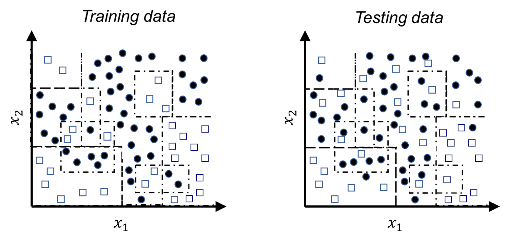For example, let’s revisit the decision tree model shown in Figure 45 in Chapter 3. A deeper tree segments the space into smaller rectangular regions, guided by the distribution of the training data, as shown in Figure 89. The model achieves \(100\%\) accuracy—but this is an illusion, since the training data contains noise that could not be predicted. These rectangular regions, particularly those smaller ones, are susceptible to the noise. When we apply this deeper tree model on a testing data that is sampled from the same distribution of the training data131 The overall morphology of the two datasets looks alike; the differences, however, are due to the noise that is unpredictable., the model performs poorly.
It is generally true that the more complex a model gets, the lower the error on the training dataset becomes, as shown in Figure 90 (left). This is the “law” of the training error, and training a model based on the training error could easily “spoil” the model. If there is a testing dataset, the error curve would look like U-shaped, as shown in Figure 90 (middle), and the curve’s dip point helps us identify the best model complexity. While on the other hand, if there is no testing dataset, we could use cross-validation to obtain error estimates. The error curve obtained by cross-validation on the training data, as shown in Figure 90 (right), should provide a good approximation of the error curve of the testing data. The three figures in Figure 90, from left to right, illustrate a big picture of the laws of the errors and why some techniques such as the cross-validation have central importance in data analytics.
Figure 90: The law of learning errors
There are other approaches that play similar roles as the cross-validation, i.e., to approximate the error curve on unseen testing data. Examples include the Akaike information criterion (AIC), the Bayesian information criterion (BIC), and many other model selection criteria alike. Different from the cross-validation, they don’t resample the training data. Rather, they are analytic approaches that evaluate a model’s performance by offsetting the model’s training error with a complexity penalty, i.e., the more complex a model gets, the larger the penalty imposed. Skipping their mathematical details, Figure 91 illustrates the basic idea of these approaches.

Figure 91: The basic idea of the AIC and BIC criteria
A larger view of model selection and validation
The practice of data analytics has evolved and developed an elaborate process to protect us from overfitting or underfitting a model. The 5-step process is illustrated in Figure 92.
Figure 92: A typical process of how data scientists work with clients to develop robust models

In the \(1^{st}\) step, the client collects two datasets, one is the training dataset and another is the testing dataset.
In the \(2^{nd}\) step, the client sends the training dataset to the data scientist to train the model. The client keeps the testing dataset for the client’s own use to test the final model submitted by the data scientist.
Now the data scientist should keep in mind that, no matter how the model is obtained132 In a real application, you may try all you could think of to find your best model. Deep understanding of your models always help. Sometimes it is also luck, insight, and hard-working trial and error. What matters is your model is really good and can outperform your competitor’s. Data scientists survive in a harsh competitive environment., its goal is to predict well on the unseen testing dataset. How shall we do so, without access to the testing dataset?
Just like in Bootstrap, we mimic the process.
In the \(3^{rd}\) step, the data scientist mimics the testing procedure as the client would use. The data scientist splits the training dataset into two parts, one for model training and one for model testing133 Generate a “training dataset” and a “testing dataset” from the training dataset. To avoid confusion, these two are often called internal training dataset and internal testing dataset, respectively. The training and testing datasets the client creates are often called external training dataset and external testing dataset, respectively..
In the \(4^{th}\) step, the data scientist creates a model that should fit the internal training dataset well. Cross-validation is often used in this step.
In the \(5^{th}\) step, the data scientist tests the model obtained in the \(4^{th}\) step using the internal testing data. This is the final pass that will be conducted in house, before the final model is submitted to the client. Note that, the \(5^{th}\) step could not be integrated into the model selection process conducted in the \(4^{th}\) step—otherwise, the internal testing data is essentially used as an internal training dataset134 After all, the usage of the dataset dictates its name..
In the \(6^{th}\) step, the data scientist submits the final model to the client. The model will be evaluated by the client on the internal testing dataset. The data scientist may or may not learn the evaluation result of the final model from the client.
The confusion matrix
The rare disease example mentioned earlier in this chapter implies that the context matters. It also implies that how we evaluate a model’s performance matters as well.
Accuracy, naturally, is a most important evaluation metric. As any overall evaluation metric, it averages things and blurs boundaries between categories, and for the same reason, it could be broken down into more subcategories. For example, a binary classification problem has two classes. We often care about specific accuracy on either class, i.e., if one class represents disease (positive) while another represents normal (negative), as a convention in medicine, we name the correct prediction on a positive case as true positive (TP) and name the correct prediction on a negative case as true negative (TN). Correspondingly, we define the false positive (FP) as incorrect prediction on a true negative case, and false negative (FN) as incorrect prediction on a true positive case. This is illustrated in Table 20, the so-called confusion matrix.
Table 20: The confusion matrix
| Reality: Positive | Reality: Negative | |
| Prediction: Positive | True positive (TP) | False positive (FP) |
| Prediction: Negative | False negative (FN) | True negative (TN) |
Based on TP, the concept true positive rate (TPR) could also be defined, i.e., TPR = TP/(TP+FN). Similarly, we can also define the false positive rate (FPR) as FPR = FP/(FP+TN).
The ROC curve
Building on the confusion matrix, the receiver operating characteristic curve (ROC curve) is an important evaluation metric for classification models.
Recall that, in a logistic regression model, before we make the final prediction, an intermediate result is obtained first
\[ p(\boldsymbol x)=\frac{1}{1+e^{-\left(\beta_{0}+\Sigma_{i=1}^{p} \beta_{i} x_{i}\right)}}. \]
A cut-off value135 By default, \(0.5\). is used to make the binary predictions, i.e., it classifies the cases whose \(p(\boldsymbol x)\) are larger than the cut-off value as positive; otherwise, if \(p(\boldsymbol x)\) is smaller than the cut-off value, negative. This means that, for each cut-off value, we can obtain a confusion matrix with different values of the TP, FP, FN, and TN. As there are many possible cut-off values, the ROC curve is a succinct way to synthesize all the scenarios of all possible cut-off values, i.e., it tries many cut-off values and plots the FPR (x-axis) against the TPR (y-axis). This is illustrated in Figure 93.
Figure 93: The logistic model produces an intermediate result \(p(\boldsymbol x)\) for the cases of both classes: (left) shows the distributions of \(p(\boldsymbol x)\) of both classes and a particular cut-off value; and (right) shows the ROC curve that synthesizes all the scenarios of all the cut-off values

The ROC curve is more useful to evaluate a model’s potential, i.e., Figure 93 presents the performances of the logistic regression model for all cut-off values rather than one cut-off value. The \(45^{\circ}\) line represents a model that is equivalent to random guess. In other words, the ROC curve of a model that lacks potential for prediction will be close to the \(45^{\circ}\) line. A better model will show a ROC curve that is closer to the upper left corner point. Because of this, the area under the curve (AUC) is often used to summarize the ROC curve of a model. The higher the AUC, the better the model.
A Small Data Example. Let’s study how a ROC curve could be created using an example. Consider a random forest model of \(100\) trees and its prediction on \(9\) data points. A random forest model uses the majority voting to aggregate the predictions of its trees to reach a final binary prediction. The cut-off value concerned here is the threshold of votes, i.e., here, we try three cut-off values, C=\(50\) (default in randomForest), C=\(37\), and C=\(33\), as shown in Table 21.
Table 21: Prediction on \(9\) data points via a random forest model of \(100\) trees, with different cut-off values of the vote threshold, C=\(50\) (default in ra ndomForest), C=\(37\), and C=\(33\)
| ID | Vote | True Label | C=\(50\) | C=\(37\) | C=\(33\) |
| \(1\) | \(38\) | \(1\) | \(0\) | \(1\) | \(1\) |
| \(2\) | \(49\) | \(1\) | \(0\) | \(1\) | \(1\) |
| \(3\) | \(48\) | \(0\) | \(0\) | \(1\) | \(1\) |
| \(4\) | \(76\) | \(1\) | \(1\) | \(1\) | \(1\) |
| \(5\) | \(32\) | \(0\) | \(0\) | \(0\) | \(0\) |
| \(6\) | \(57\) | \(0\) | \(1\) | \(1\) | \(1\) |
| \(7\) | \(36\) | \(1\) | \(0\) | \(0\) | \(1\) |
| \(8\) | \(36\) | \(0\) | \(0\) | \(0\) | \(1\) |
| \(9\) | \(35\) | \(0\) | \(0\) | \(0\) | \(1\) |
Based on the definition of the confusion matrix in Table 20, we calculate the metrics in Table 22.
Table 22: Metrics for predictions in Table 21
| C=\(50\) | C=\(37\) | C=\(33\) | |
|---|---|---|---|
| Accuracy | \(5/9\) | \(6/9\) | \(5/9\) |
| TP | \(1\) | \(3\) | \(4\) |
| FP | \(1\) | \(2\) | \(4\) |
| FN | \(3\) | \(1\) | \(0\) |
| TN | \(4\) | \(3\) | \(1\) |
| FPR = FP/(FP+TN) | \(1/(1+4)\) | \(2/(2+3)\) | \(4/(4+1)\) |
| TPR = TP/(TP+FN) | \(1/(1+3)\) | \(3/(3+1)\) | \(4/(4+0)\) |
With three cut-off values, we map the three points in Figure 94 by plotting the FPR (x-axis) against the TPR (y-axis). There are a few R packages to generate a ROC curve for a classification model. Figure 94 illustrates the basic idea implemented in these packages to draw a ROC curve: sample a few cut-off values and map a few points in the figure, then draw a smooth curve that connects the point.
 Figure 94: Illustration of how to draw a ROC curve using the data in Tables~21 and~22
Figure 94: Illustration of how to draw a ROC curve using the data in Tables~21 and~22
R Example.
We build a logistic regression model using the AD data as we have done in Chapter 3.
# ROC and more performance metrics of logistic regression model
# Load the AD dataset
library(RCurl)
url <- paste0("https://raw.githubusercontent.com",
"/analyticsbook/book/main/data/AD.csv")
AD <- read.csv(text=getURL(url))
str(AD)
# Split the data into training and testing sets
n = dim(AD)[1]
n.train <- floor(0.8 * n)
idx.train <- sample(n, n.train)
AD.train <- AD[idx.train,]
AD.test <- AD[-idx.train,]
# Automatic selection of the model
logit.AD.full <- glm(DX_bl ~ ., data = AD.train[,c(1:16)],
family = "binomial")
logit.AD.final <- step(logit.AD.full, direction="both", trace = 0)
summary(logit.AD.final)Then we use the function, confusionMatrix() from the R package caret to obtain the confusion matrix
require(e1071)
require(caret)
# Prediction scores
pred = predict(logit.AD.final, newdata=AD.test,type="response")
confusionMatrix(data=factor(pred>0.5), factor(AD.test[,1]==1))The result is shown below.
## Confusion Matrix and Statistics
##
## Reference
## Prediction FALSE TRUE
## FALSE 48 7
## TRUE 7 42
##
## Accuracy : 0.8654
## 95% CI : (0.7845, 0.9244)
## No Information Rate : 0.5288
## P-Value [Acc > NIR] : 3.201e-13
##
## Kappa : 0.7299
## Mcnemar's Test P-Value : 1
##
## Sensitivity : 0.8727
## Specificity : 0.8571
## Pos Pred Value : 0.8727
## Neg Pred Value : 0.8571
## Prevalence : 0.5288
## Detection Rate : 0.4615
## Detection Prevalence : 0.5288
## Balanced Accuracy : 0.8649
##
## 'Positive' Class : FALSE
## The ROC curve could be drawn using the R Package ROCR.
 Figure 95: ROC curve of the logistic regression model
Figure 95: ROC curve of the logistic regression model
# Generate the ROC curve using the testing data
# Compute ROC and Precision-Recall curves
require('ROCR')
linear.roc.curve <- performance(prediction(pred, AD.test[,1]),
measure='tpr', x.measure='fpr' )
plot(linear.roc.curve, lwd = 2, col = "orange3",
main = "Validation of the logistic model using testing data")The ROC curve is shown in Figure 95.
Exercises
- A random forest model is built on the training data with \(6\) data points. The details of the trees and their bootstrapped datasets are shown in Table 23.
Table 23: Bootstrapped datasets and the built trees
| Bootstrapped data | Tree |
|---|---|
| \(1,3,4,4,5,6\) | \(1\) |
| \(2,2,4,4,4,5\) | \(2\) |
| \(1,2,2,5,6,6\) | \(3\) |
| \(3,3,3,4,5,6\) | \(4\) |
To calculate the out-of-bag (OOB) errors, which legitimate data points are to be used for each tree? You can mark them out in Table 24.
Table 24: Mark the elements where OOB errors could be collected
| Tree | Bootstrapped data | \(1(C1)\) | \(2(C2)\) | \(3(C2)\) | \(4(C1)\) | \(5(C2)\) | \(6(C1)\) |
|---|---|---|---|---|---|---|---|
| \(1\) | \(1,3,4,4,5,6\) | ||||||
| \(2\) | \(2,2,4,4,4,5\) | ||||||
| \(3\) | \(1,2,2,5,6,6\) | ||||||
| \(4\) | \(3,3,3,4,5,6\) |
- Figure 96 shows the ROC curves of two classification models. Which model is better?
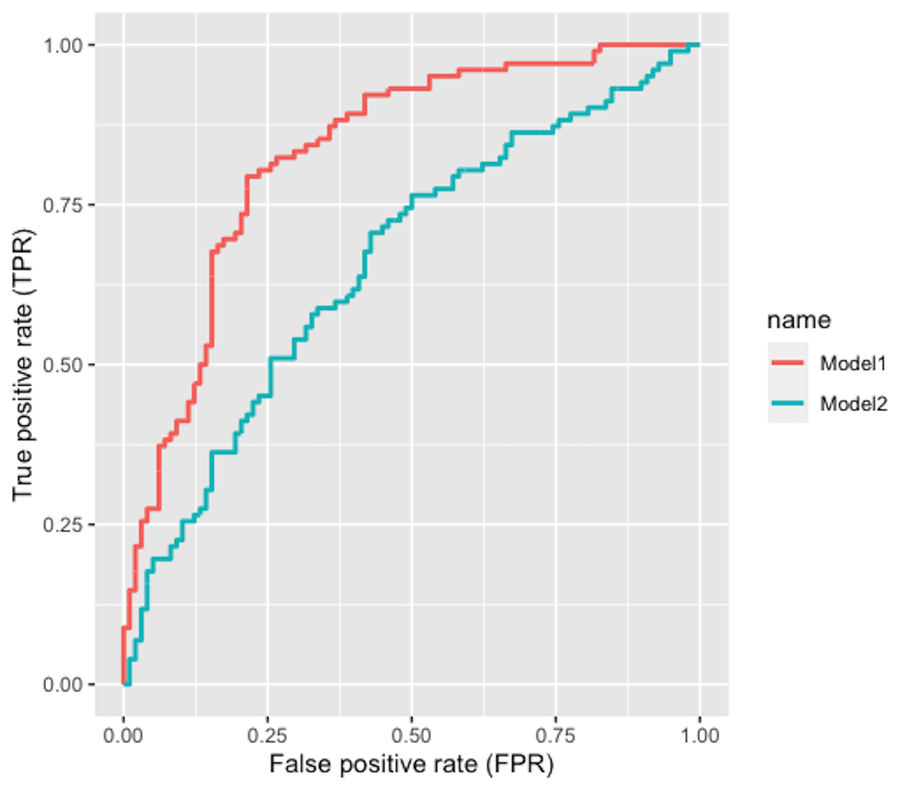 Figure 96: The ROC curve of two models
Follow up on the simulation experiment in Q9 in Chapter 2 and the random forest model in Q5 in Chapter 4. Split the data into a training set and a testing test, then use \(10\)-fold cross-validation to evaluate the performance of the random forest model with \(100\) trees.
Follow up on Q3. Increase the sample size of the experiment to \(1000\), and comment on the result.
Chapter 6. Diagnosis: Residuals & Heterogeneity
Overview
Chapter 6 is about Diagnosis. Diagnosis, in one sense, is to see if the assumptions of the model match the empirical characteristics of the data. For example, the t-test of linear regression model builds on the normality assumption of the errors. If this assumption is not met by the data, the result of the t-test is concerned. Departure from assumptions doesn’t always mean that the model is not useful136 “All models are wrong, some are useful.”— George Box.. The gap between the theoretical assumptions of the model and the empirical data characteristics, together with the model itself, should be taken as a whole when we evaluate the strength of the conclusion. This wholesome idea is what diagnosis is about. It also helps us to identify opportunities to improve the model. Models are representations/approximations of reality, so we have to be critical about them, yet being critical is different from being dismissive137 A model that doesn’t fit the data also generates knowledge—revealed not by the failed model but by the fact that this model actually misfits. See Jaynes, E.T., Probability Theory: the Logic of Science. Cambridge Press, 2003.. There are many diagnostic tools that we can use to strengthen our critical evaluation.
Many diagnostic tools focus on the residual analysis. Residuals provide a numerical evaluation of the difference between the model and the data. Recall that \(y\) denotes the observed value of the outcome variable, \(f(\boldsymbol{x})\) denotes the model, and \(\hat{y}\) denotes the prediction (i.e., \(\hat{y} = f(\boldsymbol{x})\) is the prediction made by the model on the data point \(\boldsymbol{x}\)). The residual, denoted as \(\hat{\epsilon}\), is defined as \(\hat{\epsilon} = \hat{y} - y\). For any model that is trained on \(N\) data points, we could obtain \(N\) residuals, and draw the residuals as shown in Figure 97:
Figure 97: Suppose that three models are built on a dataset, and their residual plots are drawn: (left) decision tree; (middle) RF; (right) linear regression
- Figure 97 (left). There is a linear relationship between \(\hat{\epsilon}\) and \(\hat{y}\), which suggests an absurd fact: \(\hat{y}\) could be used as a predictor to predict the \(\hat{\epsilon}\), the error. For instance, when \(\hat{y} = -1\), the error is between \(1\) and \(2\). If we adjust the prediction to be \(\hat{y} + 1\), wouldn’t that make the error to be between \(0\) and \(1\)? A reduced error means a better prediction model.
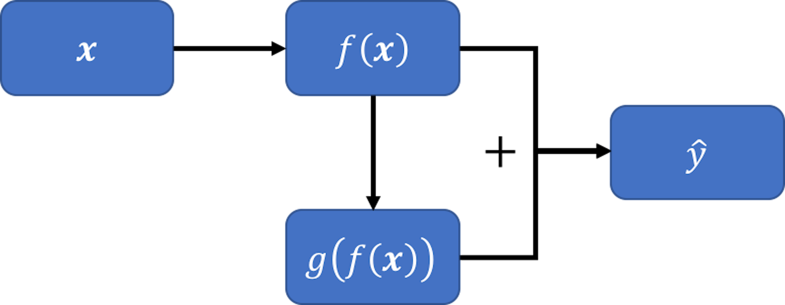 Figure 98: A new model, inspired by the pattern seen in Figure 97 (left)
To generalize this, let’s build another model \(g[f(\boldsymbol{x})]\) that takes \(f(\boldsymbol{x})\) as the predictor to predict \(\hat{\epsilon}\). Then, we can combine the two models, \(f(\boldsymbol{x})\) and \(g[f(\boldsymbol{x})]\), and obtain an improved prediction \(\hat{y}\) as \(f(\boldsymbol{x}) + g[f(\boldsymbol{x})]\). This is shown in Figure 98.
Figure 97 (middle). No correlation between \(\hat{\epsilon}\) and \(\hat{y}\) is observed. In other words, knowing \(\hat{y}\) offers no help to predict \(\hat{\epsilon}\). This is what a good model would behave like.
Figure 97 (right). There is a piece-wise linear relationship between \(\hat{\epsilon}\) and \(\hat{y}\). If we segment the figure by a vertical line at zero, we could apply the same argument made in Figure 97 (left) for each piece here: the model could be further improved following the same strategy outlined in Figure 98.
As each data point contributes a residual, the residual analysis offers us opportunities to examine some collective phenomena to improve the overall quality of the model. It also helps us check local patterns where we may find areas of improvement of the model or particularities of the data that the model could not synthesize. The beauty of checking out the residuals is that there is always something that is beyond our experience and expectation.
Diagnosis in regression
Residual analysis
The R package ggfortify provides a nice bundle that includes the residual analysis, cook’s distance, leverage, and Q-Q plot.
Let’s use the final regression model we identified in Chapter 2 for an example.
library(RCurl)
url <- paste0("https://raw.githubusercontent.com",
"/analyticsbook/book/main/data/AD.csv")
AD <- read.csv(text=getURL(url))
AD$ID = c(1:dim(AD)[1])
str(AD)
# fit a full-scale model
AD_full <- AD[,c(2:17)]
lm.AD <- lm(MMSCORE ~ ., data = AD_full)
summary(lm.AD)
# Automatic model selection
lm.AD.F <- step(lm.AD, direction="backward", test="F")Details of the model are shown below.
## MMSCORE ~ PTEDUCAT + FDG + AV45 + HippoNV + rs744373 + rs610932
## + rs3764650 + rs3865444
##
## Df Sum of Sq RSS AIC F value Pr(>F)
## <none> 1537.5 581.47
## - rs3764650 1 7.513 1545.0 581.99 2.4824 0.115750
## - rs744373 1 12.119 1549.6 583.53 4.0040 0.045924 *
## - rs610932 1 14.052 1551.6 584.17 4.6429 0.031652 *
## - rs3865444 1 21.371 1558.9 586.61 7.0612 0.008125 **
## - AV45 1 50.118 1587.6 596.05 16.5591 5.467e-05 ***
## - PTEDUCAT 1 82.478 1620.0 606.49 27.2507 2.610e-07 ***
## - HippoNV 1 118.599 1656.1 617.89 39.1854 8.206e-10 ***
## - FDG 1 143.852 1681.4 625.71 47.5288 1.614e-11 ***
## ---
## Signif. codes: 0 '***' 0.001 '**' 0.01 '*' 0.05 '.' 0.1 ' ' 1We use the ggfortify to produce \(6\) diagnostic figures as shown in Figure 99.
# Conduct diagnostics of the model
# install.packages("ggfortify")
library("ggfortify")
autoplot(lm.AD.F, which = 1:6, ncol = 3, label.size = 3)Figure 99: Diagnostic figures of regression model on the AD dataset
The following is what we observe from Figure 99.
Figure 99 (upper left). This is the scatterplot of the residuals versus fitted values of the outcome variable. As we have discussed in Figure 97, this scatterplot is supposed to show purely random distributions of the dots. Here, we notice two abnormalities: (1) there is a relationship between the residuals and fitted values; and (2) there are unusual parallel lines138 This is often observed if the outcome variable takes integer values.. These abnormalities have a few implications: (1) the linear model underfits the data, so a nonlinear model is needed; (2) we have assumed that the data points are independent with each other, now this assumption needs to be checked; and (3) we have assumed homoscedasticity139 In Chapter 2, we assume that \(\epsilon \sim N\left(0, \sigma_{\varepsilon}^{2}\right)\). It assumes the errors have the same variance, \(\sigma_{\varepsilon}^{2}\), for all data points. of the variance of the errors. This is another assumption that needs to be checked140 To build nonlinear regression model or conditional variance regression model, see Chapter 9..
Figure 99 (upper right). The Q-Q plot checks the normality assumption of the errors. The \(45^{\circ}\) line is a fixed baseline, while the dots correspond to the data points. If the normality assumption is met, the dots should align with the line. Here, we see mild departure of the data from the normality assumption. And some particular data points such as the data points \(282\) and \(256\) are labelled since they are outstanding141 Are those points outliers? The Q-Q plot provides no conclusive evidence. It only suggests..
Figure 99 (middle left). This is a transformation of Figure 99 (upper left). Diagnostic tools are usually opportunistic approaches, i.e., what you see is what you get; if nothing particular is observed, it doesn’t mean there is no anomaly in the data. Changing perspectives is a common practice in model diagnosis.
Figure 99 (middle right). The Cook’s distance identifies influential data points that have larger than average influence on the parameter estimation of the model. For a data point \(\boldsymbol{x}_i\), its Cook’s distance \(D_{i}\) is defined as the sum of all the changes in the regression model when \(\boldsymbol{x}_i\) is removed from the training data. There is a closed-form formula142 Cook, R.D., Influential Observations in Linear Regression, Journal of the American Statistical Association, Volume 74, Number 365, Pages 169-174, 1979. to compute \({D_{i}, \text{ for } j=1,2,\dots,p}\), based on the least squares estimator of the regression parameters.
Figure 99 (lower left). The leverage of a data point, on the other hand, shows the influence of the data point in another way. The leverage of a data point is defined as \(\frac{\partial \hat{y}_{i}}{\partial y_{i}}\). This reflects how sensitively the prediction \(\hat{y}_{i}\) is influenced by \(y_{i}\). What data point will have a larger leverage value? For those surrounded by many closeby data points, their leverages won’t be large: the impact of a data point’s removal in a dense neighborhood is limited, given many other similar data points nearby. It is the data points in sparsely occupied neighborhoods that have large leverages. These data points could either be outliers that severely deviate from the linear trend represented by the majority of the data points, or could be valuable data points that align with the linear trend but lack neighbor data points. Thus, a data point that is influential doesn’t necessarily imply it is an outlier, as shown in Figure 100. When a data point has a larger leverage value, in-depth examination of the data point is needed to determine which case it is.
Figure 99 (lower right). This is another form of showing the information that is presented in Figure 99 (middle right) and (lower left).
Figure 100: Outliers v.s. influential data points
A Simulation Experiment. We simulate a dataset while all the assumptions of the linear regression model are met. The model is
\[ y=\beta_{0}+\beta_{1} x_{1}+\beta_{2} x_{2}+\varepsilon, \varepsilon \sim N(0,1). \]
We simulate \(100\) samples from this model.
# For comparison, let's simulate data
# from a model that fits the assumptions
x1 <- rnorm(100, 0, 1)
x2 <- rnorm(100, 0, 1)
beta1 <- 1
beta2 <- 1
mu <- beta1 * x1 + beta2 * x2
y <- rnorm(100, mu, 1)We fit the data using linear regression model.
lm.XY <- lm(y ~ ., data = data.frame(y,x1,x2))
summary(lm.XY)The fitted model fairly reflects the underlying model.
##
## Call:
## lm(formula = y ~ ., data = data.frame(y, x1, x2))
##
## Residuals:
## Min 1Q Median 3Q Max
## -2.6475 -0.6630 -0.1171 0.7986 2.5074
##
## Coefficients:
## Estimate Std. Error t value Pr(>|t|)
## (Intercept) 0.0366 0.1089 0.336 0.738
## x1 0.9923 0.1124 8.825 4.60e-14 ***
## x2 0.9284 0.1159 8.011 2.55e-12 ***
## ---
## Signif. codes: 0 '***' 0.001 '**' 0.01 '*' 0.05 '.' 0.1 ' ' 1
##
## Residual standard error: 1.088 on 97 degrees of freedom
## Multiple R-squared: 0.6225, Adjusted R-squared: 0.6147
## F-statistic: 79.98 on 2 and 97 DF, p-value: < 2.2e-16autoplot(lm.XY, which = 1:6, ncol = 2, label.size = 3)Figure 101: Diagnostic figures of regression model on a simulation dataset
Then, we generate the diagnostic figures as shown in Figure 101. Now Figure 101 provides a contrast of Figure 99. For example, in Figure 101 (upper left), we don’t see a nonrandom statistical pattern. The relationship between the residual and fitted values seems to be null. From the QQ-plot, we see that the normality assumption is held well. On the other hand, from the Cook’s distance and the leverage, some data points are observed to be outstanding, which are labeled. As we simulated the data following the assumptions of the linear regression model, this experiment shows that it is normal to expect a few data points to show outstanding Cook’s distance and leverage values.
# Conduct diagnostics of the model
library("ggfortify")
autoplot(lm.XY, which = 1:6, ncol = 3, label.size = 3)Multicollinearity
Multicollinearity refers to the phenomenon that there is a high correlation among the predictor variables. This causes a serious problem for linear regression models. We can do a simple analysis. Consider a linear system shown below
\[ \begin{array}{c}{y=\beta_{0}+\beta_{1} x_{1}+\beta_{2} x_{2}+\cdots+\beta_{p} x_{p}+\varepsilon_y}, \\ {\varepsilon_y \sim N\left(0, \sigma_{\varepsilon_y}^{2}\right)}. \end{array} \]
This looks like a regular linear regression model. However, here we further have
\[ \begin{array}{c}{x_{1}=2 x_{2}+\epsilon_x}, \\ {\epsilon_x \sim N\left(0, \sigma_{\varepsilon_x}^{2}\right).}\end{array} \]
Figure 102: The data-generating mechanism of a system that suffers from multicollinearity
This data-generating mechanism is shown in Figure 102. It is a system that suffers from multicollinearity, i.e., if we apply a linear regression model on this system, the following models are both true models
\[ \begin{array}{c}{y=\beta_{0}+\left(2 \beta_{1}+\beta_{2}\right) x_{2}+\beta_{3} x_{3} \ldots+\beta_{p} x_{p}} \\ {y=\beta_{0}+\left(\beta_{1}+0.5 \beta_{2}\right) x_{1}+\beta_{3} x_{3}+\cdots+\beta_{p} x_{p}}\end{array}. \]
The problem of multicollinearity results from an inherent ambiguity of the models that could be taken as faithful representation of the data-generating mechanism. If the true model is ambiguous, it is expected that an estimated model suffers from this problem as well.
There are some methods that we can use to diagnose multicollinearity. For instance, we may visualize the correlations among the predictor variables using the R package corrplot.
Figure 103: Correlations of the predictors in the regression model of MMSCORE
# Extract the covariance matrix of the regression parameters
Sigma = vcov(lm.AD.F)
# Visualize the correlation matrix of the estimated regression
# parameters
# install.packages("corrplot")
library(corrplot)
corrplot(cov2cor(Sigma), method="ellipse")Figure 103 shows that there are significant correlations between the variables, FDG, AV45, and HippoNV, indicating a concern for multicollinearity. On the other hand, it seems that the correlations are moderate, and not all the variables are strongly correlated with each other.
It is of interest to see why the strong correlations among predictor variables cause problems in the least squares estimator of the regression coefficients. Recall that \(\widehat{\boldsymbol{\beta}}=\left(\boldsymbol{X}^{T} \boldsymbol{X}\right)^{-1} \boldsymbol{X}^{T} \boldsymbol{y}\). If there are strong correlations among predictor variables, the matrix \(\boldsymbol{X}^{T} \boldsymbol{X}\) is ill-conditioned, i.e., small changes on \(\boldsymbol{X}\) result in large and unpredictable changes on the inverse matrix \(\boldsymbol{X}^{T} \boldsymbol{X}\), which further causes instability of the parameter estimation in \(\widehat{\boldsymbol{\beta}}\).143 To overcome multicollinearity in linear regression, the Principal Component Analysis discussed in Chapter 8 is useful.
Diagnosis in random forests
Residual analysis
We can use the plotmo package to perform residual analysis for a random forest model. For instance, we build a random forest model to predict the variable AGE in the AD dataset. We plot the residual versus the fitted values as shown in Figure 104 which shows there is a linear pattern between the fitted values and residuals. This indicates that this random forest model missed some linear relationship in the AD dataset.
Figure 104: Residuals versus fitted in the random forest model
require(randomForest)
require(plotmo)
library(RCurl)
set.seed(1)
url <- paste0("https://raw.githubusercontent.com",
"/analyticsbook/book/main/data/AD_hd.csv")
data <- read.csv(text=getURL(url))
target <- data$AGE
rm_indx <- which(colnames(data) %in%
c("AGE", "ID", "TOTAL13", "MMSCORE","DX_bl"))
X <- data[, -rm_indx]
rf.mod <- randomForest(X, target)
plotres(rf.mod, which = 3)The random forest model doesn’t assume normality of its residuals. To make a comparison with the linear regression model, we draw the Q-Q plot of the random forest model in Figure 105. It can be seen that the residuals deviate from the straight line.
plotres(rf.mod, which = 4)
 Figure 105: The Q-Q plot of residuals of the random forest model
Figure 105: The Q-Q plot of residuals of the random forest model
As the random forest model is an algorithmic modeling approach that imposes no analytic assumption, diagnosis could still be done but interpretations are not as strong as in a linear regression model. There is still value to do so, to find area of improvement of the model, e.g., as Figure 104 suggests the random forest model could be further improved to incorporate the linear pattern in the data.
Clustering
Rationale and formulation
Clustering takes the idea of diagnosis to a different level. If the residual analysis is like a tailor working out the perfect outfit for a client, clustering is … well, it is better to see Figure 106 first.
Figure 106: A tailor tries to (left) make an outfit (i.e., the normal curve) for a client (i.e., the data, represented as a histogram) vs. (right) then the tailor realizes the form of the outfit should be two normal curves
Figure 106 demonstrates one meaning of clustering: a dataset is heterogeneous and is probably collected from a few different populations (sometimes we call them subpopulations). Understanding the clustering structure of a dataset not only benefits the statistical modeling, as shown in Figure 106 where we will use two normal distributions to model the data, but also reveals insights about the problem under study. For example, the dataset shown in Figure 106 was collected from a disease study of young children. It suggests that there are two disease mechanisms (we often call them two phenotypes). Phenotypes discovery is important for disease treatment, since patients with different disease mechanisms respond to treatments differently. A typical approach for phenotypes discovery is to collect an abundance of data from many patients. Then, we employ a range of algorithms to discover clusters of the data points. These clustering algorithms, differ from each other in their premises of what a cluster looks like, more or less bear the same conceptual framework as shown in Figure 106.
Figure 107: Another example of clustering: if the clustering structure is ignored, the fitted model (left) may show the opposite direction of the true model (right)
Clustering is a flexible concept that could be applied in other scenarios as well. Figure 107 demonstrates another meaning of clustering. It is less commonly perceived, but in practice it is not uncommon. The “moral of the story” shown in Figure 107 tells us that, when you have a dataset, you may want to conduct EDA and check the clustering structure first before imposing a model that may only fit the data format but not the statistical structure144 E.g., in Figure 107: data format: we have predictors and outcome, so it seems natural to fit a linear regression model; statistical structure: however, it is a mix of two subpopulations that demand two models..
Theory and method
Given a dataset, how do we know there is a clustering structure? Consider the dataset shown in Table 25. Are there subpopulations as shown in Figure 106?
Table 25: Example of a dataset
| $ $ | \(x_1\) | \(x_2\) | \(x_3\) | \(x_4\) | \(x_5\) | \(x_6\) | \(x_7\) |
|---|---|---|---|---|---|---|---|
| Value | \(1.13\) | \(4.76\) | \(0.87\) | \(3.32\) | \(4.29\) | \(1.03\) | \(0.98\) |
| Cluster |
A visual check of the \(7\) data points suggests there are probably two clusters. If each cluster can be modeled as a Gaussian distribution, this would be a two-component Gaussian Mixture Model (GMM)145 A GMM consists of multiple Gaussian distributions. Figure 106 shows one example of two univariate Gaussian distributions mixed together. Generally, the parameters of a GMM are denoted as \(\boldsymbol{\Theta}\), which include the parameters of each Gaussian distribution: \(\mu_{i}\) and \(\sigma_{i}\) are the mean and variance of the \(i^{th}\) Gaussian distribution, respectively, and \(\pi_{i}\) is the proportion of the data points that were sampled from the \(i^{th}\) Gaussian distribution. .
In this particular dataset, clustering could be done by learning the parameters of the two-component (GMM), (i.e., to address the question marks in the last row of Table 25). If we have known the parameters \(\boldsymbol{\Theta}\), we could probabilistically infer which cluster each data point belongs to (i.e., to address the question marks in the second row of Table 25). On the other hand, if we have known which cluster each data point belongs to, we can collect the data points of each cluster to estimate the parameters of the Gaussian distribution that characterizes each cluster. This “locked” relation between the two tasks is shown in Figure 108.
Figure 108: The locked relation between parameter estimation (M-step, i.e., last row of Table 25) and data point inference (E-step, i.e., second row of Table 25) in GMM
The two interdependent tasks hold the key for each other. What is needed is initialization. As there are two blocks in Figure 108, we have two locations to initialize the process of unlocking.
Initialization. Let’s initialize the values in the second row of Table 25 for an example. We assign (i.e., randomly) labels on the data points as shown in Table 26.
Table 26: Initialization on the dataset example
| \(x_i\) | \(x_1\) | \(x_2\) | \(x_3\) | \(x_4\) | \(x_5\) | \(x_6\) | \(x_7\) |
|---|---|---|---|---|---|---|---|
| ID | \(1.13\) | \(4.76\) | \(0.87\) | \(3.32\) | \(4.29\) | \(1.03\) | \(0.98\) |
| Label | \(C1\) | \(C1\) | \(C1\) | \(C2\) | \(C2\) | \(C1\) | \(C1\) |
M-step. Then, we estimate \(\mu_{1}=1.75\) and \(\sigma_{1}^{2}=2.83\) based on the data points \(\{1.13, 4.76, 0.87, 1.03, 0.98\}\).146 These \(5\) data instances are initially assigned to \(C1\). Note that \(4.76\) is different from the rest of the data points in the same cluster. This is an error introduced by the initialization. Later we will see that this error could be automatically fixed by the algorithm.
Similarly, we could estimate \(\mu_{2}=3.81\) and \(\sigma_{2}^{2}=0.47\) based on the data points \(\{3.32, 4.29\}\).
It is straightforward to estimate \(\pi_{1}=5/7 = 0.714\) and \(\pi_{2}=2/7 = 0.286\).
Table 26 is updated.
Table 27: \(\boldsymbol{\Theta}\) updated
| \(x_i\) | \(x_1\) | \(x_2\) | \(x_3\) | \(x_4\) | \(x_5\) | \(x_6\) | \(x_7\) |
|---|---|---|---|---|---|---|---|
| ID | \(1.13\) | \(4.76\) | \(0.87\) | \(3.32\) | \(4.29\) | \(1.03\) | \(0.98\) |
| Label | \(C1\) | \(C1\) | \(C1\) | \(C2\) | \(C2\) | \(C1\) | \(C1\) |
E-step. Since the labels of the data points were randomly initialized, they need to be updated given the latest estimation of \(\boldsymbol{\Theta}\). We continue to update the labels of the data points. To facilitate the presentation, we invent a binary indicator variable, denoted as \(z_{n m}\): \(z_{n m}=1\) indicates that the data point \(x_{n}\) was assumed to be sampled from the \(m^{th}\) cluster; otherwise, \(z_{n m}=0\).
For example, if the first data point was sampled from the first cluster, the probability that \(x_1 = 1.13\) is147 In R, we could use the function dnorm to calculate it. For example, for \(p\left(x_{1} = 1.13| z_{11}=1 \right)\), we use dnorm(1.13, mean = 1.75, sd = sqrt(2.83)) since \(\mu_{1}=1.75, \sigma_{1}^{2}=2.83\).
\[ p\left(x_{1} = 1.13| z_{11}=1 \right)=0.22. \]
And if the first data point was sampled from the second cluster, the probability that \(x_1 = 1.13\) is
\[ p\left(x_{1} = 1.13 | z_{12}=1 \right)=0.0003. \]
Repeat it for all the other data points, we have:
\[ p\left(x_{2}=4.76 | z_{21}=1 \right)=0.05, p\left(x_{2}=4.76 | z_{22}=1 \right)=0.22; \]
\[ p\left(x_{3}=0.87 | z_{31}=1 \right)=0.02, p\left(x_{3}=0.87 | z_{32}=1 \right)=0; \]
\[ p\left(x_{4}=3.32 | z_{41}=1 \right)=0.15, p\left(x_{4}=3.32 | z_{42}=1 \right)=0.45; \]
\[ p\left(x_{5}=4.29 | z_{51}=1 \right)=0.08, p\left(x_{5}=4.29 | z_{52}=1 \right)=0.45; \]
\[ p\left(x_{6}=1.03 | z_{61}=1 \right)=0.22, p\left(x_{6}=1.03 | z_{62}=1 \right)=0.0001; \]
\[ p\left(x_{7}=0.98 | z_{71}=1 \right)=0.21, p\left(x_{7}=0.98 | z_{72}=1 \right)=0.0001. \]
Note that we need to calculate “the probability of which cluster a data point was sampled from”148 I.e., \(p\left(z_{11}=1 | x_1 = 1.13\right)\).. This is different from the probabilities we have calculated as shown above, which concerns“if a data point was sampled from a cluster, then the probability of the specific value the data point took on”149 I.e., \(p\left(x_{1} = 1.13| z_{11}=1 \right)\)..
Thus, we further calculate the conditional probabilities of \(p\left(z_{i1} | x_i\right)\)
\[ p\left(z_{11}=1 | x_1 = 1.13 \right)=\frac{0.22 \times 0.714}{0.22 \times 0.714+0.0003 \times 0.286}=0.99; \text{ thus } x_1 \in C_1. \]
\[ p\left(z_{21}=1 | x_2 = 4.76 \right)=\frac{0.05 \times 0.714}{0.05 \times 0.714+0.22 \times 0.286}=0.37; \text{ thus } x_2 \in C_2. \]
\[ p\left(z_{31}=1 | x_3 = 0.87 \right)=\frac{0.02 \times 0.714}{0.02 \times 0.714+0.00 \times 0.286}=1; \text{ thus } x_3 \in C_1. \]
\[ p\left(z_{41}=1 | x_4 = 3.32 \right)=\frac{0.15 \times 0.714}{0.15 \times 0.714+0.45 \times 0.286}=0.44; \text{ thus } x_4 \in C_2. \]
\[ p\left(z_{51}=1 | x_5 = 4.29 \right)=\frac{0.08 \times 0.714}{0.08 \times 0.714+0.45 \times 0.286}=0.29; \text{ thus } x_5 \in C_2. \]
\[ p\left(z_{61}=1 | x_6 = 1.03 \right)=\frac{0.22 \times 0.714}{0.22 \times 0.714+0.0001 \times 0.286}=0.99; \text{ thus } x_6 \in C_1. \]
\[ p\left(z_{71}=1 | x_7 = 0.98 \right)=\frac{0.21 \times 0.714}{0.21 \times 0.714+0.0001 \times 0.286}=0.99; \text{ thus } x_7 \in C_1. \]
Table 27 can be updated to Table 28.
We can repeat this process and cycle through the two steps as shown in Figure 108, until the process converges, i.e., \(\boldsymbol{\Theta}\) remains the same (or its change is very small), or the labels of the data points remain the same. In this example, we actually only need one more iteration to reach convergence. This algorithm is a basic version of the so-called EM algorithm. Interested readers could find a complete derivation process in the Remarks section.
Table 28: Cluster labels updated
| \(x_i\) | \(x_1\) | \(x_2\) | \(x_3\) | \(x_4\) | \(x_5\) | \(x_6\) | \(x_7\) |
|---|---|---|---|---|---|---|---|
| ID | \(1.13\) | \(4.76\) | \(0.87\) | \(3.32\) | \(4.29\) | \(1.03\) | \(0.98\) |
| Label | \(C1\) | \(C2\) | \(C1\) | \(C2\) | \(C2\) | \(C1\) | \(C1\) |
Formal definition of the GMM
As a data modeling approach, the GMM implies a data-generating mechanism, that is summarized in below.
[1.] Suppose that there are \(M\) distributions mixed together.
[2.] In GMM, we assume that all the distributions are Gaussian distributions, i.e., the parameters of the \(m^{\text{th}}\) distribution are \(\left\{\boldsymbol{\mu}_{m},\boldsymbol{\Sigma}_{m}\right\}\), and \(m=1,2, \ldots, M\).150 \(\boldsymbol{\mu}_{m}\) is the mean vector; \(\boldsymbol{\Sigma}_{m}\) is the covariance matrix.
[3.] For any data point \(\boldsymbol{x}\), without knowing its specific value, the prior probability that it comes from the \(m^{\text{th}}\) distribution is denoted as \(\pi_m\).151 In other words, this is the percentage of the data points in the whole mix that come from the \(m^{th}\) distribution. Note that \(\sum_{m=1}^{M} \pi_m=1\).
The final distribution form of \(\boldsymbol{x}\) is a mixed distribution with \(m\) components
\[ \boldsymbol{x} \sim \pi_{1} N\left(\boldsymbol{\mu}_{1}, \boldsymbol{\Sigma}_{1}\right) + \pi_{2} N\left(\boldsymbol{\mu}_{2}, \boldsymbol{\Sigma}_{2}\right) + {\ldots} + \pi_{m} N\left(\boldsymbol{\mu}_{m}, \boldsymbol{\Sigma}_{m}\right). \]
To learn the parameters from data, the EM algorithm is used. A basic walk-through of the EM algorithm has been given, i.e., see the example using Table 25.
R Lab
We simulate a dataset with \(4\) clusters as shown in Figure 109.
# Simulate a clustering structure
X <- c(rnorm(200, 0, 1), rnorm(200, 10,2),
rnorm(200,20,1), rnorm(200,40, 2))
Y <- c(rnorm(800, 0, 1))
plot(X,Y, ylim = c(-5, 5), pch = 19, col = "gray25")Figure 109: A mixture of \(4\) Gaussian distributions
We use the R package Mclust to implement the GMM model using the EM algorithm.
# use GMM to identify the clusters
require(mclust)
XY.clust <- Mclust(data.frame(X,Y))
summary(XY.clust)
plot(XY.clust)We obtain the following result. Visualization of the identified clusters is shown in Figure 110. Note that we didn’t specify the number of clusters in the analysis. Mclust used BIC and correctly identified the \(4\) clusters. For each cluster, the data points are about \(200\).
## ----------------------------------------------------
## Gaussian finite mixture model fitted by EM algorithm
## ----------------------------------------------------
##
## Mclust VVI (diagonal, varying volume and shape) model with
## 4 components:
##
## log.likelihood n df BIC ICL
## -3666.07 800 19 -7459.147 -7459.539
##
## Clustering table:
## 1 2 3 4
## 199 201 200 200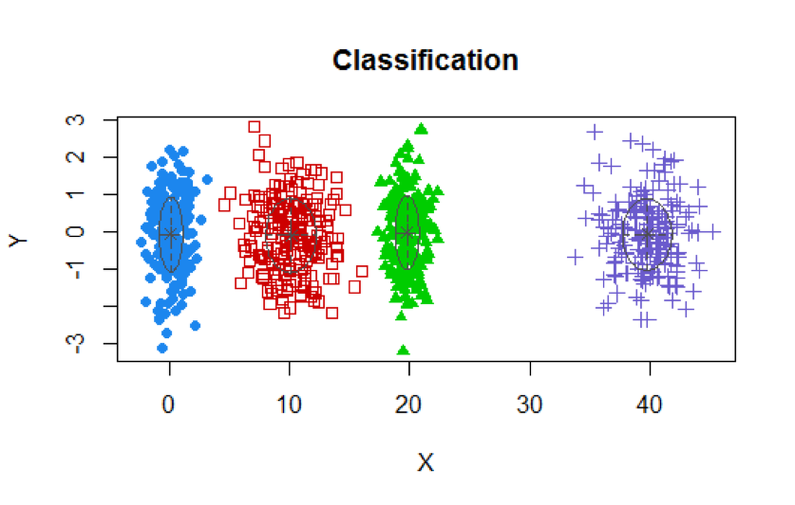 Figure 110: Clustering results of the simulated data
Now let’s implement GMM on the AD data. Result is shown in Figure 111.
# install.packages("mclust")
require(mclust)
AD.Mclust <- Mclust(AD[,c(3,4,5,6,10,12,14,15)])
summary(AD.Mclust)
AD.Mclust$data = AD.Mclust$data[,c(1:4)]
# plot(AD.Mclust)
## ----------------------------------------------------
## Gaussian finite mixture model fitted by EM algorithm
## ----------------------------------------------------
##
## Mclust EEI (diagonal, equal volume and shape) model
## with 4 components:
##
## log.likelihood n df BIC ICL
## -3235.874 517 43 -6740.414 -6899.077
##
## Clustering table:
## 1 2 3 4
## 43 253 92 129Figure 111: Clustering results of the AD dataset
Four clusters are identified as well. Figure 111 shows the boundaries between clusters are not as distinct as the boundaries in Figure 110. In real applications, particularly for those applications of which we haven’t known enough, clustering is an exploration tool that could generate suggestive results but may not provide confirmatory conclusions.
Remarks
Derivation of the EM algorithm
The aforementioned two-step iterative algorithm (i.e., as outlined in Figure 108) illustrates how the EM Algorithm works. We have assumed that the two-step iterative algorithm would converge. Luckily, it had been proved that the EM Algorithm generally would converge152 Wu, J., On the Convergence Properties of the EM Algorithm, The Annals of Statistics, Volume 11, Number 1, Pages 95-103, 1983..
The task of the EM algorithm is to learn the unknown parameters \(\boldsymbol{\Theta}\) from a given dataset. The \(\boldsymbol{\Theta}\) includes
[1.] The parameters of the \(M\) Gaussian distributions: \(\left\{\boldsymbol{\mu}_{m}, \boldsymbol{\Sigma}_{m}, m=1,2, \ldots, M\right\}\).
[2.] The probability vector \(\boldsymbol{\pi}\) that includes the elements \(\left\{\pi_{m}, m=1,2, \ldots, M\right\}\).
Don’t forget the binary indicator variable for each data point, denoted as \(z_{n m}\): \(z_{n m}=1\) indicates that the data point \(x_{n}\) was sampled from the \(m^{th}\) cluster153 The reason that \(z_{n m}\) is not included in \(\boldsymbol{\Theta}\), as it could be seen later, after the presentation of the EM algorithm, is that \(z_{n m}\) provides a bridge to facilitate the learning of \(\boldsymbol{\Theta}\). They are not essential parameters of the model, although they are useful to facilitate the estimation of the parameters of the model. Entities like \(z_{n m}\) are often called latent variables instead of parameters..
The Likelihood Function. To learn these parameters from data, like in the logistic regression model, we derive a likelihood function to connect the data and parameters. For GMM, we cannot write \(p\left(\boldsymbol{x}_{n} | \boldsymbol{\Theta}\right)\) directly. But it is possible to write \(p\left(\boldsymbol{x}_{n}, z_{n m} | \boldsymbol{\Theta}\right)\) directly154 That is what \(z_{n m}\) is needed for.
\[\begin{equation} p\left(\boldsymbol{x}_{n}, z_{n m} | \boldsymbol{\Theta}\right) = \prod_{m=1}^{M}\left[p\left(\boldsymbol{x}_{n} | z_{n m}=1, \boldsymbol{\Theta} \right) p\left(z_{n m}=1\right)\right]^{z_{n m}}. \tag{35} \end{equation}\]
We apply log on Eq. (35) and get the log-likelihood function in Eq (36)155 Note that, by definition, \(\pi_m = p\left(z_{n m}=1\right)\).
\[\begin{equation} \log p\left(\boldsymbol{x}_{n}, z_{n m} | \boldsymbol{\Theta}\right) = \sum_{m=1}^{M}\left[z_{n m} \log p\left(\boldsymbol{x}_{n} | z_{n m}=1, \boldsymbol{\Theta} \right)+z_{n m} \log \pi_{m}\right]. \tag{36} \end{equation}\]
It is known that156 I.e., by the definition of multivariate normal distribution; interested readers may see the Appendix of this book for a brief review. Here, the constant term \((2 \pi)^{-p / 2}\) in the density function of the multivariate normal distribution is ignored, so “\(\propto\)” is used instead of “\(=\).”
\[\begin{equation} p\left(\boldsymbol{x}_{n} | z_{n m}=1, \boldsymbol{\Theta} \right) \propto \left|\boldsymbol{\Sigma}_{m}\right|^{-1 / 2} \exp \left\{-\frac{1}{2}\left(\boldsymbol{x}_{n}-\boldsymbol{\mu}_{m}\right)^{T} \boldsymbol{\Sigma}_{m}^{-1}\left(\boldsymbol{x}_{n}-\boldsymbol{\mu}_{m}\right)\right\}. \tag{37} \end{equation}\]
Plug Eq. (37) into Eq. (36), we get
\[\begin{equation} \begin{gathered} \log p\left(\boldsymbol{x}_{n}, z_{n m} | \boldsymbol{\Theta}\right) \propto \\ \sum_{m=1}^{M}\left[z_{n m} \left( - \frac{1}{2}\log \left|\boldsymbol{\Sigma}_{m}\right| -\frac{1}{2}\left(\boldsymbol{x}_{n}-\boldsymbol{\mu}_{m}\right)^{T} \boldsymbol{\Sigma}_{m}^{-1}\left(\boldsymbol{x}_{n}-\boldsymbol{\mu}_{m}\right)+\right. z_{n m} \log \pi_{m} \right]. \end{gathered} \tag{38} \end{equation}\]
As there are \(N\) data points, the complete log-likelihood function is defined as
\[\begin{equation} l(\boldsymbol{\Theta}) = \log p(\boldsymbol{X}, \boldsymbol{Z} | \boldsymbol{\Theta}) = \log \prod_{n=1}^{N} p\left(\boldsymbol{x}_{n}, z_{n m} | \boldsymbol{\Theta}\right). \tag{39} \end{equation}\]
With Eq. (38), Eq. (39) can be rewritten as
\[\begin{equation} \begin{gathered} l(\boldsymbol{\Theta}) \propto \\ \sum_{n=1}^{N} \sum_{m=1}^{M}\left[z_{n m} \left( - \frac{1}{2}\log \left|\boldsymbol{\Sigma}_{m}\right| -\frac{1}{2}\left(\boldsymbol{x}_{n}-\boldsymbol{\mu}_{m}\right)^{T} \boldsymbol{\Sigma}_{m}^{-1}\left(\boldsymbol{x}_{n}-\boldsymbol{\mu}_{m}\right)+\right. z_{n m} \log \pi_{m} \right]. \end{gathered} \tag{40} \end{equation}\]
Now we have an explicit form of \(l(\boldsymbol{\Theta})\), based on which we use an optimization algorithm to search for the best estimate of \(\boldsymbol{\Theta}\).
Recall that \(z_{n m}\) is unknown. Here comes the initialization again. Following the idea we have implemented in the data example shown in Table 25, we propose the following strategy:
Initialization. Either initialize \(\left\{z_{nm}, n=1,2, \ldots, N; m=1,2, \ldots, M\right\}\) or \(\boldsymbol{\Theta}\).
E-step. We can estimate \(z_{n m}\) if we have known \(\boldsymbol{\Theta}\) (i.e., given \(\boldsymbol{\Theta}\)), the best estimate of \(z_{n m}\) is the expectation of \(z_{n m}\) where the expectation is taken regarding the distribution \(p\left(z_{n m} | \boldsymbol{x}_{n}, \boldsymbol{\Theta}\right)\) (i.e., denoted as \(\left\langle Z_{n m}\right\rangle_{p\left(z_{n m} | \boldsymbol{x}_{n}, \boldsymbol{\Theta}\right)}\)). By definition, we have
\[\begin{equation} \begin{gathered} \left\langle z_{n m}\right\rangle_{p\left(z_{n m} | \boldsymbol{x}_{n}, \boldsymbol{\Theta}\right)}=1\cdot p\left(z_{n m}=1 | \boldsymbol{x}_{n},{\boldsymbol{\Theta}}\right)+0 \cdot p\left(z_{n m}=0 | \boldsymbol{x}_{n}, {\boldsymbol{\Theta}}\right). \end{gathered} \tag{41} \end{equation}\]
It is known that
\[\begin{equation} p\left(z_{n m}=1 | \boldsymbol{x}_{n}, \boldsymbol{\Theta}\right)=\frac{p\left(\boldsymbol{x}_{n} | z_{n m}=1, \boldsymbol{\Theta}\right) \pi_{m}}{\sum_{k=1}^{M} p\left(\boldsymbol{x}_{n} | z_{n k}=1, \boldsymbol{\Theta}\right) \pi_{k}}. \tag{42} \end{equation}\]
Thus,
\[\begin{equation} \begin{gathered} \left\langle z_{n m}\right\rangle_{p\left(z_{n m} | \boldsymbol{x}_{n}, \boldsymbol{\Theta}\right)}= \frac{p\left(\boldsymbol{x}_{n} | z_{n m}=1, \boldsymbol{\Theta}\right) \pi_{m}}{\sum_{k=1}^{M} p\left(\boldsymbol{x}_{n} | z_{n k}=1, \boldsymbol{\Theta}\right) \pi_{k}}. \end{gathered} \tag{43} \end{equation}\]
- M-step. Then, we derive the expectation of \(l(\boldsymbol{\Theta})\) regarding the distribution \(p\left(z_{n m} | \boldsymbol{x}_{n}, \boldsymbol{\Theta}\right)\)
\[\begin{equation} \begin{gathered} \langle l(\boldsymbol{\Theta})\rangle_{p(\boldsymbol{Z} | \boldsymbol{X}, \boldsymbol{\Theta})}=\sum_{n=1}^{N} \sum_{m=1}^{M}\left[\left\langle z_{n m}\right\rangle_{p\left(z_{n m} =1 | \boldsymbol{x}_{n}, \boldsymbol{\Theta}\right)} \log p\left(\boldsymbol{x}_{n} | z_{n m}=1, \boldsymbol{\Theta}\right)+\right. \\ \left\langle z_{n m}\right\rangle_{p\left(z_{n m} =1 | \boldsymbol{x}_{n}, \boldsymbol{\Theta}\right)} \log \pi_{m} ]. \end{gathered} \tag{44} \end{equation}\]
And we optimize Eq. (44) for \(\boldsymbol{\Theta}\).
- Repeat the E-step and M-step. With the updated \(\boldsymbol{\Theta}\), we go back to the estimate of \(z_{n m}\) using Eq. (43), and then, feed the new estimate of \(z_{n m}\) into Eq. (44), and solve for \(\boldsymbol{\Theta}\) again. Repeat these iterations, until all the parameters in the iterations don’t change significantly157 Usually, we define a tolerance, e.g., the difference between two consecutive estimates of \(\boldsymbol{\Theta}\) is numerically bounded, such as \(10^{-4}\)..
More about the M-step. To estimate the parameters \(\boldsymbol{\Theta}\), in the M-step we use the First Derivative Test again and take derivatives of \(\langle l(\boldsymbol{\Theta})\rangle_{p(\boldsymbol{Z} | \boldsymbol{X}, \boldsymbol{\Theta})}\) (i.e., as shown in Eq. (44)) regarding \(\boldsymbol{\Theta}\) and put the derivatives equal to zero.
For \(\boldsymbol{\mu}_{m}\), we have
\[\begin{equation} \frac{\partial\langle l(\boldsymbol{\Theta})\rangle_{p(\boldsymbol{Z} | \boldsymbol{X}, \boldsymbol{\Theta})}}{\partial \boldsymbol{\mu}_{m}}=\sum_{n=1}^{N}\left\langle z_{n m}\right\rangle_{p\left(z_{n m} =1 | \boldsymbol{x}_{n}, \boldsymbol{\Theta}\right)} \frac{\partial \log p\left(\boldsymbol{x}_{n} | z_{n m}=1, \boldsymbol{\Theta}\right)}{\partial \boldsymbol{\mu}_{m}}=\boldsymbol{0}. \tag{45} \end{equation}\]
Based on Eq. (37), we can derive
\[\begin{equation} \frac{\partial \log p\left(\boldsymbol{x}_{n} | z_{n m}=1, \boldsymbol{\Theta}\right)}{\partial \boldsymbol{\mu}_{m}}= -\frac{1}{2} \frac{\partial\left(\boldsymbol{x}_{n}-\boldsymbol{\mu}_{m}\right)^{T} \boldsymbol{\Sigma}_{m}^{-1}\left(\boldsymbol{x}_{n}-\boldsymbol{\mu}_{m}\right)}{\partial \boldsymbol{\mu}_{m}}=\left(\boldsymbol{x}_{n}-\boldsymbol{\mu}_{m}\right)^{T} \boldsymbol{\Sigma}_{m}^{-1}. \tag{46} \end{equation}\]
Putting the result of Eq. (46) into Eq. (45), we can estimate \(\boldsymbol{\mu}_{m}\) by solving Eq. (45)
\[\begin{equation} \boldsymbol{\mu}_{m}=\frac{\sum_{n=1}^{N}\left\langle z_{n m}\right\rangle_{p\left(z_{n m} =1 | \boldsymbol{x}_{n}, \boldsymbol{\Theta}\right)} \boldsymbol{x}_{n}}{\sum_{n=1}^{N}\left\langle z_{n m}\right\rangle_{p\left(z_{n m} =1 | \boldsymbol{x}_{n}, \boldsymbol{\Theta}\right)}}. \tag{47} \end{equation}\]
Similarly, we take derivatives of \(\langle l({\boldsymbol{\Theta}})\rangle_{p(\boldsymbol{Z} | \boldsymbol{X}, \boldsymbol{\Theta})}\) regarding \(\boldsymbol{\Sigma}_{m}\) and put the derivatives equal to zero
\[\begin{equation} \frac{\partial\langle l(\boldsymbol{\Theta})\rangle_{p(\boldsymbol{Z} | \boldsymbol{X}, \boldsymbol{\Theta})}}{\partial \boldsymbol{\Sigma}_{m}}=\sum_{n=1}^{N}\left\langle z_{n m}\right\rangle_{p\left(z_{n m} =1 | \boldsymbol{x}_{n}, \boldsymbol{\Theta}\right)} \frac{\partial \log p\left(\boldsymbol{x}_{n} | z_{n m}=1, \boldsymbol{\Theta}\right)}{\partial \boldsymbol{\Sigma}_{m}}=\boldsymbol{O}. \tag{48} \end{equation}\]
Based on Eq. (37), we can derive
\[\begin{equation} \begin{gathered} \frac{\partial \log p\left(\boldsymbol{x}_{n} | z_{n m}=1, \boldsymbol{\Theta}\right)}{\partial \boldsymbol{\Sigma}_{m}} = \\ \frac{1}{2} \frac{\partial\left\{\left|\boldsymbol{\Sigma}_{m}\right|^{-1 / 2}-\left(\boldsymbol{x}_{n}-\boldsymbol{\mu}_{m}\right)^{T} \boldsymbol{\Sigma}_{m}^{-1}\left(\boldsymbol{x}_{n}-\boldsymbol{\mu}_{m}\right)\right\}}{\partial \boldsymbol{\Sigma}_{m}}=\frac{1}{2}\left[\boldsymbol{\Sigma}_{m}-\left(\boldsymbol{x}_{n}-\boldsymbol{\mu}_{m}\right)\left(\boldsymbol{x}_{n}-\boldsymbol{\mu}_{m}\right)^{T}\right]. \end{gathered} \tag{49} \end{equation}\]
Plug Eq. (49) into Eq. (48), we have
\[\begin{equation} \sum_{n=1}^{N}\left\langle z_{n m}\right\rangle_{p\left(z_{n m} =1 | \boldsymbol{X}, \boldsymbol{\Theta}\right)}\left[\boldsymbol{\Sigma}_{m}-\left(\boldsymbol{x}_{n}-\boldsymbol{\mu}_{m}\right)\left(\boldsymbol{x}_{n}-\boldsymbol{\mu}_{m}\right)^{T}\right]=\boldsymbol{O}. \tag{50} \end{equation}\]
Solving Eq. (50), we estimate \(\boldsymbol{\Sigma}_{m}\) as
\[\begin{equation} \boldsymbol{\Sigma}_{m}=\frac{\sum_{n=1}^{N}\left\langle z_{n m}\right\rangle_{p\left(z_{n m} =1| \boldsymbol{x}_{n}, \boldsymbol{\Theta}\right)} \left[\left(\boldsymbol{x}_{n}-\boldsymbol{\mu}_{m}\right)\left(\boldsymbol{x}_{n}-\boldsymbol{\mu}_{m}\right)^{T}\right]}{\sum_{n=1}^{N}\left\langle z_{n m}\right\rangle_{p\left(z_{n m} =1| \boldsymbol{x}_{n}, \boldsymbol{\Theta}\right)}}. \tag{51} \end{equation}\]
Lastly, to estimate \(\pi_{m}\), recall that \(\pi_m\) is the percentage of the data points in the whole mix that come from the \(m^{th}\) distribution, and \(\pi_m = p\left(z_{n m}=1\right)\), we can estimate \(\pi_{m}\) as
\[\begin{equation} \pi_{m}=\frac{\sum_{n=1}^{N}\left\langle z_{n m}\right\rangle_{p\left(z_{n m} =1 | \boldsymbol{x}_{n}, \boldsymbol{\Theta}\right)}}{N}. \tag{52} \end{equation}\]
Convergence of the EM Algorithm
Readers may have found that Eq. (40) gives us the form of \(\log p(\boldsymbol{X}, \boldsymbol{Z}| \boldsymbol{\Theta})\), that is what is denoted as \(l(\boldsymbol{\Theta})\). But, since \(\boldsymbol{Z}\) is the latent variable and not part of the parameters, the objective function of the GMM model should be
\[\begin{equation} \log p(\boldsymbol{X}| \boldsymbol{\Theta})=\log \int p(\boldsymbol{X}, \boldsymbol{Z} | \boldsymbol{\Theta}) d \boldsymbol{Z}. \tag{53} \end{equation}\]
But this is not what has been done in the EM algorithm. Instead, the EM algorithm solves for Eq. (44), that is essentially
\[\begin{equation} \langle \log p(\boldsymbol{X}, \boldsymbol{Z}| \boldsymbol{\Theta})\rangle_{p(\boldsymbol{Z} | \boldsymbol{X}, \boldsymbol{\Theta})} = \int \log p(\boldsymbol{X}, \boldsymbol{Z} ; \boldsymbol{\Theta}) p(\boldsymbol{Z} | \boldsymbol{X}, \boldsymbol{\Theta}) d \boldsymbol{Z}. \tag{54} \end{equation}\]
How does the solving of Eq. (54) help the solving of Eq. (53)?
The power of the EM algorithm draws on Jensen’s inequality. Let \(f\) be a convex function defined on an interval \(I\). If \(x_{1}, x_{2}, \ldots x_{n} \in I \text { and } \gamma_{1}, \gamma_{2}, \ldots \gamma_{n} \geq0\) with \(\sum_{i=1}^{n} \gamma_{i}=1\), then based on Jensen’s inequality, it is known that \(f\left(\sum_{i=1}^{n} \gamma_{i} x_{i}\right) \leq \sum_{i=1}^{n} \gamma_{i} f\left(x_{i}\right)\). Let’s apply this result to analyze the EM algorithm.
First, notice that
\[ \log p(\boldsymbol{X} | \boldsymbol \Theta)=\log \int p(\boldsymbol{X}, \boldsymbol{Z} | \boldsymbol \Theta) d \boldsymbol{Z} \]
\[ =\log \int Q(\boldsymbol{Z}) \frac{p(\boldsymbol{X}, \boldsymbol{Z} | \boldsymbol \Theta)}{Q(\boldsymbol{Z})} d \boldsymbol{Z}. \]
Here, \(Q(\boldsymbol{Z})\) is any distribution of \(\boldsymbol{Z}\). In the EM algorithm
\[Q(\boldsymbol{Z})=p(\boldsymbol{Z} | \boldsymbol{X}, \Theta).\]
Using Jensen’s inequality here, we have
\[ \log \int Q(\boldsymbol{Z}) \frac{p(\boldsymbol{X}, \boldsymbol{Z} | \boldsymbol \Theta)}{Q(\boldsymbol{Z})} d \boldsymbol{Z} \]
\[ \geq \int Q(\boldsymbol{Z}) \log \frac{p(\boldsymbol{X}, \boldsymbol{Z} | \boldsymbol \Theta)}{Q(\boldsymbol{Z})} d \boldsymbol{Z}. \]
Since
\[ \int Q(\boldsymbol{Z}) \log \frac{p(\boldsymbol{X}, \boldsymbol{Z} | \boldsymbol \Theta)}{Q(\boldsymbol{Z})} d \boldsymbol{Z}. \]
\[ =\int Q(\boldsymbol{Z}) \log p(\boldsymbol{X}, \boldsymbol{Z} | \boldsymbol \Theta) d \boldsymbol{Z}-\int Q(\boldsymbol{Z}) Q(\boldsymbol{Z}) d \boldsymbol{Z}, \]
and \(\int Q(\boldsymbol{Z}) Q(\boldsymbol{Z}) d \boldsymbol{Z}\) is quadratic and thus non-negative,
our final result is
\[\begin{equation} \log p(\boldsymbol{X} | \boldsymbol \Theta) \geq \int Q(\boldsymbol{Z}) \log p(\boldsymbol{X}, \boldsymbol{Z} | \boldsymbol \Theta) d \boldsymbol{Z}. \tag{55} \end{equation}\]
When we set \(Q(\boldsymbol{Z}) = p(\boldsymbol{Z} | \boldsymbol{X}, \boldsymbol{\Theta})\), Eq. (55) is rewritten as
\[\begin{equation} \log p(\boldsymbol{X} | \boldsymbol \Theta) \geq \langle \log p(\boldsymbol{X}, \boldsymbol{Z}| \boldsymbol{\Theta})\rangle_{p(\boldsymbol{Z} | \boldsymbol{X}, \boldsymbol{\Theta})}. \tag{56} \end{equation}\]
Eq. (56) reveals that \(\langle \log p(\boldsymbol{X}, \boldsymbol{Z}| \boldsymbol{\Theta})\rangle_{p(\boldsymbol{Z} | \boldsymbol{X}, \boldsymbol{\Theta})}\) is the lower bound of \(\log p(\boldsymbol{X} | \boldsymbol \Theta)\). Thus, maximization of \(\langle \log p(\boldsymbol{X}, \boldsymbol{Z}| \boldsymbol{\Theta})\rangle_{p(\boldsymbol{Z} | \boldsymbol{X}, \boldsymbol{\Theta})}\) can only increase the value of \(\log p(\boldsymbol{X} | \boldsymbol \Theta)\). This is why solving Eq. (54) helps the solving of Eq. (53). This is the foundation of the effectiveness of the EM algorithm. The EM algorithm is often used to solve for problems that involve latent variables. Note that, \(Q(\boldsymbol{Z})\) could be any distribution rather than \(p(\boldsymbol{Z} | \boldsymbol{X}, \boldsymbol{\Theta})\), and Eq. (55) still holds. In applications where we could not explicitly derive \(p(\boldsymbol{Z} | \boldsymbol{X}, \boldsymbol{\Theta})\), a surrogate distribution is used for \(Q(\boldsymbol{Z})\). This variant of the EM algorithm is called the variational inference158 A good starting point to know more about variational inference within a context of GMM, see: David, B., Kucukelbir, A. and McAuliffe, J., Variational Inference: A Review for Statisticians, Journal of the American Statistical Association, Volume 112, Number 518, Pages 859-877, 2017..
Clustering by random forest
Many clustering algorithms have been developed. The random forest model can be used for clustering as well. This is a byproduct utility of a random forest model. One advantage of using random forest for clustering is that it can cluster data points with mixed types of variables. To conduct clustering in random forests is to extract the distance information between data points that have been learned by the random forest model. There are multiple ways to do so. For example, one approach159 Shi, T. and Horvath, S., Unsupervised learning with random forest predictors. Journal of Computational and Graphical Statistics, Volume 15, Issue 1, Pages 118-138, 2006. that has been implemented in the R package randomForests is to generate a synthetic dataset with the same size as the original dataset, e.g., randomly generate the measurements of each variable using its empirical marginal distribution. The original dataset is taken as one class, while the synthetic dataset is taken as another class. Since the random forest model is used to classify the two classes, it will stress on the difference between the two datasets, which is, the variable dependency that is embedded in the original dataset but lost in the synthetic dataset because of the way the synthetic dataset is generated. Hence, each tree will be enriched with splitting variables that are dependent on other variables. After the random forest model is built, a distance between any pair of two data points can be calculated based on the frequency of this pair of data points existing in the same nodes of the random forest model. With this distance information, distance-based clustering algorithms such as the hierarchical clustering or K-means clustering160 E.g., both could be implemented using the R package cluster. algorithms can be applied to detect the clusters.
In the following example, we generate a dataset with two clusters. The clusters produced from the random forest model are shown in Figure 112.
 Figure 112: Clusters produced by the random forest model
Figure 112: Clusters produced by the random forest model
We then use the following R code to apply a random forest model on this dataset to find the clusters. It can be seen that the clusters are reasonably recovered by the random forest model.
rm(list = ls(all = TRUE))
library(rpart)
library(dplyr)
library(ggplot2)
library(randomForest)
library(MASS)
library(cluster)
ndata <- 2000
sigma <- matrix(c(1, 0, 0, 1), 2, 2)
data1 <- mvrnorm(n = 500, rep(0, 2), sigma)
data2 <- mvrnorm(n = 500, rep(3, 2), sigma)
data <- rbind(data1, data2)
rf <- randomForest(data)
prox <- rf$proximity
clusters <- pam(prox, 2)
data <- as.data.frame(data)
data$cluster <- as.character(clusters$clustering)
ggplot(data, aes(x = V1, y = V2, color = cluster)) +
geom_point() + labs(title = 'Data points')Clustering-based prediction models
 Figure 113: Clustering-based prediction models
Figure 113: Clustering-based prediction models
As we have mentioned, clustering is a flexible concept. And it could be used in a combination of methods. Figure 113 illustrates the basic idea of clustering-based prediction models. It applies a clustering algorithm first on the data and then builds a model for each cluster. As a data analytics strategy, we could combine different clustering algorithms and prediction models that are appropriate for an application context. There are also integrated algorithms that have articulated this strategy on the formulation level. For example, the Treed Regression method161 Alexander, W. and Grimshaw, S., Treed regression. Journal of Computational and Graphical Statistics, Volume 5, Issue 2, Pages 156-175, 1996. is one example that proposed to build a tree to stratify the dataset first, and then, create regression models on the leaf nodes—here, each leaf node is a cluster. Similarly, the logistic model trees162 Landwehr, N., Hall, M. and Frank, E. Logistic model trees. Machine Learning, Volume 59, Issue 1, Pages 161–205, 2004. also use a tree model to cluster data points into different leaf nodes and build different logistic regression model for each leaf node. Motivated by this line of thought, more models have been developed with different combination of tree models and prediction models (or other types of statistical models) on the leaf nodes163 Gramacy, R. and Lee, H. Bayesian treed Gaussian process models with an application to computer modeling. Journal of American Statistical Association, Volume 103, Issue 483, Pages 1119-1130, 2008..164 Liu, H., Chen, X., Lafferty, J. and Wasserman, L. Graph-valued regression. In the Proceeding of Advances in Neural Information Processing Systems 23 (NIPS), 2010.
Exercises
- In what follows is a summary of the clustering result on a dataset by using the R package
mclust.
## ----------------------------------------------------
## Gaussian finite mixture model fitted by EM algorithm
## ----------------------------------------------------
##
## Mclust VVV (ellipsoidal, varying volume, shape,
## and orientation) model with 3
## components:
##
## log-likelihood n df BIC ICL
## -2303.496 145 29 -4751.316 -4770.169
##
## Clustering table:
## 1 2 3
## 81 36 28
##
## Mixing probabilities:
## 1 2 3
## 0.5368974 0.2650129 0.1980897
##
## Means:
## [,1] [,2] [,3]
## glucose 90.96239 104.5335 229.42136
## insulin 357.79083 494.8259 1098.25990
## sspg 163.74858 309.5583 81.60001
##
## Variances:
## [,,1]
## glucose insulin sspg
## glucose 57.18044 75.83206 14.73199
## insulin 75.83206 2101.76553 322.82294
## sspg 14.73199 322.82294 2416.99074
## [,,2]
## glucose insulin sspg
## glucose 185.0290 1282.340 -509.7313
## insulin 1282.3398 14039.283 -2559.0251
## sspg -509.7313 -2559.025 23835.7278
## [,,3]
## glucose insulin sspg
## glucose 5529.250 20389.09 -2486.208
## insulin 20389.088 83132.48 -10393.004
## sspg -2486.208 -10393.00 2217.533(a) How many samples in total are in this dataset? How many variables? (b) How many clusters are found? What are the sizes of the clusters? (c) What is the fitted GMM model? Please write its mathematical form.
Consider the dataset in Table 29 that has \(9\) data points. Let’s use it to estimate a GMM model with \(3\) clusters. The initial values are shown in Table 29
Table 29: Initial values for a GMM model with \(3\) clusters
| ID | \(1.53\) | \(0.57\) | \(2.56\) | \(1.22\) | \(4.13\) | \(6.03\) | \(0.98\) | \(5.21\) | \(-0.37\) |
|---|---|---|---|---|---|---|---|---|---|
| Label | \(C1\) | \(C3\) | \(C1\) | \(C2\) | \(C2\) | \(C2\) | \(C1\) | \(C2\) | \(C3\) |
- Write the Gaussian mixture model (GMM) that you want to estimate. (b) Estimate the parameters of your GMM model. (c) Update the labels with your estimated parameters. (d) Estimate the parameters again.
Follow up on the dataset in Q3. Use the R pipeline for clustering on this data. Compare the result from R and the result from your manual calculation.
Consider the dataset in Table 30 that has \(10\) data points. Let’s use it to estimate a GMM model with \(3\) clusters. The initial values are shown in Table 30
Table 30: Initial values for a GMM model with \(3\) clusters
| ID | \(2.22\) | \(6.33\) | \(3.15\) | \(-0.89\) | \(3.21\) | \(1.10\) | \(1.58\) | \(0.03\) | \(8.05\) | \(0.26\) |
|---|---|---|---|---|---|---|---|---|---|---|
| Label | \(C1\) | \(C3\) | \(C1\) | \(C2\) | \(C2\) | \(C2\) | \(C1\) | \(C2\) | \(C3\) | \(C2\) |
- Write the Gaussian mixture model (GMM) that you want to estimate. (b) Estimate the parameters of your GMM model. (c) Update the labels with your estimated parameters. (d) Estimate the parameters again.
- Design a simulation experiment to test the effectiveness of the R package
mclust. For instance, simulate a three-cluster structure in your dataset by this GMM model \[ \boldsymbol{x} \sim \pi_{1} N\left(\boldsymbol{\mu}_{1}, \boldsymbol{\Sigma}_{1}\right) + \pi_{2} N\left(\boldsymbol{\mu}_{2}, \boldsymbol{\Sigma}_{2}\right) + \pi_{3} N\left(\boldsymbol{\mu}_{3}, \boldsymbol{\Sigma}_{3}\right), \] where \(\pi_{1} = 0.5\), \(\pi_{2} = 0.25\), and \(\pi_{3} = 0.25\), and
\[ \boldsymbol{\mu}_{1} = \left[ \begin{array}{c}{5} \\ {3} \\ {3}\end{array}\right], \text { } \boldsymbol{\mu}_{2} = \left[ \begin{array}{c}{10} \\ {5} \\ {1}\end{array}\right], \text { } \boldsymbol{\mu}_{3} = \left[ \begin{array}{c}{-5} \\ {10} \\ {-2}\end{array}\right]; \]
\[
\boldsymbol{\Sigma}_{1}=\left[\begin{array}{ccc}1 & 0 & 0 \\ 0 & 1 & 0 \\ 0 & 0 & 1 \end{array}\right], \text { } \boldsymbol{\Sigma}_{2}=\left[\begin{array}{ccc}1 & 0 & 0 \\ 0 & 1 & 0 \\ 0 & 0 & 1 \end{array}\right], \text { }
\boldsymbol{\Sigma}_{3}=\left[\begin{array}{ccc}1 & 0 & 0 \\ 0 & 1 & 0 \\ 0 & 0 & 1 \end{array}\right].
\]
Then, use the mclust package on this dataset and see if the true clustering structure could be recovered.
- Follow up on the simulation experiment in Q6. Let’s consider a GMM model with larger variance \[ \boldsymbol{x} \sim \pi_{1} N\left(\boldsymbol{\mu}_{1}, \boldsymbol{\Sigma}_{1}\right) + \pi_{2} N\left(\boldsymbol{\mu}_{2}, \boldsymbol{\Sigma}_{2}\right) + \pi_{3} N\left(\boldsymbol{\mu}_{3}, \boldsymbol{\Sigma}_{3}\right), \] where \(\pi_{1} = 0.5\), \(\pi_{2} = 0.25\), and \(\pi_{3} = 0.25\), and
\[ \boldsymbol{\mu}_{1} = \left[ \begin{array}{c}{5} \\ {3} \\ {3}\end{array}\right], \text { } \boldsymbol{\mu}_{2} = \left[ \begin{array}{c}{10} \\ {5} \\ {1}\end{array}\right], \text { } \boldsymbol{\mu}_{3} = \left[ \begin{array}{c}{-5} \\ {10} \\ {-2}\end{array}\right]; \]
\[
\boldsymbol{\Sigma}_{1}=\left[\begin{array}{ccc}3 & 0 & 0 \\ 0 & 3 & 0 \\ 0 & 0 & 3 \end{array}\right], \text { } \boldsymbol{\Sigma}_{2}=\left[\begin{array}{ccc}3 & 0 & 0 \\ 0 & 3 & 0 \\ 0 & 0 & 3 \end{array}\right], \text { }
\boldsymbol{\Sigma}_{3}=\left[\begin{array}{ccc}3 & 0 & 0 \\ 0 & 3 & 0 \\ 0 & 0 & 3 \end{array}\right].
\]
Then, use the R package mclust on this dataset and see if the true clustering structure could be recovered.
Design a simulation experiment to test the effectiveness of the diagnostic tools in the
ggfortifyR package. For instance, use the same simulation procedure that has been used in Q9 of Chapter 2 to design a linear regression model with two variables, simulate \(100\) samples from this model, fit the model, and draw the diagnostic figures.Follow up on the simulation experiment in Q8. Add a few outliers into your dataset and see if the diagnostic tools in the
ggfortifyR package can detect them.
Chapter 7. Learning (II): SVM & Ensemble Learning
Overview
Chapter 7 revisits learning from a perspective that is different from Chapter 5. In Chapter 5 we have introduced the concept of overfitting and the use of cross-validation as a safeguard mechanism to help us build models that don’t overfit the data. It focused on fair evaluation of the performances of a specific model. Chapter 7, taking on a process-oriented view of the issue of overfitting, focuses on performances of a learning algorithm165 Algorithms are computational procedures that learn models from data. They are processes.. This chapter introduces two methods that aim to build a safeguard mechanism into the learning algorithms themselves. The two methods are the Support Vector Machine (SVM) and Ensemble Learning166 The random forest model is a typical example of ensemble learning. While all models could overfit a dataset, these methods aim to reduce risk of overfitting based on their unique modeling principles.
In short, Chapter 5 introduced evaluative methods that concern if a model has learned from the data. It is about quality assessment. Chapter 7 introduces learning methods that concern how to learn better from the data. It is about quality improvement.
Support vector machine
Rationale and formulation
A learning algorithm has an objective function and sometimes a set of constraints. The objective function corresponds to a quality of the learned model that could help it succeed on the unseen testing data. Eqs. (16), (28), and (40), are examples of objective functions. They are developed based on the likelihood principle. Besides the likelihood principle, researchers have been studying what else quality a model should have and what objective function we should optimize to enhance this quality of the model. The constraints, on the other hand, guard the bottom line: the learned model needs to at least perform well on the training data so it is possible to perform well on future unseen data167 The testing data, while unseen, is assumed to be statistically the same as the training data. This is a basic assumption in machine learning..
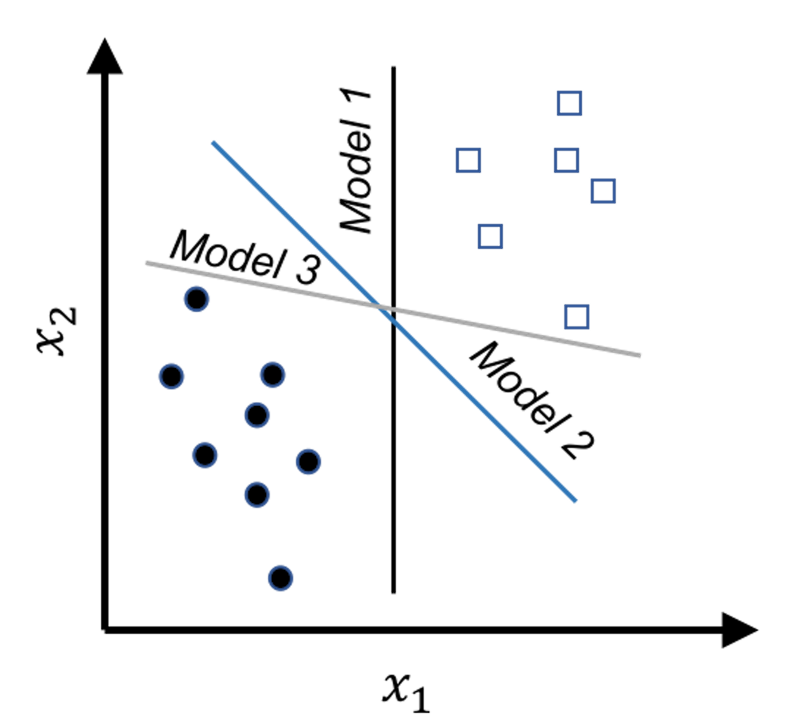 Figure 114: Which model (i.e., here, which line) should we use as our classification model to separate the two classes of data points?
Figure 114 shows an example of a binary classification problem. The constraints here are obvious: the models should correctly classify the data points. And the \(3\) models all perform well, while we hesitate to say that the \(3\) models are equally good. Common sense tells us that Model \(3\) is the least favorable. Unlike the other two, Model \(3\) is close to a few data points. This makes Model \(3\) bear a risk of misclassification on future unseen data: the locations of the existing data points provide a suggestion about where future unseen data may locate; but this is a suggestion, not a hard boundary.
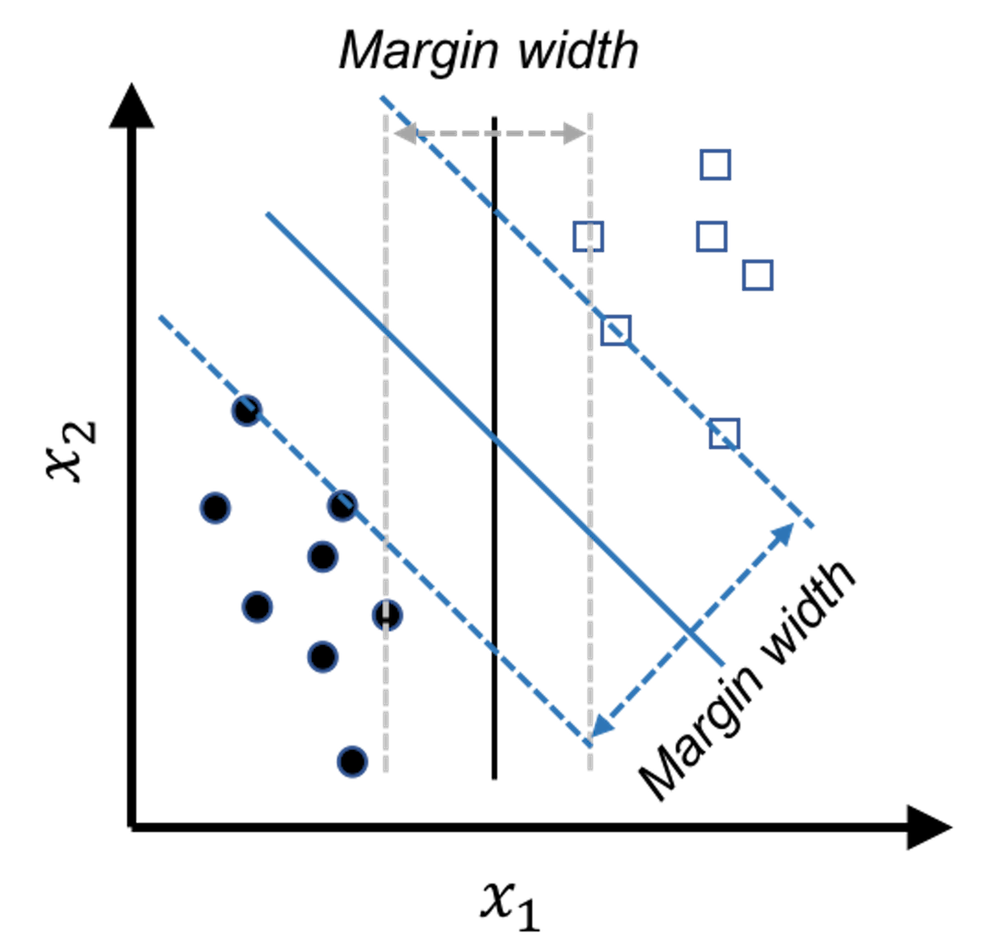 Figure 115: The model that has a larger margin is better—the basic idea of SVM
In other words, the line of Model \(3\) is too close to the data points and therefore lacks a safe margin. The concept of margin is shown in Figure 115. To reduce risk, we should have the margin as large as possible. The other two models have larger margins, and Model \(2\) is the best because it has the largest margin.
In summary, while all the models shown in Figure 114 meet the constraints (i.e., perform well on the training data points), this is just the bottom line for a model to be good, and they are ranked differently based on an objective function that maximizes the margin of the model. This is the maximum margin principle invented in SVM.
Theory and method
Derivation of the SVM formulation.
Consider a binary classification problem as shown in Figure 115. At this moment, we consider situations that all data points could be correctly classified by a line, which is clearly the case in Figure 114. This is called the linearly separable case. Denote the data points as \(\left\{\left(x_{n}, y_{n}\right), n=1,2, \dots, N\right\}\). Here, the outcome variable \(y\) is denoted as \(y_n \in \{1,-1\}\), i.e., \(y=1\) denotes the circle points; \(y=-1\) denotes the square points.
The mathematical model to represent a line is \(\boldsymbol{w}^{T} \boldsymbol{x}+b = 0\). Based on this form, we can segment the space into \(5\) regions, as shown in Figure 116. And by looking at the value of \(\boldsymbol{w}^{T} \boldsymbol{x}+b\), we know which region the data point \(\boldsymbol{x}\) falls into. In other words, Figure 116 tells us a classification rule
 Figure 116: The \(5\) regions
Figure 116: The \(5\) regions
\[\begin{equation} \begin{aligned} \text { If } \boldsymbol{w}^{T} \boldsymbol{x}+b>0, \text { then } y=1; \\ \text { Otherwise, } y=-1. \end{aligned} \tag{57} \end{equation}\]
Note that
\[\begin{equation} \begin{gathered} \text{For data points on the margin: } \left|\boldsymbol{w}^{T} \boldsymbol{x}+b\right|=1; \\ \text {For data points beyond the margin: } \left|\boldsymbol{w}^{T} \boldsymbol{x}+b\right|>1. \end{gathered} \tag{58} \end{equation}\]
These two equations in Eq. (58) provide the constraints for the SVM formulation, i.e., the bottom line for a model to be a good model. The two equations can be succinctly rewritten as one
\[ y\left(\boldsymbol{w}^{T} \boldsymbol{x}+b\right) \geq 1. \]
Thus, a draft version of the SVM formulation is
\[\begin{equation} \begin{gathered} \text{*Objective function*: Maximize Margin}, \\ \text { *Subject to*: } y_{n}\left(\boldsymbol{w}^{T} \boldsymbol{x}_{n}+b\right) \geq 1 \text { for } n=1,2, \ldots, N. \end{gathered} \tag{59} \end{equation}\]
The objective function is to maximize the margin of the model. Note that a model is characterized by its parameters \(\boldsymbol{w}\) and \(b\). And the goal of Eq. (59) is to find the model—and therefore, the parameters—that maximizes the margin. In order to carry out this idea, we need the margin to be a concrete mathematical entity that could be characterized by the parameters \(\boldsymbol{w}\) and \(b\)168 Not all good ideas could be readily materialized in concrete mathematical forms. There is no guaranteed mathematical reality and if there is one it is always hard-earned..
 Figure 117: Illustration of the margin as a function of \(\boldsymbol{w}\)
Figure 117: Illustration of the margin as a function of \(\boldsymbol{w}\)
We refer readers to the Remarks section to see details of how the margin is derived as a function of \(\boldsymbol{w}\). Figure 117 shows the result: the margin of the model is \(\frac{2}{\|\boldsymbol{w}\|}\). Here, \(\|\boldsymbol{w}\|^{2} = \boldsymbol{w}^{T} \boldsymbol{w}\). And note that to maximize the margin of a model is equivalent to minimize \(\|\boldsymbol{w}\|\). This gives us the objective function of the SVM model169 Note that here we use \(\|\boldsymbol{w}\|^{2}\) instead of \(\|\boldsymbol{w}\|\). This formulation is easier to solve.
\[\begin{equation} \text {Maximize Margin} = \min _{\boldsymbol{w}} \frac{1}{2}\|\boldsymbol{w}\|^{2}. \tag{60} \end{equation}\]
Thus, the final SVM formulation is
\[\begin{equation} \begin{gathered} \min _{\boldsymbol{w}} \frac{1}{2}\|\boldsymbol{w}\|^{2}, \\ \text { Subject to: } y_{n}\left(\boldsymbol{w}^{T} \boldsymbol{x}_{n}+b\right) \geq 1 \text { for } n=1,2, \ldots, N. \end{gathered} \tag{61} \end{equation}\]
Optimization solution.
Eq. (61) is called the primal formulation of SVM. To solve it, it is often converted into its dual form, the dual formulation of SVM. This could be done by the method of Lagrange multiplier that introduces a dummy variable, \(\alpha_{n}\), for each constraint, i.e., \(y_{n}\left(\boldsymbol{w}^{T}\boldsymbol{x}_{n}+b\right)\geq 1\), such that we could move the constraints into the objective function. By definition, \(\alpha_{n} \geq 0\).
\[ L(\boldsymbol{w}, b, \boldsymbol{\alpha})=\frac{1}{2}\|\boldsymbol{w}\|^{2}-\sum_{n=1}^{N} \alpha_{n}\left[y_{n}\left(\boldsymbol{w}^{T} \boldsymbol{x}_{n}+b\right)-1\right]. \]
This could be rewritten as
\[\begin{equation} L(\boldsymbol{w}, b, \boldsymbol{\alpha}) = \underbrace{\frac{1}{2} \boldsymbol{w}^{T} \boldsymbol{w}}_{(1)} - \underbrace{\sum_{n=1}^{N} \alpha_{n} y_{n} \boldsymbol{w}^{T} \boldsymbol{x}_{n}}_{(2)}-\underbrace{b \sum_{n=1}^{N} \alpha_{n} y_{n}}_{(3)}+\underbrace{\sum_{n=1}^{N} \alpha_{n}}_{(4)}. \tag{62} \end{equation}\]
Then we use the First Derivative Test again: differentiating \(L(\boldsymbol{w}, b, \boldsymbol{\alpha})\) with respect to \(\boldsymbol{w} \text { and } b\), and setting them to \(0\) yields the following solutions
\[\begin{equation} \boldsymbol{w}=\sum_{n=1}^{N} \alpha_{n} y_{n} \boldsymbol{x}_{n}; \tag{63} \end{equation}\]
\[\begin{equation} \sum_{n=1}^{N} \alpha_{n} y_{n}=0. \tag{64} \end{equation}\]
Using the conclusion in Eq. (63), part (1) of Eq. (62) could be rewritten as
\[ \frac{1}{2} \boldsymbol{w}^{T} \boldsymbol{w}=\frac{1}{2} \boldsymbol{w}^{T} \sum_{n=1}^{N} \alpha_{n} y_{n} \boldsymbol{x}_{n}=\frac{1}{2} \sum_{n=1}^{N} \alpha_{n} y_{n} \boldsymbol{w}^{T} \boldsymbol{x}_{n}. \]
It has the same form as part (2) of Eq. (62). The two could be merged together into \(-\frac{1}{2} \sum_{n=1}^{N} \alpha_{n} y_{n} \boldsymbol{w}^{T} \boldsymbol{x}_{n}\). Note that170 I.e., use the conclusion in Eq. (63) again.
\[ \frac{1}{2} \sum_{n=1}^{N} \alpha_{n} y_{n} \boldsymbol{w}^{T} \boldsymbol{x}_{n}=\frac{1}{2} \sum_{n=1}^{N} \alpha_{n} y_{n}\left(\sum_{n=1}^{N} \alpha_{n} y_{n} \boldsymbol{x}_{n}\right)^{T} \boldsymbol{x}_{n}=\frac{1}{2} \sum_{n=1}^{N} \sum_{m=1}^{N} \alpha_{n} \alpha_{m} y_{n} y_{m} \boldsymbol{x}_{n}^{T} \boldsymbol{x}_{m}. \]
Part (3) of Eq. (62), according to the conclusion in Eq. (64), is \(0\).
Based on these results, we can rewrite \(L(\boldsymbol{w}, b, \boldsymbol{\alpha})\) as
\[ L(\boldsymbol{w}, b, \boldsymbol{\alpha})=\sum_{n=1}^{N} \alpha_{n}-\frac{1}{2} \sum_{n=1}^{N} \sum_{m=1}^{N} \alpha_{n} \alpha_{m} y_{n} y_{m} \boldsymbol{x}_{n}^{T} \boldsymbol{x}_{m}. \]
This is the objective function of the dual formulation of Eq. (61). The decision variables are the Lagrange multipliers, the \(\boldsymbol{\alpha}\). By definition the Lagrange multipliers should be non-negative, and we have the constraint of the Lagrange multipliers described in Eq. (64). All together, the dual formulation of the SVM model is
\[\begin{equation} \begin{gathered} \max _{\boldsymbol{\alpha}} \sum_{n=1}^{N} \alpha_{n}-\frac{1}{2} \sum_{n=1}^{N} \sum_{m=1}^{N} \alpha_{n} \alpha_{m} y_{n} y_{m} \boldsymbol{x}_{n}^{T} \boldsymbol{x}_{m}, \\ \text { Subject to: } \alpha_{n} \geq 0 \text { for } n=1,2, \dots, N \text {, and } \sum_{n=1}^{N} \alpha_{n} y_{n}=0. \end{gathered} \tag{65} \end{equation}\]
This is a quadratic programming problem that can be solved using many existing well established algorithms.
Support vectors.
The data points that lay on the margins, as shown in Figure 118, are called support vectors. These geometrically unique data points are also found to be numerically interesting: in the solution of the dual formulation of SVM as shown in Eq. (65), the \(\alpha_{n}\)s that correspond to the support vectors are those that are nonzero. In other words, the data points that are not support vectors will have their \(\alpha_{n}\)s to be zero in the solution of Eq. (65).171 Note that each data point contributes a constraint in the primal formulation of SVM, and therefore, corresponds to a \(\alpha_{n}\) in the dual formulation.
If we revisit Eq. (63), we can see that only the nonzero \(\alpha_n\) contribute to the estimation of \(\boldsymbol{w}\). Indeed, Figure 118 shows that support vectors are sufficient to geometrically define the margins. And if we know the margins, the decision boundary is determined, i.e., as the central line in the middle of the two margins.
 Figure 118: Support vectors are the data points that lay on the margins. In other words, the support vectors define the margins.
Figure 118: Support vectors are the data points that lay on the margins. In other words, the support vectors define the margins.
The support vectors hold crucial implications for the learned model. Theoretical evidences showed that the number of support vectors is a metric that can indicate the “healthiness” of the model, i.e., the smaller the total number of support vectors, the better the model. It also reveals that the main statistical information of a given dataset the SVM model uses is the support vectors. The number of support vectors is usually much smaller than the number of data points \(N\). Some works have been inspired to accelerate the SVM model training by discarding the data points that are probably not support vectors172 If we can screen the data points before we solve Eq. (65) by discarding some data points that are not support vectors, the size of the optimization problem in Eq. (65) could be reduced.. To understand why the nonzero \(\alpha_n\) correspond to the support vectors, interested readers can find the derivation in the Remarks section.
Summary. After solving Eq. (65), we obtain the solutions of \(\boldsymbol{\alpha}\). With that, we estimate the parameter \(\boldsymbol{w}\) based on Eq. (63). To estimate the parameter \(b\), we use any support vector, i.e., say, \((\boldsymbol{x}_{n}, y_n)\), and estimate \(b\) by
\[\begin{equation*} \text{If } y_n = 1, b=1-\boldsymbol{w}^{T} \boldsymbol{x}_{n}; \end{equation*}\]
\[\begin{equation} \text{If } y_n = -1, b=-1-\boldsymbol{w}^{T} \boldsymbol{x}_{n}.\tag{66} \end{equation}\]
Extension to nonseparable cases.
We have assumed that the two classes are separable. Since this is impossible in some applications, we revise the SVM formulation—specifically, to revise the constraints of the SVM formulation—by allowing some data points to be within the margins or even on the wrong side of the decision boundary.
 Figure 119: Behaviors of the slack variables
Figure 119: Behaviors of the slack variables
Note that the original constraint structure in Eq. (61) is derived based on the linearly separable case shown in Figure 114. For the nonseparable case, Figure 119 shows three scenarios: the Type A data points fall within the margins but still on the right side of their class, the Type B data points fall on the wrong side of their class, and the Type C data points fall on the right side of their class and also beyond or on the margin.
The Type A data points and the Type B data points are both compromised, and we introduce a slack variable to describe the degree of compromise for both types of data points.
For instance, consider the circle points that belong to the class (\(y_n=1\)), we have173 Readers may revisit Figure 116 to understand Eq. (67).
\[\begin{equation} \begin{gathered} \text {Data points (Type A): } \boldsymbol{w}^{T} \boldsymbol{x}_{n}+b \in (0,1); \\ \text {Data points (Type B): } \boldsymbol{w}^{T} \boldsymbol{x}_{n}+b < 0. \end{gathered} \tag{67} \end{equation}\]
Then we define a slack variable \(\xi_{n}\) for any data point \(n\) of Types A or B
\[ \text {The slack variable $\xi_{n}$}: \xi_{n} = 1 - \left(\boldsymbol{w}^{T} \boldsymbol{x}_{n}+b\right). \]
And we define \(\xi_{n}\) for any data point of Type C to be \(0\) since there is no compromise.
All together, as shown in Figure 119, we have
\[\begin{equation} \begin{gathered} \text {Data points (Type A): } \xi_{n} \in (0,1]; \\ \text {Data points (Type B): } \xi_{n} > 1; \\ \text {Data points (Type C): } \xi_{n}=0. \end{gathered} \tag{68} \end{equation}\]
Similarly, for the square points that belong to the class (\(y= -1\)), we define a slack variable \(\xi_{n}\) for each data point \(n\)
\[ \text {The slack variable $\xi_{n}$}: \xi_{n} = 1 + \left(\boldsymbol{w}^{T} \boldsymbol{x}_{n}+b\right). \]
The same result in Eq. (68) could be derived.
As the slack variable \(\xi_{n}\) describes the degree of compromise for the data point \(\boldsymbol{x}_{n}\), an optimal SVM model should also minimize the total amount of compromise. Based on this additional learning principle, we revise the objective function in Eq. (61) and get
\[\begin{equation} \underbrace{\min _{\boldsymbol{w}} \frac{1}{2}\|\boldsymbol{w}\|^{2}}_{\text{*Maximize Margin*}} + \underbrace{C \sum_{n=1}^{N} \xi_{n}.}_{\text{*Minimize Slacks*}} \tag{69} \end{equation}\]
Here, \(C\) is a user-specified parameter to control the balance between the two objectives: maximum margin and minimum sum of slacks.
Then we revise the constraints174 I.e., use the results in Figure 116 and Figure 119. to be
\[ y_{n}\left(\boldsymbol{w}^{T} \boldsymbol{x}_{n}+b\right) \geq 1-\xi_{n} \text {, for } n=1,2, \dots, N. \tag{70} \]
Putting the revised objective function and constraints together, the formulation of the SVM model for nonseparable case becomes
\[\begin{equation} \begin{gathered} \min _{\boldsymbol{w}} \frac{1}{2}\|\boldsymbol{w}\|^{2}+C \sum_{n=1}^{N} \xi_{n}, \\ \text { Subject to: } y_{n}\left(\boldsymbol{w}^{T} \boldsymbol{x}_{n}+b\right) \geq 1-\xi_{n}, \\ \xi_{n} \geq 0, \text { for } n=1,2, \ldots, N. \end{gathered} \tag{71} \end{equation}\]
A dual form that is similar to Eq. (65) could be derived, which is skipped here175 Interested readers could read this book for a comprehensive and deep understanding of SVM: Scholkopf, B. and Smola, A.J., Learning with Kernels: Support Vector Machines, Regularization, Optimization, and Beyond. MIT Press, 2001..
Extension to nonlinear SVM.
Sometimes, the decision boundary could not be characterized as linear models, i.e., see Figure 120 (a).
Figure 120: (a) A nonseparable dataset; (b) with the right transformation, (a) becomes linearly separable

A common strategy to create a nonlinear model is to conduct transformation of the original variables. For Figure 120 (a), we conduct a transformation from the original two-dimensional coordinate system \(\boldsymbol{x}\) to a new coordinate system \(\boldsymbol{z}\) that is three-dimensional
\[\begin{equation} z_{1}=x_{1}^{2}, z_{2}=\sqrt{2} x_{1} x_{2}, z_{3}=x_{2}^{2}. \tag{72} \end{equation}\]
In the new coordinate system, as shown in Figure 120 (b), the data points of the two classes become linearly separable.
The transformation employed in Eq. (72) is explicit, which may not be suitable for applications where we don’t know what is a good transformation176 Try a ten-dimensional \(\boldsymbol{x}\) and see how troublesome it is to define an explicit transformation to enable linear separability of the classes.. Thus, transformation that could be automatically identified by the learning algorithm is needed, even if the transformation is implicit. A remarkable thing about SVM is that its formulation allows automatic transformation.
Let’s revisit the dual formulation of SVM for the linearly separable case, as shown in Eq. (65). Assume that the transformation has been performed and now we build the SVM model based on the transformed features, \(\boldsymbol{z}\). The dual formulation of SVM on the transformed variables is
\[\begin{equation} \begin{gathered} \max _{\boldsymbol{\alpha}} \sum_{n=1}^{N} \alpha_{n}-\frac{1}{2} \sum_{n=1}^{N} \sum_{m=1}^{N} \alpha_{n} \alpha_{m} y_{n} y_{m} \boldsymbol{z}_{n}^{T} \boldsymbol{z}_{m}, \\ \text { Subject to: } \alpha_{n} \geq 0 \text { for } n=1,2, \dots, N, \\ \sum_{n=1}^{N} \alpha_{n} y_{n}=0. \end{gathered} \tag{73} \end{equation}\]
It can be seen that, the dual formulation of SVM doesn’t directly concern \(\boldsymbol{z}_{n}\). Rather, only the inner product of \(\boldsymbol{z}_{n}^{T} \boldsymbol{z}_{m}\) is needed. As \(\boldsymbol{z}\) is essentially a function of \(\boldsymbol{x}\), i.e., denote it as \(\boldsymbol{z}=\phi(\boldsymbol{x})\), \(\boldsymbol{z}_{n}^{T} \boldsymbol{z}_{m}\) is essentially a function of \(\boldsymbol{x}_{n} \text { and } \boldsymbol{x}_{m}\). We can write it up as \(\boldsymbol{z}_{n}^{T} \boldsymbol{z}_{m}=K\left(\boldsymbol{x}_{n}, \boldsymbol{x}_{m}\right)\). This is called the kernel function.
A kernel function is a function that entails a transformation \(\boldsymbol{z}=\phi(\boldsymbol{x})\) such that \(K\left(\boldsymbol{x}_{n}, \boldsymbol{x}_{m}\right)\) is an inner product: \(K\left(\boldsymbol{x}_{n}, \boldsymbol{x}_{m}\right)=\phi(\boldsymbol{x}_{n})^{T} \phi(\boldsymbol{x}_{m})\). In other words, we now do not seek explicit form of \(\phi(\boldsymbol{x}_{n})\); rather, we seek kernel functions that entail such transformations177 If a kernel function is proven to entail a transformation function \(\phi(\boldsymbol{x})\)—even it is only proven in theory and never really made explicit in practice—it is as good as explicit transformation, because only the inner product of \(\boldsymbol{z}_{n}^{T} \boldsymbol{z}_{m}\) is needed in Eq. (73)..
Many kernel functions have been developed. For example, the Gaussian radial basis kernel function is a popular choice
\[ K\left(\boldsymbol{x}_{n}, \boldsymbol{x}_{m}\right)=e^{-\gamma\left\|\boldsymbol{x}_{n}-\boldsymbol{x}_{m}\right\|^{2}}, \]
where the transformation \(\boldsymbol{z}=\phi(\boldsymbol{x})\) is implicit and is proved to be infinitely long178 Which means it is very flexible and can represent any smooth function..
The polynomial kernel function is defined as
\[ K\left(\boldsymbol{x}_{n}, \boldsymbol{x}_{m}\right)=\left(\boldsymbol{x}_{n}^{T} \boldsymbol{x}_{m}+1\right)^{q}. \]
The linear kernel function179 For linear kernel function, the transformation is trivial, i.e., \(\phi(\boldsymbol{x}) = \boldsymbol{x}\). is defined as
\[ K\left(\boldsymbol{x}_{n}, \boldsymbol{x}_{m}\right)=\boldsymbol{x}_{n}^{T} \boldsymbol{x}_{m}. \]
With a given kernel function, the dual formulation of SVM is
\[\begin{equation} \begin{gathered} \max _{\boldsymbol{\alpha}} \sum_{n=1}^{N} \alpha_{n}-\frac{1}{2} \sum_{n=1}^{N} \sum_{m=1}^{N} \alpha_{n} \alpha_{m} y_{n} y_{m} K\left(\boldsymbol{x}_{n}, \boldsymbol{x}_{m}\right), \\ \text { Subject to: } \alpha_{n} \geq 0 \text { for } n=1,2, \dots, N, \\ \sum_{n=1}^{N} \alpha_{n} y_{n}=0. \end{gathered} \tag{74} \end{equation}\]
After solving Eq. (74), in theory we could obtain the estimation of the parameter \(\boldsymbol{w}\) based on Eq. (75)
\[\begin{equation} \boldsymbol{w}=\sum_{n=1}^{N} \alpha_{n} y_{n} \phi(\boldsymbol{x_{n}}). \tag{75} \end{equation}\]
However, for kernel functions that we don’t know the explicit transformation function \(\phi(\boldsymbol{x})\), it is no longer possible to write the parameter \(\boldsymbol{w}\) in the same way as in linear SVM models. This won’t prevent us from using the learned SVM model for prediction. For a data point, denoted as \(\boldsymbol{x}_{*}\), we can use the learned SVM model to predict on it180 I.e., combine Eq. (75) and Eq. (57) we could derive Eq. (76).
\[\begin{equation} \begin{gathered} \text { If } \sum_{n=1}^{N} \alpha_{n} y_{n} K\left(\boldsymbol{x}_{n}, \boldsymbol{x}_{*}\right)+b>0, \text { then } y_{*}=1; \\ \text { Otherwise, } y_{*}=-1. \end{gathered} \tag{76} \end{equation}\]
Again, the specific form of \(\phi(\boldsymbol{x})\) is not needed since only the kernel function is used.
A small-data example.
Consider a dataset with \(4\) data points
\[ \begin{array}{l}{\boldsymbol{x}_{1}=(-1,-1)^{T}, y_{1}=-1}; \\ {\boldsymbol{x}_{2}=(-1,+1)^{T}, y_{2}=+1}; \\ {\boldsymbol{x}_{3}=(+1,-1)^{T}, y_{3}=+1} ;\\ {\boldsymbol{x}_{4}=(+1,+1)^{T}, y_{4}=-1.}\end{array} \]
The dataset is visualized in Figure 121. The R code to draw Figure 121 is shown below.
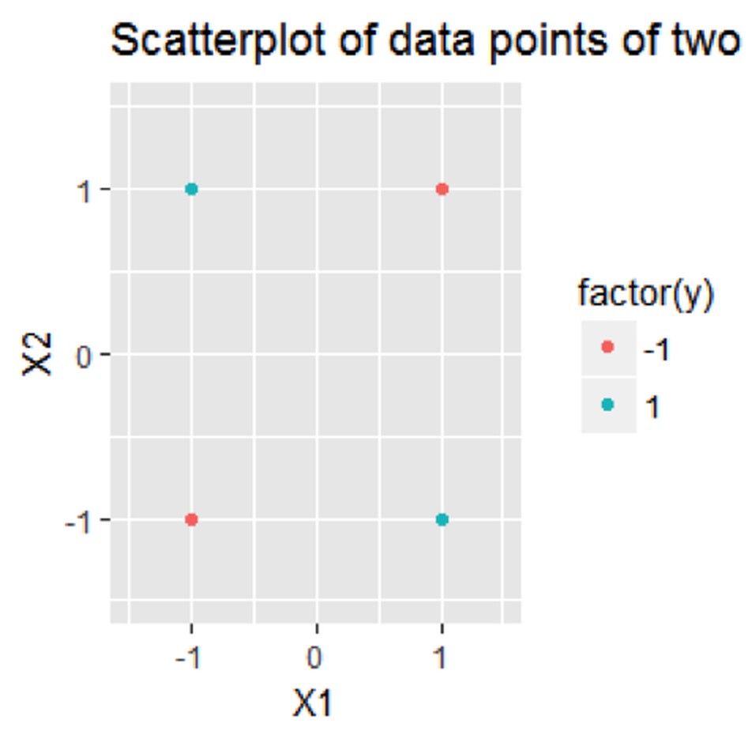 Figure 121: A linearly inseparable dataset
# For the toy problem
x = matrix(c(-1,-1,1,1,-1,1,-1,1), nrow = 4, ncol = 2)
y = c(-1,1,1,-1)
linear.train <- data.frame(x,y)
# Visualize the distribution of data points of two classes
require( 'ggplot2' )
p <- qplot( data=linear.train, X1, X2,
colour=factor(y),xlim = c(-1.5,1.5),
ylim = c(-1.5,1.5))
p <- p + labs(title = "Scatterplot of data points of two classes")
print(p)It is a nonlinear case. We use a nonlinear kernel function to build the SVM model.
Consider the polynomial kernel function with df=2
\[\begin{equation} K\left(\boldsymbol{x}_{n}, \boldsymbol{x}_{m}\right)=\left(\boldsymbol{x}_{n}^{T} \boldsymbol{x}_{m}+1\right)^{2}, \tag{77} \end{equation}\]
which corresponds to the transformation
\[\begin{equation} \phi\left(\boldsymbol{x}_{n}\right)=\left[1, \sqrt{2} x_{n, 1}, \sqrt{2} x_{n, 2}, \sqrt{2} x_{n, 1} x_{n, 2}, x_{n, 1}^{2}, x_{n, 2}^{2}\right]^{T}. \tag{78} \end{equation}\]
Based on Eq. (65), a specific formulation of the SVM model of this dataset is
\[\begin{equation} \begin{gathered} \max _{\boldsymbol{\alpha}} \sum_{n=1}^{4} \alpha_{n}-\frac{1}{2} \sum_{n=1}^{4} \sum_{m=1}^{4} \alpha_{n} \alpha_{m} y_{n} y_{m} K\left(\boldsymbol{x}_{n}, \boldsymbol{x}_{m}\right), \\ \text { Subject to: } \alpha_{n} \geq 0 \text { for } n=1,2, \dots, 4, \\ \text { and } \sum_{n=1}^{4} \alpha_{n} y_{n}=0. \end{gathered} \tag{79} \end{equation}\]
We calculate the kernel matrix as181 E.g., using Eq. (77), \(K\left(\boldsymbol{x}_{1}, \boldsymbol{x}_{2}\right) = \left(\boldsymbol{x}_{1}^{T} \boldsymbol{x}_{2}+1\right)^{2} = 3^2 = 9\). Readers can try other instances.
\[ \boldsymbol{K}=\left[\begin{array}{cccc}{9} & {1} & {1} & {1} \\ {1} & {9} & {1} & {1} \\ {1} & {1} & {9} & {1} \\ {1} & {1} & {1} & {9}\end{array}\right]. \]
We solve the quadratic programming problem182 I.e., use the R package quadprog. in Eq. (79) and get
\[\begin{equation} \alpha_{1}=\alpha_{2}=\alpha_{3}=\alpha_{4}=0.125. \tag{80} \end{equation}\]
In this particular case, since we can write up the transformation explicitly183 I.e., as shown in Eq. (78), we can write up \(\boldsymbol{w}\) explicitly as well184 It should be written as \(\widehat{\boldsymbol{w}}\), since it is an estimator of \(\boldsymbol{w}\). Here for simplicity we skip this.
\[ \boldsymbol{w}=\sum_{n=1}^{4} \alpha_{n} y_{n} \phi\left(\boldsymbol{x}_{n}\right)=[0,0,0,1 / \sqrt{2}, 0,0]^{T}. \]
For any given data point \(\boldsymbol{x}_{*}\), the explicit decision function is
\[ f\left(\boldsymbol{x}_{*}\right)=\boldsymbol{w}^{T} \phi\left(\boldsymbol{x}_{*}\right)=x_{*, 1} x_{*, 2}. \]
This is the decision boundary for a typical XOR problem185 Also known as exclusive or or exclusive disjunction, the XOR problem is a logical operation that outputs true only when inputs differ (e.g., one is true, the other is false)..
We then use R to build an SVM model on this dataset186 We use the R package kernlab—more details are shown in the section R Lab.. The R code is shown in below.
# Train a nonlinear SVM model
# polynomial kernel function with `df=2`
x <- cbind(1, poly(x, degree = 2, raw = TRUE))
coefs = c(1,sqrt(2),1,sqrt(2),sqrt(2),1)
x <- x * t(matrix(rep(coefs,4),nrow=6,ncol=4))
linear.train <- data.frame(x,y)
require( 'kernlab' )
linear.svm <- ksvm(y ~ ., data=linear.train,
type='C-svc', kernel='vanilladot', C=10, scale=c())The function alpha() returns the values of \(\alpha_{n} \text { for } n=1,2, \dots, 4\). Our results as shown in Eq. (80) are consistent with the results obtained by using R.187 If your answer is different, check if the alpha() function in the kernlab() package scales the vector \(\alpha\), i.e., to make the sum as \(1\).
alpha(linear.svm) #scaled alpha vector
## [[1]]
## [1] 0.125 0.125 0.125 0.125R Lab
The 7-Step R Pipeline. Step 1 and Step 2 get data into R and make appropriate preprocessing.
# Step 1 -> Read data into R workstation
library(RCurl)
url <- paste0("https://raw.githubusercontent.com",
"/analyticsbook/book/main/data/AD.csv")
data <- read.csv(text=getURL(url))
# Step 2 -> Data preprocessing
# Create X matrix (predictors) and Y vector (outcome variable)
X <- data[,2:16]
Y <- data$DX_bl
Y <- paste0("c", Y)
Y <- as.factor(Y)
data <- data.frame(X,Y)
names(data)[16] = c("DX_bl")
# Create a training data (half the original data size)
train.ix <- sample(nrow(data),floor( nrow(data)/2) )
data.train <- data[train.ix,]
# Create a testing data (half the original data size)
data.test <- data[-train.ix,]Step 3 puts together a list of candidate models.
# Step 3 -> gather a list of candidate models
# SVM: often to compare models with different kernels,
# different values of C, different set of variables
# Use different set of variables
model1 <- as.formula(DX_bl ~ .)
model2 <- as.formula(DX_bl ~ AGE + PTEDUCAT + FDG
+ AV45 + HippoNV + rs3865444)
model3 <- as.formula(DX_bl ~ AGE + PTEDUCAT)
model4 <- as.formula(DX_bl ~ FDG + AV45 + HippoNV)Step 4 uses \(10\)-fold cross-validation to evaluate the performance of the candidate models. Below we show how it works for one model. For other models, the same script could be used with a slight modification.
# Step 4 -> Use 10-fold cross-validation to evaluate the models
n_folds = 10
# number of fold
N <- dim(data.train)[1]
folds_i <- sample(rep(1:n_folds, length.out = N))
# evaluate the first model
cv_err <- NULL
# cv_err makes records of the prediction error for each fold
for (k in 1:n_folds) {
test_i <- which(folds_i == k)
# In each iteration, use one fold of data as the testing data
data.test.cv <- data.train[test_i, ]
# The remaining 9 folds' data form our training data
data.train.cv <- data.train[-test_i, ]
require( 'kernlab' )
linear.svm <- ksvm(model1, data=data.train.cv,
type='C-svc', kernel='vanilladot', C=10)
# Fit the linear SVM model with the training data
y_hat <- predict(linear.svm, data.test.cv)
# Predict on the testing data using the trained model
true_y <- data.test.cv$DX_bl
# get the the error rate
cv_err[k] <-length(which(y_hat != true_y))/length(y_hat)
}
mean(cv_err)
# evaluate the second model ...
# evaluate the third model ...
# ...Results are shown below.
## [1] 0.1781538
## [1] 0.1278462
## [1] 0.4069231
## [1] 0.1316923The second model is the best.
Step 5 uses the training data to fit a final model, through the ksvm() function in the package kernlab.
# Step 5 -> After model selection,
# use ksvm() function to build your final model
linear.svm <- ksvm(model2, data=data.train,
type='C-svc', kernel='vanilladot', C=10) Step 6 uses the fitted final model for prediction on the testing data.
# Step 6 -> Predict using your SVM model
y_hat <- predict(linear.svm, data.test)
 Figure 122: The ROC curve of the final SVM model
Figure 122: The ROC curve of the final SVM model
Step 7 evaluates the performance of the model.
# Step 7 -> Evaluate the prediction performance of the SVM model
# (1) The confusion matrix
library(caret)
confusionMatrix(y_hat, data.test$DX_bl)
# (2) ROC curve
library(pROC)
y_hat <- predict(linear.svm, data.test, type = 'decision')
plot(roc(data.test$DX_bl, y_hat),
col="blue", main="ROC Curve")Results are shown below. And the ROC curve is shown in Figure 122.
## Confusion Matrix and Statistics
##
## Reference
## Prediction c0 c1
## c0 131 27
## c1 11 90
##
## Accuracy : 0.8533
## 95% CI : (0.8042, 0.894)
## No Information Rate : 0.5483
## P-Value [Acc > NIR] : < 2e-16
##
## Kappa : 0.7002
##
## Mcnemar's Test P-Value : 0.01496
##
## Sensitivity : 0.9225
## Specificity : 0.7692
## Pos Pred Value : 0.8291
## Neg Pred Value : 0.8911
## Prevalence : 0.5483
## Detection Rate : 0.5058
## Detection Prevalence : 0.6100
## Balanced Accuracy : 0.8459
##
## 'Positive' Class : c0Beyond the 7-Step R Pipeline.
In the 7-step pipeline, we create a list of candidate models by different selections of predictors. There are other parameters, such as the kernel function, the value of \(C\), that should be concerned in model selection. The R package caret can automate the process of cross-validation and facilitate the optimization of multiple parameters simultaneously. Below is an example
library(RCurl)
url <- paste0("https://raw.githubusercontent.com",
"/analyticsbook/book/main/data/AD.csv")
AD <- read.csv(text=getURL(url))
str(AD)
#Train and Tune the SVM
n = dim(AD)[1]
n.train <- floor(0.8 * n)
idx.train <- sample(n, n.train)
AD[which(AD[,1]==0),1] = rep("Normal",length(which(AD[,1]==0)))
AD[which(AD[,1]==1),1] = rep("Diseased",length(which(AD[,1]==1)))
AD.train <- AD[idx.train,c(1:16)]
AD.test <- AD[-idx.train,c(1:16)]
trainX <- AD.train[,c(2:16)]
trainy= AD.train[,1]
## Setup for cross-validation:
# 10-fold cross validation
# do 5 repetitions of cv
# Use AUC to pick the best model
ctrl <- trainControl(method="repeatedcv",
repeats=1,
summaryFunction=twoClassSummary,
classProbs=TRUE)
# Use the expand.grid to specify the search space
grid <- expand.grid(sigma = c(0.002, 0.005, 0.01, 0.012, 0.015),
C = c(0.3,0.4,0.5,0.6)
)
# method: Radial kernel
# tuneLength: 9 values of the cost function
# preProc: Center and scale data
svm.tune <- train(x = trainX, y = trainy,
method = "svmRadial", tuneLength = 9,
preProc = c("center","scale"), metric="ROC",
tuneGrid = grid,
trControl=ctrl)
svm.tuneThen we can obtain the following results
## Support Vector Machines with Radial Basis Function Kernel
##
## 413 samples
## 15 predictor
## 2 classes: 'Diseased', 'Normal'
##
## Pre-processing: centered (15), scaled (15)
## Resampling: Cross-Validated (10 fold, repeated 1 times)
## Summary of sample sizes: 371, 372, 372, 371, 372, 372, ...
## Resampling results across tuning parameters:
##
## sigma C ROC Sens Spec
## 0.002 0.3 0.8929523 0.9121053 0.5932900
## 0.002 0.4 0.8927130 0.8757895 0.6619048
## 0.002 0.5 0.8956402 0.8452632 0.7627706
## 0.002 0.6 0.8953759 0.8192105 0.7991342
## 0.005 0.3 0.8965129 0.8036842 0.8036797
## 0.005 0.4 0.8996565 0.7989474 0.8357143
## 0.005 0.5 0.9020830 0.7936842 0.8448052
## 0.005 0.6 0.9032422 0.7836842 0.8450216
## 0.010 0.3 0.9030514 0.7889474 0.8541126
## 0.010 0.4 0.9058248 0.7886842 0.8495671
## 0.010 0.5 0.9060999 0.8044737 0.8541126
## 0.010 0.6 0.9077848 0.8094737 0.8450216
## 0.012 0.3 0.9032308 0.7781579 0.8538961
## 0.012 0.4 0.9049043 0.7989474 0.8538961
## 0.012 0.5 0.9063505 0.8094737 0.8495671
## 0.012 0.6 0.9104511 0.8042105 0.8586580
## 0.015 0.3 0.9060412 0.7886842 0.8493506
## 0.015 0.4 0.9068165 0.8094737 0.8495671
## 0.015 0.5 0.9109051 0.8042105 0.8541126
## 0.015 0.6 0.9118615 0.8042105 0.8632035
##
## ROC was used to select the optimal model using the largest
## value. The final values used for the model were
## sigma = 0.015 and C = 0.6.Ensemble learning
Rationale and formulation
Ensemble learning is another example of how we design better learning algorithms. The random forest model is a particular case of ensemble models. An ensemble model consists of \(K\) base models, denoted as, \(h_{1}, h_{2}, \ldots, h_{K}\). The algorithms to create ensemble models differ from each other in terms of the types of the base models, the way to create diversity in the base models, etc.
We have known the random forest model uses Bootstrap to create many datasets and builds a set of decision tree models. Some other ensemble learning methods, such as the AdaBoost model, also use decision tree as the base model. The two differ in the way to build a diverse set of base models. The framework of AdaBoost is illustrated in Figure 123. AdaBoost employs a sequential process to build its base models: it uses the original dataset (when the weights for the data points are equal) to build a decision tree; then it uses the decision tree to predict on the dataset, obtains the errors, and updates the weights of the data points188 I.e., those data points that are wrongly classified will gain higher weights.; then it builds another decision tree on the same dataset with the new weights, obtains the errors, and updates the weights of the data points again. The sequential process continues, until a given number of decision trees are built. This sequential process is designed for adaptability: later models focus more on the hard data points that present challenges for previous base models to achieve good prediction performance. Interested readers may find a formal presentation of the AdaBoost algorithm in the Remarks section.
Figure 123: A general framework of AdaBoost
The ensemble learning is flexible, given that any model could be a base model. And there are a variety of ways to resample or perturb a dataset to create a diverse set of base models. Like SVM, the ensemble learning is another approach to have a built-in mechanism to reduce the risk of overfitting. Here, we provide a discussion of this built-in mechanism using the framework proposed by Dietterich, where three perspectives (statistical, computational, and representational) were used to explain why ensemble methods could lead to robust performance. Each perspective is described in details below.
 Figure 124: Ensemble learning approximates the true model with a combination of good models (statistical perspective)
Figure 124: Ensemble learning approximates the true model with a combination of good models (statistical perspective)
Statistical perspective. The statistical reason is illustrated in Figure 124. \(\mathcal{H}\) is the model space where a learning algorithm searches for the best model guided by the training data. A model corresponds to a point in Figure 124, e.g., the point labelled as \(f\) is the true model. When the data is limited and the best models are multiple, the problem is a statistical one and we need to make an optimal decision despite the uncertainty. This is illustrated by the inner circle in Figure 124. By building an ensemble of multiple base models, e.g., the \(h_{1}, h_{2}, \text { and } h_{3}\) in Figure 124, the average of the models is a good approximation to the true model \(f\). This combined solution, comparing with other models that only identify one best model, has less variance, and therefore, could be more robust.
 Figure 125: Ensemble learning provides a robust coverage of the true model (computational perspective)
Figure 125: Ensemble learning provides a robust coverage of the true model (computational perspective)
Computational perspective. A computational perspective is shown in Figure 125. This perspective concerns the way we build base models. Often greedy approaches such as the recursive splitting procedure are used to solve optimization problems in training machine learning models. This is optimal only in a local sense189 E.g., to grow a decision tree, at each node, the node is split according to the maximum information gain at this particular node. To grow a decision tree model, a sequence of splits is needed. Optimization of all the splits simultaneously leads to a global optimal solution, but it is a NP-hard problem that is not solved yet. Optimization of each split is more practical, only we know that the local optimal solution may result in suboptimal situations for further splitting of descendant nodes.. As a remedy to this problem, the ensemble learning initializes the learning algorithm (that is greedy and heuristic) from multiple locations in \(\mathcal{H}\), i.e., as shown in Figure 125, three models are identified by the same algorithm that starts from different initial points. Exploring multiple trajectories help us find a robust coverage of the true model \(f\).
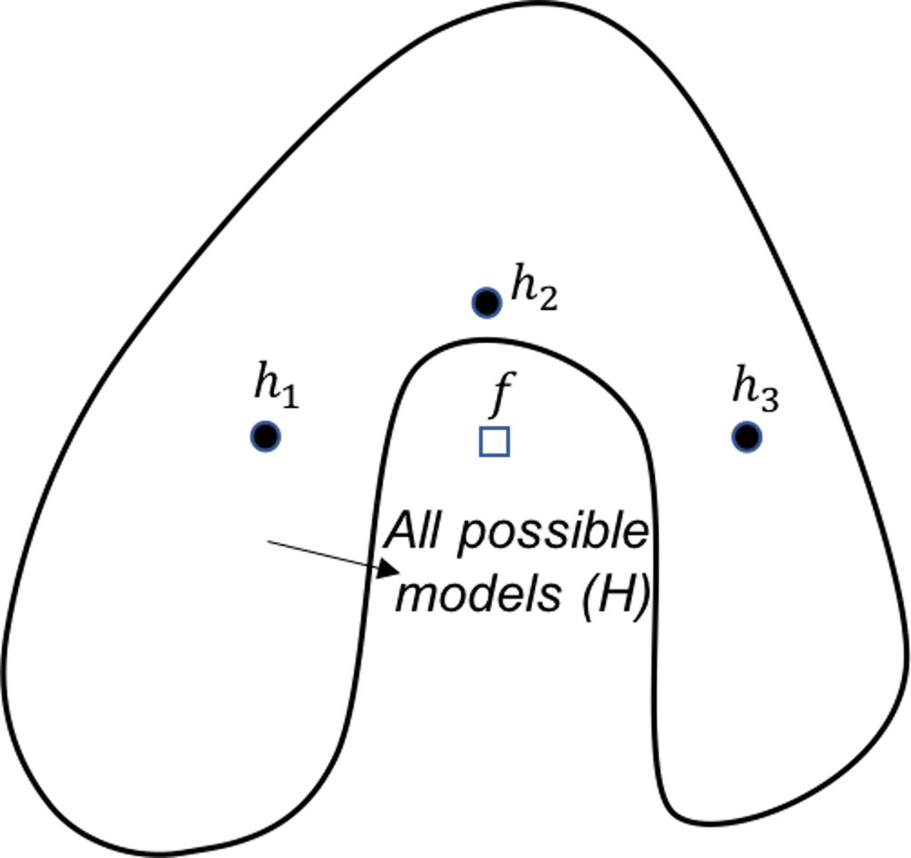 Figure 126: Ensemble learning approximates the true model with a combination of good models (representational perspective)
Representational perspective. Due to the size of the dataset or the limitations of a model, sometimes the model space \(\mathcal{H}\) does not cover the true model, i.e., in Figure 126 the true model is outside the region of \(\mathcal{H}\). This is not uncommon in real-world problems, for example, linear models cannot learn nonlinear patterns, or decision trees have difficulty in learning linear patterns. Using multiple base models may provide an approximation of the true model that is outside \(\mathcal{H}\), as shown in Figure 126.
Analysis of the decision tree, random forests, and AdaBoost
The three models are analyzed using the three perspectives. Results are shown in Table 31. In-depth discussions are provided in the following.
Single decision tree. A single decision tree lacks the capability to overcome overfitting in terms of each of the three perspectives. From the statistical perspective, a decision tree algorithm constructs each node using the maximum information gain at that particular node only; thus, random errors in data may mislead subsequent splits. On the other hand, when the training dataset is limited, many models may perform equally well, since there are not enough data to distinguish these models. This results in a large inner circle as shown in Figure 124. With the true model \(f\) hidden in a large area in \(\mathcal{H}\), and the sensitivity of the learning algorithm to random noises in data (an issue from the computational perspective), the learning algorithm may end up with a model far away from the true model \(f\).
Table 31: Analysis of the decision tree (DT), random forests (RF), and AdaBoost using the three perspectives
| Perspectives | DT | RF | AdaBoost |
|---|---|---|---|
| Statistical | No | Yes | No |
| Computational | No | Yes | Yes |
| Representational | No | No | Yes |
From the representational perspective, there are also limitations of the decision tree model; i.e., in Chapter 2 we have shown that the decision tree model has difficulty in modeling linear patterns in the data.

Figure 127: Analysis of the random forest in terms of the statistical (left), computational (middle), and representational (right) perspectives
Random forests. From the statistical perspective, the random forest model is a good ensemble learning model. As shown in Figure 127 (left), the way the random forest model grows the base models is to construct the circle of dotted line. Models located in this circle of dotted line have reasonably good accuracy. These models may not be the best models with great accuracy, they do provide a good coverage/approximation of the true model.
Note that, if we could directly build a model that is close to \(f\), or build many best models that are located in the circle of dotted line, that would be ideal. However, both tasks are challenging. Comparing with these ideal goals, the random forest model is more pragmatic. It cleverly uses simple190 As we have seen, Simple is a complex word. techniques of randomness, i.e., the Bootstrap and the random selection of variables, that are robust, effective, and easy to implement. It grows a set of models that are not the best, but good models. Most importantly, these good models complement each other191 In practice, the challenge to grow a set of best models is that it usually ends up with these best models more or less being the same..
Random forest model can also address the computational issue. As shown in Figure 127 (middle), while the circle of solid line (i.e., that represents the space of best models) is computationally difficult to reach, averaging multiple models could provide a good approximation.
It seems that the random forest models do not actively solve the representational issue. If the true model \(f\) lies outside \(\mathcal{H}\), as shown in Figure 127 (right), averaging multiple models won’t necessarily approximate the true model.
 Figure 128: Analysis of the AdaBoost in terms of the representational perspective
Figure 128: Analysis of the AdaBoost in terms of the representational perspective
AdaBoost. Similar to random forest, AdaBoost solves the computational issue by generating many base models. The difference is that, AdaBoost actively solves the representational issue, i.e., it tries to do better on the hard data points where the previous base models fail to predict correctly. For each base model in AdaBoost, the training dataset is not resampled by Bootstrap, but weighted based on the error rates from previous base models, i.e., data points that are difficult to be correctly predicted by the previous models are given more weights in the new training dataset for the subsequent base model. Figure 128 shows this sequential learning process helps AdaBoost identify more models around the true model, and put more weight to the models that are closer to the true model.
But AdaBoost is not as good as random forest in terms of addressing the statistical issue. As AdaBoost aggressively solves the representational issue and allows its base models to be impacted by some hard data points192 This is a common root cause for a model to overfit the training data, if the model tries too hard on a particular training data., it is more likely to overfit, and may be less stable than the random forest models that place more emphasis on addressing the statistical issue.
R Lab
We use the AD dataset to study decision tree (rpart package), random forests (randomForest package), and AdaBoost (gbm package).
First, we evaluate the overall performance of the three models. Results are shown in Figure 129, produced by the following R code.
 Figure 129: Boxplots of the classification error rates for single decision tree, random forest, and AdaBoost
Figure 129: Boxplots of the classification error rates for single decision tree, random forest, and AdaBoost
theme_set(theme_gray(base_size = 15))
library(randomForest)
library(gbm)
library(rpart)
library(dplyr)
library(RCurl)
url <- paste0("https://raw.githubusercontent.com",
"/analyticsbook/book/main/data/AD.csv")
data <- read.csv(text=getURL(url))
rm_indx <- which(colnames(data) %in% c("ID", "TOTAL13",
"MMSCORE"))
data <- data[, -rm_indx]
data$DX_bl <- as.factor(data$DX_bl)
set.seed(1)
err.mat <- NULL
for (K in c(0.2, 0.3, 0.4, 0.5, 0.6, 0.7)) {
testing.indices <- NULL
for (i in 1:50) {
testing.indices <- rbind(testing.indices, sample(nrow(data),
floor((1 - K) * nrow(data))))
}
for (i in 1:nrow(testing.indices)) {
testing.ix <- testing.indices[i, ]
target.testing <- data$DX_bl[testing.ix]
tree <- rpart(DX_bl ~ ., data[-testing.ix, ])
pred <- predict(tree, data[testing.ix, ], type = "class")
error <- length(which(as.character(pred) !=
target.testing))/length(target.testing)
err.mat <- rbind(err.mat, c("tree", K, error))
rf <- randomForest(DX_bl ~ ., data[-testing.ix, ])
pred <- predict(rf, data[testing.ix, ])
error <- length(which(as.character(pred) !=
target.testing))/length(target.testing)
err.mat <- rbind(err.mat, c("RF", K, error))
data1 <- data
data1$DX_bl <- as.numeric(as.character(data1$DX_bl))
boost <- gbm(DX_bl ~ ., data = data1[-testing.ix, ],
dist = "adaboost",interaction.depth = 6,
n.tree = 2000) #cv.folds = 5,
# best.iter <- gbm.perf(boost,method='cv')
pred <- predict(boost, data1[testing.ix, ], n.tree = 2000,
type = "response") # best.iter n.tree = 400,
pred[pred > 0.5] <- 1
pred[pred <= 0.5] <- 0
error <- length(which(as.character(pred) !=
target.testing))/length(target.testing)
err.mat <- rbind(err.mat, c("AdaBoost", K, error))
}
}
err.mat <- as.data.frame(err.mat)
colnames(err.mat) <- c("method", "training_percent", "error")
err.mat <- err.mat %>% mutate(training_percent =
as.numeric(as.character(training_percent)), error =
as.numeric(as.character(error)))
ggplot() + geom_boxplot(data = err.mat %>%
mutate(training_percent = as.factor(training_percent)),
aes(y = error, x = training_percent,
color = method)) + geom_point(size = 3)Figure 129 shows that the decision tree is less accurate than the other two ensemble methods. The random forest has lower error rates than AdaBoost in general. As the training data size increases, the gap between random forest and AdaBoost decreases. This may indicate that when the training data size is small, the random forest is more stable due to its advantage of addressing the statistical issue. Overall, all models become better as the percentage of the training data increases.
 Figure 130: Boxplots of the classification error rates for AdaBoost with a different number of trees
Figure 130: Boxplots of the classification error rates for AdaBoost with a different number of trees
We adjust the number of trees in AdaBoost and show the results in Figure 130. It can be seen that the error rates first go down as the number of trees increases to \(400\). Then the error rates increase, and decrease again. The unstable relationship between the error rates with the number of trees of AdaBoost indicates that AdaBoost is impacted by some particularity of the dataset and seems less robust than random forest.
err.mat <- NULL
set.seed(1)
for (i in 1:nrow(testing.indices)) {
data1 <- data
data1$DX_bl <- as.numeric(as.character(data1$DX_bl))
ntree.v <- c(200, 300, 400, 500, 600, 800, 1000, 1200,
1400, 1600, 1800, 2000)
for (j in ntree.v) {
boost <- gbm(DX_bl ~ ., data = data1[-testing.ix, ],
dist = "adaboost", interaction.depth = 6,
n.tree = j)
# best.iter <- gbm.perf(boost,method='cv')
pred <- predict(boost, data1[testing.ix, ], n.tree = j,
type = "response")
pred[pred > 0.5] <- 1
pred[pred <= 0.5] <- 0
error <- length(which(as.character(pred) !=
target.testing))/length(target.testing)
err.mat <- rbind(err.mat, c("AdaBoost", j, error))
}
}
err.mat <- as.data.frame(err.mat)
colnames(err.mat) <- c("method", "num_trees", "error")
err.mat <- err.mat %>%
mutate(num_trees = as.numeric(as.character(num_trees)),
error = as.numeric(as.character(error)))
ggplot() + geom_boxplot(data = err.mat %>%
mutate(num_trees = as.factor(num_trees)),
aes(y = error, x = num_trees, color = method)) +
geom_point(size = 3)We repeat the experiment on random forest and show the result in Figure 131. Similar to AdaBoost, when the number of trees is small, the random forest has higher error rates. Then, the error rates decrease as more trees are added. And the error rates become stable when more trees are added. The random forest handles the statistical issue better than the AdaBoost.
 Figure 131: Boxplots of the classification error rates for random forests with a different number of trees
Figure 131: Boxplots of the classification error rates for random forests with a different number of trees
err.mat <- NULL
set.seed(1)
for (i in 1:nrow(testing.indices)) {
testing.ix <- testing.indices[i, ]
target.testing <- data$DX_bl[testing.ix]
ntree.v <- c(5, 10, 50, 100, 200, 400, 600, 800, 1000)
for (j in ntree.v) {
rf <- randomForest(DX_bl ~ ., data[-testing.ix, ], ntree = j)
pred <- predict(rf, data[testing.ix, ])
error <- length(which(as.character(pred) !=
target.testing))/length(target.testing)
err.mat <- rbind(err.mat, c("RF", j, error))
}
}
err.mat <- as.data.frame(err.mat)
colnames(err.mat) <- c("method", "num_trees", "error")
err.mat <- err.mat %>% mutate(num_trees =
as.numeric(as.character(num_trees)),
error = as.numeric(as.character(error)))
ggplot() + geom_boxplot(data =
err.mat %>% mutate(num_trees = as.factor(num_trees)),
aes(y = error, x = num_trees, color = method)) +
geom_point(size = 3)Building on the result shown in Figure 131, we pursue a further study of the behavior of random forest. Recall that, in random forest, there are two approaches to increase diversity, one is to Bootstrap samples for each tree, while another is to conduct random feature selection for splitting each node.
 Figure 132: Boxplots of the classification error rates for random forest with a different sample sizes
Figure 132: Boxplots of the classification error rates for random forest with a different sample sizes
First, we investigate the effectiveness of the use of Bootstrap. We change the sampling strategy from sampling with replacement to sampling without replacement and change the sampling size193 The sampling size is the sample size of the Bootstrapped dataset. from \(10\%\) to \(100\%\). The number of features tested at each node is kept at the default value, i.e., \(\sqrt{p}\), where \(p\) is the number of features. Figure 132 shows that the increased sample size has an impact on the error rates.
err.mat <- NULL
set.seed(1)
for (i in 1:nrow(testing.indices)) {
testing.ix <- testing.indices[i, ]
target.testing <- data$DX_bl[testing.ix]
sample.size.v <- seq(0.1, 1, by = 0.1)
for (j in sample.size.v) {
sample.size <- floor(nrow(data[-testing.ix, ]) * j)
rf <- randomForest(DX_bl ~ ., data[-testing.ix, ],
sampsize = sample.size,
replace = FALSE)
pred <- predict(rf, data[testing.ix, ])
error <- length(which(as.character(pred) !=
target.testing))/length(target.testing)
err.mat <- rbind(err.mat, c("RF", j, error))
}
}
err.mat <- as.data.frame(err.mat)
colnames(err.mat) <- c("method", "sample_size", "error")
err.mat <- err.mat %>% mutate(sample_size =
as.numeric(as.character(sample_size)),
error = as.numeric(as.character(error)))
ggplot() + geom_boxplot(data = err.mat %>%
mutate(sample_size = as.factor(sample_size)),
aes(y = error, x = sample_size,color = method)) +
geom_point(size = 3)
 Figure 133: Boxplots of the classification error rates for random forest with a different number of features
Figure 133: Boxplots of the classification error rates for random forest with a different number of features
We then investigate the effectiveness of using random selection of features for node splitting. We fix the sampling size to be the same size as the original dataset, and change the number of features to be selected. Results are shown in Figure 133. When the number of features reaches \(11\), the error rate starts to increase. This is probably because of the loss of the diversity of the trees, i.e., the more features to be used, the less randomness is introduced into the trees.
err.mat <- NULL
set.seed(1)
for (i in 1:nrow(testing.indices)) {
testing.ix <- testing.indices[i, ]
target.testing <- data$DX_bl[testing.ix]
num.fea.v <- 1:(ncol(data) - 1)
for (j in num.fea.v) {
sample.size <- nrow(data[-testing.ix, ])
rf <- randomForest(DX_bl ~ ., data[-testing.ix, ],
mtry = j, sampsize = sample.size,
replace = FALSE)
pred <- predict(rf, data[testing.ix, ])
error <- length(which(as.character(pred) !=
target.testing))/length(target.testing)
err.mat <- rbind(err.mat, c("RF", j, error))
}
}
err.mat <- as.data.frame(err.mat)
colnames(err.mat) <- c("method", "num_fea", "error")
err.mat <- err.mat %>% mutate(num_fea
= as.numeric(as.character(num_fea)),
error = as.numeric(as.character(error)))
ggplot() + geom_boxplot(data =
err.mat %>% mutate(num_fea = as.factor(num_fea)),
aes(y = error, x = num_fea, color = method)) +
geom_point(size = 3)Remarks
Is SVM a more complex model?
In the preface of his seminar book194 Vapnik, V., The Nature of Statistical Learning Theory, Springer, 2000., Vladimir Vapnik wrote that “…during the last few years at different computer science conferences, I heard reiteration of the following claim: ‘Complex theories do not work, simple algorithms do’…this is not true…Nothing is more practical than a good theory….” He created the concept of VC dimension to specifically characterize his concept of the complexity of a model.
A model is often perceived to be complex. The SVM model looks more complex than the linear regression model. It asks us to characterize the margin using model parameters, write the optimization formulation, learn the trick of kernel function, and understand the support vectors and the slack variables for the nonseparable case. But, don’t forget that the reason for a model to look simple is probably only because this model may presuppose stronger conditions, too strong that we forget they are assumptions.
It is fair to say that a model is more complex if it provides more capacity to represent the statistical phenomena in the training data. In other words, a more complex model is more flexible to respond to subtle patterns in the data by adjusting itself. In this sense, SVM with kernel functions is a complex model since it can model nonlinearity in the data. But on the other hand, comparing the SVM model with other linear models as shown in Figure 134, it is hard to tell that the SVM model is simpler, but it is clear that it is more stubborn; because of its pursuit of maximum margin, it ends up with one model only. If you are looking for an example of an idea that is radical and conservative, flexible and disciplined, this is it.
Figure 134: (Left) some other linear models; (b) the SVM model

Is SVM a neural network model?
Another interesting fact about SVM is that, when it was developed, it was named “support vector network”195 Cortes, C. and Vapnik, V., Support-vector networks, Machine Learning, Volume 20, Issue 3, Pages 273–297, 1995.. In other words, it has a connection with the artificial neural network that will be discussed in Chapter 10. This is revealed in Figure 135. Readers who know neural network models are encouraged to write up the mathematical model of the SVM model following the neural network format as shown in Figure 135.
Figure 135: SVM as a neural network model

Derivation of the margin
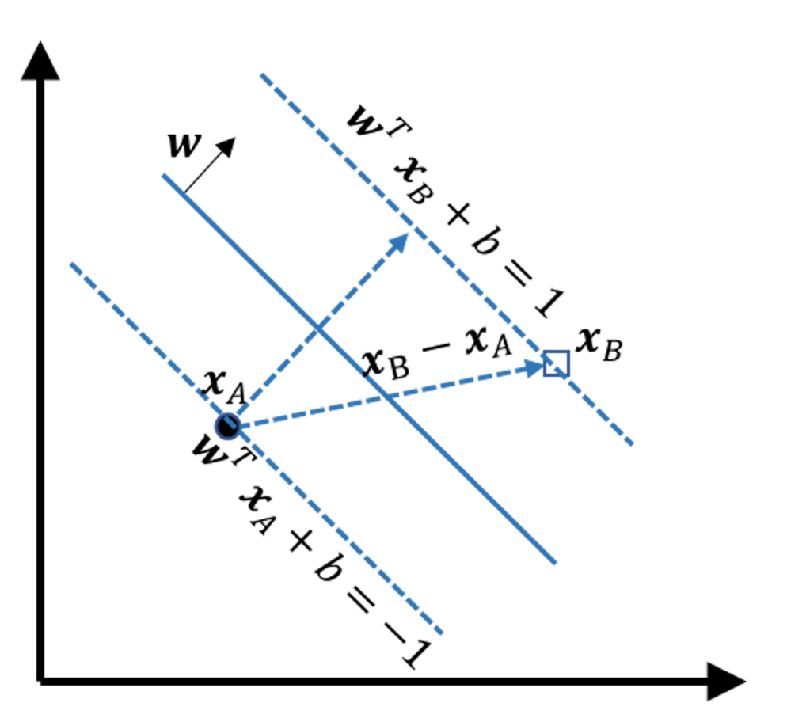 Figure 136: Illustration of how to derive the margin
Consider any two points on the two margins, e.g., the \(\boldsymbol{x}_A\) and \(\boldsymbol{x}_B\) in Figure 136. The margin width is equal to the projection of the vector \(\overrightarrow{A B} = \boldsymbol{x}_B - \boldsymbol{x}_A\) on the direction \(\boldsymbol{w}\), which is
\[\begin{equation} \text{margin } = \frac{ (\boldsymbol{x}_B - \boldsymbol{x}_A) \cdot \vec{\boldsymbol{w}}}{\|\boldsymbol{w}\|}. \tag{81} \end{equation}\]
It is known that
\[ \boldsymbol{w}^{T} \boldsymbol{x}_B + b =1, \]
and
\[ \boldsymbol{w}^{T} \boldsymbol{x}_A + b = -1. \]
Thus, Eq. (81) is rewritten as
\[\begin{equation} \text{margin } = \frac{2}{\|\boldsymbol{w}\|}. \tag{82} \end{equation}\]
Why the nonzero \(\alpha_n\) are the support vectors
Theoretically, to understand why the nonzero \(\alpha_n\) are the support vectors, we can use the Karush–Kuhn–Tucker (KKT) conditions196 Bertsekas, D., Nonlinear Programming: 3rd Edition, Athena Scientific, 2016.. Based on the complementary slackness as one of the KKT conditions, the following equations must hold
\[ \alpha_{n}\left[y_{n}\left(\boldsymbol{w}^{T} \boldsymbol{x}_{n}+b\right)-1\right]=0 \text {, for } n=1,2, \dots, N. \]
Thus, for any data point \(\boldsymbol{x}_n\), it is either
\[ \alpha_{n} = 0 \text {, and } y_{n}\left(\boldsymbol{w}^{T} \boldsymbol{x}_{n}+b\right)-1 \neq 0; \]
or
\[ \alpha_{n} \neq 0 \text {, and } y_{n}\left(\boldsymbol{w}^{T} \boldsymbol{x}_{n}+b\right)-1 = 0. \]
Revisiting Eq. (58) or Figure 116, we know that only the support vectors have \(\alpha_{n} \neq 0\) and \(y_{n}\left(\boldsymbol{w}^{T} \boldsymbol{x}_{n}+b\right)-1 = 0\).
AdaBoost algorithm
The specifics of the AdaBoost algorithm shown in Figure 123 are described below.
Input: \(N\) data points, \(\left(\boldsymbol{x}_{1}, y_{1}\right),\left(\boldsymbol{x}_{2}, y_{2}\right), \ldots,\left(\boldsymbol{x}_{N}, y_{N}\right)\).
Initialization: Initialize equal weights for all data points \[ \boldsymbol{w}_{0}=\left(\frac{1}{N}, \ldots, \frac{1}{N}\right).\]
At iteration \(t\):
Step 1: Build model \(h_t\) on the dataset with weights \(\boldsymbol{w}_{t-1}\).
Step 2: Calculate errors using \(h_t\) \[ \epsilon_{t}=\sum_{n=1}^{N} w_{t, n}\left\{h_{t}\left(x_{n}\right) \neq y_{n}\right\}.\]
Step 3: Update weights of the data points \[ \boldsymbol{w}_{t+1, i}=\frac{w_{t, i}}{Z_{t}} \times \left\{\begin{array}{c}{e^{-\alpha_{t}} \text { if } h_{t}\left(x_{n}\right)=y_{n}} \\ {e^{\alpha_{t}} \text { if } h_{t}\left(x_{n}\right) \neq y_{n}}.\end{array} \right.\] Here, \[Z_{t} \text { is a normalization factor so that } \sum_{n=1}^{N} w_{t+1, n}=1,\] and \[ \alpha_{t}=\frac{1}{2} \ln \left(\frac{1-\epsilon_{t}}{\epsilon_{t}}\right).\]
Iterations: Repeat Step 1 to Step 3 for \(T\) times, to get \(h_1\), \(h_2\), \(h_3\), \(\ldots\), \(h_T\).
Output: \[ H(x)=\operatorname{sign}\left(\sum_{t=1}^{T} \alpha_{t} h_{t}(x)\right).\]
When all the base models are trained, the aggregation of these models in predicting on a data instance \(\boldsymbol{x}\) is a weighted sum of base models
\[ h(\boldsymbol{x})=\sum_{i} \gamma_{i} h_{i}(\boldsymbol{x}), \]
where the weight \(\gamma_{i}\) is proportional to the accuracy of \(h_{i}(x)\) on the training dataset.
Exercises
 Figure 137: How many support vectors are needed?
Figure 137: How many support vectors are needed?
To build a linear SVM on the data shown in Figure 137, how many support vectors are needed (use visual inspection)?
Let’s consider the dataset in Table 32. Please (a) draw scatterplots and identify the support vectors if you’d like to build a linear SVM classifier; (b) manually derive the alpha values (i.e., the \(\alpha_i\)) for the support vectors and the offset parameter \(b\); (c) derive the weight vector (i.e., the \(\hat{\boldsymbol{w}}\)) of the SVM model; and (d) predict on the new dataset and fill in the column of \(y\) in Table 33.
Table 32: Dataset for building a SVM model in Q2
| ID | \(x_1\) | \(x_2\) | \(x_3\) | \(y\) |
|---|---|---|---|---|
| \(1\) | \(4\) | \(1\) | \(1\) | \(1\) |
| \(2\) | \(4\) | \(-1\) | \(0\) | \(1\) |
| \(3\) | \(8\) | \(2\) | \(1\) | \(1\) |
| \(4\) | \(-2.5\) | \(0\) | \(0\) | \(-1\) |
| \(5\) | \(0\) | \(1\) | \(1\) | \(-1\) |
| \(6\) | \(-0.3\) | \(-1\) | \(0\) | \(-1\) |
| \(7\) | \(2.5\) | \(-1\) | \(1\) | \(-1\) |
| \(8\) | \(-1\) | \(1\) | \(0\) | \(-1\) |
Table 33: Test data points for the SVM model in Q2
| ID | \(x_1\) | \(x_2\) | \(x_3\) | \(y\) |
|---|---|---|---|---|
| \(9\) | \(5.4\) | \(1.2\) | \(2\) | |
| \(10\) | \(1.5\) | \(-2\) | \(3\) | |
| \(11\) | \(-3.4\) | \(1\) | \(-2\) | |
| \(12\) | \(-2.2\) | \(-1\) | \(-4\) |
Follow up on the dataset used in Q2. Use the R pipeline for SVM on this data. Compare the alpha values (i.e., the \(\alpha_i\)), the offset parameter \(b\), and the weight vector (i.e., the \(\hat{\boldsymbol{w}}\)) from R and the result by your manual calculation in Q2.
Modify the R pipeline for Bootstrap and incorporate the
glmpackage to write your own version of ensemble learning that ensembles a set of logistic regression models. Test it using the same data that has been used in the R lab for logistic regression models.
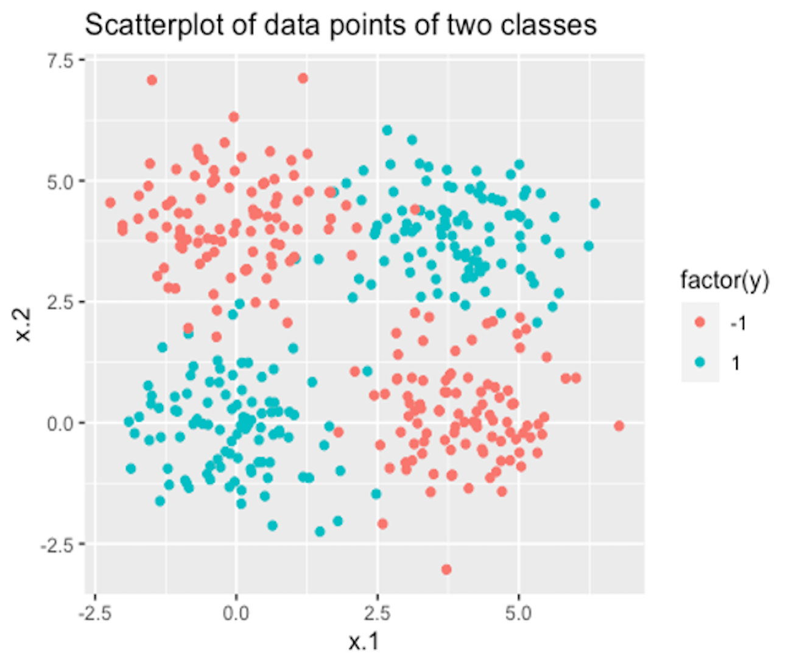 Figure 138: A dataset with two classes
Use the dataset
PimaIndiansDiabetes2in themlbenchR package, run the R SVM pipeline on it, and summarize your findings.Use R to generate a dataset with two classes as shown in Figure 138. Then, run SVM model with a properly selected kernel function on this dataset.
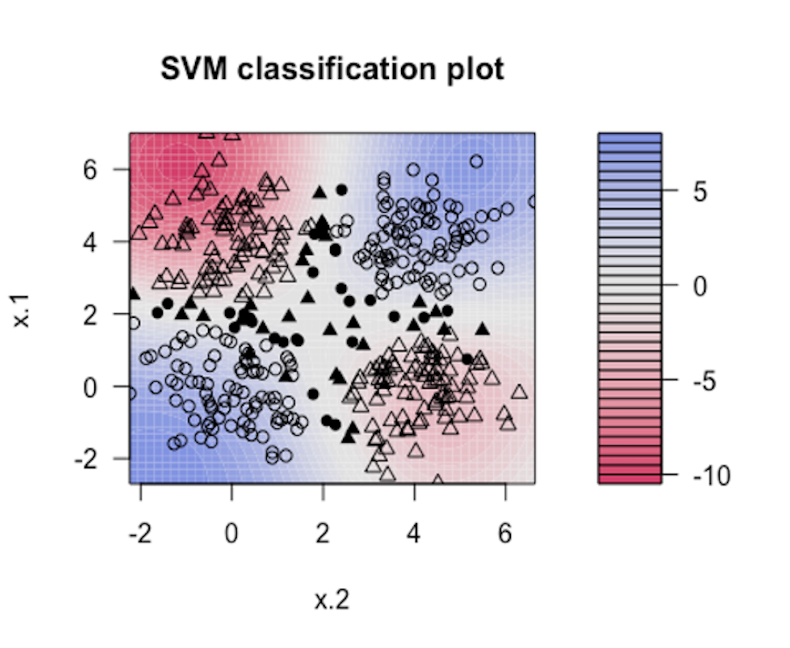 Figure 139: Visualization of the decision boundary of an SVM model with Gaussian kernel
- Follow up on the dataset generated in Q6. Try visualizing the decision boundaries by different kernel functions such as linear, Laplace, Gaussian, and polynomial kernel functions. Below is one example using Gaussian kernel with its bandiwidth parameter \(\gamma = 0.2\).197 In the following R code, the bandiwidth parameter is specified as
sigma=0.2. Result is shown in Figure 139. The blackened points are support vectors, and the contour reflects the characteristics of the decision boundary.
The R code for generating Figure 139 is shown below.
Please follow this example and visualize linear, Laplace, Gaussian, and polynomial kernel functions with different parameter values.
require( 'kernlab' )
rbf.svm <- ksvm(y ~ ., data=data, type='C-svc', kernel='rbfdot',
kpar=list(sigma=0.2), C=100, scale=c())
plot(rbf.svm, data=data)Chapter 8. Scalability: LASSO & PCA
Overview
Chapter 8 is about Scalability. LASSO and PCA will be introduced. LASSO stands for the least absolute shrinkage and selection operator, which is a representative method for feature selection. PCA stands for the principal component analysis, which is a representative method for dimension reduction. Both methods can reduce the dimensionality of a dataset but follow different styles. LASSO, as a feature selection method, focuses on deletion of irrelevant or redundant features. PCA, as a dimension reduction method, combines the features into a smaller number of aggregated components (a.k.a., the new features). A remarkable difference between the two approaches is that, while both create a dataset with a smaller dimensionality, in PCA the original features are used to derive the new features198 As a result, no feature is discarded..
LASSO
Rationale and formulation
 Figure 140: A line is not a model
Figure 140: A line is not a model
Two points determine a line, as shown in Figure 140. It shares the same geometric form as a linear regression model, but it is a deterministic geometric pattern and has nothing to do with error.
 Figure 141: Revisit the linear regression model
Figure 141: Revisit the linear regression model
With one more data point, magic happens: as shown in Figure 141, now we can estimate the residuals and study the systematic patterns of error. The line in Figure 141 becomes a statistical model.
The two lines in Figures 140 and 141, one is a deterministic pattern, while another is a statistical model, are like homonym. The different meanings share the same form of their signifier (e.g., like the word bass that means a certain sound that is low and deep, or a type of fish).
The error is a defining component of a statistical model. It models the noise in the data. In an application context, understanding the noise and knowing how much proportion the noise contributes to the total variation of the dataset is important knowledge. And, to derive the p-values of the regression coefficients, we need the noise so that we can compare the strength of the estimated coefficients with the noise to evaluate if the estimated coefficients are significantly different from random manifestation (i.e., if we cannot model the noise, then we have no basis to define what is random manifestation.).
To model a linear regression model, we need enough data points to estimate the error. For the simple example when there is only one predictor \(x\), as shown in Figures 140 and 141, we would need at least \(3\) data points to estimate the error199 While this is obvious from Figures 140 and 141, we can also obtain the conclusion by derivation. I.e., given two data points, \((x_1, y_1)\) and \((x_2, y_2)\) we could write two equations, \(y_1 = \beta_{0}+\beta_{1} x_1\) and \(y_2 = \beta_{0}+\beta_{1} x_2\).. This is just enough to solve for the \(2\) regression coefficients. Consider a problem with \(10\) variables, what is the minimum number of data points needed to enable the estimation of error200 The answer is \(12\). Suppose that we only have \(11\) data points. The regression line is defined by \(11\) regression coefficients. For each data point, we can write up an equation. Thus, \(11\) data points are just enough to estimate the \(11\) regression coefficients, leaving no room for estimating errors.?
From the examples aforementioned, we could deduce that the number of data points, i.e., denoted as \(N\), needs to be larger than the number of variables, i.e., denoted as \(p\). This is barely a minimum requirement of linear regression, as we haven’t asked how many data points are needed to ensure high-quality estimation of the parameters. In classic settings in statistics, \(N\) is assumed to be much larger than \(p\) in order to prove asymptotics—a common approach to prove a statistical model is valid. Practically, linear regression model finds difficulty in applications where the ratio \(N/p\) is small. In recent years, there are applications where the number of data points is even smaller than the number of variables, i.e., commonly referred to as \(N < p\) problems.
When increasing \(N\) is not always a feasible option, reducing \(p\) is a necessity. Some variables may be irrelevant or simply noise. Even if all variables are statistically informative, when considered as a whole, some of them may be redundant, and some are weaker than others. In those scenarios, there is room for us to wriggle with the problematic dataset and improve on the ratio \(N/p\) by reducing \(p\).
LASSO was invented in 1996 to sparsify the linear regression model and allow the regression model to select significant predictors automatically201 Tibshirani, R. Regression shrinkage and selection via the Lasso, Journal of the Royal Statistical Society (Series B), Volume 58, Issue 1, Pages 267-288, 1996..
Remember that, to estimate \(\boldsymbol{\beta}\), the least squares estimation of linear regression is
\[\begin{equation} \boldsymbol{\hat \beta} = \arg\min_{\boldsymbol \beta} { (\boldsymbol{y}-\boldsymbol{X} \boldsymbol{\beta})^{T}(\boldsymbol{y}-\boldsymbol{X} \boldsymbol{\beta}), } \tag{83} \end{equation}\]
where \(\boldsymbol{y} \in \mathbb{R}^{N \times 1}\) is the measurement vector of the outcome variable, \(\boldsymbol{X} \in \mathbb{R}^{N \times p}\) is the data matrix of the \(N\) measurement vectors of the \(p\) predictors, \(\boldsymbol \beta \in \mathbb{R}^{p \times 1}\) is the regression coefficient vector202 Here, we assume that the data is normalized/standardized and no intercept coefficient \(\beta_0\) is needed. Normalization means \(\sum_{n=1}^N x_{nj}/N=0\), \(\sum_{n=1}^N x_{ij}^2/N=1\) for \(j=1,2,\dots,p\) and \(\sum_{n=1}^N y_n/N=0\). Normalization is a common practice, and some R packages automatically normalize the data as a default preprocessing step before the application of a model..
The formulation of LASSO is
\[\begin{equation} \boldsymbol{\hat \beta} = \arg\min_{\boldsymbol \beta} \left \{ \underbrace{(\boldsymbol{y}-\boldsymbol{X} \boldsymbol{\beta})^{T}(\boldsymbol{y}-\boldsymbol{X} \boldsymbol{\beta})}_{\text{Least squares}} + \underbrace{\lambda \lVert \boldsymbol{\beta}\rVert_{1}}_{L_1 \text{ norm penalty}} \right \} \tag{84} \end{equation}\]
where \(\lVert \boldsymbol{\beta} \rVert_1 = \sum_{i=1}^p \lvert \beta_i \rvert\). The parameter, \(\lambda\), is called the penalty parameter that is specified by user of LASSO. The larger the parameter \(\lambda\), the more zeros in \(\boldsymbol{\hat \beta}\).
It could be seen that LASSO embodies two components in its formulation. The \(1\)^{st} term is the least squares loss function inherited from linear regression that is used to measure the goodness-of-fit of the model. The \(2\) term is the sum of absolute values of elements in \(\boldsymbol{\beta}\) that is called the \(L_1\) norm penatly. It measures the model complexity, i.e., smaller \(\lVert \boldsymbol{\beta} \rVert_1\) tends to create more zeros in \(\boldsymbol{\beta}\), leading to a simpler model. In practice, by tuning the parameter \(\lambda\), we hope to find the best model with an optimal balance between model fit and model complexity.
Figure 142: Path solution trajectory of the coefficients; each curve corresponds to a regression coefficient

As shown in Figure 142, LASSO can generate a path solution trajectory that visualizes the solutions of \(\boldsymbol{\beta}\) for a continuum of values of \(\lambda\). Model selection criteria such as the Akaike Information Criteria (AIC) or cross-validation can be used to identify the best \(\lambda\) that would help us find the final model, i.e., as the vertical line shown in Figure 142. When many variables are deleted from the model, the dimensionality of the model is reduced, and \(N/p\) is increased.
The shooting algorithm
We introduce the shooting algorithm to solve for the optimization problem shown in Eq. (84). Let’s consider a simple example when there is only one predictor \(x\). The objective function in Eq. (84) could be rewritten as
\[\begin{equation} l\left(\beta\right)=(\boldsymbol{y} - \boldsymbol{X}\beta)^{T}(\boldsymbol{y} - \boldsymbol{X}\beta) + \lambda \lvert \beta \rvert. \tag{85} \end{equation}\]
To solve Eq. (85), we take the differential of \(l\left(\beta\right)\) and put it equal to zero
\[\begin{equation} \frac {\partial l(\beta)}{\partial \beta}=0. \tag{86} \end{equation}\]
A complication of this differential operation is that the \(L_1\)-norm term, \(\lvert \beta \rvert\), has no gradient when \(\beta=0\). There are three scenarios:
If \(\beta>0\), then \(\frac {\partial L(\beta)}{\partial \beta}=2\beta-2\boldsymbol{X}^T\boldsymbol{y}+\lambda\). Based on Eq. (86), we can estimate \(\beta\) as \(\hat \beta =\boldsymbol{X}^T\boldsymbol{y}-\lambda/2\). Note that this estimate of \(\beta\) may turn out to be negative. If that happens, it would be a contradiction since we have assumed \(\beta>0\) to derive the result. This contradiction points to the only possibility that \(\beta=0\).
If \(\beta<0\), then \(\frac {\partial L(\beta)}{\partial \beta}=2\beta-2\boldsymbol{X}^T\boldsymbol{y}-\lambda\). Based on Eq. (86), we have \(\beta = \boldsymbol{X}^T\boldsymbol{y}+\lambda/2\). Note that this estimate of \(\beta\) may turn out to be positive. If that happens, it would be a contradiction since we have assumed \(\beta<0\) to derive the result. This contradiction points to the only possibility that \(\beta=0\).
If \(\beta=0\), then we have had the solution and no longer need to derive the gradient.
In summary, the solution of \(\beta\) is
\[\begin{equation} \hat \beta = \begin{cases} \boldsymbol{X}^T\boldsymbol{y}-\lambda/2, &if \, \boldsymbol{X}^T\boldsymbol{y}-\lambda/2>0 \\ \boldsymbol{X}^T\boldsymbol{y}+\lambda/2, &if \, \boldsymbol{X}^T\boldsymbol{y}+\lambda/2<0 \\ 0, & if \, \lambda/2 \geq \lvert\boldsymbol{X}^T\boldsymbol{y}\rvert. \end{cases}\tag{87} \end{equation}\]
Now let’s consider the general case as shown in Eq. (84). Figure 143 illustrates the basic idea: to apply the conclusion (with a slight variation) we have obtained in Eq. (87) to solve Eq. (84). Each iteration solves for one regression coefficient, assuming that all the other coefficients are fixed (i.e., to their latest values).
 Figure 143: The shooting algorithm iterates through the coefficients
Figure 143: The shooting algorithm iterates through the coefficients
In each iteration, we solve a similar problem with the one-predictor special problem shown in Eq. (85). For instance, denote \(\beta_j^{(t)}\) as the estimate of \(\beta_j\) in the \(t^{th}\) iteration. If we fix the other regression coefficients as their latest estimates, we can rewrite Eq. (84) as a function of \(\beta_j^{(t)}\) only
\[\begin{equation} l(\beta_j^{(t)}) = \left (\boldsymbol{y}^{(t)}_j - \boldsymbol{X}_{(:,j)}\beta_j^{(t)} \right )^{T} \left (\boldsymbol{y}^{(t)}_j - \boldsymbol{X}_{(:,j)}\beta_j^{(t)}\right ) + \lambda \lvert \beta_j^{(t)} \rvert, \tag{88} \end{equation}\]
where \(\boldsymbol{X}_{(:,j)}\) is the \(j^{th}\) column of the matrix \(\boldsymbol{X}\), and
\[\begin{equation} \boldsymbol{y}^{(t)}_j = \boldsymbol{y-} \sum\nolimits_{k\neq j}\boldsymbol{X}_{(:,k)}\hat\beta^{(t)}_{k}. \tag{89} \end{equation}\]
Eq. (88) has the same structure as Eq. (85). We can readily apply the conclusion in Eq. (87) here and obtain
\[\begin{equation} \hat\beta_j^{(t)}=\begin{cases} q^{(t)}_j - \lambda / 2, & if \, q^{(t)}_j - \lambda/2 >0 \\ q^{(t)}_j + \lambda / 2, & if \, q^{(t)}_j + \lambda/2 <0 \\ 0, & if \, \lambda/2 \geq \lvert q^{(t)}_j \rvert, \end{cases} \tag{90} \end{equation}\]
where
\[\begin{equation} q^{(t)}_j=\boldsymbol{X}_{(:, j)}^T \boldsymbol{y}^{(t)}_j. \tag{91} \end{equation}\]
A small data example
Table 34: A dataset example for LASSO
| \(x_1\) | \(x_2\) | \(y\) |
|---|---|---|
| \(-0.707\) | \(0\) | \(-0.77\) |
| \(0\) | \(0.707\) | \(0.15\) |
| \(0.707\) | \(-0.707\) | \(0.62\) |
Consider a dataset example as shown in Table 34.203 To generate this dataset, we sampled the values of \(y\) using the model \[ y =0.8x_1+\varepsilon, \text{ where } \varepsilon \sim N(0,0.5). \] Only \(x_1\) is important.
In matrix form, the dataset is rewritten as
\[ \boldsymbol{y}=\left[ \begin{array}{c}{-0.77} \\ {0.15} \\ {0.62}\end{array}\right], \text { } \boldsymbol{X}=\left[ \begin{array}{ccccc} {-0.707} & {0} \\ {0} & {0.707} \\ {0.707} & {-0.707}\end{array}\right]. \]
Now let’s implement the Shooting algorithm on this data. The objective function of LASSO on this case is
\[ \sum\nolimits_{n=1}\nolimits^3 [y_n-(\beta_1x_{n,1}+\beta_2x_{n,2})]^2+\lambda(\lvert \beta_1 \rvert+\lvert \beta_2 \rvert). \]
Suppose that \(\lambda=1\), and we initiate the regression coefficients as \(\hat \beta_1^{(0)}=0\) and \(\hat \beta_2^{(0)}=1\).
To update \(\hat \beta_1^{(1)}\), based on Eq. (90), we first calculate \(\boldsymbol{y}^{(1)}_1\) using Eq. (89)
\[ \boldsymbol{y}^{(1)}_1 = \boldsymbol{y-}\boldsymbol{X}_{(:,2)}\hat\beta_2^{(0)} = \begin{bmatrix} -0.7700 \\ -0.557 \\ 1.3270 \\ \end{bmatrix} .\]
Then we calculate \(q^{(1)}_1\) using Eq. (91)
\[ q^{(1)}_1=\boldsymbol{X}_{(:,1)}^T\boldsymbol{y}^{(1)}_1 = 1.7654. \] As \[ q^{(1)}_1 - \lambda/2 >0, \] based on Eq. (90) we know that
\[\hat\beta_1^{(1)} = q^{(1)}_1 - \lambda/2 = 1.2654. \]
Then we update \(\hat \beta_2^{(1)}\). We can obtain that \[ \boldsymbol{y}^{(1)}_2 = \boldsymbol{y-}\boldsymbol{X}_{(:,1)}\hat\beta_1^{(1)} = \begin{bmatrix} 0.1876 \\ 0.1500 \\ -0.2746\\ \end{bmatrix} .\] And we can get \[ q^{(1)}_2=\boldsymbol{X}_{(:,2)}^T\boldsymbol{y}^{(1)}_2 = 0.3002. \] As \[\lambda / 2 \geq \lvert q^{(1)}_2\rvert , \] we know that \[\hat \beta_2^{(1)} = 0.\]
Thus, with only one iteration, the Shooting algorithm identified the irrelevant variable.
R Lab
The 7-Step R Pipeline. Step 1 and Step 2 get dataset into R and organize the dataset in required format.
# Step 1 -> Read data into R workstation
#### Read data from a CSV file
#### Example: Alzheimer's Disease
# RCurl is the R package to read csv file using a link
library(RCurl)
url <- paste0("https://raw.githubusercontent.com",
"/analyticsbook/book/main/data/AD_hd.csv")
AD <- read.csv(text=getURL(url))
str(AD)# Step 2 -> Data preprocessing
# Create your X matrix (predictors) and Y
# vector (outcome variable)
X <- AD[,-c(1:4)]
Y <- AD$MMSCORE
# Then, we integrate everything into a data frame
data <- data.frame(Y,X)
names(data)[1] = c("MMSCORE")
# Create a training data
train.ix <- sample(nrow(data),floor( nrow(data)) * 4 / 5 )
data.train <- data[train.ix,]
# Create a testing data
data.test <- data[-train.ix,]
# as.matrix is used here, because the package
# glmnet requires this data format.
trainX <- as.matrix(data.train[,-1])
testX <- as.matrix(data.test[,-1])
trainY <- as.matrix(data.train[,1])
testY <- as.matrix(data.test[,1])Figure 144: Path trajectory of the fitted regression parameters. The figure should be read from right to left (i.e., \(\lambda\) from small to large). Variables that become zero later are stronger (i.e., since a larger \(\lambda\) is needed to make them become \(0\)). The variables that quickly become zero are weak or insignificant variables.
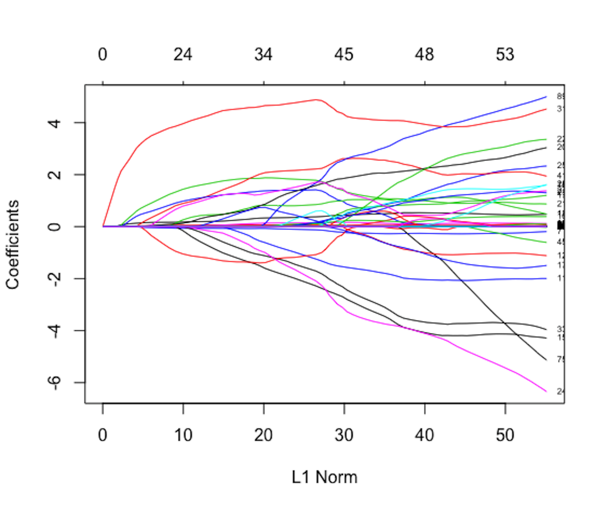Step 3 uses the R package glmnet204 Check out the argument glmnet to learn more. to build a LASSO model.
# Step 3 -> Use glmnet to conduct LASSO
# install.packages("glmnet")
require(glmnet)
fit = glmnet(trainX,trainY, family=c("gaussian"))
head(fit$beta)
# The fitted sparse regression parameters under
# different lambda values are stored in fit$beta.Step 4 draws the path trajectory of the LASSO models (i.e., as the one shown in Figure 142). The result is shown in Figure 144. It displays the information stored in fit$beta. Each curve shows how the estimated regression coefficient of a variable changes according to the value of \(\lambda\).
# Step 4 -> visualization of the path trajectory of
# the fitted sparse regression parameters
plot(fit,label = TRUE)
 Figure 145: Cross-validation result. It is hoped (because it is not always the case in practice) that it is U-shaped, like the one shown here, so that we can spot the optimal value of \(\lambda\), i.e., the one that corresponds to the lowest dip point.
Figure 145: Cross-validation result. It is hoped (because it is not always the case in practice) that it is U-shaped, like the one shown here, so that we can spot the optimal value of \(\lambda\), i.e., the one that corresponds to the lowest dip point.
Step 5 uses cross-validation to identify the best \(\lambda\) value for the LASSO model. The result is shown in Figure 145.
# Step 5 -> Use cross-validation to decide which lambda to use
cv.fit = cv.glmnet(trainX,trainY)
plot(cv.fit)
# look for the u-shape, and identify the lowest
# point that corresponds to the best modelStep 6 views the best model and evaluates its predictions.
# Step 6 -> To view the best model and the
# corresponding coefficients
cv.fit$lambda.min
# cv.fit$lambda.min is the best lambda value that results
# in the best model with smallest mean squared error (MSE)
coef(cv.fit, s = "lambda.min")
# This extracts the fitted regression parameters of
# the linear regression model using the given lambda value.
y_hat <- predict(cv.fit, newx = testX, s = "lambda.min")
# This is to predict using the best model
cor(y_hat, data.test$MMSCORE)
mse <- mean((y_hat - data.test$MMSCORE)^2)
# The mean squared error (mse)
mseResults are shown below.
## 0.2969686 # cor(y_hat, data.test$MMSCORE)
## 2.453638 # mseStep 7 re-fits the regression model using the variables selected by LASSO. As LASSO put \(L_1\) norm on the regression parameters, it not only penalizes the regression coefficients of the irrelevant variables to be zero, but also penalizes the regression coefficients of the selected variable. Thus, the estimated regression coefficients of a LASSO model tend to be smaller than they are (i.e., this is called bias in machine learning terminology).
# Step 7 -> Re-fit the regression model with selected variables
# by LASSO
var_idx <- which(coef(cv.fit, s = "lambda.min") != 0)
lm.AD.reduced <- lm(MMSCORE ~ ., data =
data.train[,var_idx,drop=FALSE])
summary(lm.AD.reduced)Principal component analysis
Rationale and formulation
A dataset has many variables, but its inherent dimensionality may be smaller than it appears to be. For example, as shown in Figure 146, the \(10\) variables of the dataset, \(x_1\), \(x_2\), \(\ldots\), \(x_{10}\), are manifestations of three underlying independent variables, \(z_1\), \(z_2\), and \(z_3\). In other words, a dataset of \(10\) variables is not necessarily a system of \(10\) degrees of freedom.
 Figure 146: PCA—to uncover the Master of Puppets (\(z_1\), \(z_2\), and \(z_3\))
Figure 146: PCA—to uncover the Master of Puppets (\(z_1\), \(z_2\), and \(z_3\))
The question is how to uncover the “Master of Puppets,” i.e., \(z_1\), \(z_2\), and \(z_3\), based on data of the observed variables, \(x_1\), \(x_2\), \(\ldots\), \(x_{10}\).
Let’s look at the scattered data points in Figure 147. If we think of the data points as stars, and this is the universe after the Big Bang, we can identify two potential forces here: a force that stretches the data points towards one direction (i.e., labeled as the \(1^{st}\) PC)205 PC stands for the principal component.; and another force (i.e., labeled as the \(2^{nd}\) PC) that drags the data points towards another direction. The forces are independent, so in mathematical terms they follow orthogonal directions. And it might be possible that the \(2^{nd}\) PC only represents noise. If that is the case, calling it a force may not be the best way. Sometimes we say each PC represents a variation source.
Figure 147: Illustration of the principal components in a dataset with 2 variables; the main variation source is represented by th e 1st dimension

This interpretation of Figure 147 may seem natural. If so, it is only because it makes a tacit assumption that seems too natural to draw our attention: the forces are represented as lines206 Why is a force a line? It could be a wave, a spiral, or anything other than a line. But the challenge is to write up the mathematical form of an idea—like the example of maximum margin in Chapter 7., their mathematical forms are linear models that are defined by the existing variables, i.e., the two lines in Figure 147 could be defined by \(x_1\) and \(x_2\). The PCA seeks linear combinations of the original variables to pinpoint the directions towards which the underlying forces push the data points. These directions are called principal components (PCs). In other words, the PCA assumes that the relationship between the underlying PCs and the observed variables is linear. And because they are linear, it takes orthogonality to separate different forces.
Theory and method
The lines in Figure 147 take the form as \(w_1x_1 + w_2x_2\),207 For simplicity, from now on, we assume that all the variables in the dataset are normalized, i.e., for any variable \(x_i\), its mean is \(0\) and its variance is \(1\). where \(w_1\) and \(w_2\) are free parameters. To estimate \(w_1\) and \(w_2\) for the lines, we need to write an optimization formulation with an objective function and a constraints structure that carries out the idea outlined in Figure 147: to identify the two lines.
Figure 148: Any line \(z = w_1x_1 + w_2x_2\) leads to a new one-dimensional space defined by \(z\)

As shown in Figure 148, any line \(z = w_1x_1 + w_2x_2\) leads to a new one-dimensional space defined by \(z\). Data points find their projections on this new space, i.e., the white dots on the line. The variance of the white dots provides a quantitative evaluation of the strength of the force that stretched the data points. The PCA seeks the lines that have the largest variances, which are the strongest forces stretching the data and scattering the data points along the PCs. Specifically, as there would be one line that represents the strongest force (a.k.a., as the \(1^{st}\) PC), the second line is called the \(2^{nd}\) PC, and so on.
To generalize the idea of Figure 148, let’s focus on the identification of the \(1^{st}\) PC first. Suppose there are \(p\) variables, \(x_1\), \(x_2\), \(\ldots\), \(x_{p}\). The line for the \(1^{st}\) PC is \(\boldsymbol{w}_{(1)}^T\boldsymbol{x}\). \(\boldsymbol{w}_{(1)}\in \mathbb{R}^{p \times 1}\) is the weight vector of the \(1^{st}\) PC208 It is also called the loading of the PC.. The projections of \(N\) data points on the line of the \(1^{st}\) PC, i.e., the coordinates of the white dots, are
\[\begin{equation} z_{1n} = \boldsymbol{w}_{(1)}^T\boldsymbol{x}_n, \text{ for } n=1, 2, \ldots, N, \tag{92} \end{equation}\]
where \(\boldsymbol{x}_n \in \mathbb{R}^{1 \times p}\) is the \(n^{th}\) data point.
As we mentioned, the \(1^{st}\) PC is the line that has the largest variance of \(z_1\). Suppose that the data have been standardized, we have
\[\begin{equation} var(z_1) = var\left(\boldsymbol{w}_{(1)}^T\boldsymbol{x}\right)=\frac{1}{N}\sum_{n=1}^N\left[\boldsymbol{w}_{(1)}^T\boldsymbol{x}_{n}\right]^2. \end{equation}\]
This leads to the following formulation to learn the parameter \(\boldsymbol{w}_{(1)}\)
\[\begin{equation} \boldsymbol{w}_{(1)} = \arg\max_{\boldsymbol{w}_{(1)}^T\boldsymbol{w}_{(1)}=1} \left \{ \sum\nolimits_{n=1}\nolimits^{N}\left [ \boldsymbol{w}_{(1)}^T\boldsymbol{x}_{n} \right ]^2\right \}, \tag{93} \end{equation}\]
where the constraint \(\boldsymbol{w}_{(1)}^T\boldsymbol{w}_{(1)}=1\) is to normalize the scale of \(\boldsymbol{w}\).209 Without which the optimization problem in Eq. (93) is unbounded. This also indicates that the absolute magnitudes of \(\boldsymbol{w}_{(1)}\) are often misleading. The relative magnitudes are more useful.
A more succinct form of Eq. (93) is
\[\begin{equation} \boldsymbol{w}_{(1)} = \arg\max_{\boldsymbol{w}_{(1)}^T\boldsymbol{w}_{(1)}=1}\left \{ \boldsymbol{w}_{(1)}^T\boldsymbol{X}^T\boldsymbol{X}\boldsymbol{w}_{(1)} \right\}, \tag{94} \end{equation}\]
where \(\boldsymbol{X}\in \mathbb{R}^{N \times p}\) is the data matrix that concatenates the \(N\) samples into a matrix, i.e., each sample forms a row in \(\boldsymbol{X}\). Eq. (94) is also known as the eigenvalue decomposition problem of the matrix \(\boldsymbol{X}^T\boldsymbol{X}\).210 \(\frac{\boldsymbol{X}^T\boldsymbol{X}}{N-1}\) is called the sample covariance matrix , usually denoted as \(\boldsymbol{S}\). \(\boldsymbol{S}\) could be used in Eq. (94) to replace \(\boldsymbol{X}^T\boldsymbol{X}\). In this context, \(\boldsymbol{w}_{(1)}\) is called the \(1^{st}\) eigenvector.
To identify the \(2^{nd}\) PC, we again find a way to iterate. The idea is simple: as the \(1^{st}\) PC represents a variance source, and the data \(\boldsymbol{X}\) contains an aggregation of multiple variance sources, why not remove the first variance source from \(\boldsymbol{X}\) and then create a new dataset that contains the remaining variance sources? Then, the procedure for finding \(\boldsymbol{w}_{(1)}\) could be used for finding \(\boldsymbol{w}_{(2)}\)—with \(\boldsymbol{w}_{(1)}\) removed, \(\boldsymbol{w}_{(2)}\) is the largest variance source.
This process could be generalized as:
- [Create \(\boldsymbol{X}_{(k)}\)] In order to find the \(k^{th}\) PC, we could create a dataset by removing the variation sources from the previous \(k-1\) PCs
\[\begin{equation} \boldsymbol{X}_{(k)}=\boldsymbol{X}-\sum_{s=1}^{k-1}\boldsymbol{w}_{(s)}\boldsymbol{w}_{(s)}^T. \tag{95} \end{equation}\]
- [Solve for \(\boldsymbol{w}_{(k)}\)] Then, we solve
\[\begin{equation} \boldsymbol{w}_{(k)}=\arg\max_{\boldsymbol{w}_{(k)}^T\boldsymbol{w}_{(k)}=1}\left \{ \boldsymbol{w}_{(k)}^T\boldsymbol{X}_{(k)}^T\boldsymbol{X}_{(k)}\boldsymbol{w}_{(k)} \right \}. \tag{96} \end{equation}\] We then compute \(\lambda_{(k)} = \boldsymbol{w}_{(k)}^T\boldsymbol{X}_{(k)}^T\boldsymbol{X}_{(k)}\boldsymbol{w}_{(k)}.\) \(\lambda_{(k)}\) is called the eigenvalue of the \(k^{th}\) PC.
So we create \(\boldsymbol{X}_{(k)}\) and solve Eq. (96) in multiple iterations. Many R packages have packed all the iterations into one batch. Usually, we only need to calculate \(\boldsymbol{X}^T\boldsymbol{X}\) or \(\boldsymbol{S}\) and use it as input of these packages, then obtain all the eigenvalues and eigenvectors.
This iterative algorithm would yield in total \(p\) PCs for a dataset with \(p\) variables. But usually, not all the PCs are significant. If we apply PCA on the dataset generated by the data-generating mechanism as shown in Figure 146, only the first 3 PCs should be significant, and the other 7 PCs, although they computationally exist, statistically do not exist, as they are manifestations of noise.
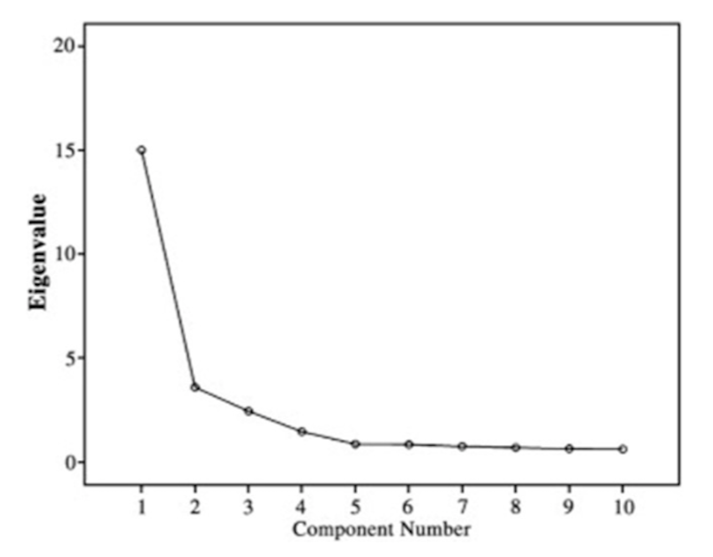 Figure 149: The scree plot shows that only the first 2 PCs are significant
In practice, we need to decide how many PCs are needed for a dataset. The scree plot as shown in Figure 149 is a common tool: it draws the eigenvalues of the PCs, \(\lambda_{(1)}, \lambda_{(2)}, \ldots, \lambda_{(p)}\). Then we look for the change point if it exists. We discard the PCs after the change point as they may be statistically insignificant.
A small data example
The dataset is shown in Table 35. It has \(3\) variables and \(5\) data points.Table 35: A dataset example for PCA
| \(x_1\) | \(x_2\) |
|---|---|
| \(-10\) | \(6\) |
| \(-4\) | \(2\) |
| \(2\) | \(1\) |
| \(8\) | \(0\) |
| \(14\) | \(-4\) |
First, we normalize (or, standardize) the variables211 Recall that we assumed that all the variables are normalized when we derived the PCA algorithm. I.e., for \(x_1\), we compute its mean and standard derivation first, which are \(2\) and \(9.48\),212 In this example, numbers are rounded to \(2\) decimal places. respectively. Then, we distract each measurement of \(x_1\) from its mean and further divide it by its standard derivation. For example, for the first measurement of \(x_1\), \(-10\), it is converted as
\[ \frac{-10 - 2}{9.48}=-1.26. \]
The second measurement, \(-4\), is converted as
\[ \frac{-4 - 2}{9.48}=-0.63. \]
And so on.
Similarly, for \(x_2\), we compute its mean and standard derivation, which are \(1\) and \(3.61\), respectively. The standardized dataset is shown in Table 36.
Table 36: Standardized dataset of Table 35
| \(x_1\) | \(x_2\) |
|---|---|
| \(-1.26\) | \(1.39\) |
| \(-0.63\) | \(0.28\) |
| \(0\) | \(0\) |
| \(0.63\) | \(-0.28\) |
| \(1.26\) | \(-1.39\) |
We calculate \(\boldsymbol{S}\) as
\[ \boldsymbol{S}=\boldsymbol{X}^T \boldsymbol{X} / 4 = \begin{bmatrix} 1 & -0.96 \\ -0.96 & 1 \\ \end{bmatrix} .\]
Solving this eigenvalue decomposition problem213 E.g., using eigen() in R., for the \(1^{st}\) PC, we have
\[ \lambda_1=1.96 \, \text{ and } \, \boldsymbol{w}_{(1)}=\left[ -0.71, \, 0.71\right]. \]
Continuing to the \(2^{nd}\) PC, we have
\[ \lambda_2=0.04 \, \text{ and } \, \boldsymbol{w}_{(2)}=\left[ -0.71, \, -0.71\right]. \]
 Figure 150: Gray dots are data points (standardized); the black line is the \(1^{st}\) PC
Figure 150: Gray dots are data points (standardized); the black line is the \(1^{st}\) PC
We can calculate the cumulative contributions of the \(2\) PCs
\[ \text{For the } 1^{st} \text{ PC: } 1.96/(1.96+0.04) = 0.98. \]
\[ \text{For the } 2^{nd} \text{ PC: } 0.04/(1.96+0.04) = 0.02. \]
The \(2^{nd}\) PC is statistically insignificant.
We visualize the \(1^{st}\) PC in Figure 150 (compare it with Figure 147). The R code to generate Figure 150 is shown below.
x1 <- c(-10, -4, 2, 8, 14)
x2 <- c(6, 2, 1, 0, -4)
x <- cbind(x1,x2)
x.scale <- scale(x) #standardize the data
eigen.x <- eigen(cor(x))
plot(x.scale, col = "gray", lwd = 2)
abline(0,eigen.x$vectors[2,1]/eigen.x$vectors[1,1],
lwd = 3, col = "black")The coordinates of the white dots (a.k.a., the projections of the data points on the PCs, as shown in Figure 148) can be obtained by using Eq. (92). Results are shown in Table 37. This is an example of data transformation.
Table 37: The coordinates of the white dots, i.e., a.k.a., the projections of the data points on the PCs
| \(z_1\) | \(z_2\) |
|---|---|
| \(1.88\) | \(-0.09\) |
| \(0.64\) | \(0.25\) |
| \(0\) | \(0\) |
| \(-0.64\) | \(-0.25\) |
| \(-1.88\) | \(0.09\) |
Data transformation is often a data preprocessing step before the use of other methods. For example, in clustering, sometimes we could not discover any clustering structure on the dataset of original variables, but we may discover clusters on the transformed dataset. In a regression model, as we have mentioned the issue of multicollinearity214 I.e., in Chapter 6 and Chapter 2., the Principal Component Regression (PCR) method uses the PCA first to convert the original \(x\) variables into the \(z\) variables and then applies the linear regression model on the transformed variables. This is because the \(z\) variables are PCs and they are orthogonal with each other, without issue of multicollinearity.
R Lab
The 6-Step R Pipeline. Step 1 and Step 2 get dataset into R and organize the dataset in the required format.215 It is not necessary to split the dataset into training and testing datasets before the use of PCA, if the purpose of the analysis is exploratory data analysis. But if the purpose of using PCA is for dimension reduction or feature extraction, which is an intermediate step before building a prediction model, then we should split the dataset into training and testing datasets, and apply PCA only on the training dataset to learn the loadings of the significant PCs. The R lab shows an example of this process.
# Step 1 -> Read data into R
#### Read data from a CSV file
#### Example: Alzheimer's Disease
# RCurl is the R package to read csv file using a link
library(RCurl)
url <- paste0("https://raw.githubusercontent.com",
"/analyticsbook/book/main/data/AD_hd.csv")
AD <- read.csv(text=getURL(url))
# str(AD)# Step 2 -> Data preprocessing
# Create your X matrix (predictors) and Y vector
# (outcome variable)
X <- AD[,-c(1:16)]
Y <- AD$MMSCORE
# Then, we integrate everything into a data frame
data <- data.frame(Y,X)
names(data)[1] = c("MMSCORE")
# Create a training data
train.ix <- sample(nrow(data),floor( nrow(data)) * 4 / 5 )
data.train <- data[train.ix,]
# Create a testing data
data.test <- data[-train.ix,]
trainX <- as.matrix(data.train[,-1])
testX <- as.matrix(data.test[,-1])
trainY <- as.matrix(data.train[,1])
testY <- as.matrix(data.test[,1])Step 3 implements the PCA analysis using the FactoMineR package.
# Step 3 -> Implement principal component analysis
# install.packages("factoextra")
require(FactoMineR)
# Conduct the PCA analysis
pca.AD <- PCA(trainX, graph = FALSE,ncp=10)
# names(pca.AD) will give you the list of variable names in the
# object pca.AD created by PCA(). For instance, pca.AD$eig records
# the eigenvalues of all the PCs, also the transformed value into
# cumulative percentage of variance. pca.AD$var stores the
# loadings of the variables in each of the PCs.Figure 151: Scree plot of the PCA analysis on the AD dataset
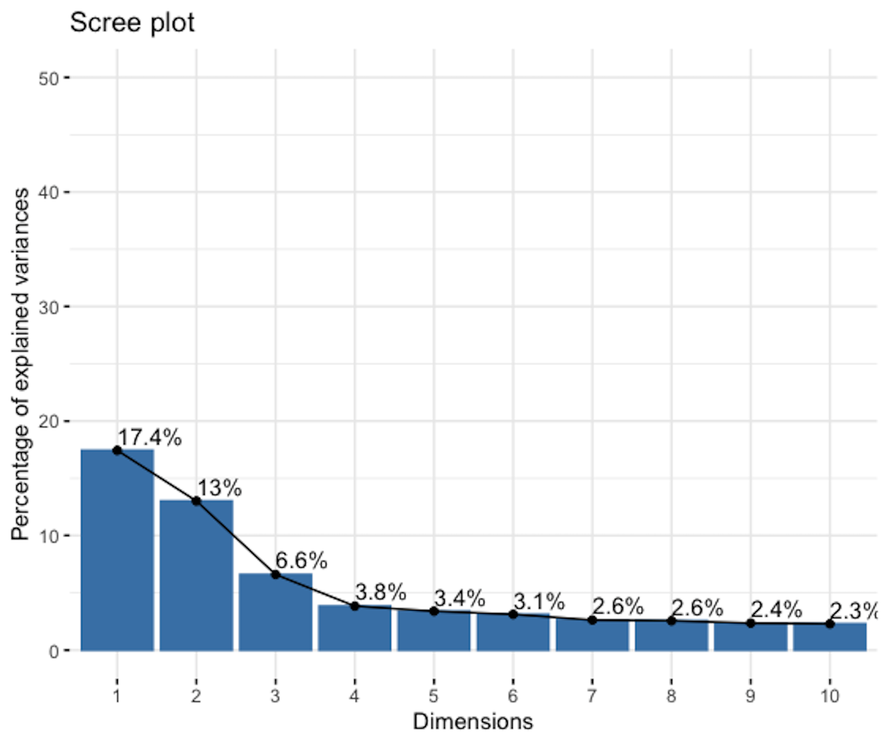Step 4 ranks the PCs based on their eigenvalues and identifies the significant ones.
# Step 4 -> Examine the contributions of the PCs in explaining
# the variation in data.
require(factoextra )
# to use the following functions such as get_pca_var()
# and fviz_contrib()
fviz_screeplot(pca.AD, addlabels = TRUE, ylim = c(0, 50))The result is shown in Figure 151. The \(1^{st}\) PC explains away \(17.4\%\) of the total variation, and the \(2^{nd}\) PC explains away \(13\%\) of the total variation. There is a change point at the \(3^{rd}\) PC, indicating that the following PCs may be insignificant.
Step 5 looks into the details of the learned PCA model, e.g., the loadings of the PCs. It leads to Figures 152 and 153 which visualize the contributions of the variables to the \(1^{st}\) and \(2^{nd}\) PC, respectively.
# Step 5 -> Examine the loadings of the PCs.
var <- get_pca_var(pca.AD) # to get the loadings of the PCs
head(var$contrib) # to show the first 10 PCs
# Visualize the contributions of top variables to
# PC1 using a bar plot
fviz_contrib(pca.AD, choice = "var", axes = 1, top = 20)
# Visualize the contributions of top variables to PC2 using
# a bar plot
fviz_contrib(pca.AD, choice = "var", axes = 2, top = 20)
 Figure 152: Loading of the \(1^{st}\) PC, i.e., coefficients are ranked in terms of their absolute magnitude and only the top 20 are shown
Figure 152: Loading of the \(1^{st}\) PC, i.e., coefficients are ranked in terms of their absolute magnitude and only the top 20 are shown
Step 6 implements linear regression model using the transformed data.
# Step 6 -> use the transformed data fit a line regression model
# Data pre-processing
# Transformation of the X matrix of the training data
trainX <- pca.AD$ind$coord
trainX <- data.frame(trainX)
names(trainX) <- c("PC1","PC2","PC3","PC4","PC5","PC6","PC7",
"PC8","PC9","PC10")
# Transformation of the X matrix of the testing data
testX <- predict(pca.AD , newdata = testX)
testX <- data.frame(testX$coord)
names(testX) <- c("PC1","PC2","PC3","PC4","PC5","PC6",
"PC7","PC8","PC9","PC10")
tempData <- data.frame(trainY,trainX)
names(tempData)[1] <- c("MMSCORE")
lm.AD <- lm(MMSCORE ~ ., data = tempData)
summary(lm.AD)
y_hat <- predict(lm.AD, testX)
cor(y_hat, testY)
mse <- mean((y_hat - testY)^2) # The mean squared error (mse)
mse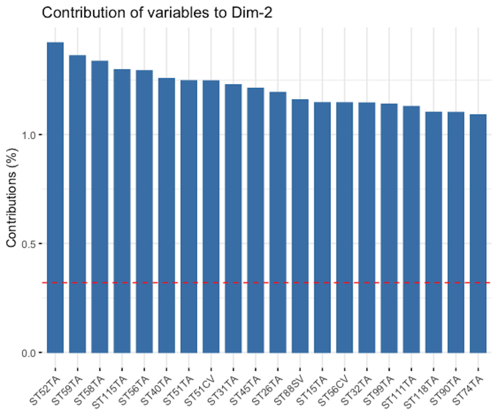 Figure 153: Loading of the \(2^{nd}\) PC, i.e., coefficients are ranked in terms of their absolute magnitude and only the top 20 are shown
The result is shown below.
##
## Call:
## lm(formula = AGE ~ ., data = tempData)
##
## Residuals:
## Min 1Q Median 3Q Max
## -17.3377 -2.5627 0.0518 2.6820 11.1772
##
## Coefficients:
## Estimate Std. Error t value Pr(>|t|)
## (Intercept) 73.68767 0.59939 122.938 < 2e-16 ***
## PC1 0.04011 0.08275 0.485 0.629580
## PC2 -0.31556 0.09490 -3.325 0.001488 **
## PC3 0.50022 0.13510 3.702 0.000456 ***
## PC4 0.14812 0.17462 0.848 0.399578
## PC5 0.47954 0.19404 2.471 0.016219 *
## PC6 -0.29760 0.20134 -1.478 0.144444
## PC7 0.10160 0.21388 0.475 0.636440
## PC8 -0.25015 0.22527 -1.110 0.271100
## PC9 -0.02837 0.22932 -0.124 0.901949
## PC10 0.16326 0.23282 0.701 0.485794
## ---
## Signif. codes: 0 '***' 0.001 '**' 0.01 '*' 0.05 '.' 0.1 ' ' 1
##
## Residual standard error: 5.121 on 62 degrees of freedom
## Multiple R-squared: 0.3672, Adjusted R-squared: 0.2651
## F-statistic: 3.598 on 10 and 62 DF, p-value: 0.0008235It is not uncommon to see that the \(1^{st}\) PC is insignificant in a prediction model. The \(1^{st}\) PC is the largest force or variation source in \(\boldsymbol{X}\) by definition, but not necessarily the one that correlates with any outcome variable \(y\) with the strongest correlation.
On the other hand, the R-squared of this model is \(0.3672\), and the p-value is \(0.0008235\). Overall, the data transformation by PCA yielded an effective linear regression model.
Beyond the 6-Step R Pipeline. PCA is a popular tool for EDA. For example, we can visualize the distribution of the data points in the new space spanned by a few selected PCs216 It may reveal some structures of the dataset. For example, for a classification problem, it is hoped that in the space spanned by the selected PCs the data points from different classes would cluster around different centers.. We use the following R script to draw a visualization figure.
# Projection of data points in the new space defined by
# the first two PCs
fviz_pca_ind(pca.AD, label="none",
habillage=as.factor(AD[train.ix,]$DX_bl),
addEllipses=TRUE, ellipse.level=0.95)The result is shown in Figure 154. Two clusters are identified, which overlap significantly. One group is the LMCI (i.e., mild cognitive impairment) and the other one is NC (i.e., normal aging). The result is consistent with the fact that the clinical difference between the two groups is not as significant as NC versus Diseased.
Figure 154: Scatterplot of the subjects in the space defined by the \(1^{st}\) and \(2^{nd}\) PCs
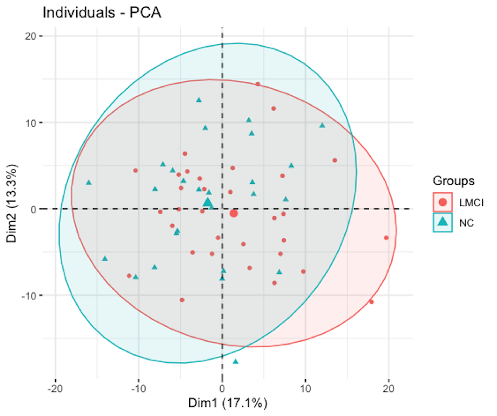Remarks
Why LASSO uses the L1 norm
LASSO is often compared with another model, the Ridge regression that was developed about \(30\) years before LASSO217 Hoerl, A.E. and Kennard, R.W. Ridge regression: biased estimation for nonorthogonal problems, Technometrics, Volume 12, Issue 1, Pages 55-67, 1970..
The formulation of Ridge regression is
\[\begin{equation} \boldsymbol{\hat \beta} = \arg\min_{\boldsymbol \beta} \left \{ \underbrace{(\boldsymbol{y}-\boldsymbol{X} \boldsymbol{\beta})^{T}(\boldsymbol{y}-\boldsymbol{X} \boldsymbol{\beta})}_{\text{Least squares}} + \underbrace{\lambda \lVert \boldsymbol{\beta}\rVert^2_2}_{L_2 \text{ norm penalty}} \right \} \tag{97} \end{equation}\]
where \(\lVert \boldsymbol \beta \rVert^2_2=\sum_{i=1}^p \lvert\beta_i\rvert^2\).
Ridge regression seems to bear the same spirit of LASSO—they both penalize the magnitudes of the regression parameters. However, it has been noticed that in the Ridge regression model the estimated regression parameters are less likely to be \(0\). Even with a very large \(\lambda\), many elements in \(\boldsymbol{\beta}\) may be close to zero (i.e., with a tiny numerical magnitude), but not zero218 If they are not zero, these variables can still generate impact on the estimation of other regression parameters.. This may not be entirely a surprise, as the Ridge regression is often used as a stabilization strategy to handle the multicollinearity issue or other issues that result in numerical instability of parameter estimation in linear regression, while LASSO is mainly used as a variable selection strategy.
Figure 155: Why LASSO (left) generates sparse estimates, while Ridge regression (right) does not
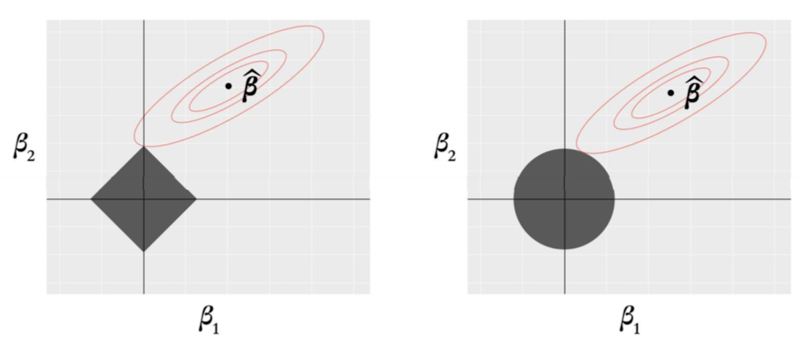To reveal why the \(L_1\) norm in LASSO regression differs from the \(L_2\) norm used in the Ridge regression, we adopt an explanation219 Hastie, T., Tibshirani, R. and Friedman, J. The Elements of Statistical Learning, \(2^{nd}\) edition. Springer, 2009. as shown in Figure 155. There are \(2\) predictors, thus, two regression coefficients \(\beta_1\) and \(\beta_2\). The contour plot corresponds to the least squares loss function which is shared by both the LASSO and the Ridge regression models. And the least squares estimator, \(\boldsymbol{\hat\beta}\), is in the center of the contour plots. The shadowed rhombus in Figure 155 (left) corresponds to the \(L_1\) norm, and the shadowed circle in Figure 155 (right) corresponds to the \(L_2\) norm. For either model, the optimal solution happens at the contact point of the two shapes.
Figure 155 shows that the contact point of the elliptic contour plot with the shadowed rhombus is likely to be one of the sharp corner points. A feature of these corner points is that some variables are zero, e.g., in Figure 155 (left), the point of contact implies that \(\beta_1 = 0\).
As a comparison, in Ridge regression, the shadowed circle has no such sharp corner points. Given the infinite number of potential contact points of the elliptic contour plot with the shadowed circle, it is expected that the Ridge regression will not result in sparse solutions with exact zeros in the estimated regression coefficients.
Following this idea220 I.e., to create sharp contact points between the elliptical contour with the shape representing the norm., the \(L_1\) norm is extended to the \(L_q\) norm, where \(q \leq 1\). For any \(q\leq 1\), we could generate sharp corner points to enable sparse solutions. The advantage of using \(q<1\) is to reduce bias in the model221 I.e., the \(L_1\) norm not only penalizes the regression coefficients of the irrelevant variables to be zero, it also penalizes the regression coefficients of the relevant variables. This is a bias in the model.. The cost of using \(q<1\) is that it will result in non-convex penalty terms, creating a more challenging optimization problem than LASSO. Considerable amounts of efforts have been devoted to two main directions: development of new norms, and development of new algorithms (i.e., which are usually iterative procedures with closed-form solution in each iteration, like the Shooting algorithm). Interested readers can read more of these works222 A good place to start with: https://github.com/jiayuzhou/SLEP and its manual (in PDF)..
The myth of PCA
While PCA has been widely used, it is often criticized as a black box model that lacks interpretability. It depends on the circumstances where the PCA is used. Sometimes, it is not easy to connect the identified principal components with physical entities. The applications of PCA in many areas have formed a convention, or a myth—some statisticians may say—such that formulistic rubrics have been invented to convert their data into patterns, then further convert these patterns into formulated sentences such as, “the variables that have larger magnitudes in the first \(3\) PCs correspond to the brain regions in the hippocampus area, indicating that these brain regions manifest significant functional connectivity to deliver the verbal function,” or “we have identified \(5\) significant PCs, and the genes that show dominant magnitudes in the loading of the \(1^{st}\) PC are all related to T-cell production and immune functions … each of the PC indicates a biological pathway that consists of these constitutional genes working together to produce specific types of proteins.” Then hear what had been said by financial analysts: “using PCA on \(100\) stocks223 Each stock is a variable., we found that the \(1^{st}\) PC consists of \(10\) stocks as their weights in the loading are significantly larger than the other stocks. This may indicate that there is strong correlation between these \(10\) stocks … consider this fact when you come up with your investment strategy…”
Having said that, sometimes there is magic in PCA.
Consider another small data example that is shown in Table 38. It has \(3\) variables and \(8\) data points.
Table 38: A dataset example for PCA
| \(x_1\) | \(x_2\) | \(x_3\) |
|---|---|---|
| \(-1\) | \(0\) | \(1\) |
| \(3\) | \(3\) | \(1\) |
| \(3\) | \(5\) | \(1\) |
| \(-3\) | \(-2\) | \(1\) |
| \(3\) | \(4\) | \(1\) |
| \(5\) | \(6\) | \(1\) |
| \(7\) | \(6\) | \(1\) |
| \(2\) | \(2\) | \(0\) |
First, we normalize the variables, i.e., for \(x_1\), we compute its mean and standard derivation first, which are \(2.375\) and \(3.159\), respectively. Then, we distract each measurement of \(x_1\) from its mean and further divide it by its standard derivation. For example, for the first measurement of \(x_1\), \(-1\), it is converted as
\[ \frac{-1-2.375}{3.159}=-1.07. \]
The second measurement, \(3\), is converted as
\[ \frac{3-2.375}{3.159}=0.20. \]
And so on.
Similarly, for \(x_2\), we compute its mean and standard derivation, which are \(3\) and \(2.88\), respectively. For \(x_3\), we compute its mean and standard derivation, which are \(0.88\) and \(0.35\), respectively …. Then the standardized dataset is shown in Table 39.224 In this example, numbers are rounded to \(2\) decimal places.
Table 39: Standardized dataset of Table 38
| \(x_1\) | \(x_2\) | \(x_3\) |
|---|---|---|
| \(-1.07\) | \(-1.04\) | \(0.35\) |
| \(0.2\) | \(0.00\) | \(0.35\) |
| \(0.2\) | \(0.69\) | \(0.35\) |
| \(-1.70\) | \(-1.73\) | \(0.35\) |
| \(0.20\) | \(0.35\) | \(0.35\) |
| \(0.83\) | \(1.04\) | \(0.35\) |
| \(1.46\) | \(1.04\) | \(0.35\) |
| \(-0.11\) | \(-0.35\) | \(-2.48\) |
We calculate the sample covariance matrix225 From \(\boldsymbol{S}\) we see that the correlation between \(x_1\) and \(x_2\) is quite large, while the correlation between them with \(x_3\) is very small. Figure 156 visualizes this relationship of the three variables. \(\boldsymbol{S}\) as
Figure 156: Visualization of the relationship between the three variables
\[ \boldsymbol{S}=\frac{\boldsymbol{X}^T \boldsymbol{X}}{N-1} = \begin{bmatrix} 1 & 0.96 & 0.05 \\ 0.96 & 1 & 0.14 \\ 0.05 & 0.14 & 1\\ \end{bmatrix}. \]
By solving the eigenvalue decomposition problem of the matrix \(\boldsymbol{S}\), we obtain the PCs and their loadings.
For the \(1^{st}\) PC, we get
\[ \lambda_1=1.98 \, \text{ and } \, \boldsymbol{w}_{(1)}=\left[ -0.69, \, -0.70, \, -0.14\right]. \]
For the \(2^{nd}\) PC, we get
\[ \lambda_2=0.98 \, \text{ and } \, \boldsymbol{w}_{(2)}=\left[ 0.14, \,0.05, \, -0.99\right]. \]
For the \(3^{rd}\) PC, we get
\[ \lambda_3=0.04 \, \text{ and } \, \boldsymbol{w}_{(3)}=\left[ 0.70, \, -0.71, \, 0.07\right]. \]
We can calculate the cumulative contributions of the three PCs
 Figure 157: Scree plot of the PCA analysis on data in Table 39
Figure 157: Scree plot of the PCA analysis on data in Table 39
\[ \text{For the } 1^{st} \text{ PC: } 1.98/(1.98+0.98+0.04) = 0.66. \]
\[ \text{For the } 2^{nd} \text{ PC: } 0.98/(1.98+0.98+0.04) = 0.33. \]
\[ \text{For the } 3^{rd} \text{ PC: } 0.04/(1.98+0.98+0.04) = 0.01. \]
The \(3^{rd}\) PC is statistically insignificant. The scree plot is shown in Figure 157.
We look into the details of the learned PCA model, e.g., the loadings of the PCs. It leads to Figure 158.
Figure 158: Loadings of the \(1^{st}\) PC (left), \(2^{nd}\) PC (middle), and \(3^{rd}\) PC (right)
 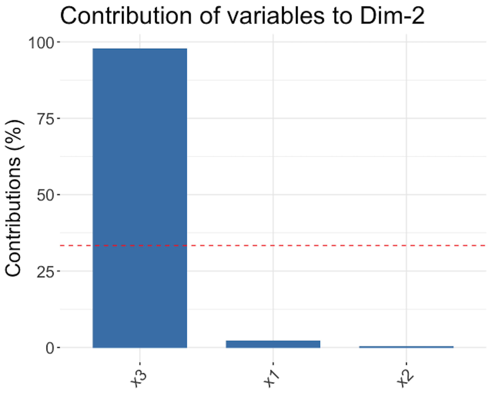
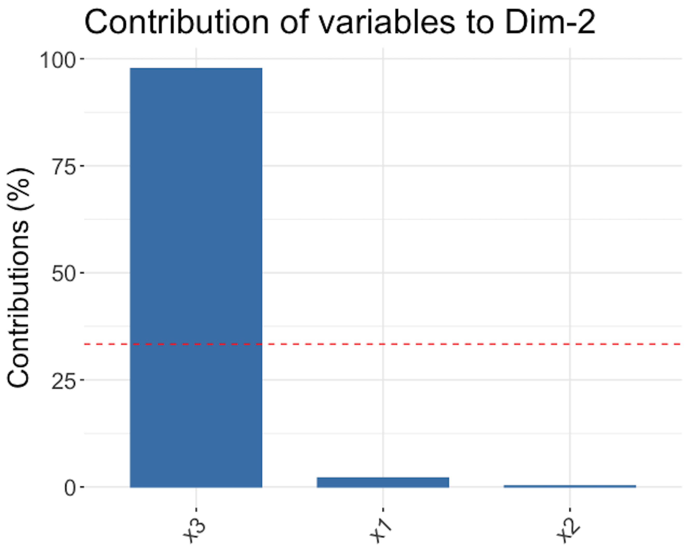
Figure 158 shows that the \(1^{st}\) PC is mainly defined by \(x_1\) and \(x_2\), the \(2^{nd}\) PC is mainly defined by \(x_3\), and the \(3^{rd}\) PC, despite its small proportion of importance, mainly consists of \(x_1\) and \(x_2\) as well226 Readers may compare Figure 158 with Figure 156—Is this a coincidence?.
The R code for generating Figure 158 is shown below.
# PCA example
x1 <- c(-1,3,3,-3,3,5,7,2)
x2 <- c(0,3,5,-2,4,6,6,2)
x3 <- c(1,1,1,1,1,1,1,0)
X <- cbind(x1,x2,x3)
require(FactoMineR)
require(factoextra)
t <- PCA(X)
t$eig
t$var$coord
# Draw the screeplot
fviz_screeplot(t, addlabels = TRUE)
# Draw the variable loadings plot
fviz_contrib(t, choice = "var", axes = 1, top = 20,
sort.val = "none") +
theme(text = element_text(size = 20))
fviz_contrib(t, choice = "var", axes = 2, top = 20,
sort.val = "none") +
theme(text = element_text(size = 20))
fviz_contrib(t, choice = "var", axes = 3, top = 20,
sort.val = "none") +
theme(text = element_text(size = 20))Now, suppose that there is an outcome variable \(y\). Data in Table 38 is augmented with a new column, as shown in Table 40.
Table 40: Table 38 is augmented with an outcome variable
| \(x_1\) | \(x_2\) | \(x_3\) | \(y\) |
|---|---|---|---|
| \(-1\) | \(0\) | \(1\) | \(1.33\) |
| \(3\) | \(3\) | \(1\) | \(0.70\) |
| \(3\) | \(5\) | \(1\) | \(2.99\) |
| \(-3\) | \(-2\) | \(1\) | \(-1.78\) |
| \(3\) | \(4\) | \(1\) | \(0.07\) |
| \(5\) | \(6\) | \(1\) | \(4.62\) |
| \(7\) | \(6\) | \(1\) | \(3.87\) |
| \(2\) | \(2\) | \(0\) | \(0.58\) |
The goal is to build a linear regression model to predict \(y\).
# Build a linear regression model
x1 <- c(-1,3,3,-3,3,5,7,2)
x2 <- c(0,3,5,-2,4,6,6,2)
x3 <- c(1,1,1,1,1,1,1,0)
X <- cbind(x1,x2,x3)
y <- c(1.33,0.7,2.99,-1.78,0.07,4.62,3.87,0.58)
data <- data.frame(cbind(y,X))
lm.fit <- lm(y~., data = data)
summary(lm.fit)The result is shown below.
## Call:
## lm(formula = y ~ ., data = data)
## Coefficients:
## Estimate Std. Error t value Pr(>|t|)
## (Intercept) -0.64698 1.60218 -0.404 0.707
## x1 -0.03686 0.67900 -0.054 0.959
## x2 0.65035 0.75186 0.865 0.436
## x3 0.37826 1.75338 0.216 0.840
##
## Residual standard error: 1.546 on 4 degrees of freedom
## Multiple R-squared: 0.6999, Adjusted R-squared: 0.4749
## F-statistic: 3.11 on 3 and 4 DF, p-value: 0.1508The R-squared is \(0.6999\), but the three variables are not significant. This is unusual. Recall that \(x_1\) and \(x_2\) are highly correlated—there is an issue of multicollinearity in this dataset.
Try a linear regression model with \(x_1\) and \(x_3\).
# Build a linear regression model
lm.fit <- lm(y~ x1 + x2, data = data)
summary(lm.fit)The result is shown below.
## Call:
## lm(formula = y ~ ., data = data)
## Coefficients:
## Estimate Std. Error t value Pr(>|t|)
## (Intercept) -0.4764 1.5494 -0.307 0.7709
## x1 0.5282 0.1805 2.927 0.0328 *
## x3 0.8793 1.6127 0.545 0.6090
##
## Residual standard error: 1.507 on 5 degrees of freedom
## Multiple R-squared: 0.6438, Adjusted R-squared: 0.5013
## F-statistic: 4.519 on 2 and 5 DF, p-value: 0.07572Now \(x_1\) is significant. Without fitting another model, we know that \(x_2\) has to be significant as well, i.e., as shown in Figure 156, \(x_1\) and \(x_2\) are two highly correlated variables that are just like one variable. But because of the multicollinearity, when both are included in the model, neither turns out to be significant.
To overcome the multicollinearity, we have mentioned that the Principal Component Regression (PCR) method is a good approach. First, we calculate the transformed data (i.e., the projections of the data points on the PCs, as shown in Figure 148) using Eq. (92). Results are shown in Table 41. An important characteristic of the new variables, \(\text{PC}_1\), \(\text{PC}_2\), and \(\text{PC}_3\), is that they are orthogonal to each other, and thus, their correlations are \(0\).
Table 41: The coordinates of the white dots, i.e., aka, the projections of the data points on the PCs
| \(\text{PC}_1\) | \(\text{PC}_2\) | \(\text{PC}_3\) |
|---|---|---|
| \(1.43\) | \(-0.55\) | \(0.01\) |
| \(-0.18\) | \(-0.32\) | \(0.16\) |
| \(-0.67\) | \(-0.29\) | \(-0.33\) |
| \(2.36\) | \(-0.68\) | \(0.06\) |
| \(-0.43\) | \(-0.30\) | \(-0.08\) |
| \(-1.36\) | \(-0.18\) | \(-0.13\) |
| \(-1.80\) | \(-0.09\) | \(0.31\) |
| \(0.66\) | \(2.41\) | \(-0.01\) |
Then we can build a linear regression model of \(y\) using the three new predictors, \(\text{PC}_1\), \(\text{PC}_2\), and \(\text{PC}_3\). The result is shown below.
## Call:
## lm(formula = y ~ PC1 + PC2 + PC3, data = data)
## Coefficients:
## Estimate Std. Error t value Pr(>|t|)
## (Intercept) 1.54750 0.54668 2.831 0.0473 *
## PC1 -1.25447 0.41571 -3.018 0.0393 *
## PC2 -0.06022 0.58848 -0.102 0.9234
## PC3 -1.39950 3.02508 -0.463 0.6677
##
## Residual standard error: 1.546 on 4 degrees of freedom
## Multiple R-squared: 0.6999, Adjusted R-squared: 0.4749
## F-statistic: 3.11 on 3 and 4 DF, p-value: 0.1508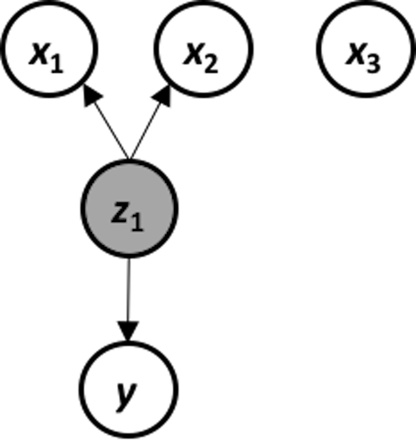 Figure 159: Visualization of the relationship between all the variables
\(\text{PC}_1\) is significant. Since \(\text{PC}_1\) is mainly defined by \(x_1\) and \(x_2\), this is consistent with all the analysis done so far, and a structure of the relationships between the variables is revealed in Figure 159.
Exercises
 Figure 160: The path trajectory of a LASSO model
Figure 160: The path trajectory of a LASSO model
Figure 160 shows the path trajectory generated by applying
glmnet()on a dataset with \(10\) predictors. Which two variables are the top two significant variables (note the index of the variables is shown in the right end of the figure)?Consider the dataset shown in Table 42. Set \(\lambda = 1\) and initial values for \(\beta_1 = 0\), and \(\beta_2 = 1\). Implement the Shooting algorithm by manual operation. Do one iteration. Report \(\beta_1\) and \(\beta_2\).
Table 42: Dataset for Q2
| \(x_1\) | \(x_2\) | \(y\) |
|---|---|---|
| \(-0.15\) | \(-0.48\) | \(0.46\) |
| \(-0.72\) | \(-0.54\) | \(-0.37\) |
| \(1.36\) | \(-0.91\) | \(-0.27\) |
| \(0.61\) | \(1.59\) | \(1.35\) |
| \(-1.11\) | \(0.34\) | \(-0.11\) |
Follow up on the dataset in Q2. Use the R pipeline for LASSO on this data. Compare the result from R and the result by your manual calculation.
Conduct a principal component analysis for the dataset shown in Table 43. Show details of the process.
Table 43: Dataset for Q4
| \(x_1\) | \(x_2\) | \(x_3\) | \(x_4\) |
|---|---|---|---|
| \(1\) | \(1.8\) | \(2.08\) | \(-0.28\) |
| \(2\) | \(3.6\) | \(-0.78\) | \(0.79\) |
| \(1\) | \(2.2\) | \(-0.08\) | \(-0.52\) |
| \(2\) | \(4.3\) | \(0.38\) | \(-0.47\) |
| \(1\) | \(2.1\) | \(0.71\) | \(1.03\) |
| \(2\) | \(3.6\) | \(1.29\) | \(0.67\) |
| \(1\) | \(2.2\) | \(0.57\) | \(0.15\) |
| \(2\) | \(4.0\) | \(1.12\) | \(1.18\) |
- Standardize the dataset (i.e., by making the means of the variables to be zero, and the standard derivations of the variables to be \(1\)). (b) Calculate the sample covariance matrix (i.e., \(\boldsymbol{S} =(\boldsymbol{X}^T\boldsymbol{X})/(N-1))\). (c) Conduct eigenvalue decomposition on the sample covariance matrix, obtain the four eigenvectors and their eigenvalues. (d) Report the percentage of variances that could be explained by the four PCs, respectively. Draw the screeplot. How many PCs are sufficient to represent the dataset? In other words, which PCs are significant? (e) Interpret the PCs you have selected, i.e., which variables define which PCs? (f) Convert the original data into the space spanned by the four PCs, by filling in Table 44.
Table 44: Dataset for Q4
| \(\text{PC}_1\) | \(\text{PC}_2\) | \(\text{PC}_3\) | \(\text{PC}_4\) |
|---|---|---|---|
Follow up on the dataset in Q2 from Chapter 7. (a) Conduct the PCA analysis on the three predictors to identify the three principal components and their contributions on explaining the variance in data; and (b) use the R pipeline for PCA to do the PCA analysis and compare with your manual calculation.
Suppose that we have an outcome variable that could be augmented into the dataset in Q4, as shown in Table 45. Apply the shooting algorithm for LASSO on this dataset to identify important variables. Use the following initial values for the parameters, \(\lambda=1, \beta_1=0, \beta_2=1, \beta_3=1, \beta_4=1\), and just do one iteration of the shooting algorithm. Show details of manual calculation.
Table 45: Dataset for Q6
| \(x_1\) | \(x_2\) | \(x_3\) | \(x_4\) | \(y\) |
|---|---|---|---|---|
| \(1\) | \(1.8\) | \(2.08\) | \(-0.28\) | \(1.2\) |
| \(2\) | \(3.6\) | \(-0.78\) | \(0.79\) | \(2.1\) |
| \(1\) | \(2.2\) | \(-0.08\) | \(-0.52\) | \(0.8\) |
| \(2\) | \(4.3\) | \(0.38\) | \(-0.47\) | \(1.5\) |
| \(1\) | \(2.1\) | \(0.71\) | \(1.03\) | \(0.8\) |
| \(2\) | \(3.6\) | \(1.29\) | \(0.67\) | \(1.6\) |
| \(1\) | \(2.2\) | \(0.57\) | \(0.15\) | \(1.2\) |
| \(2\) | \(4.0\) | \(1.12\) | \(1.18\) | \(1.6\) |
After extraction of the four PCs from Q4, use
lm()in R to build a linear regression model with the outcome variable (as shown in Table 45) and the four PCs as the predictors. (a) Report the summary of your linear regression model with the four PCs; and (b) which PCs significantly affect the outcome variable?Revisit Q1 in Chapter 3. Derive the shooting algorithm for weighted least squares regression with \(L_1\) norm penalty.
Design a simulated experiment to evaluate the effectiveness of the
glmet()in the R packageglmnet. (a) For instance, you can simulate \(20\) samples from a linear regression model with \(10\) variables, where only \(2\) out of the \(10\) variables are truly significant, e.g., the true model is \[ y = \beta_{1}x_1 +\beta_{2}x_2 + \epsilon, \] where \(\beta_{1} = 1\), \(\beta_{2} = 1\), and \[ \epsilon \sim N\left(0, 1\right). \] You can simulate \(x_1\) and \(x_2\) using the standard normal distribution \(N\left(0, 1\right)\). For the other \(8\) variables, \(x_3\) to \(x_{10}\), you can simulate each from \(N\left(0, 1\right)\). In data analysis, we will use all \(10\) variables as predictors, since we won’t know the true model. (b) Runlm()on the simulated data and comment on the results. (c) Runglmnet()on the simulated data, and check the path trajectory plot to see if the true significant variables could be detected. (d) Use the cross-validation process integrated into theglmnetpackage to see if the true significant variables could be detected. (e) Userpart()to build a decision tree and extract the variable importance score to see if the true significant variables could be detected. (f) Userandomforest()to build a random forest model and extract the variable importance score, to see if the true significant variables could be detected.
Chapter 9. Pragmatism: Experience & Experimental
Overview
Chapter 9 is about pragmatism. Pragmatism is an interesting word because, sometimes, being pragmatic means the opposite of “-ism.” Read what was said about pragmatism: “Consider the practical effects of the objects of your conception. Then, your conception of those effects is the whole of your conception of the object".227 Peirce, C. S., How to Make Our Ideas Clear, Popular Science Monthly, v. 12, 286–302, 1878. In a sense, this resonates with”why by their fruits you shall know them."228 Matthew 7:20. To analyze a dataset, we shall be aware of a tendency that we often apply concepts before we see the dataset. EDA has provided a practical way to help us see our preconceptions. In this chapter, two more methods are presented, including the kernel regression model that generalizes the idea of linear regression, and the conditional variance regression model that creates a convolution by using regression twice.
Kernel regression model
Rationale and formulation
Simple models, similar to the linear regression model, are like parents who tell white lies. A model is simple, not only in the sense that it looks simple, but also because it builds on assumptions that simplify reality. Among all the simple models, the linear regression model is particularly good at disguising its simplicity—it seems so natural that we often forget that its simplicity is its assumption. Simple in its cosmology, not necessary in its terminology—that is what the phrase simple model means229 In this sense, a model, regardless of how sophisticated its mathematical representation is, is a simple model if its assumptions simplify reality to such an extent that demands our leap of faith..
Figure 161: (Left) A single outlier (a local pattern) could impact the regression model as a whole; (right) a localized regression model (i.e., the curvature adapts to the locality instead of following a prescribed global form such as a straight line)


“Simple, but not simpler” said Albert Einstein.
One such assumption the linear regression model has made, obviously, is linearity. It would be OK in practice, as Figure ?? in Chapter 2 assures us: it is not perfect but it is a good approximation.
Now let’s look at Figure 161 (left). The true model, represented by the black line, is truly a line. But the fitted model, the orange line, deviates from the black line. In other words, even if the linearity assumption is correct, the consequence is not what we hope for.
The troublemaker appears to be the outlier located on the upper right corner of the figure. As discernible data scientists, we should be aware that the model is general, while the dataset at hand is particular. It is OK to say the outlier is the troublemaker, but note that this outlier is accidental. The real troublemaker is what enables the possibility of outlier to be a troublemaker. The real troublemaker lies deeper.
A common theme of the methods in this book is to establish certainty in a world of uncertainty. The linearity assumption is an assumption, since real data rarely give you a perfect straight line. The way it deals with uncertainty is to use the least squares principle for model estimation. It aims to look for a line that could pierce through all the data points. This makes each data point have a global impact: mentally move any data point in Figure 161 (left) up and down and imagine how the fitted orange line would move up and down accordingly. In other words, as a data point in any location could change the line dramatically, the linear regression model, together with its least squares estimation method, has imposed an even stronger assumption than merely linearity: it assumes that knowledge learned from one location would be universally useful to all other locations. This implicit assumption230 I.e., models that have made this assumption are often termed as global models. could be irrational in some applications, where the data points collected in one location may only tell information about that local area, not easily generalizable to the whole space. Thus, when the global models fail, we need local models231 A local model more relies on the data points in a neighborhood to build up the part of the curve that comes through that particular neighborhood. to fit the data, as shown in Figure 161 (right).
Theory and method
Suppose there are \(N\) data points, denoted as, \(\left(x_{n}, y_{n}\right)\) for \(n=1,2, \dots, N\). To predict on a point \(x^*\), a local model assumes the following structure
\[\begin{equation} y^* = \sum_{n=1}^{N} y_n w(x_n, x^*). \tag{98} \end{equation}\]
Here, \(w(x_n,x^*)\) is the weight function that characterizes the similarity between \(x^*\) and the training data points, \(x_n\), for \(n=1,2,\dots,N\). The idea is to predict on a data point based on the data points that are nearby. Methods differ from each other in terms of how they define \(w(x_n,x^*)\).
Roughly speaking, there are two main methods. One is the K-nearest neighbor (KNN) smoother, and another is the kernel smoother.
The KNN smoother. The KNN smoother defines \(w(x_n,x^*)\) as
\[w\left(x_{n}, x^{*}\right)=\left\{\begin{array}{l}{\frac{1}{k}, \text { if } x_{n} \text { is one of the } k \text { nearest neighbors of } x^{*}}; \\ {0, \text { if } x_{n} \text { is NOT among the } k \text{ nearest neighbors of } x^{*}}.\end{array}\right.\]
Here, to define the nearest neighbors of a data point, a distance function is needed. Examples include the Euclidean232 E.g., \(d\left(\boldsymbol{x}_n, \boldsymbol{x}_m\right) = \sqrt {\sum _{i=1}^{p} \left( x_{ni}-x_{mi}\right)^2 }\)., Mahalanobis, and Cosine distance functions. What distance function to use depends on the characteristics of the data. Model selection methods such as the cross-validation can be used to select the best distance function for a dataset.
Figure 162: Three KNN smoother models (\(k=1\), \(k=2\), and \(k=6\))
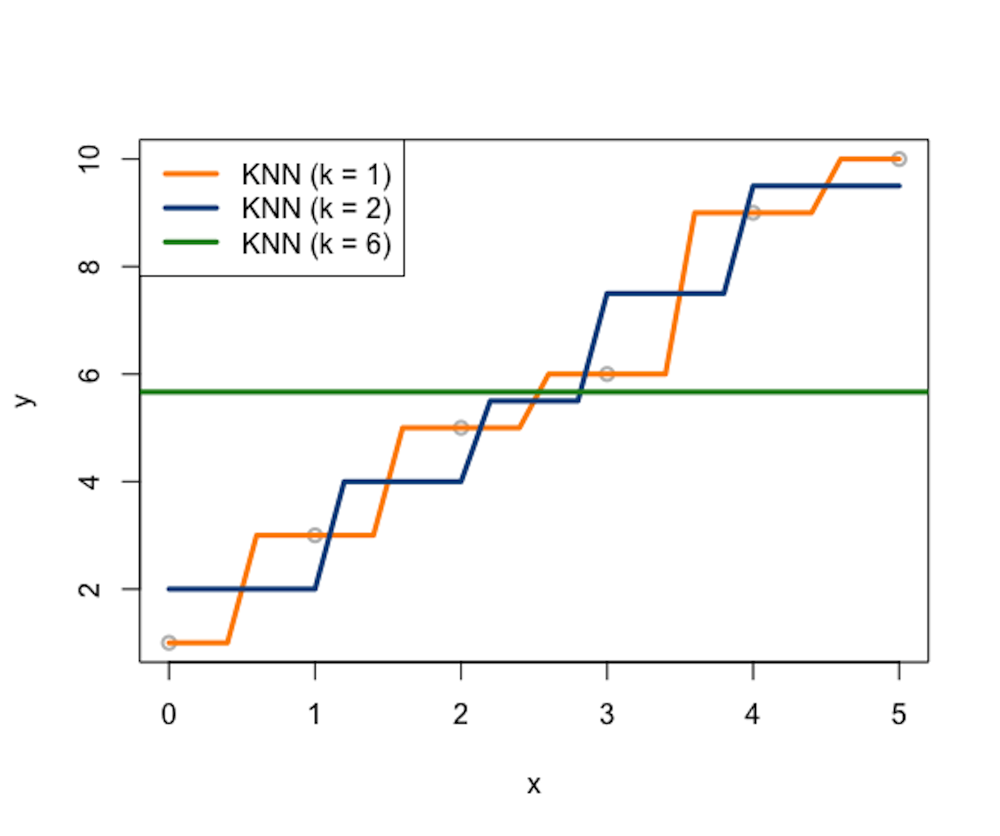Consider a data example as shown in Table 46. A visualization of the data points is shown in Figure 162, i.e., the gray data points.
Table 46: Example of a dataset with \(6\) data points
| ID | \(x\) | \(y\) |
|---|---|---|
| \(1\) | \(0\) | \(1\) |
| \(2\) | \(1\) | \(3\) |
| \(3\) | \(2\) | \(5\) |
| \(4\) | \(3\) | \(6\) |
| \(5\) | \(4\) | \(9\) |
| \(6\) | \(5\) | \(10\) |
Let’s build \(3\) KNN smoother models (e.g., \(k=1\), \(k=2\), and \(k=6\)) and use the Euclidean distance function to identify the nearest neighbors of a data point. Results are presented in Tables 47, 48, and 49, respectively. Note that, in this dataset, as there are in total \(6\) data points, the KNN model with \(k=6\) is the same as the trivial model that uses the average of \(y\) as predictions for all data points.
Table 47: Predictions by a KNN smoother model with \(k=1\) on some locations of \(x^*\)
| \(x^*\) | KNN | \(y^*\) |
|---|---|---|
| \(0.4\) | \(x_1\) | \(y_1\) |
| \(1.6\) | \(x_3\) | \(y_3\) |
| \(3.2\) | \(x_4\) | \(y_4\) |
| \(4.8\) | \(x_6\) | \(y_6\) |
Table 48: Predictions by a KNN smoother model with \(k=2\) on some locations of \(x^*\)
| \(x^*\) | KNN | \(y^*\) |
|---|---|---|
| \(0.4\) | \(x_1\), \(x_2\) | \((y_1 + y_2)/2\) |
| \(1.6\) | \(x_2\), \(x_3\) | \((y_2 + y_3)/2\) |
| \(3.2\) | \(x_4\), \(x_5\) | \((y_4 + y_5)/2\) |
| \(4.8\) | \(x_5\), \(x_6\) | \((y_5 + y_6)/2\) |
Table 49: Predictions by a KNN smoother model with \(k=6\) on some locations of \(x^*\)
| \(x^*\) | KNN | \(y^*\) |
|---|---|---|
| \(0.4\) | \(x_1\)-\(x_6\) | \(\sum_{n=1}^{6} y_n/6\) |
| \(1.6\) | \(x_1\)-\(x_6\) | \(\sum_{n=1}^{6} y_n/6\) |
| \(3.2\) | \(x_1\)-\(x_6\) | \(\sum_{n=1}^{6} y_n/6\) |
| \(4.8\) | \(x_1\)-\(x_6\) | \(\sum_{n=1}^{6} y_n/6\) |
The \(3\) KNN smoother models are also shown in Figure 162.
A distinct feature of the KNN smoother is the discrete manner to define the similarity between data points, which is, for any data point \(x^*\), the data point \(x_n\) is either a neighbor or not. The KNN smoother only uses the \(k\) nearest neighbors of \(x^*\) to predict \(y^*\). This discrete manner of the KNN smoother results in the serrated curves shown in Figure 162. This is obviously artificial, pointing out a systematic bias imposed by the KNN smoother model.
The kernel smoother. To remove this bias, the kernel smoother creates continuity in the similarity between data points. A kernel smoother defines \(w(x_n,x^* )\) in the following manner
\[w\left(x_{n}, x^{*}\right)=\frac{K\left(x_{n}, x^{*}\right)}{\sum_{n=1}^{N} K\left(x_{n}, x^{*}\right)}.\]
Here, \(K\left(x_{n}, x^{*}\right)\) is a kernel function as we have discussed in Chapter 7. There have been many kernel functions developed, for example, as shown in Table 50.
Table 50: Some kernel functions used in machine learning
| Kernel Function | Mathematical Form | Parameters |
|---|---|---|
| Line | \(K(\boldsymbol{x}_i, \boldsymbol{x}_j) = \boldsymbol{x}_i^T\boldsymbol{x}_j\) | null |
| Polynomial | \(K(\boldsymbol{x}_i, \boldsymbol{x}_j)= \left(\boldsymbol{x}_i^T\boldsymbol{x}_j + 1\right)^q\) | \(q\) |
| Gaussian radial basis | \(K(\boldsymbol{x}_i, \boldsymbol{x}_j) = e^{-\gamma\Vert \boldsymbol{x}_i - \boldsymbol{x}_j\Vert^2}\) | \(\gamma \geq 0\) |
| Laplace radial basis | \(K(\boldsymbol{x}_i, \boldsymbol{x}_j) = e^{-\gamma\Vert \boldsymbol{x}_i - \boldsymbol{x}_j\Vert}\) | \(\gamma \geq 0\) |
| Hyperbolic tangent | \(K(\boldsymbol{x}_i, \boldsymbol{x}_j) = tanh(\boldsymbol{x}_i^T\boldsymbol{x}_j+b)\) | b |
| Sigmoid | \(K(\boldsymbol{x}_i, \boldsymbol{x}_j) = tanh(a\boldsymbol{x}_i^T\boldsymbol{x}_j+b)\) | a,b |
| Bessel function | \(K(\boldsymbol{x}_i, \boldsymbol{x}_j) = \frac{bessel_{v+1}^n(\sigma\Vert \boldsymbol{x}_i - \boldsymbol{x}_j \Vert)}{\left(\Vert \boldsymbol{x}_i -\boldsymbol{x}_j \Vert\right)^{-n(v+1)}}\) | \(\sigma, n,v\) |
| ANOVA radial basis | \(K(\boldsymbol{x}_i, \boldsymbol{x}_j) = \left( \sum_{k=1}^n e^{-\sigma\left(x_i^k - x_j^k\right)}\right)^d\) | \(\sigma, d\) |
Many kernel functions are smooth functions. To understand a kernel function, using R to draw it is a good approach. For example, the following R code draws a few instances of the Gaussian radial basis kernel function and shows them in Figure 163. The curve illustrates how the similarity smoothly decreases when the distance between the two data points increases. And the bandwidth parameter \(\gamma\) controls the rate of decrease, i.e., the smaller the \(\gamma\), the less sensitive the kernel function to the Euclidean distance of the data points (measured by \(\Vert \boldsymbol{x}_i - \boldsymbol{x}_j\Vert^2\)).
 Figure 163: Three instances of the Gaussian radial basis kernel function (\(\gamma=0.2\), \(\gamma=0.5\), and \(\gamma=1\))
Figure 163: Three instances of the Gaussian radial basis kernel function (\(\gamma=0.2\), \(\gamma=0.5\), and \(\gamma=1\))
# Use R to visualize a kernel function
require(latex2exp) # enable the use of latex in R graphics
# write a function for the kernel function
gauss <- function(x,gamma) exp(- gamma * x^2)
x <- seq(from = -3, to = 3, by = 0.001)
plot(x, gauss(x,0.2), lwd = 1, xlab = TeX('$x_i - x_j$'),
ylab="Gaussian radial basis kernel", col = "black")
lines(x, gauss(x,0.5), lwd = 1, col = "forestgreen")
lines(x, gauss(x,1), lwd = 1, col = "darkorange")
legend(x = "topleft",
legend = c(TeX('$\\gamma = 0.2$'), TeX('$\\gamma = 0.5$'),
TeX('$\\gamma = 1$')),
lwd = rep(4, 4), col = c("black",
"darkorange","forestgreen"))R Lab
The 6-Step R Pipeline. Step 1 and Step 2 get the dataset into R and organize it in required format.
# Step 1 -> Read data into R workstation
library(RCurl)
url <- paste0("https://raw.githubusercontent.com",
"/analyticsbook/book/main/data/KR.csv")
data <- read.csv(text=getURL(url))
# str(data)
# Step 2 -> Data preprocessing
# Create X matrix (predictors) and Y vector (outcome variable)
X <- data$x
Y <- data$y
# Create a training data
train.ix <- sample(nrow(data),floor( nrow(data) * 4/5) )
data.train <- data[train.ix,]
# Create a testing data
data.test <- data[-train.ix,]Step 3 creates a list of models. For a kernel regression model, important decisions are made on the kernel function and its parameter(s). For example, here, we create two models with two kernel functions and their parameters:
# Step 3 -> gather a list of candidate models
# model1: ksmooth(x,y, kernel = "normal", bandwidth=10)
# model2: ksmooth(x,y, kernel = "box", bandwidth=5)
# model3: ...Step 4 uses cross-validation to evaluate the candidate models to identify the best model.
# Step 4 -> Use 5-fold cross-validation to evaluate the models
n_folds = 10 # number of fold
N <- dim(data.train)[1]
folds_i <- sample(rep(1:n_folds, length.out = N))
# evaluate model1
cv_mse <- NULL
for (k in 1:n_folds) {
test_i <- which(folds_i == k)
data.train.cv <- data.train[-test_i, ]
data.test.cv <- data.train[test_i, ]
require( 'kernlab' )
model1 <- ksmooth(data.train.cv$x, data.train.cv$y,
kernel = "normal", bandwidth = 10,
x.points=data.test.cv[,1])
# (1) Fit the kernel regression model with Gaussian kernel
# (argument: kernel = "normal") and bandwidth = 0.5; (2) There is
# no predict() for ksmooth. Use the argument
# "x.points=data.test.cv" instead.
y_hat <- model1$y
true_y <- data.test.cv$y
cv_mse[k] <- mean((true_y - y_hat)^2)
}
mean(cv_mse)
# evaluate model2 using the same script above
# ... The result is shown below
# [1] 0.2605955 # Model1
# [1] 0.2662046 # Model2Step 5 builds the final model.
# Step 5 -> After model selection, use ksmooth() function to
# build your final model
kr.final <- ksmooth(data.train$x, data.train$y, kernel = "normal",
bandwidth = 10, x.points=data.test[,1]) # Step 6 uses the final model for prediction.
# Step 6 -> Evaluate the prediction performance of your model
y_hat <- kr.final$y
true_y <- data.test$y
mse <- mean((true_y - y_hat)^2)
print(mse)This pipeline could be easily extended to KNN smoother model, i.e., using the knn.reg in the FNN package.
Simulation Experiment. We have created a R script in Chapter 5 to simulate data from nonlinear regression models. Here, we use the same R script as shown below.
# Simulate one batch of data
n_train <- 100
# coefficients of the true model
coef <- c(-0.68,0.82,-0.417,0.32,-0.68)
v_noise <- 0.2
n_df <- 20
df <- 1:n_df
tempData <- gen_data(n_train, coef, v_noise)The simulated data are shown in Figure 164 (i.e., the gray data points).
Figure 164: Kernel regression models with different choices on the bandwidth parameter (\(\gamma\)) of the Gaussian radial basis kernel function
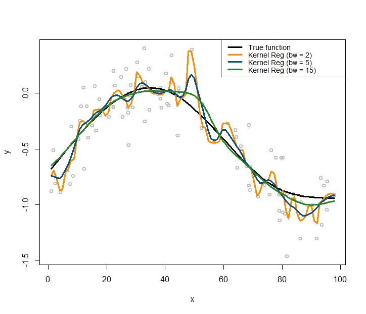The following R code overlays the true model, i.e., as the black curve, in Figure 164.
# Plot the true model
plot(y ~ x, col = "gray", lwd = 2)
lines(x, X %*% coef, lwd = 3, col = "black")Let’s use the kernel regression model to fit the data. We use the Gaussian radial basis kernel function, with three different choices of the bandwidth parameter (\(\gamma\)), i.e., (\(\gamma = 2\), \(\gamma = 5\), \(\gamma = 15\)). Then we overlay the three fitted kernel regression models in Figure 164 using the following R code.
lines(ksmooth(x,y, "normal", bandwidth=2),lwd = 3,
col = "darkorange")
lines(ksmooth(x,y, "normal", bandwidth=5),lwd = 3,
col = "dodgerblue4")
lines(ksmooth(x,y, "normal", bandwidth=15),lwd = 3,
col = "forestgreen")
legend(x = "topright",
legend = c("True function", "Kernel Reg (bw = 2)",
"Kernel Reg (bw = 5)", "Kernel Reg (bw = 15)"),
lwd = rep(3, 4),
col = c("black","darkorange","dodgerblue4","forestgreen"),
text.width = 32, cex = 0.85)As shown in Figure 164, the bandwidth parameter determines how smooth are the fitted curves: the larger the bandwidth, the smoother the regression curve233 Revisit Figure 163 and connect the observations made in both figures, i.e., which one in Figure 163 leads to the smoothest curve in Figure 164 and why?.
Similarly, we can use the same simulation experiment to study the KNN smoother model. We build three KNN smoother models with \(k=3\), \(k=10\), and \(k=50\), respectively.
# install.packages("FNN")
require(FNN)
## Loading required package: FNN
xy.knn3<- knn.reg(train = x, y = y, k=3)
xy.knn10<- knn.reg(train = x, y = y, k=10)
xy.knn50<- knn.reg(train = x, y = y, k=50)Similar to Figure 164, we use the following R code to draw Figure 165 that contains the true model, the sampled data points, and the three fitted models.
Figure 165: KNN regression models with different choices on the number of nearest neighbors

# Plot the data
plot(y ~ x, col = "gray", lwd = 2)
lines(x, X %*% coef, lwd = 3, col = "black")
lines(x, xy.knn3$pred, lwd = 3, col = "darkorange")
lines(x, xy.knn10$pred, lwd = 3, col = "dodgerblue4")
lines(x, xy.knn50$pred, lwd = 3, col = "forestgreen")
legend(x = "topleft",
legend = c("True function", "KNN (k = 3)",
"KNN (k = 10)", "KNN (k = 50)"),
lwd = rep(3, 4),
col = c("black", "darkorange", "dodgerblue4",
"forestgreen"),
text.width = 32, cex = 0.85)Comparing Figures 164 and 165, it seems that the curve of the kernel regression model is generally smoother than the curve of a KNN model. This observation relates to the discrete manner the KNN model employs, while the kernel model uses smooth kernel functions that introduce smoothness and continuity into the definition of the neighbors of a data point (thus no hard thresholding is needed to classify whether or not a data point is a neighbor of another data point).
With a smaller \(k\), the fitted curve by the KNN smoother model is less smooth. This is because a KNN smoother model with a smaller \(k\) predicts on a data point by relying on fewer data points in the training dataset, ignoring information provided by the other data points that are considered far away234 What about a linear regression model? When it predicts on a given data point, does it use all the data points in the training data, or just a few local data points?.
In terms of model complexity, the smaller the parameter \(k\) in the KNN model, the larger the complexity of the model. Most beginners think of the opposite when they first encounter this question.
Conditional variance regression model
Rationale and formulation
Another common complication when applying linear regression model in real-world applications is that the variance of the response variable may also change. This phenomenon is called heteroscedasticity in regression analysis. This complication can be taken care of by a conditional variance regression model that allows the variance of the response variable to be a (usually implicit) function of the input variables. This leads to the following model
\[\begin{equation} y=\boldsymbol{\beta}^T\boldsymbol{x}+\epsilon_{\boldsymbol{x}}, \epsilon_{\boldsymbol{x}} \sim N(0, \sigma^2_{\boldsymbol{x}}), \tag{99} \end{equation}\]
with \(\epsilon_{\boldsymbol{x}}\) modeled as a normal distribution with varying variance as a function of \(\boldsymbol{x}\).
 Figure 166: The data-generating mechanism of a conditional variance regression model
Figure 166: The data-generating mechanism of a conditional variance regression model
 Figure 167: \(\sigma_{\boldsymbol{x}}\) is a function of \(\boldsymbol{x}\)
Figure 167: \(\sigma_{\boldsymbol{x}}\) is a function of \(\boldsymbol{x}\)
The conditional variance regression model differs from the regular linear regression model in terms of how it models \(\sigma_{\boldsymbol{x}}\), as illustrated in Figure 166. In other words, the linear regression model is a special type of the conditional variance regression model, with \(\sigma_{\boldsymbol{x}}\) being a fixed constant as the horizontal line shown in Figure 167. The conditional variance regression model is a stacked model with one regression model on \(y\) and another model on \(\sigma_{\boldsymbol{x}}\). The model stacking is a common strategy in statistics to handle multi-layered problems.
Theory and method
Given a dataset with \(N\) data points and \(p\) variables
\[ \boldsymbol{y}=\left[ \begin{array}{c}{y_{1}} \\ {y_{2}} \\ {\vdots} \\ {y_{N}}\end{array}\right], \boldsymbol{X}=\left[ \begin{array}{ccccc}{1} & {x_{11}} & {x_{21}} & {\cdots} & {x_{p 1}} \\ {1} & {x_{12}} & {x_{22}} & {\cdots} & {x_{p 2}} \\ {\vdots} & {\vdots} & {\vdots} & {\vdots} & {\vdots} \\ {1} & {x_{1 N}} & {x_{2 N}} & {\cdots} & {x_{p N}}\end{array}\right]. \]
where \(\boldsymbol y \in R^{N \times 1}\) denotes the \(N\) measurements of the outcome variable, and \(\boldsymbol{X} \in R^{N \times(p+1)}\) denotes the data matrix that includes the \(N\) measurements of the \(p\) input variables and one dummy variable that corresponds to the intercept term \(\beta_0\). The remaining issue is how to estimate the regression parameters \(\boldsymbol{\beta}\). There are two situations: \(\sigma_{\boldsymbol{x}}^2\) is known and \(\sigma_{\boldsymbol{x}}^2\) is unknown.
The likelihood function is235 Readers can use Eq. (99) to derive this likelihood function. \[-\frac{\pi}{2} \ln 2 \pi-\frac{1}{2} \sum_{n=1}^{N} \log \sigma_{\boldsymbol x_{n}}^{2}-\frac{1}{2} \sum_{n=1}^{N} \frac{\left(y_{n}-\boldsymbol{\beta}^{T} \boldsymbol{x}_{n}\right)^{2}}{\sigma_{\boldsymbol x_{n}}^{2}}.\]
As we have known \(\sigma_{\boldsymbol x}^2\), the parameters to be estimated only involve the last part of the likelihood function. Thus, we estimate the parameters that minimize: \[\frac{1}{2} \sum_{n=1}^{N} \frac{\left(y_{n}-\boldsymbol{\beta}^{T} \boldsymbol{x}_{n}\right)^{2}}{\sigma_{\boldsymbol x_{n}}^{2}}.\] This could be written in the matrix form as236 \(\boldsymbol W\) is a diagonal matrix with its diagonal elements as \(\boldsymbol W_{nn}=\frac{1}{\sigma_{\boldsymbol x_n}^2}\).
\[\begin{equation} \min_\beta (\boldsymbol{y}-\boldsymbol{X \beta})^T\boldsymbol{W}(\boldsymbol{y}-\boldsymbol{X\beta}). \tag{100} \end{equation}\]
This has the same structure as the generalized least squares (GLS) problem we have mentioned in Chapter 3. To solve this optimization problem, we take the gradient of the objective function in Eq. (100) and set it to be zero
\[\frac{\partial (\boldsymbol{y}-\boldsymbol{\mathrm{X} \beta})^T\boldsymbol{W}(\boldsymbol{y}-\boldsymbol{ X\beta})}{\partial \boldsymbol \beta}=0,\]
which gives rise to the equation
\[\boldsymbol{X}^T \boldsymbol W (\boldsymbol y - \boldsymbol{X} \boldsymbol \beta) = 0.\]
This leads to the GLS estimator of \(\boldsymbol \beta\)
\[\begin{equation} \hat{\boldsymbol{\beta}} = (\boldsymbol{X}^T\boldsymbol{WX} )^{-1}\boldsymbol{X}^T \boldsymbol{W} \boldsymbol y. \tag{101} \end{equation}\]
A more complicated situation, also a more realistic one, is that we don’t know \(\sigma_{\boldsymbol x}^2\). If we can estimate \(\sigma_{\boldsymbol x}^2\), we can reuse the procedure we have developed for the case when we have known \(\sigma_{\boldsymbol x}^2\).
As shown in Figure 167, \(\sigma_{\boldsymbol x}^2\) is a function of \(\boldsymbol x\). In other words, it uses the input variables \(\boldsymbol x\) to predict a new outcome variable, \(\sigma_{\boldsymbol x}^2\). Isn’t this a regression problem? The problem here is we don’t have the “measurements” of the outcome variable, i.e., the outcome variable \(\sigma_{\boldsymbol x}^2\) is not directly measurable237 Another example of a latent variable..
To overcome this problem, we estimate the measurements of the latent variable238 I.e., just like what we did in the EM algorithm to estimate \(z_{nm}\). See Chapter 6., denoted as \(\hat{\sigma}_{\boldsymbol{x}_n}^2\) for \(n=1, 2, \dots, N\). We propose the following steps:
Initialize \(\hat{\sigma}_{\boldsymbol{x}_n}^2\) for \(n=1, 2, \dots, N\) by any reasonable approach (i.e., a trivial but popular approach, randomization).
Estimate \(\hat{\boldsymbol{\beta}}\) using the GLS estimator shown in Eq. (101), and get \(\hat{y}_n=\hat{\boldsymbol \beta}^T \boldsymbol{x}_n\) for \(n=1, 2, \dots, N\).
Derive the residuals \(\hat{\epsilon}_n = y_n-\hat{y}_n\) for \(n=1, 2, \dots, N\).
Build a regression model, e.g., using the kernel regression model, to fit \(\hat \epsilon\) using \(\boldsymbol x\).239 I.e., the training dataset is \(\{\boldsymbol x_n, \hat{\epsilon}_n, n=1, 2, \dots, N\}\).
Predict \(\hat{\sigma}^2_{\boldsymbol x_n}\) for \(n=1,2,\dots,N\) using the fitted model in Step 4.
Repeat Steps 2 – 5 until convergence or satisfaction of a stopping criteria240 E.g., fix the number of iterations, or set a threshold for changes in the parameter estimation..
This approach of taking some variables as latent variables and further using statistical estimation/inference to fill in the unseen measurements has been useful in statistics and used in many models, such as the latent factor models, structural equation models, missing values imputation, EM algorithm, Gaussian mixture model, graphical models with latent variables, etc.
R Lab
Simulation Experiment. We simulate a dataset to see how well the proposed iterative procedure works for the parameter estimation when \(\sigma_{\boldsymbol x}^2\) is unknown. The simulated data has one predictor and one outcome variable. The true model is
\[ y = 1 + 0.5 x + \epsilon_x, \quad \sigma^2_x = 0.5 + 0.8 x^2. \]
We stimulate \(100\) data points from this model using the R script shown below.
# Conditional variance function
# Simulate a regression model with heterogeneous variance
gen_data <- function(n, coef) {
x <- rnorm(100,0,2)
eps <- rnorm(100,0,sapply(x,function(x){0.5+0.8*x^2}))
X <- cbind(1,x)
y <- as.numeric(X %*% coef + eps)
return(data.frame(x = x, y = y))
}
n_train <- 100
coef <- c(1,0.5)
tempData <- gen_data(n_train, coef)
 Figure 168: Linear regression model to fit a heteroscedastic dataset
Figure 168: Linear regression model to fit a heteroscedastic dataset
The simulated data points are shown in Figure 168, together with the true model (the black line).
To initialize the iterative procedure of parameter estimation for the conditional variance regression model, we fit a regular linear regression model using the following R code.
# Fit the data using linear regression model (OLS)
x <- tempData[, "x"]
y <- tempData[, "y"]
fit.ols <- lm(y~x,data=tempData)
# Plot the data and the models
x <- tempData$x
X <- cbind(1, x)
y <- tempData$y
plot(y ~ x, col = "gray", lwd = 2)
# Plot the true model
lines(x, X %*% coef, lwd = 3, col = "black")
# Plot the linear regression model (OLS)
lines(x, fitted(fit.ols), lwd = 3, col = "darkorange")
legend(x = "topleft", legend = c("True function",
"Linear model (OLS)"),
lwd = rep(4, 4), col = c("black", "darkorange"),
text.width = 4, cex = 1)The fitted line is shown in Figure 168, which has a significant deviation from the true regression model. We use the fitted line as a starting point, i.e., so that we can estimate the residuals241 Residuals \(\hat{\epsilon}_n = y_n-\hat{y}_n\) for \(n=1, 2, \dots, N\). based on the fitted linear regression model. The estimated residuals are plotted in Figure 169 as grey dots. A nonlinear regression model, the kernel regression model implemented by npreg(), is fitted on these residuals and shown in Figure 169 as the orange curve. The true function of the variance, i.e., \(\sigma^2_x = 0.5 + 0.8 x^2\), is also shown in Figure 169 as the black curve.
It can be seen that the residuals provide a good starting point for us to approximate the underlying true variance function. To reproduce Figure 169, use the following R script.
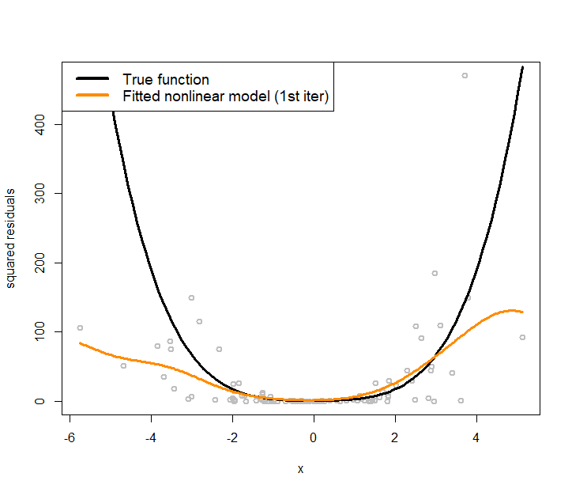 Figure 169: Nonlinear regression model to fit the residuals (i.e., the grey dots)
# Plot the residual estimated from the linear regression model (OLS)
plot(x,residuals(fit.ols)^2,ylab="squared residuals",
col = "gray", lwd = 2)
# Plot the true model underlying the variance of the
# error term
curve((1+0.8*x^2)^2,col = "black", lwd = 3, add=TRUE)
# Fit a nonlinear regression model for residuals
# install.packages("np")
require(np)
var1 <- npreg(residuals(fit.ols)^2 ~ x)
grid.x <- seq(from=min(x),to=max(x),length.out=300)
lines(grid.x,predict(var1,exdat=grid.x), lwd = 3,
col = "darkorange")
legend(x = "topleft",
legend = c("True function",
"Fitted nonlinear model (1st iter)"),
lwd = rep(4, 4), col = c("black", "darkorange"),
text.width = 5, cex = 1.2)The orange curve shown in Figure 169 provides an approach to initialize the iterative procedure of parameter estimation for the conditional variance regression model: to estimate the \(\hat{\sigma}_{\boldsymbol{x}_n}^2\) for \(n=1, 2, \dots, N\) in Step 1.242 In R, this is done by fitted(var1). Then, for Step 2, we fit a linear regression model according to Eq. (101). This is done by the following R code.
# Fit a linear regression model (WLS) with the weights specified
# by the fitted nonlinear model of the residuals
fit.wls <- lm(y~x,weights=1/fitted(var1))
plot(y ~ x, col = "gray", lwd = 2,ylim = c(-20,20))
# Plot the true model
lines(x, X %*% coef, lwd = 3, col = "black")
# Plot the linear regression model (OLS)
lines(x, fitted(fit.ols), lwd = 3, col = "darkorange")
# Plot the linear regression model (WLS) with estimated
# variance function
lines(x, fitted(fit.wls), lwd = 3, col = "forestgreen")
legend(x = "topleft",
legend = c("True function", "Linear (OLS)",
"Linear (WLS) + estimated variance"),
lwd = rep(4, 4),
col = c("black", "darkorange","forestgreen"),
text.width = 5, cex = 1)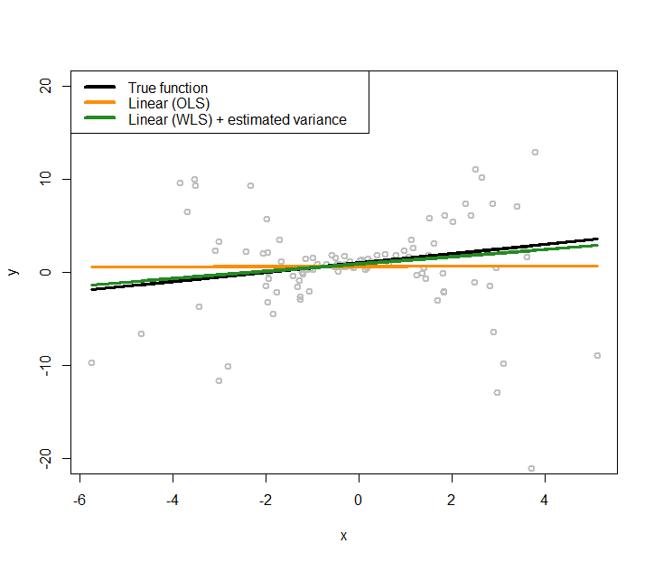 Figure 170: Fit the heteroscedastic dataset with two linear regression models using OLS and GLS (that accounts for the heteroscedastic effects with a nonlinear regression model to model the variance regression)
The new regression model is added to Figure 168 as the green line, which generates Figure 170. The new regression model is closer to the true model.
And we could continue this iterative procedure until a convergence criterion is met.
Real data. Now let’s apply the conditional variance regression model on the AD dataset. Like what we did in the simulation experiment, we first fit a regular linear regression model, then, use the kernel regression model to fit the residuals, then obtain the estimates of the variances, then estimate the regression parameters using Eq. (101). The R code is shown below. Results are shown in Figure 171.
library(RCurl)
url <- paste0("https://raw.githubusercontent.com",
"/analyticsbook/book/main/data/AD.csv")
AD <- read.csv(text=getURL(url))
str(AD)
# Fit the data using linear regression model (OLS)
x <- AD$HippoNV
y <- AD$MMSCORE
fit.ols <- lm(y~x,data=AD)
# Fit a linear regression model (WLS) with the weights specified
# by the fitted nonlinear model of the residuals
var1 <- npreg(residuals(fit.ols)^2 ~ HippoNV, data = AD)
fit.wls <- lm(y~x,weights=1/fitted(var1))
plot(y ~ x, col = "gray", lwd = 2)
# Plot the linear regression model (OLS)
lines(x, fitted(fit.ols), lwd = 3, col = "darkorange")
# Plot the linear regression model (WLS) with estimated variance
# function
lines(x, fitted(fit.wls), lwd = 3, col = "forestgreen")
legend(x = "topleft",
legend = c("Linear (OLS)",
"Linear (WLS) + estimated variance"),
lwd = rep(4, 4), col = c("darkorange","forestgreen"),
text.width = 0.2, cex = 1)
 Figure 171: Fit the AD dataset with two linear regression models using OLS and GLS (that accounts for the heteroscedastic effects with a nonlinear regression model to model the variance regression)
Figure 171: Fit the AD dataset with two linear regression models using OLS and GLS (that accounts for the heteroscedastic effects with a nonlinear regression model to model the variance regression)
We also visualize the fitted variance functions in Figure 172 via the following R code.
# Plot the residual estimated from the linear regression
# model (OLS)
plot(x,residuals(fit.ols)^2,ylab="squared residuals",
col = "gray", lwd = 2)
# Fit a nonlinear regression model for residuals
# install.packages("np")
require(np)
var2 <- npreg(residuals(fit.wls)^2 ~ x)
grid.x <- seq(from=min(x),to=max(x),length.out=300)
lines(grid.x,predict(var1,exdat=grid.x), lwd = 3,
col = "darkorange")
lines(grid.x,predict(var2,exdat=grid.x), lwd = 3,
col = "forestgreen")
legend(x = "topleft",
legend = c("Fitted nonlinear model (1st iter)",
"Fitted nonlinear model (2nd iter)"),
lwd = rep(4, 4),
col = c( "darkorange", "forestgreen"),
text.width = 0.25, cex = 1.2)Figure 172 shows that in the data the heteroscedasticity is significant. Learning the variance function is helpful in this context. First, in terms of the statistical aspect, it improves the fitting of the regression line. Second, knowing the variance function itself is important knowledge in healthcare, e.g., variance often implies unpredictability or low quality in healthcare operations, pointing out root causes of quality problems or areas of improvement.
 Figure 172: Nonlinear regression model to fit the residuals in the 2nd iteration for the AD data
Figure 172: Nonlinear regression model to fit the residuals in the 2nd iteration for the AD data
Remarks
Experiment
The following R code conducts the experiment in Figure 161 (left).
# Write a nice simulator to generate dataset with one
# predictor and one outcome from a polynomial regression
# model
require(splines)
seed <- rnorm(1)
set.seed(seed)
gen_data <- function(n, coef, v_noise) {
eps <- rnorm(n, 0, v_noise)
x <- sort(runif(n, 0, 100))
X <- cbind(1,ns(x, df = (length(coef) - 1)))
y <- as.numeric(X %*% coef + eps)
return(data.frame(x = x, y = y))
}
n_train <- 30
coef <- c(1,0.5)
v_noise <- 3
tempData <- gen_data(n_train, coef, v_noise)
tempData[31,] = c(200,200)
# Fit the data using linear regression model
x <- tempData[, "x"]
y <- tempData[, "y"]
fit <- lm(y~x,data=tempData)
# Plot the data
x <- tempData$x
X <- cbind(1, x)
y <- tempData$y
plot(y ~ x, col = "gray", lwd = 2)
lines(x, X %*% coef, lwd = 3, col = "black")
lines(x, fitted(fit), lwd = 3, col = "darkorange")
legend(x = "topleft", legend = c("True function",
"Fitted linear model"), lwd = rep(4, 4),
col = c("black", "darkorange"),
text.width = 100, cex = 1.5)Linear regression as a kernel regression model
Let’s consider a simple linear regression problem that has one predictor, \(x\), and no intercept
\[y=\beta x + \epsilon.\]
Given a dataset with \(N\) samples, i.e., \(\{x_n, y_n, n = 1, 2, \ldots, N. \}\), the least squares estimator of \(\beta\) is
\[\hat{\beta}=\frac{\left(\sum_{i=1}^{N} x_{n} y_{n}\right)}{\sum_{n=1}^{N} x_{n}^{2}}.\]
Now comes a new data point, \(x^*\). To derive the prediction \(y^*\),
\[y^{*} = \hat{\beta}x^{*} =x^{*} \frac{\left(\sum_{n=1}^{N} x_{n} y_{n}\right)}{\sum_{n=1}^{N} x_{n}^{2}}.\]
This could be further reformed as
\[y^{*}=\sum_{n=1}^{N} y_{n} \frac{x_{n}x^{*}}{\sum_{n=1}^{N} x_{n}^{2}}.\]
This fits the form of the kernel regression as defined in Eq. (98).243 I.e., \(w(x_{n},x^{*}) = \sum_{n=1}^{N} \frac{x_{n}x^{*}}{\sum_{n=1}^{N} x_{n}^{2}}.\)
More about heteroscedasticity
For regression problems, the interest is usually in the modeling of the relationship between the mean244 See sidenote 11 and Figure 5. of the outcome variable with the input variables. Thus, when there is heteroscedasticity in the data, a nonparametric regression method is recommended to estimate the latent variance, more from a curve-fitting perspective which is to smooth and estimate, rather than a modeling perspective which is to study the relationship between the outcome variable with input variables. But, of course, we can still study how the input variables affect the variance of the response variable explicitly. Specifically, we can use a linear regression model to link the variance of \(y\) with the input variables. The iterative procedure developed for the case when \(\sigma_{\boldsymbol{x}}^2\) is unknown is still applicable here for parameter estimation.
Exercises
Table 51: Dataset for building a kernel regression model
| ID | \(x_1\) | \(y\) |
|---|---|---|
| \(1\) | \(-0.32\) | \(0.66\) |
| \(2\) | \(-0.1\) | \(0.82\) |
| \(3\) | \(0.74\) | \(-0.37\) |
| \(4\) | \(1.21\) | \(-0.8\) |
| \(5\) | \(0.44\) | \(0.52\) |
| \(6\) | \(-0.68\) | \(0.97\) |
- Manually build a kernel regression model with Gaussian kernel with bandwidth parameter \(\gamma=1\) using the data shown in Table 51, and predict on the data points shown in Table 52.
Table 52: Testing dataset for the kernel regression model
| ID | \(x_1\) | \(y\) |
|---|---|---|
| \(1\) | \(-1\) | |
| \(2\) | \(0\) | |
| \(3\) | \(1\) |
Follow up on the dataset in Q1. Manually build a KNN regression model with \(K = 2\). Predict on the testing data in Table 52.
Follow up on the dataset in Q1. Use the R pipeline for KNN regression on this data. Compare the result from R and the result by your manual calculation.
Follow up on the dataset in Q1. Use the
gausskernel()function from the R packageKRLSto calculate the similarity between the data points (including the \(6\) training data points and the \(3\) testing data points in Tables 51 and 52).
 Figure 173: The true model and its sampled data points
Figure 173: The true model and its sampled data points
- Use the
BostonHousingdataset from the R packagemlbench, select the variablemedvas the outcome, and use other numeric variables as the predictors. Run the R pipeline for KNN regression on it. Use cross-validation to select the best number of nearest neighbor, and summarize your findings.
 Figure 174: The true model and its sampled data points
Figure 174: The true model and its sampled data points
Use the
BostonHousingdataset from the R packagemlbenchand select the variablelstatas the predictor andmedvas the outcome, and run the R pipeline for kernel regression on it. Try the Gaussian kernel function with its bandwidth parameter taking values as \(5, 10, 30, 100\).Figure 173 shows a nonlinear model (i.e., the curve) and its sampled points. Suppose that the curve is unknown to us, and our task is to build a KNN regression model with \(K=2\) based on the samples. Draw the fitted curve of this KNN regression model.
Suppose that the underlying model is a linear model, as shown in Figure 174. To use KNN model to approximate the underlying model, we need samples. Suppose that we could afford sampling \(8\) data points. Which locations would you like to acquire samples in order to achieve best approximation of the underlying model using your later fitted KNN model?
Chapter 10. Synthesis: Architecture & Pipeline
Overview
Chapter 10 is about synthesis. Synthesis is not a rigorous term but refers to a type of common pratice that integrates, consolidates, or streamlines many otherwise stand-alone models into a mega-model or pipeline. Two styles of synthesis will be introduced here, one represented by deep learning, and another takes the form as pipelines.
Deep learning
To know more about “deep learning,” we need to start with its name. The word “deep” is ambiguous but expressive, undetermined but significant. This inviting gesture may have a dazzling effect, but it is based on a specific reason: a deep neural network model is truly deep in terms of its architecture—from input variables to output variables there are many layers in between. Other than that, it is not different from other models in this book. The basic framework of learning as shown in Figure 2 and Eq. (1) in Chapter 2 still holds true for deep learning.
The word “deep” doesn’t imply that other models we have learned so far are not deep. Many models have been studied in great depth, such as the linear models245 Anderson, T. W., An Introduction to Multivariate Statistical Analysis, Wiley, 3rd edition, 2003. and the learning theory developed for the support vector machine246 Vapnik, V., The Nature of Statistical Learning Theory, Springer, 2000.. In this chapter, we will refer to deep learning, specifically to those neural network (NN) models that have many hidden layers, because for NN models we could take the word “deep” at face value—if a model looks deep, it is a deep model. This superficiality, however, builds on a solid foundation247 E.g., the Universal approximation theorem; please refer to Hornik, K., Approximation Capabilities of Multilayer Feedforward Networks, Neural Networks, Volume 4, Issue 2, Pages 251-257, 1991.: a neural network with a more complex architecture means a more complex form for \(f(x)\) in Eq. (1). In other words, this is an attractive proposal, since it suggests we can easily build up depth and capacity of the model by merely increasing its visual complexity. And there have been tools that allow users to drag ready-made modules and piece them together to create the architecture of the NN model they’d like to build, and automatically translate the architecture into its mathematical form and carry out the computational tasks for model training and prediction248 E.g., TensorFlow https://www.tensorflow.org/..
Rationale and formulation
An architecture means a function. We have mentioned in Chapter 2 that the data modeling methods seek explicit forms of \(f(x)\) in Eq. (1), while algorithmic modeling methods seek implicit forms. Deep models bend the two. It is like an algorithmic modeling method that you don’t need to write up the specific form of \(f(x)\), while on the other hand, in theory you could write up \(f(x)\) after you have had the architecture249 In this sense, it is also like the kernel trick used in the SVM model. Remember that in Chapter 7 we have seen that by using the kernel function in SVM, an implicit transformation of the variables is achieved, and we usually do not know what is the explicit form of \(\phi(x)\) the SVM model encodes, but in theory there is such a form of \(\phi(x)\)..
The architecture of a NN model could be quite expressive, i.e., Figure 175 shows an architecture of a neural network model with one layer that is flexible enough to include existing models such as the linear regression model, logistic regression model, and SVM, as shown in Table 53.
Figure 175: Architecture of a simple neural network model. The figure is drawn using Alex LeNail’s online tool: http://alexlenail.me/NN-SVG/index.html.
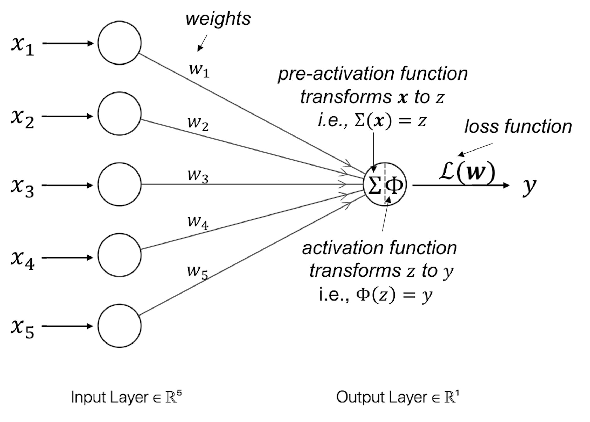Table 53: Expression of some models using the architecture of a one-layer neural network in Figure 175
| Model | Activation Function \(\Phi\) | |
|---|---|---|
| Linear regression | Linear: \(\Phi(z)=z\) | \(\mathcal{L}(\boldsymbol{w})=\left(y-\sum_{i=1}^{p} w_{i} x_{i}\right)^2\) |
| Logistic regression | Sigmoid: \(\Phi(z)=\frac{1}{1-e^{-z}}\) | \(\mathcal{L}(\boldsymbol{w})=\log(1+\exp[-y\sum_{i=1}^{p} w_{i} x_{i}])\) |
| Support vector machine | Null: \(\Phi(z)=z\) | \(\mathcal{L}(\boldsymbol{w})=\max(0,1-y\sum_{i=1}^{p} w_{i} x_{i})\) |
The NN structure shown in Figure 175 is a basic form of NN architecture that is called the perceptron. As a basic form, it is a module that could be repeatedly used in different kinds of composition, e.g., in parallel, concatenation, or in a sequence. The basic forms are also called architectural primitives or foundational building blocks. Most deep architectures are built by combining these architectural primitives. Figures 176 and 177 show two examples. There have been many of those basic forms developed. Softwares such as TensorFlow build on this concept by allowing users to use graphic user interface (GUI) to compose the architecture of their deep networks using these building blocks250 For introduction of TensorFlow, readers may check out this book: Ramsundar, B. and Zadeh, R. TensorFlow for Deep Learning: from Linear Regression to Reinforcement Learning, O’Reilly Media, 2017..
As we have mentioned, for NN models there are theories showing that if a model looks deep, it is a deep model. The universal approximation theorem has shown that a NN model with one hidden layer could characterize all smooth functions. While there is no guarantee that in practice adding more layers will always be better, the theoretical results did imply that is the right direction.
Figure 176: Build more complicated NN models with a basic form

Figure 177: Build deeper NN models with basic forms and activation functions
Recall the XOR problem introduced in Chapter 7 as shown in Figure 121. With a slight modification of the problem to facilitate the presentation here, the dataset has \(4\) data points
\[ \begin{array}{l}{\boldsymbol{x}_{1}=(0,0), y_{1}=0}; \\ {\boldsymbol{x}_{2}=(0,1), y_{2}=1}; \\ {\boldsymbol{x}_{3}=(1,0), y_{3}=1} ;\\ {\boldsymbol{x}_{4}=(1,1), y_{4}=0.}\end{array} \]
This is a typical nonlinear problem. A NN model with one hidden layer as shown in Figure 178 could solve this problem.
Figure 178: Architecture of a neural network with a hidden layer
For instance, for \(\boldsymbol{x}_{1}=(0,0)\), from the input layer to the first node (i.e., the upper one) in the hidden layer, we have
\[ 0 \times 1 + 0 \times 1 + 1 \times 0 = 0. \]
The value \(0\) provides the input for the activation function at the hidden node, and we have \(\Phi(0) = \max (0,0) = 0\).
From the input layer to the second node (i.e., the lower one) in the hidden layer, we have
\[ 0 \times 1 + 0 \times 1 + 1 \times -1 = -1. \]
The value \(-1\) provides the input for the activation function at the hidden node, and we have \(\Phi(-1) = \max (0,-1) = 0\).
Then, from the hidden layer to the output layer, we have
\[ 1 \times 0 - 2 \times 0 = 0. \]
Using the activation function at the output layer, \(\Phi(z) = z\), the final prediction correctly predicts
\[ y = 0. \]
We can follow the same process and see that the two-layer NN as shown in Figure 178 could solve the XOR problem.
How to read a deep net. Roughly speaking, there are three major efforts in developing deep learning models: to create basic forms, to design architectural principles or composition rules, and to design learning algorithms that can robustly and efficiently learn the parameters of the deep model using data251 A deep NN model has massive parameters, so learning these parameters from data had been a challenge in the past. Some contributed the recent revitalization of deep learning—as the neural network model had its “rise and fall” in the past decades—to a range of optimization tricks such as pretraining and dropout, the growth of computing power, and the availability of Big Data, all enabled the data-driven learning of a giant collection of parameters of a deep NN model.. Practical application of deep models is to make the network deeper by stacking these basic forms following some composition rules. From this perspective, it is not a surprise to see why it was quoted, “For reason in this sense is nothing but reckoning, that is adding and subtracting …”252 Hobbes, T., Leviathan. 1651., to explain the logic of designing neural networks in Raul Rojas’s book253 Rojas. R., Neural Networks: a Systematic Introduction. Springer, 1996..
We can take a look at the convolutional neural networks (CNN) as an example. The CNN is one popular deep NN model and is often used for learning from image data. Its architecture consists of a few basic forms and composition rules that are particularly developed for images.

Figure 179: Architecture of a CNN model
The CNN architecture shown in Figure 179 has two parts. The first part (i.e., everything before the last \(3\) layers) is to translate the image data into vectorized form and provides the input for the second part (i.e., the last \(3\) layers) that is a NN as we have discussed earlier. One basic form of CNN is the convolutional layer. The basic purpose of a convolutional layer is to transform the image into a feature map, as shown in Figure 180.
Figure 180: A convolutional layer aggregates spatially correlated information as a feature extraction process

Suppose that \(w_1=1\), \(w_2=2\), \(w_3=2\), \(w_4=1\) in Figure 180; Figure 181 further shows the computational details of how the convolutional layer works.
Figure 181: How the convolutional layer works.

The convolutional layer is good at exploiting the spatial structure254 I.e., if the entities that are close to each other are semantically related, it is a spatial structure. in its input data. Because of this, CNN is particularly useful for learning from image data, since for images the pixels close to one another are usually semantically related.
The max pooling layer is another basic form of CNN. Figure 182 shows how it works. The max pooling looks too simple an idea, but it works remarkably well. The real mystery when we look at a “simple” idea like this is why it was the max pooling that stood out among many other “simple” ideas. But there has been no conclusive theory to explain it255 To quote Andrew Ng in his online course for convolutional neural networks (https://www.coursera.org/learn/convolutional-neural-networks): “… the main reason people use max pooling is because it’s been found in a lot of experiments to work well … I don’t know of anyone who fully knows if that is the real underlying reason.”.
But one can compare the max pooling with the convolutional layer. One difference is that the parameters of a convolutional layer is learned from data, making it an adaptive and flexible form to a particular problem. The max pooling, however, is a fixed nonlinear transformation without parameters to learn. In other words, it has no computational cost. No wonder it is believed that one main function of the max pooling is to reduce the number of parameters of the deep NN model and to alleviate the computational cost. This would relieve some computational burden since a deep NN model has a massive number of parameters to be learned from data. Another aspect we should think of is that max pooling is good for image data. It may help increase the robustness of the model against translation invariance, i.e., to recognize an object, say, a cat, in an image, we need the algorithm to be resilient to the potential variation on angle or distance or any other factors that cause scale issues. Max pooling only keeps the “max” and discards the rest.
Figure 182: How the max pooling layer works
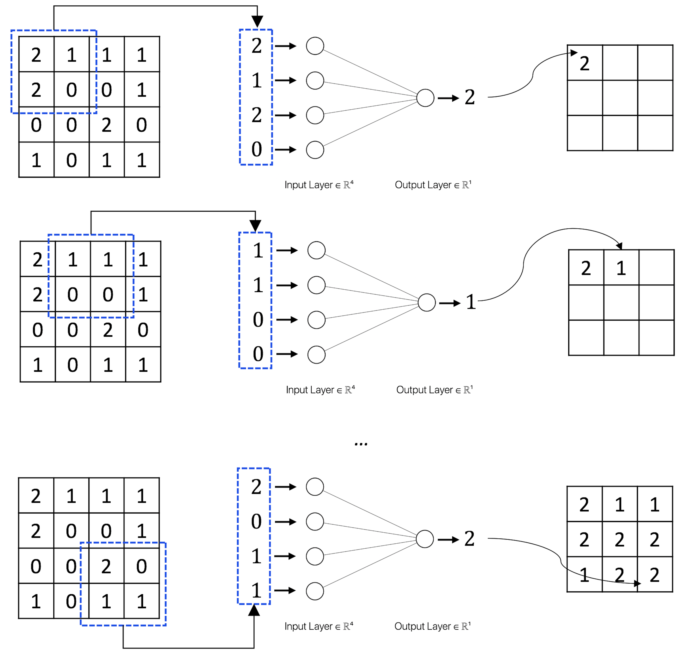One can add as many convolutional layers or max pooling layers as needed when designing a CNN model, and the convolutional layers and the max pooling layer could be alternatively arranged as a pipeline to extract features from the image data, e.g., in Figure 179, there are \(2\) convolutional layers and \(1\) max pooling layer. It has been found in many cases that for the CNN to be successful, it needs to be made quite deep. For this reason, some consider the deep NN models a different species from NN models.
R Lab
The 6-Step R Pipeline for NN. Step 1 and Step 2 get the dataset into R and organize it in required format.
# Step 1 -> Read data into R workstation
library(RCurl)
url <- paste0("https://raw.githubusercontent.com",
"/analyticsbook/book/main/data/KR.csv")
data <- read.csv(text=getURL(url))
# str(data)
# Step 2 -> Data preprocessing
# Create X matrix (predictors) and Y vector (outcome variable)
X <- data$x
Y <- data$y
# Create a training data
train.ix <- sample(nrow(data),floor( nrow(data) * 4/5) )
data.train <- data[train.ix,]
# Create a testing data
data.test <- data[-train.ix,]Step 3 creates a list of models. For a NN model, important decisions are made on the design of the architecture, e.g., how many hidden layers and how many nodes in each hidden layer. For example, here, we create three NN models, all have one hidden layer but a different number of hidden nodes.
# Step 3 -> gather a list of candidate models
# NN model with one hidden layer and different # of nodes
# model1: neuralnet(y~x, data=data, hidden=c(3))
# model2: neuralnet(y~x, data=data, hidden=c(5))
# model3: neuralnet(y~x, data=data, hidden=c(8)) Step 4 uses cross-validation to evaluate the candidate models to identify the best model.
# Step 4 -> cross-validation for model evaluation
n_folds = 10 # number of folds
# the sample size, N, of the dataset
N <- dim(data.train)[1]
folds_i <- sample(rep(1:n_folds, length.out = N))
library(neuralnet)
# cv_mse records the prediction error for each fold
cv_mse <- NULL
for (k in 1:n_folds) {
# In each iteration of the n_folds iterations
test_i <- which(folds_i == k)
# This is the testing data, from the ith fold
data.test.cv <- data.train[test_i, ]
# Then, the remaining data form the training data
data.train.cv <- data.train[-test_i, ]
# Fit the neural network model with one hidden layer of 3
model1 <- neuralnet(y~x, data=data, hidden=c(3))
# Predict on the testing data using the trained model
pred <- compute (model1, data.test.cv)
y_hat <- pred$net.result
model1$y_hat <- y_hat
# get the true y values for the testing data
true_y <- data.test.cv$y
# mean((true_y - y_hat)^2): mean squared error (MSE).
# The smaller this error, the better your model is
cv_mse[k] <- mean((true_y - y_hat)^2)
}
mean(cv_mse)The result is shown below
# [1] 0.09439574 # Model1
# [1] 0.04433521 # Model2
# [1] 0.1142009 # Model3Obviously, model2 achieves the lowest prediction error.
Figure 183: Visualization of the three fitted models and the data

We can also visually examine the fitness of the three models in Figure 183 to see how well the three models fit the data.
# Use visual inspection to assist the model selection.
# Predict on the testing data using the trained model
pred <- compute(model1, data.train)
y_hat <- pred$net.result
model1$y_hat <- y_hat
# Predict on the testing data using the trained model
pred <- compute(model2, data.train)
y_hat <- pred$net.result
model2$y_hat <- y_hat
# Predict on the testing data using the trained model
pred <- compute(model3, data.train)
y_hat <- pred$net.result
model3$y_hat <- y_hat
plot(y ~ x, data = data.train, col = "gray", lwd = 2)
lines(data.train$x, model1$y_hat,lwd = 3, col = "darkorange")
lines(data.train$x, model2$y_hat,lwd = 3, col = "blue")
lines(data.train$x, model3$y_hat,lwd = 3, col = "black")
legend(x = "topright", legend = c("NN (3 hidden nodes)",
"NN (5 hidden nodes)", "NN (8 hidden nodes)"),
lwd = rep(3, 4), col = c("darkorange", "blue", "black"),
text.width = 32, cex = 0.85)Figure 184: Visualization of the architecture of the final model

Step 5 builds the final model. Figure 184 shows the architecture of the final model.
# Step 5 -> After model selection, build your final model
nn.final <- neuralnet(y~x, data=data.train, hidden=c(5)) #
plot(nn.final) # Draw the architecture of the NN modelStep 6 uses the final model for prediction.
# Step 6 -> Evaluate the prediction performance of your model
# Predict on the testing data using the trained model
pred <- compute(nn.final, data.test)
y_hat <- pred$net.result
# get the true y values for the testing data
true_y <- data.test$y
# mean((true_y - y_hat)^2): mean squared error (MSE).
# The smaller this error, the better your model is
mse <- mean((true_y - y_hat)^2)
print(mse)The 6-Step R Pipeline for CNN. Before starting the pipeline, let’s first install the Keras package.
install.packages("devtools") # install devtools
devtools::install_github("rstudio/keras") # install KerasStep 1 and Step 2 get the MNIST handwritten digit dataset into R and process the data in required format. The goal is to classify a handwritten number into one of the \(10\) classes (from \(0\) to \(9\)).
# Step 1 -> Read digits classification data
library(keras)
mnist <- dataset_mnist()
# Step 2 -> Data preprocessing
# code adapted from
# keras.rstudio.com/articles/examples/mnist_cnn.html
# Input image dimensions
img_rows <- 28
img_cols <- 28
num_classes <- 10
# The data, shuffled and split between training and testing sets
x_train <- mnist$train$x
y_train <- mnist$train$y
x_test <- mnist$test$x
y_test <- mnist$test$y
# Redefine dimension of train/test inputs
x_train <- array_reshape(x_train,
c(nrow(x_train), img_rows, img_cols, 1))
x_test <- array_reshape(x_test,
c(nrow(x_test), img_rows, img_cols, 1))
input_shape <- c(img_rows, img_cols, 1)
# Transform RGB values into [0,1] range
x_train <- x_train / 255
x_test <- x_test / 255
cat('x_train_shape:', dim(x_train), '\n')
cat(nrow(x_train), 'train samples\n')
cat(nrow(x_test), 'test samples\n')
# Convert class vectors to binary class matrices
y_train <- to_categorical(y_train, num_classes)
y_test <- to_categorical(y_test, num_classes)Step 3 creates different models. In deep learning, parameters that are determined before training a model are called hyperparameters. Hyperparameters for a CNN include number of layers, number of nodes for a layer, kernel size of a convolution layer256 E.g., in Figure 181 the kernel size is \(2\)., etc. Here we create three models with different kernel sizes for the convolution layers.
# Step 3 -> gather a list of candidate models
define_model <- function(kernel_size){
model <- keras_model_sequential() %>%
# convolution layer 1
layer_conv_2d(filters = 8,
kernel_size = c(kernel_size,kernel_size),
activation = 'relu',
input_shape = input_shape) %>%
# pooling layer 1
layer_max_pooling_2d(pool_size = c(2, 2)) %>%
# convolution layer 2
layer_conv_2d(filters = 16,
kernel_size = c(kernel_size,kernel_size),
activation = 'relu') %>%
# pooling layer 2
layer_max_pooling_2d(pool_size = c(2, 2)) %>%
# dense layers
layer_flatten() %>%
layer_dense(units = 32, activation = 'relu') %>%
layer_dense(units = num_classes, activation = 'softmax')
# Compile model
model %>% compile(
loss = loss_categorical_crossentropy,
optimizer = optimizer_adadelta(),
metrics = c('accuracy')
)
return(model)
}
# define three models
model_kernel_1 = define_model(kernel_size=2)
model_kernel_2 = define_model(kernel_size=3)
model_kernel_3 = define_model(kernel_size=5)Step 4 uses cross-validation to evaluate the candidate models to identify the best model.
# Step 4 -> Use cross-validation for model evaluation
# set upfunction for evaluating accuracy
cv_accuracy <- function(n_folds, kernel_size,x_train,y_train){
N <- dim(x_train)[1] # the sample size, N, of the dataset
folds_i <- sample(rep(1:n_folds, length.out = N))
accuracy_v <- NULL
for (k in 1:n_folds) {
# set up training and testing data
test_i <- which(folds_i == k)
x.train.cv <- x_train[-test_i,,,,drop=FALSE]
x.test.cv <- x_train[test_i,,,,drop=FALSE]
y.train.cv <- y_train[-test_i,,drop=FALSE ]
y.test.cv <- y_train[test_i,,drop=FALSE ]
model <- define_model(kernel_size)
model %>% fit(
x_train, y_train, batch_size = 128,
epochs = 2,validation_split = 0.2, verbose = 0
)
scores <- model %>% evaluate(
x.test.cv, y.test.cv, verbose = 0)
accuracy_v <- c(accuracy_v, scores[2])
}
return(accuracy_v)
}
# get average accuracy for each model
accuracy_v_kernel_1 <-
cv_accuracy(n_folds=2,kernel_size=2,x_train,y_train)
print(mean(accuracy_v_kernel_1))
accuracy_v_kernel_2 <-
cv_accuracy(n_folds=2,kernel_size=3,x_train,y_train)
print(mean(accuracy_v_kernel_2))
accuracy_v_kernel_3 <-
cv_accuracy(n_folds=2,kernel_size=5,x_train,y_train)
print(mean(accuracy_v_kernel_3))The result is shown below.
# [1] 0.9680667 # Model1
# [1] 0.9742167 # Model2
# [1] 0.9760833 # Model3Step 5 builds the final model based on all the training data.
# Step 5 -> After model selection, build your final model
model <- define_model(5)
model %>% fit(
x_train, y_train, batch_size = 128,
epochs = 2,validation_split = 0.2, verbose = 0
)Step 6 uses the final model for prediction.
# Step 6 -> Evaluate the prediction performance of your model
scores <- model %>% evaluate(
x_test, y_test, verbose = 0)
print(scores[2])To visualize the process of how this CNN model works, the following R code is used to visualize the output from each layer, shown in Figure 185.
Figure 185: Visualize the outputs from all layers of the CNN model

# visualize output for a layer
# use the first image from testing data
img <- x_test[1,,,]
plot(as.raster(img))
img <- x_test[1,,,,drop=FALSE]
# define function to plot an image
plot_image <- function(channel) {
rotate <- function(x) t(apply(x, 2, rev))
image(rotate(channel), axes = FALSE, asp = 1,
col = gray.colors(12))
}
# plot the testing image
plot_image( 1 - img[1,,,] )
# plot the output from the second layer
layer_number = 2
# print layer name
layer_name <- model$layers[[layer_number]]$name
print(layer_name)
layer_outputs <- lapply(model$layers[layer_number],
function(layer) layer$output)
activation_model <- keras_model(inputs = model$input,
outputs = layer_outputs)
# calculate the outputs from the layer for the image
layer_activation <- activation_model %>% predict(img)
# check dimension
print(dim(layer_activation))
# number of features
n_features <- dim(layer_activation)[[4]]
# image width
image_size <- dim(layer_activation)[[2]]
# number of columns and images per column
# (each column plots an image)
n_cols <- n_features
images_per_col <- 1 #
# plot n_cols of images
op <- par(mfrow = c(n_cols, images_per_col),
mai = rep_len(0, 4))
# plot each image
for (col in 0:(n_cols-1)) {
col_ix <- col + 1
channel_image <- layer_activation[1,,,col_ix]
plot_image(1-channel_image)
}inTrees
Rationale and formulation
What is a variable? Given an Excel file, we call the column that is titled as the name Age as a variable. And in fact, as a convention, in an Excel file or a data table in some common formats, we usually do not doubt that each column implies a variable. These “variables,” or entities, may have definitions in the domain of common sense (i.e., where we take things for granted), but they may not be the best candidates to characterize the system under study. Recall that in Chapter 2 we mentioned that the goal of modeling begins with abstraction—“identification of a few main entities from the problem,” and continues to “characterize their relationships.” If we comfortably play the data using the variables that have been defined without examination, we lose sight of a large territory of data analytics—identification of a few main entities from the problem that can sufficiently characterize the problem.
Now let’s switch to the domain of linear regression. A variable is an abstract entity in the equation of the linear regression model257 I.e., denoted as \(x_i\)., multiplied by a regression coefficient258 I.e., denoted as \(\beta_i\).. It stands in the equation in parallel with other variables, which jointly determines an outcome variable. This form implies that the difference between the variables are only numeric, characterized by the differences in signs and magnitudes (i.e., encoded in the regression coefficients), but not in semantics. Now comes a reflection: in order for a linear regression model to work out in an application, shouldn’t we ensure that the variables could be lined up in this manner of apposition259 Apposition—with a little abuse of the term—the grammar used in the linear regression to line up the variables in a parallel and additive manner.?
\[\begin{equation} y = \ldots + \underbrace{\beta_1 x_1}_{\text{A}} + \underbrace{\beta_2 x_2}_{\text{p}} + \underbrace{\beta_3 x_3}_{\text{p}} + \underbrace{\beta_4 x_4}_{\text{o}} + \underbrace{\beta_5 x_5}_{\text{s}} + \underbrace{\beta_6 x_6}_{\text{i}} + \underbrace{\beta_7 x_7}_{\text{t}} + \underbrace{\beta_8 x_8}_{\text{i}} + \underbrace{\beta_9 x_9}_{\text{o}} + \underbrace{\beta_{10} x_{10}}_{\text{n}} + \ldots \tag{102} \end{equation}\]
In other words, if the variables in the domain of common sense are not semantic equals, the application of linear regression on them is questionable. For example, it is probably common sense to line up a few genetic factors in Eq. (102), but could we also put Age as another variable that stands among the genetic factors in a line? In many contexts, we need to work out a better definition of the variable, i.e., it is not uncommon to define two new variables such as \(\text{Age} \leq 65\) and \(\text{Age} > 65\) instead of using the variable Age directly. Sometimes we use the variable Age in a model because it is named as Age. But what is Age? When we put a variable in a model, it is destined to be redefined, either before the analysis, or after, or along the way.
This effort to redefine variables could be automated by tree models. Recall that the tree models use rule-based semantics. Rules like \(\text{Age} \leq 65\) and \(\text{Age} > 65\) sometimes yield statistically significant and semantically meaningful entities, perfect candidates for variable redefinition purposes. And a tree is essentially a collection of multiple rules. If we could run tree models on a dataset first, we could extract those rules, and each rule is a new variable.
This is the starting point of inTrees. It uses the random forest to collect potentially useful rules260 This step automates the variable redefinition process., then puts the rules as the variables into a model261 I.e., a classification/regression model. This step automates the integration of the variable redefinition with modeling. and employs a computational process to select the final variables. In this way, we have the best parts of both methods: the rules capture the variable-level patterns in the data, and the model (i.e., a regression model) captures the synthetic effects of these patterns in predicting an outcome variable. Note that inTrees is not the first of its kind. It follows a few pioneers such as the rulefit and modifies existing efforts according to some in-field experiences.
Theory and method
The inTrees uses a framework that is shown in Figure 186. In the following text, we introduce each functionality of the inTrees framework.
Figure 186: The pipeline of inTrees

Consider the dataset that has \(2\) predictors and \(7\) instances as shown in Table 54.
Table 54: Example of a dataset with \(7\) instances
| ID | \(x_1\) | \(x_2\) | Class |
|---|---|---|---|
| \(1\) | \(1\) | \(1\) | \(C0\) |
| \(2\) | \(1\) | \(0\) | \(C1\) |
| \(3\) | \(0\) | \(1\) | \(C1\) |
| \(4\) | \(0\) | \(0\) | \(C1\) |
| \(5\) | \(0\) | \(0\) | \(C0\) |
| \(6\) | \(0\) | \(0\) | \(C0\) |
| \(7\) | \(0\) | \(0\) | \(C0\) |
Extract rules. The inTrees uses a tree emsemble learning method to grow many trees. A decision tree can be dissembled into a set of rules. For example, suppose that a random forest model has been built on the dataset shown in Table 54. One tree of this random forest model is shown in Figure 187. Three rules (each rule corresponds to a leaf node) are extracted and shown in Table 55.
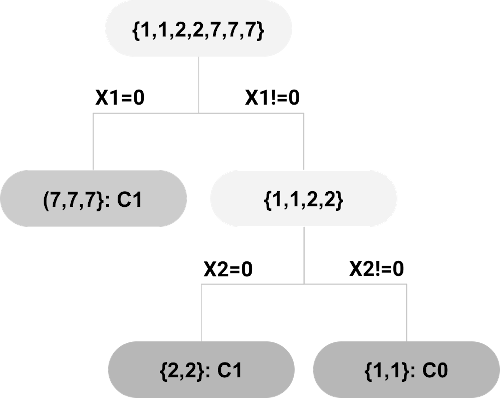 Figure 187: Example of a decision tree; leaf nodes (a.k.a., decision nodes) are shadowed in gray.
Each rule is evaluated by three criteria: the length of a rule that is defined as the number of variables in the rule; the frequency of a rule that is the proportion of data points in the dataset that meet the condition of the rule, and the error rate of a rule. For classification problems, the error rate of a rule is the number of data points incorrectly identified by the rule divided by the number of data points that meet the condition of the rule.
For regression problems, the error rate of a rule is the mean squared error (MSE), that is defined as
\[MSE = \frac{1}{N}\sum_{i=1}^N \left(y_i - \bar{y}\right)^2,\]
where \(N\) is the number of data points in the leaf node that corresponds to the rule, \(y_i\) is the value of the outcome variable of the \(i^{th}\) data point, and \(\bar y\) is the average of the outcome variable (i.e., as the prediction at the leaf node).
Based on these three criteria, the evaluation of the three rules is shown in Table 55.262 Apply each rule on the data points in Table 54.
Table 55: Evaluation of the three rules extracted from the tree in Figure 187
| ID | Rule | Length | Frequency | Error |
|---|---|---|---|---|
| \(1\) | \(\{x_1 = 0 \to Class = C_0\}\) | \(1\) | \(5/7\) | \(2/5\) |
| \(2\) | \(\{x_1 \neq 0, x_2 = 0 \to Class=C_1\}\) | \(2\) | \(1/7\) | \(0/1\) |
| \(3\) | \(\{x_1 \neq 0, x_2 \neq 0 \to Class=C_0\}\) | \(2\) | \(1/7\) | \(0/1\) |
Prune rules. A lengthy rule, i.e., a rule with many variables, is hard to interpret. For example, consider a rule
\[ \text{Rule: } \{ \text{Age} \leq 65, \text{Gene A } = \text{Type 1}, \text{Gene B } = \text{Type 3} \to Class= \text{No risk}\}. \]
It is unknown if the three variables are equally important in making the prediction. And, because the way the random forests grow the trees, it is possible that some variables in a rule are not significant at all263 I.e., these variables are selected because the random forest model purposely randomizes the learning process.. Therefore, it is beneficial to prune the rules and remove irrelevant variables from the rules.
Take Rule \(2\) \(\{x_1 \neq 0, x_2=0\to Class=C_1\}\) for example. The error rate for this rule is \(0\).264 See Table 55. Now remove \(x_1 \neq 0\) from the rule, and the new rule becomes \[\{x_2=0\to Class=C_1\},\] which has an error of \(3/5\).265 Use Table 54. Therefore, the error rate increases by \(3/5\). This increase of error rate is named decay in the terminology of inTrees. A threshold is set by the user, i.e., here, if the threshold is set to be \(0.05\), we should not remove \(x_1\) from Rule \(2\) since \(3/5>0.05\).
Now let’s remove \(x_2=0\). The resulting rule is \[ \{x_1 \neq 0\to Class=C_1\}, \] which has an error of \(1/2\). Therefore, \(x_2\) should not be pruned either.
Rules are variables. Each rule leads to a redefined variable. For example, consider the dataset in Table 54. We name the three rules shown in Table 55 as variables \(z_1\), \(z_2\), and \(z_3\), respectively. We only use the condition of a rule to define the variable. For instance, the condition of a rule is illustrated below
\[ \{\underbrace{x_1 \neq 0}_{condition}\to \underbrace{Class=C_1}_{outcome}\}. \]
Consider \(z_1\) first266 I.e., \(\{x_1=0\}\).. The data points in Table 54 that meet the condition \(\{x_1=0\}\) include \(\text{ID} = \{3,4,5,6,7\}\). Thus, the values of \(z_1\) are \(\{0,0,1,1,1,1,1\}\). For \(z_2\),267 I.e., \(\{x_1 \neq 0,x_2=0\}\). only data point \(\text{ID} = \{2\}\) meets the condition, and therefore, the values of \(z_2\) are \(\{0,1,0,0,0,0,0\}\). Similarly, the values of \(z_3\) are \(\{1,0,0,0,0,0,0\}\).268 I.e., \(\{x_1 \neq 0, x_2 \neq 0\}\).
The new dataset is shown in Table 56.
Table 56: The binarized dataset of Table 54 by the rules in Table 55
| ID | \(z_1\) | \(z_2\) | \(z_3\) | Class |
|---|---|---|---|---|
| \(1\) | \(0\) | \(0\) | \(1\) | \(C_0\) |
| \(2\) | \(0\) | \(1\) | \(0\) | \(C_1\) |
| \(3\) | \(1\) | \(0\) | \(0\) | \(C_1\) |
| \(4\) | \(1\) | \(0\) | \(0\) | \(C_1\) |
| \(5\) | \(1\) | \(0\) | \(0\) | \(C_0\) |
| \(6\) | \(1\) | \(0\) | \(0\) | \(C_0\) |
| \(7\) | \(1\) | \(0\) | \(0\) | \(C_0\) |
Select rules. A feature selection method could be applied on the new dataset to select the significant variables. Methods such as the \(L_1\) regularized logistics regression (i.e., the equivalent of LASSO for logistic regression model) and regularized random forests are used in the inTrees.
Note that most existing methods don’t concern the length of the rules. But, given two rules with the same predictive power, the rule with a shorter length should be preferred269 A shorter rule means a simpler model, better interpretability, etc.. In inTrees, the Guided Regularized Random Forest (GRRF) is also an option for feature selection: the GRRF can assign a weight to each variable, so that when two variables have similar predictive power, the variable with higher weight is more likely to be selected. In our case, we could set higher weight270 What is the optimal weight? We could use cross-validation to decide. for shorter rules in GRRF.
Rule ensemble. As the rules are taken as new variables, a new dataset such as the one shown in Table 56 is created. So theoretically, any model could be applied on the new dataset to build a prediction model. There are preferences in different packages. For example, in RuleFit, a linear regression model is used that takes the rules as predictors. In inTrees, a simple rule ensemble method summarizes the rules into an ordered rule set for prediction.
It takes a few iterations to develop the ordered rule set. First, we create a default rule, denoted as \(r_0\), that has a null condition and classifies all the data points to be the most frequent class (if it is a regression model, then \(r_0\) predicts all the data points to be the population average).
Denote the ordered rule set as R, which is set to be empty at the beginning. Then, the algorithm searches through the available rules and identifies the best rule and adds it into R. The best rule is defined as the rule with the minimum error evaluated by the training data. If there are ties, the rule with higher frequency and smaller length is selected. Then, the data points that meet the condition of the best rule are removed, and the default rule \(r_0\) is re-calculated with the data points left. The algorithm iterates to search for the next best rule and update \(r_0\) after each iteration. This iterative process continues until no data point is left in the training dataset, or the default rule \(r_0\) beats all other available rules that have not been added into the rule ensemble set \(R\). Note that, the selected rules in R are ordered according to the sequential order of their inclusion.
Consider the dataset shown in Table 54 and the rules shown in Table 55. The error rate and frequency of each rule is shown in Table 57.
Table 57: Error rates and frequencies of the rules in Table 55 using the dataset in Table 54
| ID | Rule | Error | Frequency |
|---|---|---|---|
| \(0\) | \(\{Class=C_0\}\) | \(3/7\) | \(7/7\) |
| \(1\) | \(\{x_1 = 0 \to Class = C_0\}\) | \(2/5\) | \(5/7\) |
| \(2\) | \(\{x_1 \neq 0, x_2 = 0 \to Class=C_1\}\) | \(0/1\) | \(1/7\) |
| \(3\) | \(\{x_1 \neq 0, x_2 \neq 0 \to Class=C_0\}\) | \(0/1\) | \(1/7\) |
At the beginning, the default rule is \(\{Class=C_0\}\), and its error rate is \(3/7\). The algorithm then searches for the best rule in the available rules (i.e., shown in Table 55). Rule 2 and Rule 3 have the least errors, and their frequency and length are also the same. Thus, we can add either of them into \(R\). Assume that Rule 2 is selected: \(R=\{x_1 \neq 0,x_2=0\to Class=C_1\}\). Then, the data point (ID:\(2\)) classified by this rule is removed from Table 54. The default rule \(r_0\) is still \(\{Class=C_0\}\), and the error and frequency of each rule on the updated dataset271 The data point (ID:\(2\)) is removed. is updated, as shown in Table 58.
Table 58: Updated error rates and frequencies of the rules in Table 55 using the reduced dataset, i.e., data point (ID:\(2\)) in Table 54 is removed
| ID | Rule | Error | Frequency |
|---|---|---|---|
| \(0\) | \(\{Class=C_0\}\) | \(2/6\) | \(6/6\) |
| \(1\) | \(\{x_1 = 0 \to Class = C_0\}\) | \(2/5\) | \(5/6\) |
| \(2\) | \(\{x_1 \neq 0, x_2 = 0 \to Class=C_1\}\) | NA | \(0/6\) |
| \(3\) | \(\{x_1 \neq 0, x_2 \neq 0 \to Class=C_0\}\) | \(0/1\) | \(1/6\) |
A new iteration begins and \(\{x_1 \neq 0,x_2\neq 0\to Class=C_0\}\) is added to R, and the data point (ID:\(1\)) is removed. The default rule remains unchanged and the error and frequency of each rule on the updated dataset272 The data points (ID:\(1\) and ID:\(2\)) in Table 54 are removed. is updated in Table 59.
Table 59: Updated error rates and frequencies of the rules in Table 55 using the reduced dataset, i.e., data points (ID:\(1\) and ID:\(2\)) in Table 54 are removed
| ID | Rule | Error | Frequency |
|---|---|---|---|
| \(0\) | \(\{Class=C_0\}\) | \(2/5\) | \(5/5\) |
| \(1\) | \(\{x_1 = 0 \to Class = C_0\}\) | \(2/5\) | \(5/5\) |
| \(2\) | \(\{x_1 \neq 0, x_2 = 0 \to Class=C_1\}\) | NA | \(0/5\) |
| \(3\) | \(\{x_1 \neq 0, x_2 \neq 0 \to Class=C_0\}\) | NA | \(0/5\) |
Now the default rule \(Class=C_0\) has the minimum error \(2/5\), the same as \(\{x_1=0\to Class=C_0\}\). Therefore, the default rule is added to R and the process stops. The final ordered rule set R is summarized in Table 60.
Table 60: Final results of R
| Order | Rule |
|---|---|
| \(0\) | \(\{Class=C_0\}\) |
| \(1\) | \(\{x_1 \neq 0, x_2 = 0 \to Class=C_1\}\) |
| \(2\) | \(\{x_1 \neq 0, x_2 \neq 0 \to Class=C_1\}\) |
When predicting on an instance, the first rule in R that hits the data point is used for prediction. For example, for a data point \(\{x_1 \neq 0,x_2=1\}\), it meets the condition of Rule 2 in R. The prediction on this data point is \(C_1\). For data point \(\{x_1=0,x_2=1\}\), it does not meet the condition of either Rule \(1\) or Rule \(2\) in R. Therefore, the default rule is used, and the prediction is \(C_0\).
R Lab
We use inTrees on the AD datasedt. Based on the random forest model, \(4555\) rules are extracted.
rm(list = ls(all = TRUE))
library("arules")
library("randomForest")
library("RRF")
library("inTrees")
library("reshape")
library("ggplot2")
set.seed(1)
url <- paste0("https://raw.githubusercontent.com",
"/analyticsbook/book/main/data/AD.csv")
data <- read.csv(text=getURL(url))
target_indx <- which(colnames(data) == "DX_bl")
target <- paste0("class_", as.character(data[, target_indx]))
rm_indx <- which(colnames(data) %in%
c("DX_bl", "ID", "TOTAL13", "MMSCORE"))
X <- data
X <- X[, -rm_indx]
for (i in 1:ncol(X)) X[, i] <-
as.factor(dicretizeVector(X[, i], K = 3))
## Use random forests to grow the trees
rf <- randomForest(X, as.factor(target))
# transform rf object to an inTrees' format
treeList <- RF2List(rf)
exec <- extractRules(treeList, X) # Extract the rules
## The rules are measured by length, error and frequency.
class <- paste0("class_", as.character(target))
rules <- getRuleMetric(exec, X, target)The statistics of the rules could be extracted, e.g., \(5\) rules are shown below.
print(rules[order(as.numeric(rules[, "len"])), ][1:5, ])
# len freq err
# [1,] "2" "0.118" "0.098"
# [2,] "2" "0.182" "0"
# [3,] "2" "0.182" "0"
# [4,] "2" "0.081" "0.024"
# [5,] "2" "0.043" "0.136"
# condition pred
# [1,] "X[,6] %in% c('L1') & X[,11] %in% c('L1')" "class_1"
# [2,] "X[,4] %in% c('L1') & X[,6] %in% c('L1')" "class_1"
# [3,] "X[,4] %in% c('L1') & X[,6] %in% c('L1')" "class_1"
# [4,] "X[,3] %in% c('L3') & X[,4] %in% c('L3')" "class_0"
# [5,] "X[,6] %in% c('L3') & X[,7] %in% c('L3')" "class_0"We then prune the rules. Recall that we need to specify the threshold of decay. This could be done in R by setting the value of the parameter maxDecay. The statistics of the rules before and after pruning are shown in Figures 188—190.
 Figure 188: Histogram of lengths of the rules before and after the pruning
Figure 188: Histogram of lengths of the rules before and after the pruning
The R code below generates Figure 188.
rules.pruned <- pruneRule(rules, X, target, maxDecay = 0.005,
typeDecay = 2)
length <- data.frame(original = as.numeric(rules[, "len"]),
pruned = as.numeric(rules.pruned[,"len"]))
## Visualize the result
ggplot(melt(length), aes(value, fill = variable)) +
geom_histogram(position = "dodge",binwidth = 0.4) +
ggtitle("Histogram of Lengths") +
theme(plot.title = element_text(hjust = 0.5))
 Figure 189: Histogram of frequencies of the rules before and after the pruning
Figure 189: Histogram of frequencies of the rules before and after the pruning
The R code below generates Figure 189.
frequency <- data.frame(
original = as.numeric(rules[, "freq"]),
pruned = as.numeric(rules.pruned[,"freq"]))
ggplot(melt(frequency), aes(value, fill = variable)) +
geom_histogram(position = "dodge",binwidth = 0.05) +
ggtitle("Histogram of Frequencies") +
theme(plot.title = element_text(hjust = 0.5))The R code below generates Figure 190.
error <- data.frame(original = as.numeric(rules[, "err"]),
pruned = as.numeric(rules.pruned[,"err"]))
## Visualize the result
ggplot(melt(error), aes(value, fill = variable)) +
geom_histogram(position = "dodge",binwidth = 0.01) +
ggtitle("Histogram of Errors") +
theme(plot.title = element_text(hjust = 0.5))
 Figure 190: Histogram of errors of the rules before and after the pruning
Figure 190: Histogram of errors of the rules before and after the pruning
Figure 188 shows that the lengths of the rules are substantially reduced. For example, a majority of the original rules have a length of \(6\), while after pruning, only a slight percentage of the rules have a length of \(6\). Also, since rules are shortened, reduction of frequencies of the rules is also significant, as shown in Figure 189. The errors are also reduced; e.g., Figure 190 shows the distribution of errors shifted to the left after pruning. Overall, the quality of the rules is improved with a proper choice of the pruning parameters.
The following R code prunes the rule set.
rules.selected <- selectRuleRRF(rules.pruned, X, target)
rules.present <- presentRules(rules.selected, colnames(X))
## See the specific contents of the selected rules
print(cbind(ID = 1:nrow(rules.present),
rules.present[, c("condition", "pred")]))Finally, \(16\) rules are selected. Their performances are shown below273 Details of the rules could also be printed out in R..
print(cbind(ID = 1:nrow(rules.present),
rules.present[, c("len", "freq", "err")]))
## ID len freq err
## [1,] "1" "2" "0.279" "0.083"
## [2,] "2" "2" "0.279" "0.09"
## [3,] "3" "5" "0.029" "0.133"
## [4,] "4" "3" "0.122" "0.016"
## [5,] "5" "4" "0.031" "0.312"
## [6,] "6" "2" "0.207" "0.121"
## [7,] "7" "3" "0.172" "0.124"
## [8,] "8" "4" "0.06" "0.194"
## [9,] "9" "5" "0.006" "0"
## [10,] "10" "4" "0.044" "0.13"
## [11,] "11" "5" "0.019" "0.2"
## [12,] "12" "3" "0.043" "0.182"
## [13,] "13" "4" "0.037" "0.158"
## [14,] "14" "3" "0.114" "0.203"
## [15,] "15" "2" "0.234" "0.215"
## [16,] "16" "3" "0.282" "0.144"Remarks
Images, text, and audio
To learn more about deep learning we recommend readers to start with this book274 Goodfellow, I., Bengio, Y., and Courville, A., Deep Learning. The MIT Press, 2016.. There are many online lecture notes and tutorials that are informative. Here, it is worth mentioning that there has not been a unified theory about deep learning, and even the definition of what is a deep model is up to debate. This is good. If we look back at the developmental processes of many statistics and machine learning models, we may observe that some models were developed based on inspiration from theory and we often call these models too theoretical. These models usually wobble and stumble in their early years, gradually become mature and a proven approach, and eventually establish themselves as effective models in practice. Some other models, however, were developed ahead of theory, and theory only comes later to explain the model’s success. For deep learning, it is hard to say if it was theory that inspired the models, or it was the models that inspired theory. Many efforts are committed to give an overarching theory to explain the success of deep learning, at least in some special cases. Yet there has not been such an overarching theory about deep learning, only competing narratives275 Interested readers may read this article by Colah, C., Neural Networks, Types, and Functional Programming, https://colah.github.io/posts/2015-09-NN-Types-FP/..
It is natural to wonder why we use a deep model. Can’t we just use a nondeep model? Readers may have been using nondeep models and found those nondeep models sufficient to solve problems in practice. Certainly we can just use nondeep models. There have been plenty of examples in practice that nondeep models were the best276 A recent example: The Math of March Madness, New York Times, https://www.nytimes.com/2015/03/22/opinion/sunday/making-march-madness-easy.html., only if we have the best variables (e.g., the \(x_1\), \(x_2\), …, \(x_p\)) that are sufficient to explain the “movement” of our target \(y\). The availability of high-quality and ready-to-use \(\boldsymbol{x}\) is a precondition for the success of nondeep models. This precondition, however, is not always held in practice.
This is one reason why deep models can make a difference. Most nondeep models deal with a data structure that is Excel-sheet-like, i.e., they are stored or could be stored in an Excel spreadsheet. In many applications, particularly in recent years, the raw data is in free-form (sometimes it is also called unstructured data) such as images, text, and audio data. That means, to use the nondeep models for these applications, there should be a preprocessing/translational step that could extract the variables \(\boldsymbol{x}\) from the raw data. It is notable that the translational process itself takes up a larger portion of effort of a data scientist in practice, and since the process involves multiple steps and layers, it naturally adopts a deep form, and further includes the nondeep model as its last layer to be part of its architecture.
It is no surpise then that mature practices of deep learning have been mainly found on unstructured data such as images, text, and audio data. From the raw data such as an X-ray image to the final outcome such as diagnosis of a disease, there are plenty of steps to transform the raw data into interpretable information. These steps put together creates a deep model. In other words, deep learning automates and optimizes this translational process.
A key is made to unlock, but what is the lock?
There is another magic dimension to deep learning. Researchers in different disciplines have created many basic forms of functions that could be used as building blocks to build larger functions. On the other hand, as model validation has been made automatic and data-driven277 I.e., given a few candidate models, we no longer need to validate the models by their scientific implication but only check how well they fit the data. See Figure 92 in Chapter 5., a deep model doesn’t demand interpretability or validity to be useful. In practice, your task is empirical: put together the architecture of a deep model, and if it obtains superior performance on data, it is a superior model. Now, if a complex problem in the real world is a sophisticated lock, deep learning’s real appeal is that we only need to spend effort in guessing at the key (i.e., the architecture of the deep neural network), but not necessarily in understanding the lock. And what makes it more convenient is that we can try every key we made (i.e., by fitting it with data) until the lock is opened. Is this a rational practice? There have been discussions around this topic and readers may be interested to look into this278 See, Hutson, M., Has artifical intelligence become alchemy?, Science, 2018..
Decay and relative decay
To prune a rule, inTrees uses leave-one-out pruning, i.e., at each round, it removes one variable and checks how much error this removal will induce. We have introduced the concept decay. For the \(i^{th}\) variable in the condition of a rule, its decay is defined as
\[decay_i = Err_{-i}-Err,\]
where \(Err\) is the error of the original rule, \(Err_{-i}\) is the error of the rule with the \(i^{th}\) variable removed.
There is another definition of decay in inTrees, called relative decay, which is defined as
\[decay_i = \frac{Err_{-i}-Err}{\max(Err,s)},\]
where \(s\) is a small positive constant (e.g., \(0.001\)) that bounds the value of decay when \(Err\) is zero or close to zero. An advantage of using relative decay is that one does not need to know the level of error of a dataset279 For instance, for one dataset the error rate \(0.01\) is probably insignificant, but for another \(0.01\) is a big difference..
Exercises
 Figure 191: A NN model with its parameters
Figure 191: A NN model with its parameters
Complete the convolution operation as shown in Figure 191.
Use the
convolution()function in R packageOpenImageRto run the data in Q1.Let’s try applying the convolution operation on a real image. For example, use the following R code to get the image shown in Figure 192.
 Figure 192: Data for Q3
Figure 192: Data for Q3
library(EBImage)
readImage(system.file("images", "sample-color.png",
img <- readImage(system.file("images", "sample-color.png",
package="EBImage"))
grayimage<-channel(img,"gray")
display(grayimage)
Use the convolution() function in R package OpenImageR to filter this image. You can use the high-pass Laplacian filter, that would be defined in R as
kernel = matrix(1, nc=3, nr=3)
kernel[2,2] = -8- Figure 193 shows a NN model with its parameters. Use this NN model to predict on the data points shown in Table 61.
Figure 193: A NN model for Q4

Table 61: Test dataset for the NN model in Q4
| ID | \(x_1\) | \(x_2\) | \(y\) |
|---|---|---|---|
| \(1\) | \(0\) | \(1\) | |
| \(2\) | \(-1\) | \(2\) | |
| \(3\) | \(2\) | \(2\) |
- Use the
BostonHousingdataset from the R packagemlbenchand select the variablemedvas the outcome and all other numeric variables as predictors. Run the R pipeline for NN on it. Use \(10\)-fold cross-validation to evaluate a NN model with \(2\) hidden layers, while each layer has a number of nodes of your choice. Comment on the result.
Conclusion
In his book280 Shewhart, W.A., Statistical Method from the Viewpoint of Quality Control, The Department of Agriculture, 1939. published in 1939—the era when statistics and mass production found each other—Walter A. Shewhart wrote, “In any case … an observed sequence is or is not random can be verified only in the future.” The sequence of observations shown in Figure 36 in Chapter 3 must have puzzled many in his time, and we know it was a time of chaos. The data without being looked at by a model is like a mountain in the Cascade Range that has not been named. Why, according to Ayn Rand, do the machines have their moral code“Every part of the motors was an embodied answer to ‘Why?’ and ‘What for?’”281 Rand, A., Atlas Shrugged, Random House, 1957.. Not surprisingly, but still conceptually challenging even nowadays for newcomers to accept his idea, Walter A. Shewhart created the concept of a control chart to frame the sequence of observations in Figure 36. His brilliant and bold idea is shown in Figure 37.
We are still doing the same thing Shewhart had done to create a frame and look at the data within the frame, as Figure 194 shows.
Sometimes, we even love the frame more than the picture. But any valuable effort in practice must meet a specific goal, and how the frame can help us reach the goal is the first step to exercise our knowledge, willpower, and judgment. So, without further rambling, we invite you to answer this question: how do you connect the \(9\) points in Figure 194 with \(4\) lines?
Figure 194: (Left) the data; (right) the data being looked at within a frame
Readers, congratulations. The answer is illustrated in Figure 195.
Figure 195: The answer to connecting \(9\) points with \(4\) lines
Appendix: A Brief Review of Background Knowledge
Recall that in this book, we use lower case letters, e.g., \(x\), to represent scalars; bold face, lower case letters, e.g., \(\boldsymbol{x}\), to represent vectors; and bold face, upper case letters, e.g., \(\boldsymbol{X}\), to represent matrices.
The Normal Distribution
A distribution model characterizes the random behavior of a random variable. A random variable takes value from a predefined set, range, or a continuum, but not all values are taken with equal probabilities. How these probabilities are distributed is characterized by the distribution model. Before the computer age, for a distribution model to acquire a status of natural law it usually has an elegant geometric shape that comes with a delicate mathematical form, as many examples shown in Figure 4. As we have computers now doing a lot of computation, a distribution could be just an empirical histogram that has not yet found its explicit mathematical form. Whether or not this empirical form of distribution would repeat itself as a natural law remains to be seen. In practice, a competitive edge could be gained before you find scientific explanation, as long as it works.
In this book we will not have extensive coverage of distribution models. We will focus on normal distribution; but other than that, everything we learn about the normal distribution is also to help us extend beyond it and establish the concept of distribution as an abstract one.
A random variable \(x\) distributed as a normal distribution is denoted as
\[ x \sim N\left(\mu, \sigma^{2}\right). \]
The normal distribution has the mathematical form
\[ N\left(\mu, \sigma^{2}\right) = \frac{1}{\sqrt{2\pi} \sigma}e^{-\frac{1}{2}(\frac{x - \mu}{\sigma})^2 }. \]
If we multiply \(x\) with a constant \(a\), then
\[ ax \sim N\left(a\mu, a^2\sigma^{2}\right). \tag{103} \]
Extending the concept of distribution to \(p\)-dimensional space, we have the multivariate normal distribution (MVN) of vector \(\boldsymbol{x}\)
\[ \boldsymbol{x} \sim MVN\left(\boldsymbol{\mu}, \boldsymbol{\Sigma}\right), \]
where
\[ \boldsymbol{\mu}=\left[ \begin{array}{c}{\mu_{1}} \\ {\mu_{2}} \\ {\vdots} \\ {\mu_{p}}\end{array}\right], \text { } \boldsymbol{\Sigma}=\left[ \begin{array}{cccc} {\sigma^2_{1}} & {\sigma_{12}} & {\cdots} & {\sigma_{1p}} \\ {\sigma_{21}} & {\sigma^2_{2}} & {\cdots} & {\sigma_{2p}} \\ {\vdots} & {\vdots} & {\vdots} & {\vdots} \\ {\sigma_{p1}} & {\sigma_{p2}} & {\cdots} & {\sigma^2_{p }}\end{array}\right], \]
and
\[ MVN\left(\boldsymbol{\mu}, \boldsymbol{\Sigma}\right) = \frac{1}{\sqrt{(2\pi)^p\det{\boldsymbol{\Sigma}}}}\exp\left({-\frac{1}{2}(\boldsymbol{x}-\boldsymbol{\mu})^T\boldsymbol{\Sigma}^{-1}}(\boldsymbol{x}-\boldsymbol{\mu})\right). \]
To interpret the covariance matrix \(\boldsymbol{\Sigma}\), let’s look at an example where \(p=2\). Its covariance matrix is
\[ \boldsymbol{\Sigma_1} = \left[ \begin{array}{cc} {\sigma^2_1} & {\sigma_{12}} \\ {\sigma_{21}} & {\sigma_2^2}\end{array}\right]. \]
The element \(\sigma^2_1\) is the marginal variance of variable \(x_1\), \(\sigma^2_2\) is the marginal variance of variable \(x_2\), and \(\sigma_{12}\) that equals to \(\sigma_{21}\) is the covariance between \(x_1\) and \(x_2\).282 Covariance is closely related to the concept of correlation. For instance, denote the correlation between \(x_1\) and \(x_2\) as \(r\), which is defined as \(r = \frac{\sigma_{12}}{\sigma_1\sigma_2}\). It could be shown that \(r\) takes value from \(-1\) (i.e., perfect negative correlation) to \(1\) (i.e., perfect positive correlation). Note that this correlation concept is built on the normal distribution, and the correlation \(0\) doesn’t imply the two variables have no relationship in any possible form. Rather, it only implies that there is no linear relationship between the two.
Three examples of the covariance matrix are shown below
\[ \boldsymbol{\Sigma_1} = \left[ \begin{array}{cc} {1} & {0} \\ {0} & {1}\end{array}\right], \text { } \boldsymbol{\Sigma_2} = \left[ \begin{array}{cc} {1} & {0.8} \\ {0.8} & {1}\end{array}\right], \text { } \boldsymbol{\Sigma_3} = \left[ \begin{array}{cc} {1} & {1} \\ {1} & {1}\end{array}\right]. \]
The corresponding contour plots of the three bivariate normal distributions are shown in Figure 196.
If we add \(\boldsymbol{x}\) (i.e., \(\boldsymbol{x} \in R^{p \times 1}\)) with a constant vector \(\boldsymbol{a}\) (i.e., \(\boldsymbol{a} \in R^{p \times 1}\)), then
Figure 196: The contour plots of the three bivariate normal distributions

\[ \boldsymbol{a + x} \sim MVN\left(\boldsymbol{a + \mu}, \boldsymbol{\Sigma}\right). \]
If we multiply \(\boldsymbol{x}\) (i.e., \(\boldsymbol{x} \in R^{p \times 1}\)) with a constant \(\boldsymbol{a}\) (i.e., \(\boldsymbol{a} \in R^{p \times 1}\)), then
\[ \boldsymbol{a^Tx} \sim MVN\left(\boldsymbol{a^T\mu}, \boldsymbol{a^T\Sigma a}\right). \]
Matrix Operations
A matrix is a basic structure in data analytics that organizes data in a rectangular array, e.g., a matrix \(\boldsymbol{X} \in R^{p \times q}\) with \(p\) rows and \(q\) columns is
\[ \boldsymbol{X}=\left[ \begin{array}{cccc} {x_{11}} & {x_{12}} & {\cdots} & {x_{1q}} \\ {x_{21}} & {x_{22}} & {\cdots} & {x_{2q}} \\ {\vdots} & {\vdots} & {\vdots} & {\vdots} \\ {x_{p1}} & {x_{p2}} & {\cdots} & {x_{pq}}\end{array}\right]. \]
Matrix transposition. A matrix \(\boldsymbol{X} \in R^{p \times q}\) could be transposed into a matrix \(\boldsymbol{X}^T \in R^{q \times p}\), i.e.,
\[ \boldsymbol{X}^T=\left[ \begin{array}{cccc} {x_{11}} & {x_{21}} & {\cdots} & {x_{q1}} \\ {x_{12}} & {x_{22}} & {\cdots} & {x_{q2}} \\ {\vdots} & {\vdots} & {\vdots} & {\vdots} \\ {x_{1p}} & {x_{2p}} & {\cdots} & {x_{qp}}\end{array}\right]. \]
Matrix addition. Two matrices of the same dimensions could be added together entrywise, i.e., \(\boldsymbol{X} + \boldsymbol{Y}\) is defined as
\[ \boldsymbol{X + Y}=\left[ \begin{array}{cccc} {x_{11}+y_{11}} & {x_{12}+y_{12}} & {\cdots} & {x_{1q}+y_{1q}} \\ {x_{21}+y_{21}} & {x_{22}+y_{22}} & {\cdots} & {x_{2q}+y_{2q}} \\ {\vdots} & {\vdots} & {\vdots} & {\vdots} \\ {x_{p1}+y_{p1}} & {x_{p2}+y_{p2}} & {\cdots} & {x_{pq}+y_{pq}}\end{array}\right]. \]
Scalar multiplication: The product of a constant \(c\) and a matrix \(\boldsymbol{X} \in R^{p \times q}\) is computed by multiplying every entry of \(\boldsymbol{X} \in R^{p \times q}\) by \(c\), i.e.,
\[ c\boldsymbol{X}=\left[ \begin{array}{cccc} {cx_{11}} & {cx_{12}} & {\cdots} & {cx_{1q}} \\ {cx_{21}} & {cx_{22}} & {\cdots} & {cx_{2q}} \\ {\vdots} & {\vdots} & {\vdots} & {\vdots} \\ {cx_{p1}} & {cx_{p2}} & {\cdots} & {cx_{pq}}\end{array}\right]. \]
Matrix multiplication. Two matrices could be multiplied if the number of columns of the left matrix is the same as the number of rows of the right matrix, i.e., for \(\boldsymbol{X} \in R^{p \times q}\), it could be multiplied with any matrix that has \(q\) rows. Let’s say we have two matrices, \(\boldsymbol{X} \in R^{2 \times 3}\) and \(\boldsymbol{Y} \in R^{3 \times 2}\), the multiplication \(\boldsymbol{XY}\) is a matrix \(\in R^{2 \times 2}\), where
\[ \boldsymbol{XY}=\left[ \begin{array}{cccc} {x_{11}y_{11}+ x_{12}y_{21}+ x_{13}y_{31}} & {x_{11}y_{12}+ x_{12}y_{22}+ x_{13}y_{32}} \\ {x_{21}y_{11}+ x_{22}y_{21}+ x_{23}y_{31}} & {x_{21}y_{12}+ x_{22}y_{22}+ x_{23}y_{32}}\end{array}\right]. \]
Matrix derivative. Matrix derivative is a rich category that includes many situations. Readers may find a comprehensive coverage in a few books283 Harville, D.A., Matrix Algebra From a Statistician’s Perspective, Springer, 2000. or find a quick reference in online resources284 Petersen, K.B. and Pedersen, M.S., The Matrix Cookbook, online document (https://www.math.uwaterloo.ca/~hwolkowi/matrixcookbook.pdf).. Here, we mention a few examples that are related topics in this book.
Denote that \(y=f(\boldsymbol{X})\) is a scalar function of the matrix \(\boldsymbol{X} \in R^{p \times q}\). Then derivative of \(y\) with respect to the matrix \(\boldsymbol{X}\) is given by
\[ \frac{\partial y }{\partial \boldsymbol{X}} = \left[ \begin{array}{cccc} \frac{\partial y }{\partial x_{11}} & \frac{\partial y }{\partial x_{12}} & {\cdots} & \frac{\partial y }{\partial x_{1q}} \\ \frac{\partial y }{\partial x_{21}} & \frac{\partial y }{\partial x_{22}} & {\cdots} & \frac{\partial y }{\partial x_{2q}} \\ {\vdots} & {\vdots} & {\vdots} & {\vdots} \\ \frac{\partial y }{\partial x_{p1}} & \frac{\partial y }{\partial x_{p2}} & {\cdots} & \frac{\partial y }{\partial x_{pq}}\end{array}\right]. \]
Based on this definition, we can derive that
\[ \frac{\partial \boldsymbol{a}^T\boldsymbol{x} }{\partial \boldsymbol{x}} = \boldsymbol{a}; \]
\[ \frac{\partial \boldsymbol{x}^T\boldsymbol{B}\boldsymbol{x} }{\partial \boldsymbol{x}} = (\boldsymbol{B} + \boldsymbol{B}^T)\boldsymbol{x}; \]
\[ \frac{\partial \boldsymbol{(x-a)}^T\boldsymbol{B}\boldsymbol{(x-a)} }{\partial \boldsymbol{x}} = 2\boldsymbol{B}\boldsymbol{(x-a)}; \]
\[ \frac{\partial \boldsymbol{(Ax+b)}^T\boldsymbol{W}\boldsymbol{(Cx+d)} }{\partial \boldsymbol{x}} = \boldsymbol{A}^T\boldsymbol{W}\boldsymbol{(Cx+d)} + \boldsymbol{C}^T\boldsymbol{W}\boldsymbol{(Ax+b)}. \]
Matrix norm. The \(L_1\) norm of a vector \(\boldsymbol{x}\) is defined as
\[ \lVert \boldsymbol{x} \rVert_1 = \sum_{i=1}^p \lvert x_i \rvert. \]
The \(L_2\) norm of a vector \(\boldsymbol{x}\) is defined as
\[ \lVert \boldsymbol{x} \rVert^2_2 = \sum_{i=1}^p x_i^2. \]
Optimization
Figure 197: Illustration of the application of the First Derivative Test on the density function of a normal distribution to identify the location where the probability density is maximal.
The First Derivative Test, illustrated in Figure 8 in Chapter 2, is widely used in statistics and machine learning to find optimal solutions of a model formulation. Given a function \(f(x)\), the First Derivative Test finds the location \(x^*\) that leads to \(\frac{\partial f(x) }{\partial x} = 0\), i.e., denoted as \(f'(x^*)=0\). For instance, we can apply the First Derivative Test on the density function of a normal distribution to identify the location where the probability density is maximal285 That is, the mean \(\mu\).. An illustration of this application is shown in Figure 197.
The locations that are identified by the First Derivative Test may not be the global optimal points, as shown in Figure 19 in Chapter 2. On the other hand, it is relatively easy to use and is found to be quite effective in practice. Gradient-based optimization algorithms have been built on this concept to iteratively search for the locations where the first derivative could be set to zero. One such example is shown in Figure 29 in Chapter 3.